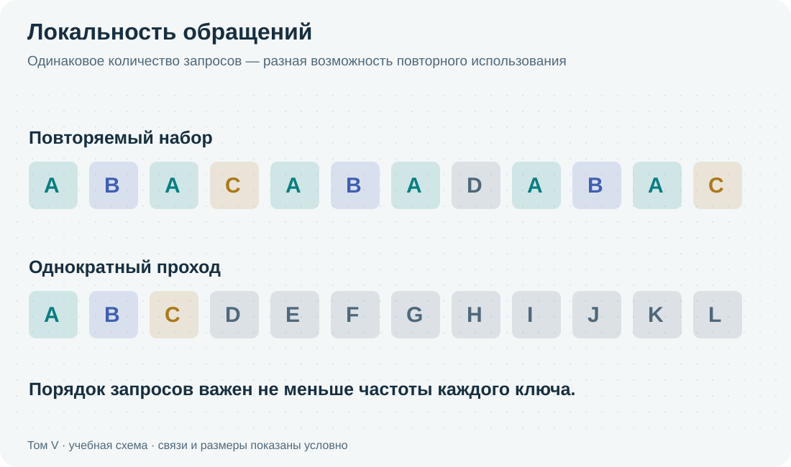
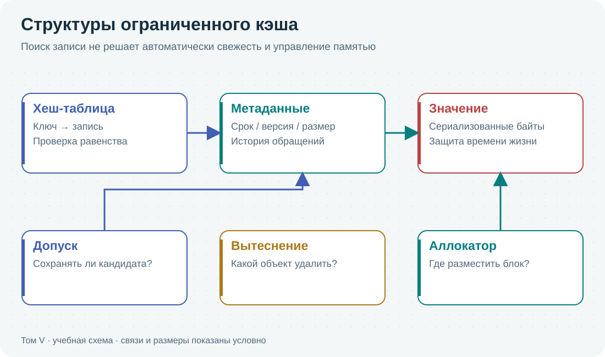
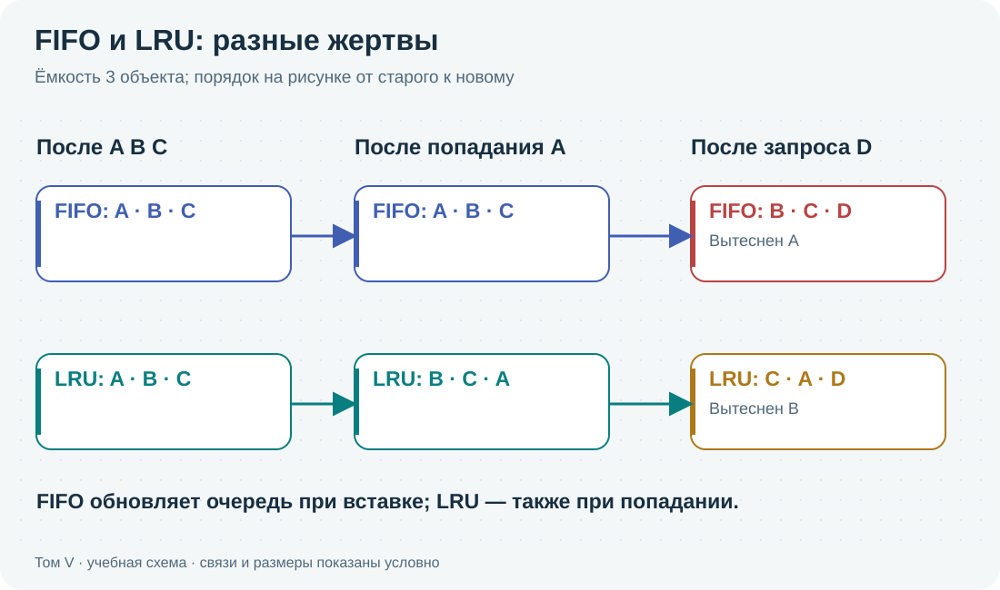
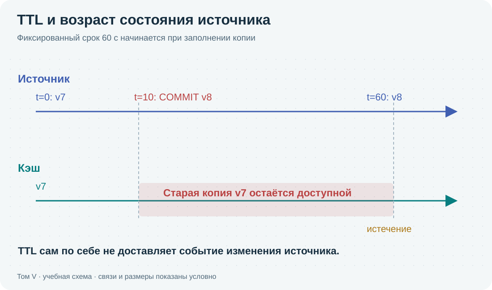
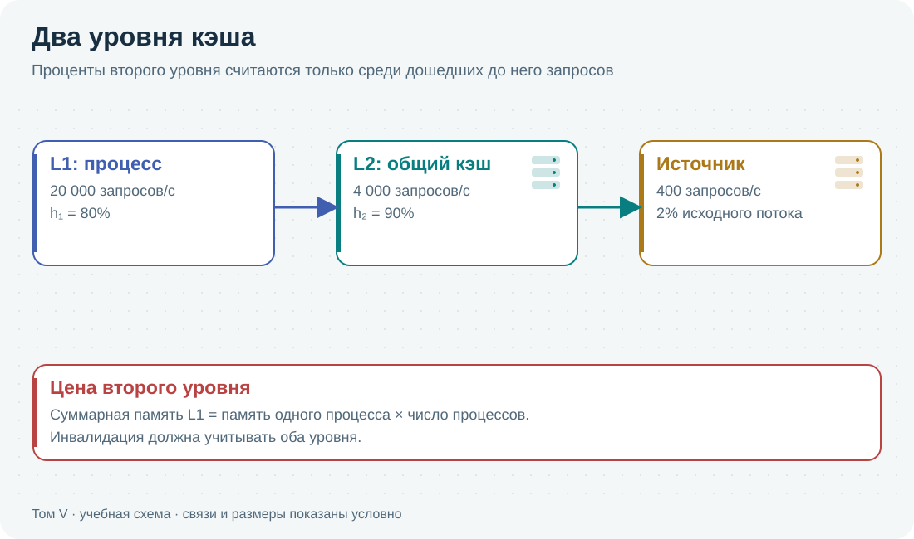
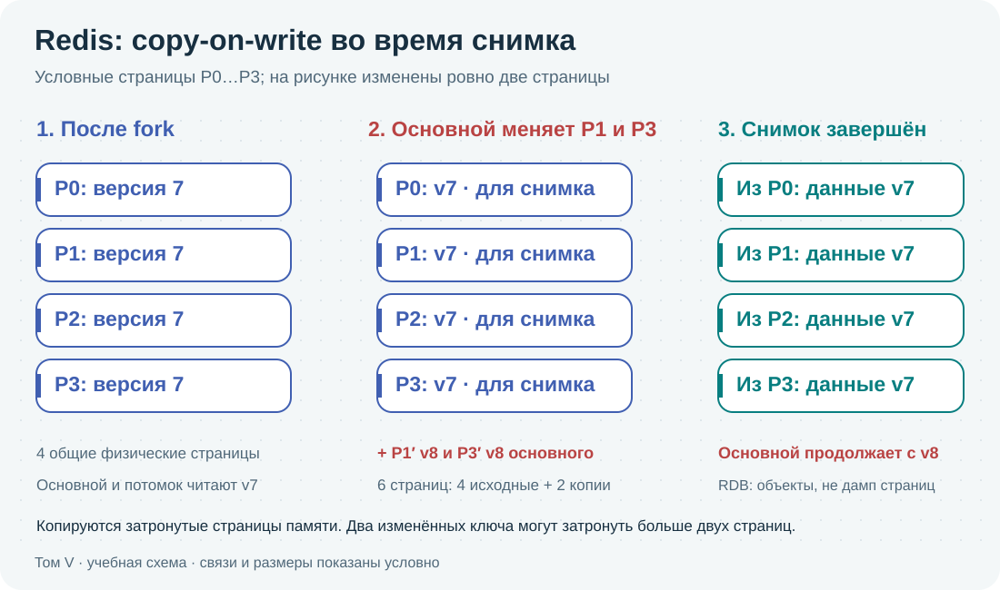

Три самостоятельные части. Теория объясняется независимо от продуктов. Затем каждый продукт изучается последовательно, со своей моделью доступа и распределения данных. Открыть схему крупно
Этот том построен как три последовательные части. Первая объясняет кэширование независимо от продукта: что именно сохраняется, когда копия полезна, почему заканчивается память, как выбирать жертву вытеснения и как доказать пользу. Вторая проводит через Redis: отдельный сервер, структуры данных, права, защищённое соединение, сохранность, репликацию и Redis Cluster. Третья проводит через Memcached: хранение байтов, протокол, устройство памяти, доступ, клиентское распределение и прокси.
Рабочая модель одна: источник владеет исходными данными, ключ описывает запрос, значение хранит результат для повторной выдачи. Срок жизни, или TTL (time to live), ограничивает пребывание записи по правилу отсчёта; инвалидация делает копию непригодной после изменения источника; вытеснение освобождает место при дефиците памяти. Это три разных причины исчезновения записи. Потеря восстановимой копии означает новую загрузку; потеря единственного оригинала уже требует восстановления данных.
Что считать понятым механизмом
После раздела читатель должен уметь восстановить путь одного запроса: какие объекты существовали перед действием, кто прочитал или изменил их, какой ресурс потрачен и какое наблюдение подтверждает результат. Если алгоритм обещает улучшение, нужно назвать нагрузку, на которой это верно, и нагрузку, на которой он проигрывает. Если команда дала OK, нужно объяснить, что именно подтверждено, а какие гарантии из этого не следуют.
В начале идут термины и обычный путь, затем ограничения и отказные случаи. Подробности Redis не используются как скрытое предварительное знание в теории. В руководстве Memcached различия с Redis выделяются отдельно, но команды и алгоритм работы объясняются заново в собственном контексте. Общие расчётные главы остаются точками возврата, а не обязательным путешествием по случайным ссылкам.
Как читать примеры
Числа каталога — учебные исходные данные. Результат арифметики можно воспроизвести, но он не является измерением продукта. Пошаговая схема — модель указанного чередования событий. Реальный протокольный опыт помечен версией сервера и отчётом. Конфигурационный пример требует описанной среды; там, где современная функция отсутствует в проверенной сборке, это указано прямо. «Поддерживается документацией» и «выполнено в стенде» — разные утверждения.
Все схемы, иллюстрации, поиск и словарь сохранены локально. Подписи входят в текстовую копию. В схеме можно выбирать шаг, читать изменения полей и раскрывать всю историю. На узком экране крупную статическую иллюстрацию можно прокрутить внутри её рамки; ссылка под ней открывает оригинал SVG для увеличения.
Держать в уме один полный круг обращения
Во всех трёх частях полезно возвращаться к одному вопросу: что произойдёт с конкретным ключом прямо сейчас? Клиент сначала определяет смысл запроса и строит однозначный ключ. Затем выбирает уровень и сервер, передаёт команду, ждёт очередь. Сервер разбирает команду, ищет запись в индексе и проверяет известные ему условия. Приложение принимает либо отвергает результат по формату, версии и договору. При непригодной копии начинается ограниченная работа источника; её результат ещё надо опубликовать так, чтобы остановившийся старый загрузчик не вернул прошлое состояние.
Это круг с обратной связью. Длинная очередь источника увеличивает время отсутствия готовой записи; за это время приходит больше промахов. Дополнительные заполнения расходуют сеть и память кэша; вытеснение создаёт будущие промахи. Срок жизни ограничивает повторное использование, а повторное использование определяет, окупается ли память. Поэтому поиск в таблице, политика срока и расчёт ресурса изучаются отдельно, но проверяются на общей последовательности событий.
Разбор считается воспроизводимым, когда вы можете остановить круг между двумя действиями и предсказать продолжение. Например, источник уже прочитан, а публикация ещё не выполнена: что произойдёт, если в это время товар изменится? Запись удалена из индекса, но клиент ещё отправляет ответ: кто держит её память? Стоимость команды мала, но запрос ждал 80 мс: в какой очереди потрачено время? Такие остановки не требуют запоминать все названия политик, зато показывают их реальный смысл.
Сквозная задача
Каталог товаров нужен для расчётов, но выводы переносятся на результаты SQL, подготовленные документы, вычисляемые рекомендации и ответы внешнего API. Для каждой задачи заново задаются источник истины, допустимая давность, размеры, распределение обращений и отказной режим. Кэш процессора и page cache используются как примеры уровней повторного использования, но их аппаратные гарантии не приписываются прикладному сетевому кэшу.
Том X · I. Кэширование · I.1
Назначение кэша и условия его применения
От повторного вычисления к договору о свежести и цене ответа · 1427 слов
JSON — текстовый формат обмена данными: объект записывается как именованные поля и значения. Сериализация превращает объект программы в передаваемые байты, десериализация восстанавливает структуру из байтов; обе тратят процессор и память. Сервисом далее называем программу, принимающую запросы через свой интерфейс (API). Арендатор, или tenant, — отдельный клиент общей системы: одинаковый номер товара у двух клиентов может обозначать разные данные.
Повторные вычисления и обращения к источнику
Сервис каталога принимает запрос «покажи товар 42». PostgreSQL читает товар, остатки и описание, приложение собирает результат и кодирует его в JSON. Следующий посетитель запрашивает тот же товар. Если данные не изменились, большая часть работы повторяется: разбор SQL, поиск строк, проверки видимости, передача результата, сборка объекта. Даже если страницы PostgreSQL уже в оперативной памяти, логическое исполнение запроса и работа приложения остаются. Кэширование придумано как способ повторно использовать результат предыдущей работы. Выгода возникает из повторяемости обращений и допустимости повторного использования, а не просто из наличия быстрой оперативной памяти (RAM).
Кэш (cache) хранит значение, которое можно восстановить из другого источника. Попадание (hit) означает, что подходящая копия найдена; промах (miss) — что её нет. Найденное значение ещё должно соответствовать запросу и договору свежести. Ключ product:42 недостаточен, если ответ зависит от языка, валюты, арендатора или прав пользователя. Ошибочное попадание может выглядеть великолепно на графике задержки и одновременно выдавать чужие данные.
Восстановимые копии и первичные данные
Копия карточки товара — восстановимые данные: после потери кэша её можно прочитать заново. Корзина, которая существует только в Redis, уже является первичными данными: потеря сервера означает потерю пользовательской работы. А счётчик ограничения запросов — состояние принятия решений: его сброс может пропустить нежелательную нагрузку. Одна программа хранения не делает эти задачи равнозначными. Для каждой записывают владельца истины, допустимую потерю, допустимую давность и поведение при недоступности.
База данных в памяти (in-memory database) обслуживает рабочие данные преимущественно из RAM. Сохранение на диск, репликация и восстановление могут существовать одновременно с этим устройством. Название «в памяти» не обещает ни потери всех данных при остановке, ни сохранности каждого подтверждённого изменения. Последнее зависит от конкретного протокола записи и отказа. Redis может быть кэшем или хранилищем состояния; обычный Memcached проектируют как вытесняемый кэш. В этом томе мы каждый раз называем выбранную роль.
Оптимизация исходного запроса перед внедрением кэша
Предположим, страница делает 40 одинаковых SQL-запросов. Сначала можно устранить повторение внутри запроса страницы. Если запрос читает всю таблицу из-за отсутствия подходящего индекса, сначала проверяют план. Если клиент скачивает мегабайт, чтобы показать три поля, сначала уменьшают представление. Внешний кэш добавляет сеть, сериализацию, память, наблюдаемость и ещё один отказ. Он оправдан, когда после разумного исправления исходного пути повторное использование результата всё ещё даёт измеримую пользу.
Есть несколько мест для копии. Кэш внутри одного запроса не требует согласования между запросами. Кэш в процессе избавляет от сети, но у каждого экземпляра приложения свой набор данных и своя память. Общий Redis или Memcached делает набор доступным нескольким процессам, но требует сетевого обращения. CDN — content delivery network, сеть доставки содержимого — приближает публичные ответы к клиенту; её ключи, авторизация и инвалидация образуют отдельный договор. Внешний кэш карточек не заменяет page cache Linux или буферный пул PostgreSQL: они сохраняют другие объекты на других уровнях.
Сквозной пример и критерий успеха
Далее используем вымышленный каталог: 20 000 чтений карточек в секунду на пике, средний сериализованный ответ 900 байт, горячий набор 2 миллиона ключей. Первоначальное чтение занимает в среднем 8 мс; обращение к сетевому кэшу вместе с декодированием — 0,6 мс. Это условия расчёта, а не обещания производительности Redis или Memcached. Изменения цен должны появляться в просмотре не позднее согласованного срока, а оформление заказа повторно проверяет цену в авторитетной системе.
Успех задаём одновременно в нескольких измерениях: снизить чтения PostgreSQL до допустимой величины, удержать задержку пользовательского запроса, не увеличить долю устаревших ответов сверх договора, пережить холодный запуск без перегрузки источника. Одной высокой доли попаданий (hit ratio) недостаточно. Если кэш отключили, приложение должно иметь заранее выбранный режим: ограниченное чтение источника, допустимый старый ответ или явный отказ. «Просто пойдём в базу» — ещё не расчёт способности базы пережить этот переход.
Какую именно работу повторно используем
Для карточки можно сохранить строку таблицы, результат сложного SQL, объект приложения или готовый HTTP-ответ. Чем ближе копия к готовому ответу, тем больше работы она потенциально экономит. Но тем больше у неё зависимостей: язык, набор полей, схема JSON, права, валюта и версия шаблона. Кэш строки базы меньше зависит от оформления, зато после попадания остаётся сборка ответа. Поэтому единица кэширования — отдельное инженерное решение, а не автоматический выбор «всё в JSON».
Предположим, SQL занимает 4 мс, сборка ответа 3 мс, кодирование 1 мс. Кэширование только результата SQL не устраняет оставшиеся 4 мс. Хранение готовых байтов убирает больше работы, но при изменении отображения требует нового формата ключа и повторного заполнения. Числа показывают, почему сначала разбирают исходный путь на составляющие; это не замер реального каталога.
Граница повторного использования меняет саму задачу
Страница состоит из шести компонентов, и каждый независимо запрашивает один товар. Если загрузка повторяется шесть раз в рамках одной страницы, сначала можно создать словарь результата внутри этой обработки. Первый компонент получает значение, остальные используют его. При параллельных компонентах в словарь помещают общую незавершённую загрузку, иначе все шесть успеют одновременно увидеть отсутствие. После окончания запроса словарь исчезает. Такая мемоизация — запоминание результата вычисления — уже экономит пять загрузок и не требует согласовывать значения между разными пользовательскими запросами.
Перенос того же словаря в глобальную область процесса меняет срок и круг читателей. Теперь результат переживает запрос, пользователь с другими правами может обратиться к тому же ключу, а изменение источника должно как-то стать видимым. Локальная переменная в обработчике и общий кэш не взаимозаменяемы лишь потому, что оба представлены словарём. В каждом случае определяют, кто делит память, кто может изменить источник и когда значение обязано перестать использоваться.
Кэширование выборки требует знать и её отсутствующих участников
Запрос «товары дешевле 100» вернул объекты 1 и 3. Сохранили весь список и связали инвалидацию только с этими двумя идентификаторами. Затем товар 5 подешевел со 120 до 90. Копия списка теперь неверна, хотя ни один сохранённый участник не изменился. Зависимость результата включает условие отбора и изменения потенциальных участников, а не только строки, которые были видны при построении.
Можно кэшировать отдельные карточки и заново выполнять отбор в источнике, инвалидировать семейство выборок по изменению категории или использовать поколение индекса. Каждый вариант сохраняет разную часть исходной работы. Инвалидация всего семейства проста, но делает холодными много невиновных результатов; точное ведение зависимостей сложнее. Подобный разбор объясняет, почему кэш готовой страницы даёт большой выигрыш на попадании, но требует более серьёзного договора обновлений.
Практический критерий здесь — не глубина расположения кэша сама по себе. Нужно указать стоимость работы, которая остаётся после попадания, цену правильного ключа и цену поддержания зависимостей. Если экономия трёх SQL-чтений сопровождается ещё пятью сетевыми проверками версии, исходное предположение о пользе приходится измерять заново.
Условия, при которых внедрение имеет смысл
Условие
Как проверить
Если не выполнено
Результат повторно используется
Трасса настоящих ключей с временными метками
Ускорять источник или вычисление, проверять построение ключа
Допустима копия с определённой свежестью
Явный договор для операции и критичных полей
Проверять решение в авторитетной системе
Попадание дешевле заменяемой работы
Полный клиентский путь, CPU и байты
Кэшировать на другом уровне либо отказаться от копии
Полезные записи помещаются
Кривая промахов и фактическая стоимость хранения
Допуск, меньшие значения, иной бюджет или другая архитектура
Отказ имеет допустимый режим
Холодный старт и ограничение источника
Добавить управление допуском до расширения потока
Высокая нагрузка не является отдельным обязательным условием: даже редкий повтор дорогого многосекундного расчёта может оправдать кэш. И наоборот, миллион дешёвых уникальных чтений не создаёт полезности повторного использования. Основной вопрос — какую дорогую работу мы предотвращаем и какой ценой поддерживаем копию.
Что нужно записать до выбора Redis или Memcached
Короткая проектная запись должна содержать владельца истины; единицу результата и полный состав ключа; допустимый возраст; действие после изменения; способ заполнения; предел памяти; максимальную работу источника; поведение при отказе; критерий успешного опыта. Например: «карточка каталога, восстановима из SQL, ключ включает арендатора и язык, отображаемые поля могут отставать до пяти секунд, покупка перепроверяется, источник принимает не более 2 500 дополнительных загрузок/с».
После такого описания становится видно, какие возможности сервера действительно нужны. Если приложение передаёт готовые байты и умеет восстанавливать промах, пригодны решения с простой моделью значений. Если нужны атомарные изменения структур, счётчики или выборки по рангу, требования другие. Репликация, сохранение и авторизация выбираются по последствиям отказа и модели доступа, а не добавляются автоматически ко всем копиям.
Размеры ниже различают двоичные единицы: KiB — 1 024 байта, MiB — 1 024 KiB, GiB — 1 024 MiB. Десятичные kB/MB/GB означают степени 1 000; сравнивая измерения и бюджет, сначала приводят их к одним байтам. Полностью ассоциативная модель означает, что любая запись может занять любое свободное место; в реальном кэше место может быть ограничено отдельным разделом ключей (шардом) или классом блоков памяти определённого размера. Тогда свободное место в одном разделе не обязательно доступно другому.
Повторяемость обращений как условие эффективности
Рассмотрим два потока одинаковой интенсивности. Первый читает товар A тысячу раз, второй читает тысячу разных товаров по одному разу. У обоих 1 000 запросов и одинаковая стоимость чтения источника, но у первого после заполнения возможны 999 попаданий, а у второго — ни одного. Поэтому интенсивность сама по себе не обосновывает кэш. Нужны повторяемость, допустимость повторного использования и возможность удержать запись до следующего обращения.
Временная локальность означает повторное обращение к тем же данным в близком времени. Пространственная локальность означает пользу соседних данных: прочитав блок файла, программа вскоре может обратиться к следующему байту. У прикладного кэша соседство идентификаторов не обязательно означает соседство интереса. Товары 100 и 101 могут никак не быть связаны. Предзагрузка «следующих десяти ключей» без подтверждённой закономерности расходует сеть и память.

Локальность обращений. В верхней трассе небольшой набор часто повторяется. В нижней каждый ключ встречается один раз; обычное заполнение не создаёт попаданий. Открыть схему крупно
Трассы обращений и зависимость от порядка запросов
Трасса — последовательность запросов с временем, ключом, типом операции, размером и результатом. Для первого рассуждения оставим только ключи: A B A C A B. В кэше ёмкости два объекта с LRU — политикой вытеснения наименее недавно использованного объекта — первое A — промах, B — промах, повтор A — попадание, C вытесняет B, A снова попадает, последнее B — промах. Итого два попадания из шести. Если переставить те же обращения в A A A B B C, получим три попадания. Частоты ключей одинаковы; порядок изменил результат.
Для реальной оценки сохраняют границы времени: записи могут истечь по TTL (time to live, сроку жизни копии) между обращениями, а массовое обновление может инвалидировать их. Нельзя объединить сутки разных режимов в одну случайно перемешанную выборку и считать, что получена суточная работа кэша. Также нельзя обучить политику на всей трассе, включая будущее, а затем назвать результат онлайн-алгоритмом.
Расстояние повторного использования
Reuse distance — число различных других ключей между двумя обращениями к одному ключу. В A B C B A между первым и последним A два различных ключа: B и C, хотя обращений между ними три. Для полностью ассоциативного точного LRU с одинаковыми размерами, без TTL и инвалидаций, попадание повторного обращения происходит, если это расстояние меньше ёмкости в объектах. При ёмкости два расстояние два уже означает промах; при ёмкости три — попадание.
Первое обращение не имеет прошлого расстояния: это обязательный, или compulsory, промах. Если повтор есть, но нужный объект не поместился среди других полезных объектов, говорят о capacity miss — промахе ёмкости. В аппаратном кэше с ограниченным отображением возникают conflict misses: записи конфликтуют за одни ячейки даже при свободном месте в других. Прикладной хеш-словарь обычно не имеет точно такого же устройства, но разделённые бюджеты шардов или slab-классов создают свои ограничения размещения.
Построить кривую из одного прохода по стеку
У точного LRU можно мысленно хранить не ограниченный кэш, а стек всех уже встреченных ключей: наверху последний использованный. Обращение к ключу на глубине d, если верх имеет глубину 0, означает, что после его прошлого использования встретились d различных других ключей. После обращения ключ поднимается наверх. Это и есть расстояние повторного использования. При ограничении C объектов повторное чтение попало бы тогда и только тогда, когда d < C, в нашей модели равных размеров и без других удалений.
Пройдём A B A C A B. Первые A и B имеют бесконечное расстояние, поскольку прошлого обращения нет. Третье событие A имеет d=1: между встречами только B. Первое C снова обязательный промах. Следующее A имеет d=1 из-за C. Последнее B имеет d=2: после прежнего B встретились A и C, хотя A встречался дважды. Гистограмма расстояний содержит три первых встречи, два случая d=1 и один d=2. Для C=1 не подходит ни один повтор; для C=2 подходят два; для C=3 подходят все три.
Таким образом, для этой фиксированной трассы доля промахов m(C) = (число первых встреч + число повторов с d ≥ C) / число всех обращений. Граница включает равенство: d=2 не помещается при C=2, потому что сам искомый объект занял бы третье место. Вложенность LRU означает, что набор меньшего кэша является частью набора большего после каждого события при этих же предпосылках. Из неё следует невозрастание числа промахов при увеличении C. Для FIFO такого общего свойства нет.
Рабочий набор во времени и расстояние в обращениях
Рабочий набор окна W — объединение ключей, использованных за последние W секунд, либо сумма их размеров для байтовой оценки. Расстояние d считает различные ключи между событиями и не измеряется в секундах. При остановке приложения на час d не меняется, а TTL может закончиться у всех записей. При интенсивном сканировании за миллисекунду d способен стать огромным. Поэтому временное окно помогает оценить одновременную востребованность, а расстояние — результат конкретной политики удержания; одна величина не заменяет другую.
Предположим, за каждую минуту читают 1 000 разных объектов. Если это одна и та же тысяча в течение часа, удержание тысячи после прогрева полезно. Если каждую минуту приходит полностью новая тысяча без повторов, минутный размер рабочего набора тот же, а полезность совсем другая. Для решения нужны пересечения соседних окон и порядок повторений. При объектах разного размера стековая глубина в объектах уже не даёт точного байтового попадания: приходится моделировать полную стоимость всех более недавних записей и правила допуска.
Зависимость доли промахов от объёма кэша
Для одной трассы повторяем моделирование с разными ёмкостями и строим miss ratio curve: память по горизонтали, доля промахов по вертикали. Если увеличение с 1 до 2 GiB резко снижает промахи, а с 2 до 4 почти ничего не меняет, видно место убывающей отдачи. Это не универсальное «правильное количество памяти»: новая акция, другое TTL или иной набор арендаторов изменят кривую. Для объектов разного размера ёмкость нужно измерять в байтах и учитывать алгоритм размещения.
Простой пример: из 100 000 запросов 80 000 относятся к 1 000 горячих ключей, 15 000 — к следующим 10 000, ещё 5 000 — одноразовые. Кэш, удерживающий горячую тысячу, может дать большую часть доступной пользы. Удержание всего хвоста стоит много памяти ради малого числа повторов. Но если хвостовые запросы чрезвычайно дорогие, доля попаданий по количеству перестаёт быть достаточной целевой функцией.
Смена режима и устаревшая популярность
Утром читают один раздел каталога, вечером другой. Политика, накопившая пожизненные частоты, может продолжать защищать утренние ключи. Политика только по недавности быстрее реагирует, но легко загрязняется длинным сканированием. Здесь появляется конфликт адаптации и памяти о популярности, который позже объяснит различия LRU, LFU и адаптивных алгоритмов. Рабочий набор — не вечный список самых популярных товаров, а характеристика нагрузки в определённом окне.
На практике собирают несколько репрезентативных окон: обычный режим, пик, смена ассортимента, массовая выгрузка. Для каждого фиксируют холодное начало и установившийся режим. Выборка по каждому сотому запросу может разрушить расстояния повторного использования; полезнее сохранять непрерывные короткие окна или использовать метод, сохраняющий нужную статистику.
Из трассы в решение об объёме
Для короткой трассы A B A C A B проведём отдельные опыты с пустым точным LRU. При ёмкости 1 получаем 0 попаданий, при ёмкости 2 — 2, при ёмкости 3 — 3. Последнее значение не равно 100%: первые встречи A, B и C всё равно требуют загрузки. Если продолжить тот же цикл много раз, переходный холодный этап займёт меньшую долю; сравнивать такой результат с первыми шестью обращениями нельзя.
Ёмкость
Попадания / обращения
Промахи
Что даёт следующий объект памяти
1 объект
0/6
6
Переход к двум сохраняет два чтения источника
2 объекта
2/6
4
Переход к трём сохраняет ещё одно чтение
3 объекта
3/6
3
Четвёртый объект на этой трассе не помогает
Для производственного решения берут не шесть событий, а несколько непрерывных окон с метками времени. Для каждого размера считают и холодный этап, и последующую работу. Выход моделирования — ожидаемые промахи при определённых правилах, а не гарантия сервера: сеть, конкурентное заполнение, истечение и приблизительная политика добавят различия.
Какие поля трассы нужны для воспроизведения
Минимальная полезная запись содержит монотонное время события, обезличенный идентификатор ключа, чтение или изменение, размер полного кэшируемого значения и класс операции. Для восстановления свежести нужны версии и события инвалидации. Для оценки пользы — стоимость источника и признак ошибки. Нельзя записывать только попадания: из такой выборки исчезнут одноразовые ключи и полезность окажется завышена.
Если идентификаторы заменяются хешем, одинаковый исходный ключ должен превращаться в одинаковый идентификатор во всём анализируемом окне. Случайная замена при каждом запросе уничтожит повторяемость. Обезличивание не требует сохранять само значение. Трассу ограничивают по объёму и сроку хранения; сбор не должен заметно менять задержку, которую он измеряет.
Разделять эффект памяти и эффект ключей
Один и тот же товар может образовать 30 ключей по языкам, валютам и версии схемы. По SQL-идентификатору товар выглядит горячим, по фактическому кэш-ключу каждый вариант — редким. Анализ проводят после построения настоящего ключа. С другой стороны, случайный идентификатор запроса в ключе превращает каждое чтение в уникальное: добавление памяти здесь не создаст ни одного повтора.
Отдельно смотрят долю запросов, вернувшихся к объекту уже после его TTL. Это полезность, ограниченная временем, а не ёмкостью. Если большинство повторов происходит через 10 минут, но разрешённая свежесть допускает только 30 секунд и нет инвалидации, обещание «добавим RAM и удержим набор» не выполняется. Следующий шаг — менять представление или протокол обновлений, а не безусловно увеличивать сервер.
Том X · I. Кэширование · I.3
Структуры данных и операции кэша
Поиск, полезность, допуск, срок и освобождение памяти — отдельные решения · 2365 слов
LRU выбирает давно не использованную запись, LFU (least frequently used) — редко используемую; дальше сравним сами алгоритмы. Обозначение O(1) говорит, что число основных шагов не растёт с количеством хранимых записей при оговорённых условиях, а не обещает фиксированные наносекунды: длина ключа, коллизии, память и ожидание процессора остаются затратами. RSS — объём резидентных страниц процесса, то есть памяти, которая сейчас находится в RAM. Он шире суммы полезных значений.
Поиск записи и управление её жизненным циклом
Минимальный словарь связывает ключ с байтами. Ограниченный кэш должен дополнительно ответить: можно ли вернуть запись, как обновить её историю использования, есть ли место для нового значения, стоит ли его принимать, кого вытеснить и кто освобождает физическую память. Эти решения могут выполняться разными структурами. Поисковая хеш-таблица отвечает за нахождение; список LRU — за порядок; таблица сроков — за истечение; аллокатор — за размещение блоков.

Структуры ограниченного кэша. Допуск, вытеснение, срок и размещение памяти выполняют разные функции. Политика вытеснения не знает бизнес-свежесть без отдельного протокола. Открыть схему крупно
Условная запись содержит ключ, значение, стоимость по памяти, срок и метаданные политики. Для LRU нужны связи порядка, для LFU — оценка частоты, для версии — номер поколения. Даже при нулевом значении запись не бесплатна. Если метаданные велики относительно полезных байтов, кэш миллиона крошечных счётчиков может расходовать больше памяти, чем ожидается из суммы чисел.
Как байты ключа приводят к конкретной записи
Развернём внутренний словарь на условном устройстве с восемью корзинами. Корзина — позиция массива, в которой начинается поиск нескольких записей. Приложение передало байты ключа product:42; хеш-функция преобразовала их в число 43. Здесь число придумано для примера, это не результат штатной функции Redis. Остаток 43 mod 8 = 3 выбирает корзину 3. В ней уже лежит product:43 с условным хешем 99: 99 mod 8 = 3 тоже. Совпала корзина, но не ключ. Сервер должен пройти кандидатов и проверить длину и полное содержимое ключа; вернуть первый встретившийся объект нельзя.
В варианте с цепочками корзина содержит ссылку на первую запись, а запись — ссылку на следующую. При открытой адресации кандидаты занимают позиции самого массива, и конфликт разрешается обходом других позиций по определённому правилу. Эти варианты по-разному расходуют память и используют кэш процессора. В обоих хеш только сужает поиск. Уменьшенный отпечаток помогает быстро отвергать неподходящих кандидатов, но совпадение отпечатка не заменяет проверку идентичности, если интерфейс должен точно различать ключи. Отдельный хеш, которым клиент выбирает сервер, выполняет другую работу: он выбирает узел, внутри которого ещё предстоит такой поиск.
Пусть на 8 корзин приходится 12 записей. Коэффициент заполнения α = 12/8 = 1,5 описывает среднее число записей на корзину для схемы с цепочками; это не процент занятой физической RAM. При хорошем распределении средний обход остаётся коротким, однако отдельная цепочка может быть длинной. Вычисление хеша и сравнение ключа также зависят от его длины. Поэтому ожидаемое O(1) по числу записей не означает одинаковую цену ключа в 20 байт и ключа в 20 тысяч байт, а тем более не гарантирует постоянную задержку сетевого запроса.
При росте таблицы адреса меняются. Для 16 корзин хеш 43 направляется в корзину 11, а 99 — в корзину 3: прежняя коллизия исчезает. Перестройка индекса требует нового массива и переноса ссылок. Полный перенос за один ход создаёт паузу; постепенный перенос распределяет работу между операциями, но некоторое время приходится учитывать старую и новую таблицы. Это общий выбор реализации. Его конкретный алгоритм и пороги проверяют для продукта; рисунок с восемью корзинами не является чертежом современной версии Redis.
Версия значения обозначает состояние источника: допустим, после своего изменения клиент уже знает, что ему нужна как минимум версия 18. Найденная версия 17 тогда непригодна даже с живым TTL. Требование min_version передаёт вызывающий код; кэш не выводит его из времени записи. В следующей схеме сравниваются точный ключ, срок и такой явный минимум. Это ограниченный пример проверки одного ответа; общие гарантии нескольких чтений и изменений разберём в главе согласованности.
Разобрать по шагам
Хеш нашёл корзину: почему ответ ещё нельзя выдавать
Проследите product:42 от байтов ключа до принятого приложением значения. Совпадение корзины, срок записи и версия — три разные проверки.
Условия этого примера
Учебный словарь с цепочками и восемью корзинами, не внутренний формат Redis. Хеши 43 и 99 придуманы; обе записи попадают в корзину 3. Все времена — секунды одной монотонной шкалы. expires_at означает локальный срок пригодности. Версию JSON проверяет приложение, а не сервер непрозрачных байтов. Два чтения происходят до завершения общей загрузки. Гонки публикации здесь исключены.
Сейчас действует:
Выберите часть структуры — откроется её смысл
Что изменилось на этом шаге
Все шаги текстом · для чтения и печати
1. 1. Байты определяют корзину
Для product:42 условный хеш равен 43. Остаток 43 mod 8 равен 3; этим выбрана позиция индекса, но ещё не конкретная запись.
Кандидат: product:43; hash=99 → не равен product:42. Полный хеш помогает отсеву; точный словарь в итоге различает полные ключи.
Цепочка корзины 3: первый кандидат → переход к product:42. Один индекс корзины может соответствовать нескольким записям.
3. 3. Срок ещё разрешает использование
Найдена именно product:42. В момент 149 запись с expires_at=150 ещё пригодна по времени. Это пока не проверка её версии.
Действует: Проверка срока.
Приложение: TTL проходит; версия не принята; Индекс: product:42 найден; Запись: 149 < 150; v17; Источник: v18
Срок: now=149; expires_at=150 → остаток 1 с. Сравниваются значения одной шкалы времени.
Идентичность: кандидат → key=product:42 подтверждён. Чужой ключ уже отсеян независимо от свежести.
4. 4. Приложение отвергает v17
Сервер способен вернуть найденные байты, но приложение видит version=17 при min_version=18. Прикладного попадания нет; запускается загрузка.
Действует: Приложение.
Приложение: v17 отвергнута; идёт загрузка; Индекс: product:42 найден; Запись: v17; срок ещё жив; Источник: читает v18
Версия: candidate=17; minimum=18 → REJECT_VERSION. Живой TTL не делает старую версию подходящей.
Два результата: сервер нашёл байты → приложение не приняло ответ. Метрика серверных попаданий может отличаться от разгрузки источника.
5. 5. Следующее чтение встретило истечение
В t=150,001 другая проверка приходит до публикации загрузки. Для неё теперь не проходит уже сам срок; физические байты ещё могут существовать.
Действует: Проверка срока.
Приложение: второе чтение: MISS_EXPIRED; Индекс: запись ещё находится; Запись: 150,001 ≥ 150; непригодна; Источник: загрузка не завершена
Срок: now=149 < 150 → now=150,001 ≥ 150. Это отдельное чтение; в модели истечение задаётся условием now ≥ expires_at.
Память и пригодность: байты v17 размещены → возвращать v17 нельзя. Освобождение памяти и логическое истечение не обязаны происходить одновременно.
6. 6. Источник возвращает v18
Объединённый загрузчик публикует v18 в t=150,1. В этой учебной модели новый срок установлен в 154,1; это срок копии, а не доказательство бизнес-давности.
Действует: Загрузчик приложения.
Приложение: получил v18 из источника; Индекс: product:42 → новая запись; Запись: v18; expires_at=154,1; Источник: v18
Представление: version=17 → version=18. Данные получены из авторитетного пути; формат публикации заранее согласован.
Новый срок: expires_at=150 → expires_at=154,1. Условный срок 4 с начинается при публикации; возраст источника проверяется отдельно.
7. 7. Пригодное попадание
Новое чтение в t=150,2 находит нужный ключ, живой срок и version=18. Оно принимает копию без нового обращения к источнику.
Действует: Приложение.
Приложение: HIT; min_version=18 выполнена; Индекс: product:42 найден; Запись: v18; остаток 3,9 с; Источник: нового чтения нет
Проверки: идентичность, время, версия → все три пройдены. Успешный поиск в таблице — только один этап полного чтения.
Источник: одна общая загрузка → без дополнительной загрузки. Именно принятая приложением копия предотвращает повторную работу.
Путь чтения
Сначала вычисляется хеш и находится кандидат; затем проверяется равенство ключа, потому что разные ключи могут иметь одинаковый хеш. Проверяется срок и прикладная версия. Просроченный объект превращается в промах, даже если его блок ещё находится в памяти. При пригодном попадании политика получает событие использования. Затем значение копируется, сериализуется или передаётся по ссылке согласно интерфейсу. Если другой поток может удалить запись, время жизни буфера должно быть защищено.
Таким образом, «GET, чтение значения по ключу, ничего не меняет» верно только для прикладного значения: он может менять статистику и порядок вытеснения. Точный LRU с общим списком требует обновлять связи на каждом попадании. На высоком параллелизме такая служебная запись и синхронизация могут стать дороже самой хеш-проверки. Приближённая политика бывает быстрее при почти той же полезности; сравнивать нужно итоговую задержку, а не только идеальность списка.
Найденная запись проходит ещё несколько границ
Продолжим чтение product:42. Индекс нашёл объект с версией 17, сроком пригодности 150,000 с и байтами JSON. В момент проверки часы выбранной шкалы показывают 150,001 с: возвращается промах по сроку. То, что значение занимает память и что хеш совпал, не делает его пригодным. При времени 149,000 с TTL проходит, но запрос с требованием min_version=18 всё равно отвергает v17. Если приложение хранит непрозрачные байты, сервер кэша может не знать прикладную версию: вторую проверку делает клиент после разбора значения.
Для успешного чтения необходимо сохранить жизнь именно найденного объекта. Один поток может убрать его из индекса, пока другой готовит ответ. Сначала защищают ссылку предусмотренным механизмом, затем используют байты; после завершения освобождают защиту. Копирование в выходной буфер позволяет раньше освободить исходную запись, но создаёт ещё одну копию данных. Передача без копирования экономит движение байтов, зато удерживает исходный буфер до окончания отправки. Медленный клиент поэтому способен влиять на память даже при небольшом числе ключей.
Промах передаёт управление загрузчику приложения. Загрузчик ограничивает конкуренцию, читает источник, кодирует результат и пытается опубликовать его с нужными версией и сроком. Индекс сам не превращает отсутствие в SQL-запрос. У read-through этот код скрыт за библиотекой или сервисом, у cache-aside виден в приложении, но работа и её ресурсная цена остаются. Метрики «нашли запись», «сервер вернул значение», «приложение приняло версию» и «не пришлось обращаться к источнику» могут поэтому расходиться.
Путь записи и замены
Новая запись сначала проходит допуск. Вычисляется её полный размер; если он больше допустимого объекта или всего бюджета, необходим определённый отказ. При замене старой записи важно учитывать, когда её память становится доступной: реализация может сначала выделить новый объект, затем переключить ссылку, затем освободить старый. Поэтому кратковременный пик может превышать разницу размеров. Атомарная видимость замены не означает отсутствия временной дополнительной памяти.
Если места нет, выбирается жертва. Для объекта размером 8 KiB может потребоваться вытеснить несколько объектов по 1 KiB. Политика «удалить один самый старый» не достаточна для байтового ограничения. После удаления ссылки физическая память может вернуться аллокатору, но остаться в RSS процесса. Это три разных события: запись недоступна читателю, блок пригоден к повторному использованию, страница возвращена ОС.
Разделение ответственности
Admission policy решает, принимать ли кандидата. Replacement policy выбирает жертву. Expiration решает, можно ли использовать запись по времени. Invalidation сообщает, что источник изменился. Они взаимодействуют, но не взаимозаменяемы. LFU не знает, что цена устарела. TTL не знает, выгодна ли запись. Удаление по памяти не сообщает источнику о потере данных. Поэтому первичные данные нельзя бездумно поместить в структуру, рассчитанную на произвольную потерю записей.
Параллелизм и приближения
Один глобальный порядок легко объяснить, но трудно масштабировать. Возможны отдельные очереди по сегментам, обновление статистики с задержкой, выборочная оценка кандидатов и локальные бюджеты. Тогда два одинаковых запуска при конкурентном доступе могут выбрать разных жертв. Это допустимо, если контракт обещает правильность данных и ограничение ресурса, а не точный порядок вытеснения. Учебные модели в томе детерминированы для понимания; продуктовые политики могут быть приближёнными.
Цена политики складывается из памяти метаданных, процессорного времени (CPU) на обращение, синхронизации и качества выбранных жертв. Политика, которая снижает промахи с 5% до 4,9%, но удваивает задержку каждого попадания, может ухудшить сервис. Сначала фиксируют дорогое событие, которое оптимизируют: запрос источника, байты, вычисления или нарушение SLO (service level objective, целевого требования к уровню обслуживания).
Переходы состояния одной записи
У ключа нет обязательного непрерывного существования от SET (записи значения по ключу) до истечения TTL. В начале он отсутствует. Читатель начинает загрузку — значение ещё не готово, а «загрузка идёт» может храниться отдельно. После успешного заполнения запись пригодна до мягкого срока; затем при выбранном договоре становится допустимо старой, после жёсткого — непригодной. Инвалидация или вытеснение могут завершить её использование раньше. Ошибка загрузки возвращает состояние «отсутствует» либо оставляет старую допустимую копию; она не должна автоматически превращаться в значение «объекта нет».
Событие
Прикладное значение
Обязательное действие реализации
Попадание
Пригодно по выбранным правилам
Защитить время жизни и учесть использование
Истечение
Возвращать уже нельзя
Дать промах; память можно освободить отдельно
Вытеснение
Может быть свежим
Убрать из индекса, освободить после завершения читателей
Замена
Новая версия опубликована целиком
Не дать читателю половину старой и половину новой записи
Ошибка заполнения
Новая копия не получена
Освободить ожидания, ограничить повтор и сохранить причину ошибки
Ленивое и фоновое удаление по сроку
Ленивое удаление проверяет TTL при обращении. Оно не сканирует весь набор на каждом ходе, но запись, которую больше никто не читает, может долго занимать память. Фоновая очистка находит истёкшие записи независимо от пользовательского чтения, расходуя CPU и время обхода. Комбинация даёт немедленную логическую непригодность при чтении и постепенное освобождение холодных просроченных объектов.
Пример: миллион записей истёк в одну секунду. Освободить все синхронно в первом GET — значит переложить очистку на одного пользователя. Очиститель с бюджетом 10 000 объектов/с закончит примерно за 100 секунд при постоянной такой скорости. Весь этот интервал данные уже непригодны, хотя память ещё может быть занята. Поэтому возраст очистки и доля физически оставшихся просроченных объектов влияют на ёмкость, а не только на свежесть.
Замена большого значения и пик памяти
Предположим, старая запись 6 MiB ещё читается двумя клиентами, новая занимает 8 MiB. Если публикация устроена через выделение нового буфера и замену ссылки, на некоторое время нужны оба: 14 MiB плюс метаданные. После публикации новый читатель видит новую версию, а старые завершают чтение старой. Атомарность публикации совместима с таким расходом памяти; она не требует немедленно освободить всё старое.
Счётчик ссылок, блокировки, эпохи освобождения и копирование являются разными способами защиты времени жизни. Они имеют разную цену; их нельзя без измерения взаимозаменять. Для пользователя серверного кэша практический вывод — включать крупные замены и медленных клиентов в испытание пиков RSS, даже если установившийся размер набора невелик.
Том X · I. Кэширование · I.4
Алгоритмы вытеснения записей
FIFO, LRU, CLOCK, LFU и идеальный ориентир на одной трассе · 2022 слов
Восстановимая копия при вытеснении может быть загружена из источника заново. В схеме write-behind, отложенной записи в источник, запись в быстром слое сначала подтверждается, а переносится позже: вытеснить ещё не перенесённые данные без протокола сохранности нельзя. Порядок чтения и записи подробнее рассматривается в главе «Чтение, запись и гонка инвалидации».
Критерии выбора записи для вытеснения
Память ограничена, новая запись полезна, места нет. Нужно выбрать объект, повторное чтение которого обойдётся дешевле всего в будущем. Будущее неизвестно. Любая онлайн-политика использует доступный признак как прогноз: возраст размещения, давность обращения, частоту или комбинацию. Поэтому вопрос «какая политика лучшая» неполон без распределения запросов, размеров и цены промаха.
Для честного первого сравнения фиксируем ёмкость три объекта, одинаковые размеры, пустое начало, отсутствие TTL, только чтение с заполнением при каждом промахе. Трасса: A B C A D A B E A B C D. Все политики видят один порядок. Сравниваем события, а не время Python-реализации.

FIFO и LRU: разные жертвы. Одно чтение A меняет будущую жертву LRU, но не FIFO. Алгоритмы сравниваются на одной последовательности и одной ёмкости. Открыть схему крупно
FIFO: порядок поступления
First in, first out — первым уходит тот, кто раньше вошёл. После A B C очередь имеет A в начале. Попадание A не меняет её. При D вытесняется A, хотя его только что читали. Следующее A становится промахом и вытесняет B. FIFO проста, обновление при чтении не требуется, но возраст размещения слабо предсказывает повторную полезность. Часто читаемый старый объект может проиграть одноразовому новому.
Для некоторых трасс увеличение ёмкости FIFO способно увеличить число промахов — известная аномалия Белади. Это не ошибка арифметики: при другом размере меняется весь порядок очереди и будущие жертвы. Поэтому нельзя механически переносить свойство точного LRU «больше места не ухудшает попадания на фиксированной трассе» на каждую политику.
LRU: давность последнего обращения
Least recently used предполагает, что недавно востребованное снова понадобится скоро. Храним порядок от старого к новому. После A B C он A B C; попадание A переставляет его в конец: B C A. Запрос D вытесняет B, оставляя C A D. Следующее A попадает, порядок C D A. Дальнейшее B вытесняет C. На этой трассе LRU лучше защищает повторяющийся A, но не знает, насколько дорогие остальные объекты.
Точная реализация часто сочетает хеш-таблицу и двусвязный список: поиск записи и перемещение её узла выполняются без полного прохода. Но ссылки стоят памяти, а изменение общего списка требует синхронизации. В продуктовом сервере «LRU» может означать выборку кандидатов по приближённой давности; обещать точное совпадение с учебной таблицей нельзя.
CLOCK: бит обращения вместо точного порядка
CLOCK организует кандидатов по кругу. У записи есть бит использования. Попадание выставляет бит. При поиске жертвы указатель проходит круг: единицу снимает и даёт второй шанс, ноль позволяет вытеснить. Политика хранит меньше точного порядка, но при поиске может просмотреть несколько записей. Она приближает идею недавности и иллюстрирует компромисс между служебной работой на каждом GET и работой при освобождении места.
Если все записи недавно использовались, один проход обнулит биты, а следующий выберет кандидата. Это не LRU: среди записей с одинаковым битом точная последовательность обращений потеряна. Поведение зависит от движения указателя и правил вставки. CLOCK полезен как самостоятельный алгоритм; наличие такой идеи в учебнике не означает, что Redis использует её для allkeys-lru.
LFU: частота обращений и старение счётчиков
Least frequently used предпочитает редко использовавшееся. На длинном потоке это защищает популярные ключи от сканирования. Но пожизненный точный счётчик удержит вчерашних лидеров после смены нагрузки. Требуется старение: периодическое уменьшение, ограниченное окно или вероятностный счётчик с затуханием. Важно задать и правило равенства частот, например вытеснение самого давнего среди равных.
Новая запись начинает с малой частоты и может не успеть показать полезность. Если частота учитывается только у находящихся в кэше объектов, вытесненный ключ теряет историю. Если хранить историю всех когда-либо встреченных ключей, вспомогательная память станет неограниченной. Решения этой проблемы ведут к ограниченным эскизам частоты и политике допуска, разобранным дальше.
OPT: оптимальное вытеснение для известной трассы
Идеальная офлайн-политика вытесняет объект, следующее обращение к которому дальше всего в будущем, либо больше не произойдёт. Она задаёт нижнюю границу числа промахов в модели одинаковых объектов с фиксированной трассой и без сроков. Реальный сервер так работать не может: будущего запроса у него нет. OPT нужен для оценки, сколько вообще можно выиграть на данной трассе и насколько политика далека от этого ориентира.
Для объектов разных размеров или разной цены восстановления цель усложняется: минимальное число промахов не равно минимальной стоимости. Большой дешёвый объект может вытеснить множество маленьких дорогих. Объявление «OPT» без точного определения задачи в такой модели вводит в заблуждение.
Что означает отсутствие вытеснения
Noeviction заменяет автоматическое удаление отказом при нехватке ресурса. Оно подходит, когда потеря существующего состояния хуже отклонения новой работы, но требует обработки ошибок записи и плана роста. Без ограничения очереди клиент может продолжать повторять невозможную запись и сам создавать перегрузку. «Не вытеснять» — выбор поведения при насыщении, а не устранение насыщения.
Полный разбор FIFO и LRU
Ниже содержимое указано после запроса. Для FIFO слева самая ранняя вставка, для LRU — самое давнее обращение. «П» означает попадание, «М» — промах. На промахе источник возвращает значение, и оно обязательно принимается. Это важно: с допуском только после второго запроса результат будет другим.
Шаг / ключ
FIFO: результат; очередь
LRU: результат; порядок
Причина различия
1 / A
М; A
М; A
Первое заполнение
2 / B
М; A B
М; A B
Есть место
3 / C
М; A B C
М; A B C
Заполнены три позиции
4 / A
П; A B C
П; B C A
Только LRU изменяет порядок
5 / D
М; B C D
М; C A D
FIFO удаляет A; LRU удаляет B
6 / A
М; C D A
П; C D A
Одинаковое содержимое получено разной ценой
7 / B
М; D A B
М; D A B
Обе политики удаляют C
8 / E
М; A B E
М; A B E
Удалён D
9 / A
П; A B E
П; B E A
Порядок снова различается
10 / B
П; A B E
П; E A B
LRU защищает прочитанный B
11 / C
М; B E C
М; A B C
FIFO удаляет A; LRU — E
12 / D
М; E C D
М; B C D
Итог: 9 и 8 промахов
На этой трассе LFU с точными счётчиками только резидентных объектов и выбором самого давнего среди равных даёт 8 промахов, CLOCK в правилах тренажёра — 9, OPT — 7. Поэтому здесь LRU сокращает число промахов относительно FIFO на 1/9≈11,1%. Доля промахов меняется с 9/12=75% до 8/12≈66,7%, то есть на 1/12 от всех обращений, или примерно на 8,3 процентного пункта. Ни одно число не является общим рейтингом алгоритмов.
Как движется стрелка CLOCK
Пусть три позиции содержат A(1), B(1), C(1), стрелка у A; скобки обозначают биты. При D обход снимает бит A, затем B, затем C. Снова встречает A(0) и заменяет на D(1). Получаем D(1), B(0), C(0), стрелка у B. Запрос A — промах: B(0) сразу заменяется на A(1), стрелка у C. Затем B вытесняет C(0). Попадание не передвигает стрелку и не хранит точное время: оно выставляет бит. Такой разбор показывает, почему недавнее A на шаге 4 всё-таки было потеряно.
В момент освобождения может понадобиться полный круг и ещё одна проверка, хотя средняя цена на многих операциях мала. Когда все биты единичные, выбор жертвы дороже одного чтения метаданных. Реализация должна ограничивать задержку очистки, особенно если освобождение нескольких объектов происходит внутри пользовательской записи. Записать «O(1)» без указания среднего или худшего случая и объёма высвобождаемой памяти недостаточно.
Как реализовать точный LRU и что считать операцией
get(key):
entry = index.find(key) # хеш-таблица: ожидаемый быстрый поиск
if entry отсутствует или истёк:
return MISS
detach(entry) # убрать узел из старого места списка
append_most_recent(entry) # поставить в конец
return защищённое_значение(entry)
put(key, value):
size = полный_учёт_записи(key, value)
if size > capacity:
return NOT_ADMITTED
while свободных_байтов < size:
remove(least_recent)
разместить_и_добавить_в_конец(key, value)
Это псевдокод модели, а не готовая потокобезопасная реализация. Не показаны замена существующего ключа, освобождение просроченного объекта, ошибки выделения памяти и защита читателя от удаления. Один элемент двусвязного списка можно переставить за постоянное число изменений ссылок; вся операция put может удалить много элементов. При больших объектах измеряют число жертв и время записи, а не только среднюю скорость GET.
Старение LFU и проверка смены нагрузки
Допустим, утром A получил 1 000 обращений, а вечером B — 20. Пожизненный счётчик будет долго защищать A, даже если его больше не читают. При условном делении счётчика пополам раз в минуту без новых обращений A получит 500, 250, 125, 62, 31, 15. Через шесть таких шагов его прошлое преимущество ослабло; но редкий важный объект тоже потерял защиту. Это иллюстрация старения, а не точный алгоритм Redis LFU.
Проверяют две фазы: сначала прогревают A-набор, затем полностью меняют популярность на B-набор. Измеряют лишние промахи после переключения и время приспособления. Политика, показавшая лучший средний процент за сутки, может слишком долго восстанавливаться после акции. Для FIFO дополнительно прогоняют трассу 1 2 3 4 1 2 5 1 2 3 4 5: ёмкость 3 даёт 9 промахов, ёмкость 4 — 10. Для точного LRU такой рост при прочих фиксированных условиях невозможен благодаря свойству вложенности наборов.
Цена точности появляется на каждом попадании
Представим LRU как индекс и список узлов с полями prev и next. Попадание в средний узел меняет как минимум связи соседей и конца списка. В однопоточном исполнении это несколько записей памяти. При нескольких потоках два одновременных перемещения должны согласовать общий порядок, иначе один узел потеряется или список закольцуется. Блокировка защищает структуру, но очередь на ней добавляет задержку каждому попаданию; размещение по сегментам уменьшает общий спор ценой потери единого идеального порядка.
Пусть условный сервис получает миллион попаданий/с. Дополнительные 0,3 мкс служебной работы на каждое дают 0,3 CPU-секунды/с, а спор за одну линию кэша может стоить ещё больше. Число взято для расчёта, не измерено на сервере. Если более точная политика предотвращает только 100 промахов/с по 1 мс CPU, она экономит 0,1 CPU-секунды/с источника. По общей вычислительной работе выгоды здесь нет, хотя отдельный источник может нуждаться именно в этих 0,1. Ресурсы разных машин также не всегда взаимозаменяемы по цене и доступности.
Почему случайный выбор бывает разумным приближением
Вместо полного порядка можно рассмотреть несколько случайных кандидатов и выбрать среди них самого давнего. Если доля очень старых записей q=0,1, то при независимом выборе пяти вероятность встретить хотя бы одну такую запись равна 1−(1−q)^5≈40,95%, при десяти — около 65,13%. Это модель независимых выборок, а не точная формула алгоритма Redis. Она показывает причину компромисса: больше проверок улучшают шанс найти слабую жертву, но тратят время каждого вытеснения. Накопление хороших кандидатов между операциями дополнительно меняет результат.
Случайность выбора не делает возвращаемые данные случайными: ключ, срок и версия по-прежнему проверяются строго по контракту. Приближённой становится оценка будущей полезности. Поэтому тесты сравнивают распределение промахов на нескольких запусках, фиксируя при необходимости начальное состояние генератора случайных чисел. Один удачный порядок жертв не доказывает устойчивое преимущество.
Грязные страницы и восстановимые значения
В аппаратном или файловом кэше изменённую, «грязную», запись иногда нужно сначала записать на нижний уровень. Тогда цена жертвы включает запись и ожидание, а не только будущий промах. У восстановимого прикладного кэша удаление карточки обычно не требует записи в источник: там уже существует истина. Переносить правила вытеснения чистых копий на очередь write-behind опасно: её ещё не сохранённые изменения нельзя молча выбросить. Само слово «кэш» не определяет, можно ли считать жертву бесплатной для удаления.
Практическое правило выбора
Сначала сравнивают простую политику с реальной нагрузкой и ограничением ресурса. Затем проверяют три класса отклонений: длинное сканирование, резкую смену популярности и несколько крупных объектов. В таблицу результата входят промахи, сэкономленная работа источника, память метаданных, CPU на запрос и p99 записи — 99-й процентиль её длительности, граница, не позже которой завершились не менее 99% наблюдённых записей по выбранному правилу расчёта. Более сложная политика оправдана, если она улучшает выбранный ограничивающий ресурс и укладывается в остальные пределы; одного выигрыша на короткой учебной трассе недостаточно.
Том X · I. Кэширование · I.5
Допуск, адаптация и цена сохранённого объекта
Почему иногда лучший способ кэшировать запрос — не сохранять его · 1607 слов
При совместном использовании кэша различают право выполнить команду и право занять ресурс. ACL (access control list) — набор правил доступа для пользователя — может запретить чужие ключи, но сам по себе не выделяет пользователю отдельный бюджет памяти и процессора. Приём новой записи поэтому рассматривают и как решение о расходе общего ресурса.
Проблема одноразового чтения
Аналитическая выгрузка читает миллион уникальных карточек через тот же кэш, что обслуживает пользователей. Каждая карточка сохраняется, вытесняя горячую. Запросы выгрузки не повторяются, поэтому ни одно заполнение не принесло попадания. Пользователи после выгрузки получают холодный набор. Увеличение RAM лишь увеличит число одноразовых записей, если выгрузка всё равно длиннее доступного бюджета.
Можно обходить кэш для известного класса сканирования. Но система не всегда знает назначение запроса. Тогда нужен общий допуск: сохранить после повторного обращения, сравнить оценку популярности кандидата и жертвы, ограничить долю крупных объектов или разделить бюджеты. Допуск экономит не только память, но и SET, сериализацию и сетевой трафик заполнения.
Two-hit: принять после повторения
Простейшая идея — первое обращение обслужить из источника и запомнить только факт, второе уже сохранить. Плата — дополнительный обязательный промах для полезного нового ключа. Плюс нужна ограниченная память фактов первого обращения; если хранить их бесконечно, проблема памяти просто переедет в другой словарь. Полезность зависит от доли одноразовых запросов и стоимости повторного промаха.
При резком появлении нового горячего ключа два последовательных промаха могут быть приемлемы, а при дорогом вычислении — нет. Тогда небольшое окно новых записей позволяет им временно проявить полезность. Это связывает адаптацию к новизне и защиту основного набора.
Эскиз частоты и TinyLFU
Frequency sketch — ограниченная структура приблизительного счёта обращений. Несколько хеш-функций указывают счётчики; коллизии создают погрешность. Счётчики ограничены и периодически стареют. Идея TinyLFU — использовать такую историю для решения о допуске кандидата относительно предполагаемой жертвы. Это не просто «вытеснять самый редкий ключ»: история включает обращения, даже если объект не находился в основном кэше.
Window TinyLFU добавляет небольшую область для новых объектов перед основным набором. Размер окна влияет на быструю адаптацию и защиту от шума. Чем сложнее схема, тем важнее измерять дополнительные метаданные и CPU. Нельзя переносить название алгоритма на Redis или Memcached без проверки реализации: здесь разбирается общая идея, а не заявляется штатная настройка обоих продуктов.
ARC: адаптация между недавностью и частотой
Adaptive replacement cache — адаптивный кэш вытеснения, ARC — хранит области недавно и повторно использованных объектов и ограниченные «призрачные» списки ключей недавно вытесненных записей. Значений в призрачных списках нет, но повторное обращение к такому ключу сообщает, что выбранное распределение памяти могло быть неудачным. На этом сигнале адаптируется баланс. Призрачная история стоит памяти ключей и служебных структур, поэтому «в ней нет значений» не означает «она бесплатна».
Алгоритм стремится не выбирать один постоянный компромисс для всех нагрузок. Однако адаптация не даёт знания будущего, а детали реализации, ограничения размера объектов и конкуренция влияют на результат. Для инженерного выбора сравнивают кривые промахов и полную цену реализации на своих трассах.
Оптимизировать полезность на байт
Предположим, объект A занимает 1 MiB, повторяется 10 раз/минуту и экономит 1 мс CPU на попадание. Объект B занимает 1 KiB, повторяется два раза/минуту и экономит 20 мс CPU. Грубая полезность за минуту на KiB: у A около 10/1024≈0,0098 мс, у B — 40 мс. По такому критерию B намного ценнее, хотя обращений к A больше. Это только модель: надо учесть вероятность удержания, обновления, сериализацию и сетевую стоимость.
Общая оценка кандидата может иметь вид ожидаемые попадания × сэкономленная стоимость / занятые байты. Но точная будущая частота неизвестна, а стоимости разных ресурсов нельзя бездумно складывать. Мс CPU, МБ сети и риск нарушения свежести требуют выбранной функции полезности или нескольких ограничений. Поэтому продуктовая политика редко является буквальной реализацией одной красивой дроби.
Изоляция арендаторов
Один клиент с большим потоком уникальных ключей способен вытеснить записи остальных. Квоты по арендаторам, отдельные экземпляры или классы обслуживания ограничивают влияние. Общий пул лучше использует свободное место, но хуже изолирует; жёсткое разделение защищает соседей, но оставляет неиспользованный ресурс. При выборе измеряют справедливость и общий эффект, а не только суммарный hit ratio, который может скрыть деградацию маленького клиента.
Связь с реальными продуктами: префикс ключа не создаёт отдельный бюджет памяти. Redis ACL регулирует доступ, но не превращает каждого пользователя в изолированный пул. Клиентский namespace Memcached также не создаёт независимую ёмкость. Если нужна ресурсная изоляция, её проектируют отдельно.
Допуск на повторном запросе: разбор цены
За интервал приходят 10 000 новых ключей: 8 000 встречаются один раз, 2 000 — ровно три раза. Получается 14 000 обращений. Предположим, памяти достаточно, инвалидаций нет, а повторная история не забывается до конца интервала. При допуске сразу будет 10 000 заполнений и 4 000 попаданий. При допуске со второго обращения первый и второй запросы каждого повторяемого ключа идут в источник, третий попадает: 12 000 чтений источника, 2 000 заполнений и 2 000 попаданий.
Мы сэкономили 8 000 операций заполнения и не хранили одноразовые значения, но добавили 2 000 чтений источника. Если заполнение стоит 0,1 мс CPU, а чтение источника 2 мс CPU, только эти составляющие меняются на −800+4 000=+3 200 мс CPU. Политика ухудшила суммарную вычислительную работу при данных предположениях. Если же без допуска одноразовые записи вытесняли горячие, нужно добавить предотвращённые промахи этого горячего набора: без них сравнение неполно.
Сравнение кандидата с жертвой
Пусть окно истории оценивает частоту кандидата C как 2, жертвы V как 12. При одинаковой памяти и цене восстановления логично оставить V. При следующем обращении C его счётчик обновляется, даже если значения в основном кэше нет: отказ в допуске не должен делать будущую популярность невидимой. Когда запросы сменятся, старение уменьшит влияние старых частот. Небольшое входное окно позволяет кратким всплескам получать попадания до того, как глобальная история накопит уверенность.
У приблизительных счётчиков коллизии могут сделать редкий ключ похожим на популярный. Поэтому их значения — оценки для управления памятью, а не точная статистика пользователя. Качество оценивают итоговой работой источника и адаптацией. Публикация TinyLFU объясняет этот принцип и W-TinyLFU; она не устанавливает универсальный размер окна для любого приложения. В ARC призрачное попадание в историю недавно вытесненного объекта служит сигналом изменить баланс между недавностью и повторяемостью; призрачный ключ не является полноценным попаданием, потому что его значение ещё надо загрузить.
Крупный кандидат требует сравнения с несколькими жертвами
Новый документ занимает 4 MiB и ожидаемо экономит 30 мс CPU за период удержания. Для него придётся удалить 4 096 записей по 1 KiB. Если каждая экономила хотя бы 0,02 мс за тот же период, потерянная ожидаемая экономия составит 81,92 мс. Сравнение только с одной «самой слабой» записью ошибочно: нужно учесть весь набор высвобождаемых байтов. Практическое приближение — отдельный лимит крупных объектов или отдельный пул, если точное сравнение слишком дорого.
Слишком жёсткий лимит тоже имеет цену: редкий большой объект может быть самым дорогим для восстановления. Поэтому сохраняют разрезы по размеру, причине отказа и цене промаха. Метрика «отказано в допуске 70% объектов» сама по себе не хорошая и не плохая; важны выигранные байты, предотвращённые заполнения и дополнительные чтения.
Как приблизительная история видит отсутствующие ключи
Разберём отдельный учебный эскиз: четыре массива по 16 небольших счётчиков. Для каждого обращения четыре хеша выбирают по позиции в массиве; выбранные счётчики увеличиваются. Оценка ключа — минимум четырёх значений. Если позиции для A содержат 3, 9, 4 и 3, оценка равна 3. Чужие ключи, попавшие в те же позиции, способны завысить счёт, поэтому минимум уменьшает влияние отдельных коллизий. Это упрощённая схема приблизительного счёта, а не полное воспроизведение TinyLFU: в практическом алгоритме важны дополнительные фильтры, ограничения и правила старения.
Ключ C читают, он отсутствует в основном кэше, но его история всё равно увеличивается. После чтения из источника кандидат C сравнивается с предполагаемой жертвой V. Если C не допущен, пользователь всё равно получает результат источника; отвергнута публикация копии, не корректное чтение. При дальнейшем росте частоты C способен выиграть сравнение. Если учитывать лишь попадания, такой кандидат никогда не докажет популярность и решение замкнётся на уже сохранённых объектах.
В конечной памяти счётчики не могут расти бесконечно. При насыщении разные частоты становятся неразличимыми; старение возвращает способность сравнивать новый режим. Например, периодическое целочисленное деление пополам сохраняет относительный порядок многих крупных значений, но 1 и 0 после деления становятся одинаковыми. Настройка скорости забывания определяет, сколько запросов нового режима понадобится для смены предпочтений. Для оценки недостаточно статической трассы: нужны переходы между наборами и сканирование.
Допуск после второго обращения требует собственного срока
Запомнили первый запрос A, затем A не читали год. Считать годичный след основанием для немедленного допуска — не то же, что обнаружить повторяемость в недавнем окне. Историю первых встреч ограничивают размером и сроком, определяя точку забывания. Ошибка приблизительного фильтра может принять одноразовый ключ за повторный: результатом обычно становится лишнее сохранение, а не неправильное значение. Но если эту же вероятностную структуру использовать для запрета чтения источника, цена ошибки уже другая. Одинаковая структура данных может быть допустимой для оптимизации памяти и недопустимой как единственный арбитр существования объекта.
Окно новых значений даёт короткому всплеску шанс получить попадания сразу, прежде чем накоплена частота. При этом окно само способно заполниться сканированием; его долю нельзя считать бесплатным резервом. Основной набор, окно и история должны вместе помещаться в исходный бюджет. Для TinyLFU и ARC сравнивают реализации с одинаковой полной памятью, а не равным числом полезных значений при разных объёмах служебной истории.
Как сравнить квоты с общим пулом
У арендатора A рабочий набор 900 MiB, у B — 100 MiB, общий лимит 1 GiB. Разделение пополам оставляет у B почти 400 MiB без пользы и заставляет A вытеснять полезные данные. Общий пул лучше использует место, но всплеск уникальных ключей A способен вытеснить B. Компромисс — защищённый минимум и заимствование свободной ёмкости либо раздельные экземпляры для клиентов с разными гарантиями. Измеряют попадания и стоимость по арендатору, а не только общую сумму.
Операционная система выдаёт память страницами. При fork создаётся дочерний процесс с первоначально общими страницами; изменённые страницы могут копироваться, увеличивая фактический расход. Cgroup — группа процессов с общим учётом и ограничениями ресурсов в Linux. OOM killer — механизм выбора процесса для завершения при исчерпании памяти в системе или соответствующей группе. Поэтому объём значений, RSS одного процесса и расход под лимитом cgroup — разные измерения.
Служебные расходы хранения записи
Для хранения «ключ → значение» нужны байты ключа, байты значения, служебная запись, ссылки структуры поиска, сведения о сроке и размещение аллокатора. Аллокатор — распределитель памяти — выдаёт блоки определённых размеров; запрошенные 170 байт могут занять больший класс. При сериализации объект приложения может уменьшиться или увеличиться. Поэтому измерять размер объекта языка программирования и объявлять его размером записи Redis нельзя.
Начальная оценка: Mданных ≈ N × (K + V + O), где N — число одновременно хранимых записей, K — средняя длина ключа, V — средняя длина сериализованного значения, O — измеренная служебная надбавка. Для N=2 000 000, K=48, V=900, O=160 байт получается 2 216 000 000 байт, около 2,06 GiB. Число O здесь условное: его получают выборкой на нужной версии и формате, а не копируют как константу Redis.
Если O уже измерено как фактически выделенная память с округлением, нельзя повторно включать ту же надбавку через коэффициент. Для перехода к RSS — resident set size, физически резидентной памяти процесса — отдельно учитывают удержанные аллокатором страницы, код, стеки, соединения, выходные буферы и другие структуры. Затем резервируют ресурсы ОС, соседних процессов, контейнера, репликации и фонового сохранения.
Рабочий набор меньше базы, но меняется во времени
Working set — рабочий набор — данные, к которым обращаются в рассматриваемом окне и которые полезно удерживать. У магазина могут быть десятки миллионов товаров, но основной поток относится к небольшой части. Распределение меняется во время акции. По трассе обращений строят кривую «объём кэша → доля промахов», сохраняя порядок и учитывая TTL. Случайная перестановка трассы уничтожает временную локальность и даёт другой результат.
Отдельно считают байтовые попадания: десять попаданий в маленькие записи могут экономить меньше сети, чем один промах в большой документ. Стоимостная полезность зависит и от цены восстановления: дешёвые часто читаемые значения не всегда важнее дорогого расчёта. Admission — допуск к хранению — решает, стоит ли вообще сохранять одноразовое значение. Вытеснение решает другой вопрос: что убрать из уже принятого набора.
Истечение и вытеснение — разные события
Expiration означает окончание срока пригодности записи. Eviction — вытеснение ради освобождения места, даже если срок ещё не истёк. Поэтому TTL 60 секунд не обещает, что запись будет доступна все 60 секунд. LRU, least recently used, предпочитает вытеснять давно не использованное; LFU, least frequently used, учитывает частоту. Реальная реализация может использовать приближение, выборку и старение статистики. Полный точный порядок всех обращений тоже стоил бы CPU и памяти.
В Redis maxmemory задаёт границу учёта памяти для политики вытеснения, а не жёсткий потолок RSS процесса. Некоторые буферы репликации и сохранения учитываются особым образом; смотрят соответствующие поля INFO. Allkeys-политики выбирают среди всех подходящих ключей, volatile-политики — среди ключей с TTL. Если у volatile-политики нет подходящих кандидатов, запись может получить отказ. Noeviction сохраняет существующие данные ценой отказа команд, требующих дополнительной памяти; это не резервирование бесконечного места.
Разобрать по шагам
От полезных байтов до памяти машины
Каждый следующий слой добавляет другую статью расходов. Два лимита памяти не следует считать одним и тем же числом.
Условия этого примера
Заданные для расчёта числа, не результаты измерения виджетом: 2 млн записей, значение 900 Б, ключ 48 Б, служебная надбавка 160 Б. RSS без фона 3,4 GiB, дополнительный физический расход группы в том же пике 1,1 GiB, ОС и соседи 1,5 GiB. Статьи не пересекаются; RSS родителя и потомка не складываются.
Сейчас действует:
Выберите часть структуры — откроется её смысл
Что изменилось на этом шаге
Все шаги текстом · для чтения и печати
1. Считаем полезное
Два миллиона значений по 900 байт занимают 1,8 млрд байт до ключей и служебных объектов.
Действует: Расчёт.
Значения: 1,8 GB; Записи: не посчитаны; Процесс и фон: не измерен; Машина: не выбран
48 байт на запись дают ещё 96 млн байт. Длинный префикс повторяется в каждом ключе.
Действует: Формат ключа.
Значения: 1,8 GB; Записи: +96 MB; Процесс и фон: не измерен; Машина: не выбран
Ключи: 0 → 96 000 000 Б. Размер ключа тоже входит в объём.
3. Добавляем заданную надбавку
160 байт дают ещё 320 млн. Общий объём 2,216 млрд байт, около 2,06 GiB.
Действует: Аллокатор.
Значения: 1,8 GB; Записи: 2,216 GB; Процесс и фон: не измерен; Машина: не выбран
Учёт записей: 1,896 GB → 2,216 GB. Число 160 условное и не переносится между форматами.
4. Смотрим RSS
Для расчёта задан RSS процесса без фона 3,4 GiB. В нём есть буферы, страницы аллокатора и другие объекты.
Действует: ОС.
Значения: 1,8 GB; Записи: около 2,06 GiB; Процесс и фон: 3,4 GiB; Машина: не выбран
RSS: неизвестен → 3,4 GiB. Нельзя объявить maxmemory потолком RSS.
5. Добавляем фоновые операции
В том же выбранном пике фон добавляет 1,1 GiB физических расходов группы: 3,4+1,1=4,5 GiB. Общие страницы учитываются один раз; это не сумма двух RSS.
Действует: Фоновая работа.
Значения: 1,8 GB; Записи: без изменения; Процесс и фон: группа: до 4,5 GiB; Машина: не выбран
Пик группы: 3,4 GiB без фона → 4,5 GiB вместе с фоном. Добавка задана сверх исходного расхода в том же пике, без повторного учёта общих страниц.
6. Добавляем окружение
ОС и соседи требуют 1,5 GiB. Получается 6 GiB до запаса на неопределённость и рост.
Действует: Планирование.
Значения: 1,8 GB; Записи: около 2,06 GiB; Процесс и фон: группа: до 4,5 GiB; Машина: 6 GiB + запас
Машина: 4,5 GiB → 6 GiB + запас. Запас выбирается по отказам и измеренным пикам, не универсальным процентом.
Сколько RAM выделить машине
Пусть измеренный пик RSS без сохранения равен 3,4 GiB, фоновые операции добавляют до 1,1 GiB, а ОС и остальные процессы требуют 1,5 GiB. Получаем 6 GiB ещё до запаса на неопределённость. Размер машины выбирают по реальным ограничениям и аварийному сценарию; число 6 не является универсальной рекомендацией. При репликации полная копия занимает память на каждом узле. Три копии по 3,4 GiB — уже около 10,2 GiB суммарного RSS, без дополнительных расходов.
В контейнере сравнивают память процесса с cgroup-лимитом и учётом файлового кэша, а не только со свободной памятью хоста. Сильный swap — обмен страниц с диском — разрушает предположение о коротком доступе к RAM. OOM killer может завершить процесс, даже если maxmemory ещё не выглядит исчерпанным. Связь с Linux: виртуальная память и COW.
Почему маленький объект может расходовать непропорционально много
Представим учебный распределитель с классами блоков 128, 160, 200 и 256 байт. Полная запись без округления требует 161 байт: ей нужен блок 200. Внутренний неиспользованный остаток равен 39 байтам, или 19,5% выделенного блока. Для миллиона таких записей это 39 млн байт, хотя полезные данные не изменились. Если сократить запись на два байта, требование станет 159 и попадёт в класс 160: экономия составит 40 млн байт. Это условные классы; фактические размеры берут у аллокатора конкретной сборки.
У класса может оставаться свободное место, непригодное для другого размера. Перенос целых страниц между классами и повторное использование блоков определяются реализацией; общий остаток RAM не всегда означает доступность нужного класса в эту секунду. Внешняя фрагментация — разбиение свободной памяти на неудобные участки — отличается от округления внутри выделенного блока. Удержание уже свободных страниц аллокатором является ещё одной статьёй. Одним коэффициентом RSS/полезные байты эти причины не различить.
Пик определяется одновременностью, а не суммой всех максимумов
На Linux фоновый процесс после fork сначала разделяет многие физические страницы с родителем. При изменении страницы возникает копирование при записи, COW. Если за время сохранения затронуто 100 000 различных страниц по 4 KiB, грубая добавка для их копий — около 390,6 MiB; миллион изменений одной и той же страницы не обязательно создаёт миллион таких копий. Важны уникальные затронутые страницы, режим больших страниц и дополнительная работа процессов, поэтому объём изменённых пользовательских значений не равен расходу COW.
Пиковое потребление измеряют на согласованной временной шкале: рост данных, замена крупных значений, медленные выходные соединения, фоновое сохранение и восстановление реплики могут совпасть. Механически складывать все когда-либо наблюдавшиеся максимумы слишком грубо, а игнорировать их совместимость опасно. Выбирают конкретные совместимые сценарии и получают верхнюю оценку каждого; наибольшая определяет бюджет с запасом. Учитывают также память дочернего процесса и cgroup, чтобы разделяемые страницы не превратились в ошибочную сумму двух RSS.
Поэтому показателя used_memory недостаточно для решения о машине. Нужны как минимум размер объектов и их структур, состояние аллокатора, фактическая резидентность, буферы, временная работа и граница учёта ОС. Их определения связывают с версией сервера. После очистки кэш может успешно повторно использовать память при почти прежнем RSS; после достижения лимита контейнера процесс может погибнуть до того, как прикладная политика успеет освободить достаточно.
Признаки полезного увеличения памяти
Смотрим скорость вытеснений, повторные обращения к недавно вытесненным ключам, стоимость промахов и изменение кривой попаданий при увеличении бюджета. Высокие вытеснения при потоке одноразовых данных могут означать плохой допуск, а не недостаток RAM. Низкие вытеснения с низким hit ratio могут означать короткий TTL, неверные ключи или отсутствие повторов. Увеличение памяти эффективно, когда оно снижает дорогие промахи и улучшает пользовательскую метрику, а не просто увеличивает число сохранённых записей.
Измерить стоимость записи на представительном наборе
На отдельном стенде фиксируют версию сервера, типы значений, длины ключей, TTL и выбранную политику. Измеряют исходное потребление, загружают выборку реальных размеров, затем снимают показатели снова. Пусть контролируемый показатель выделенной памяти вырос на 320 MiB после 100 000 записей. Средняя прибавка — около 3 355 байт, то есть 3,28 KiB на запись. При линейном переносе два миллиона таких записей потребуют 6,25 GiB того же показателя; это ещё не вся память машины.
Затем удваивают выборку и проверяют линейность. Хеш-таблицы могут расширяться ступенчато, классы аллокатора дают округление, внутреннее представление структуры зависит от размеров. Если 100 000 записей дали одну надбавку, нельзя без проверки перенести её на сотню миллионов. Повторяют опыт с заменой значений, истечением, медленным чтением и удалением: пиковое состояние бывает дороже чистого заполнения.
Распределение размеров важно не только для процентиля. Если 90% значений занимают 200 байт, а 10% — 20 KiB, среднее только полезной нагрузки равно 2 228 байтам, а не 200. Медиана скрыла почти весь объём. Для прогноза сохраняют число объектов каждого диапазона и складывают их полную стоимость; отдельно учитывают максимальный допустимый объект и долю крупных замен.
Разделить бюджет по непересекающимся статьям
Статья
Учебный бюджет
Основание
Основной набор и его постоянные структуры
4,0 GiB
Прогноз по измеренным записям
Остальная резидентная память процесса
0,8 GiB
Соединения, буферы, код и удержанные страницы
Пиковые дополнительные расходы
1,5 GiB
Замены, синхронизация, COW в выбранном режиме
Прочая память в том же ограничении
1,0 GiB
Другие процессы и учитываемый файловый кэш
Запас неопределённости
0,7 GiB
Изменение нагрузки и погрешность оценки
Всего
8,0 GiB
Граница выбранного контейнера или машины
Статьи намеренно определены без пересечения. Если взят полный пиковый RSS процесса, добавлять к нему уже входящие в RSS буферы ещё раз нельзя. Если лимит установлен контейнеру, учитывают именно расходы, которые попадают в его учёт; память ОС вне контейнера остаётся отдельной задачей хоста. Таблица — метод построения бюджета, а не готовый размер maxmemory.
Когда дополнительные гигабайты перестают окупаться
Для одной нагрузки 20 000/с измерены результаты: при 2 GiB промахи 5%, при 4 GiB — 4%, при 8 GiB — 3,8%. Переход 2→4 GiB предотвращает 200 чтений/с, или 100 чтений/с на дополнительный GiB. Переход 4→8 предотвращает только 40 чтений/с, или 10 на GiB. Если одно чтение тратит 0,5 мс CPU источника, это соответственно 0,1 и 0,02 CPU-секунды/с.
Вторая покупка может всё же быть нужна для SLO, если именно эти промахи дороги по задержке, или для запаса после отказа узла. Но результат должен быть назван: предельная отдача памяти, стоимость корректного ответа или способность пережить определённый отказ. Свободная RAM без улучшения выбранного ограничения не является доказательством пользы.
Названия режимов описывают точку отсчёта: fixed TTL — фиксированный срок после записи; sliding expiration — скользящий срок, продлеваемый обращением; refresh-ahead — упреждающее обновление до истечения. В расчётах λ (лямбда) означает среднее число запросов за секунду, T — секунды, поэтому произведение λT безразмерно и выражает ожидаемое число запросов за этот интервал. Jitter — случайный разброс сроков, single-flight — объединение одновременных загрузок одного ключа; их устройство разберём при защите от лавины.
Три разных времени
У значения есть время состояния источника, время получения копии и время последнего обращения. Политика может использовать любое из них, но результат будет разным. Fixed TTL отсчитывается от записи. Sliding expiration продлевает срок при использовании. Refresh-ahead обновляет до конца срока. Эти режимы решают разные задачи: ограничение жизни копии, удержание активных сеансов и снижение задержки промаха.
При sliding expiration популярная запись может оставаться в кэше бесконечно долго. Если источник меняется независимо и нет инвалидации, это не механизм свежести. Для пользовательского сеанса продление по активности может быть требованием, но максимальный абсолютный срок задаётся отдельно. Слово TTL без точки отсчёта недостаточно для описания поведения.
Запись exp(x) означает e в степени x, где e≈2,71828. В пуассоновской модели exp(−λT) — вероятность не получить ни одного обращения за T; когда ожидаемых обращений λT больше, такая вероятность меньше. Знак Σ в расчёте нескольких ключей далее означает «сложить выражение для всех ключей i». Формулы действуют только при перечисленных предположениях о потоке и сроке; они не предсказывают произвольную реальную трассу.
Модель одного ключа
Пусть обращения к ключу приходят независимо с постоянной интенсивностью λ, время хранения после заполнения T, заполнение мгновенное, вытеснений и изменений нет. Для fixed TTL цикл состоит из T секунд доступности и среднего ожидания следующего запроса 1/λ после истечения. Этот следующий запрос — промах и начинает новый цикл. В среднем за живой интервал приходит λT попаданий, плюс один промах; получается h = λT / (1 + λT).
При λ=0,2 запроса/с и T=30 с имеем λT=6 и h≈85,7%. Интенсивность заполнения равна λ / (1 + λT)≈0,0286/с, то есть около одного заполнения за 35 секунд. Это модель пуассоновских независимых обращений и мгновенного заполнения. Всплески, задержка чтения и лавина промахов нарушают её условия.
Если срок продлевается при каждом обращении и запись существует тогда, когда предыдущее обращение было не далее T секунд назад, вероятность попадания в той же модели равна 1 − exp(−λT). Для λT=6 это около 99,75%. Число выглядит лучше, но оно получено другим договором хранения; ограничение давности данных при этом не доказано. Сравнивать проценты без политики времени неправильно.
Цена устаревания
Допустим, источник изменился сразу после заполнения fixed TTL. Без инвалидации копия может оставаться старой почти весь T. Если изменение произошло прямо перед истечением, окно мало. Среднее окно T/2 иногда используют при независимом равномерном положении изменения относительно срока, но это не верхняя граница и не универсальный факт: запросы и изменения могут быть коррелированы. Для строгой максимальной давности нужен анализ полного пути, включая задержку загрузки и часы.
Уменьшая T, мы повышаем частоту заполнений и стоимость источника. Увеличивая T, можем улучшить попадания ценой устаревания и памяти. Оптимизация TTL должна одновременно удовлетворять договору свежести, бюджету источника и объёму рабочего набора. Нельзя выбрать срок только по максимальному hit ratio.

TTL и возраст состояния источника. Без инвалидации изменение источника в t=10 не меняет копию. До t=60 она может быть найдена, хотя уже отстаёт от источника. Открыть схему крупно
Вывести вероятность через цикл жизни
Формула fixed TTL получается из числа событий за полный цикл. Сразу после заполнения ключ жив T секунд; математическое ожидание числа приходов за это время — λT. Затем запись истекла, и до первого нового запроса проходит в среднем 1/λ секунды. Этот запрос даёт один промах и запускает следующее мгновенное заполнение. Поэтому за цикл приходят в среднем λT+1 запросов, из которых λT — попадания. Деление даёт h=λT/(1+λT); длина цикла T+1/λ, а число загрузок в секунду — обратная величина. Это отношение суммарных событий на длинном интервале, не среднее произвольных процентов отдельных циклов.
У sliding expiration условие другое: запрос попадёт, если предыдущий запрос был ближе T секунд. Для пуассоновского потока вероятность отсутствия обращений за T равна exp(−λT). Дополнение до единицы и даёт вторую формулу. При λT=0,1 fixed TTL даёт около 9,09%, sliding — 9,52%; при λT=6 различие намного заметнее. Результаты расходятся именно потому, что каждое попадание по-разному меняет будущее состояние записи.
Что меняет ненулевая загрузка
Теперь предположим постоянную длительность загрузки D секунд и объединение всех запросов во время неё в одну работу источника. Цикл начинается первым промахом, содержит D секунд загрузки, T секунд готовой копии и среднее пустое ожидание 1/λ. За время D приходят в среднем λD последователей: они получают общий результат, но проверка кэша у них не была попаданием. При таком определении знаменателя h=λT/[1+λ(D+T)], а интенсивность фактических загрузок q=λ/[1+λ(D+T)]. Частота запросов, не попавших в готовую запись, равна q(1+λD), а не q.
При условных λ=10/с, D=0,2 с и T=1 с получаем за цикл в среднем 1 ведущий промах, 2 ожидающих и 10 попаданий; длительность цикла 1,3 с. Загрузок источника около 0,769/с, доля готовых попаданий 10/13≈76,92%, доля запросов без отдельной собственной загрузки 12/13≈92,31%. Оба процента допустимы лишь с указанным знаменателем. Вывод «23,08% промахов, значит 2,308 SQL/с» был бы неверен: объединение изменило кратность работы.
Эта модель предполагает успешную публикацию, отсутствие вытеснений, один координируемый загрузчик и независимый пуассоновский поток. При ошибках или нескольких независимых процессах цикл меняется. Если же каждый промах во время D самостоятельно запускает источник, задержка влияет на саму интенсивность нагрузки и может создать лавину; формула q для объединённой загрузки перестаёт действовать. Так видно, какие условия нужно подтвердить, прежде чем подставлять измеренный TTL в расчёт.
Расчёт допустимого диапазона TTL
Рассмотрим N=5 000 одинаково популярных ключей и общий поток Λ=20 000 чтений/с. Для одного ключа λ=Λ/N=4/с. При fixed TTL и предположениях модели суммарная интенсивность заполнения равна Q(T)=Λ/(1+ΛT/N). Источник оставил кэшу бюджет B=2 500 загрузок/с. Из неравенства Q(T)≤B получаем T≥N(1/B−1/Λ)=1,75 с. Это нижняя граница срока для выбранного бюджета.
Теперь бизнес допускает максимальный возраст копии только 1 с. Даже без задержки заполнения допустимо T≤1 с. Диапазоны не пересекаются: никакой TTL в этой модели одновременно не обеспечит свежесть и бюджет источника. При T=1 с получится 20 000/(1+4)=4 000 загрузок/с. Увеличение RAM не изменит эту арифметику, потому что вытеснений в предположениях вообще нет.
Нужно менять условие задачи: уменьшать стоимость загрузки или число вызовов источника, использовать подтверждённую инвалидацию с независимым сроком удержания, пересматривать допустимую давность, кэшировать стабильную часть ответа либо увеличивать бюджет источника. Выбор «поставим 60 секунд, чтобы было 99% попаданий» просто нарушает исходное требование.
Возраст на момент заполнения и погрешность часов
Пусть допустимый возраст относительно выбранного состояния источника S=5 с. Между моментом этого состояния и публикацией копии проходит не более A=0,8 с. На погрешность сравнения часов и проверку дедлайна зарезервировано E=0,2 с. Тогда оставшийся допустимый срок выдачи после публикации не больше Tmax=S−A−E=4 с. Проверять надо возраст в момент использования: долгий ответ, очередь клиента и многосоставная операция могут потребовать дополнительного запаса.
Смысл возраста фиксируют явно. Время начала транзакционного снимка отличается от времени коммита последнего изменения и от момента получения ответа приложением. Если источник может вернуть неограниченно старую реплику, величина A не имеет гарантированной верхней границы и один TTL не исправит это. Для относительных ожиданий внутри процесса используют монотонное время; передача абсолютного времени между машинами требует понимания синхронизации часов.
Почему средняя популярность искажает расчёт
Реальные ключи редко одинаковы. Для разных интенсивностей λi сумма заполнений имеет вид Q(T)=Σ λi/(1+λiT), если остальные предположения сохраняются. Нельзя сначала усреднить λi и без проверки ожидать ту же сумму. Популярный ключ почти постоянно удерживается, а редкий может каждый раз давать промах. Чем неоднороднее распределение, тем важнее считать по классам или воспроизводить трассу.
Например, при T=10 с ключ A читают 10 раз/с, B — 0,01 раза/с. Заполнения: 10/101≈0,099/с и 0,01/1,1≈0,0091/с, суммарно около 0,108/с. Если приписать обоим среднюю интенсивность 5,005/с, получится около 0,196/с: почти вдвое больше. Средний поток сохранился, но структура повторений исчезла.
Проверка выбранного срока
Для каждого класса данных фиксируют T, допустимую давность, путь обновления, задержку заполнения и максимальный фон. После включения сравнивают рассчитанную и фактическую интенсивность загрузок. Расхождение может объясняться вытеснением, короткими всплесками, неуспешными SET, гонками, повторными чтениями или разной популярностью. Модель нужна для обнаружения этих причин, а не для подгонки наблюдения под красивое число.
Отдельный тест меняет источник сразу после заполнения и измеряет последний момент выдачи старой версии. Затем повторяется задержка загрузчика: он читает старое значение, останавливается на срок больше предполагаемого A и пытается заполнить кэш. Если приложение просто начинает новый полный TTL, требование по возрасту нарушено; загрузку надо отвергнуть или сократить остаточный срок по проверенной точке отсчёта.
Обновлять заранее или ждать первого промаха
Фоновое обновление всех ключей каждые T секунд создаёт примерно N/T загрузок в секунду даже для объектов, которые больше никто не читает. Для миллиона записей и T=60 с это около 16 667 обновлений/с. Если реальный пользовательский поток лишь 2 000 чтений/с, фон может оказаться дороже исходной работы без кэша. Refresh-ahead имеет смысл для действительно востребованных дорогих объектов и требует ограничителя общей работы.
Вероятностное раннее обновление распределяет решения по обращениям и приближающемуся сроку. Задача — избежать единого момента массового истечения, не обновляя всё постоянно. Даже если решение вероятностное, одновременно выбранные исполнители должны координироваться или иметь допустимую кратность. Jitter по срокам помогает для множества ключей, single-flight — для одного.
Разные классы данных требуют разных сроков
Редко меняющееся описание товара, остаток склада, отрицательный поиск и персональное разрешение не должны получать один TTL только потому, что находятся в одном сервере. Для каждого класса задают максимальную давность и способ инвалидации. Измеряют частоту изменений и стоимость промаха. Если объект меняется чаще, чем читается, постоянное обновление кэша может не окупаться вообще.
При выборке сроков полезно сравнить несколько кандидатов на одной трассе с реальными временными метками и событиями изменения. Отдельно считают попадания свежих, допустимо старых и недопустимо старых значений. Слияние этих категорий в один hit ratio скрывает самую важную ошибку.
Том X · I. Кэширование · I.8
Ключи кэша и требования к согласованности
Почему найденная копия не обязательно является правильным ответом · 1602 слов
Функция выдачи карточки зависит не только от идентификатора товара: result = f(tenant, product, locale, currency, schema_version). Если две комбинации могут давать разные ответы, их нельзя безоговорочно объединить одним ключом. Например, catalog:v3:tenant7:42:ru:RUB включает арендатора, версию представления и параметры выдачи. У персональной цены зависимостей больше. Иногда выгоднее кэшировать общедоступные части, а права и персональные поля вычислять отдельно.
Ключи должны кодироваться однозначно. Простое соединение строк разделителем сталкивается с разделителем внутри значения. Используют экранирование, длины полей или каноническую сериализацию с хешированием. Хеш экономит место, но лишает удобства диагностики и требует учитывать коллизии в выбранной схеме. Секреты и персональные данные не стоит помещать в имена ключей: их легко увидеть в диагностике. Версия схемы позволяет постепенно сменить формат без попытки декодировать старый объект новым кодом.
Ключ должен сохранять различия исходного запроса
Пусть приложение соединяет два строковых поля без длин. Пары ("ab", "c") и ("a", "bc") обе превращаются в abc. Даже идеальная хеш-функция после такого соединения не восстановит утраченное различие: ей передали одинаковые байты. Формат с длинами даёт 2:ab1:c и 1:a2:bc. Длины задают в байтах выбранной кодировки, например UTF-8; число букв не всегда равно числу байтов. После этого при необходимости хешируют однозначное представление, сохраняя правила формата для всех клиентов.
Каноническая форма означает, что семантически одинаковые запросы получают одинаковые байты: определён порядок полей, представление чисел, отсутствующих значений и регистр там, где он действительно незначим. При этом нельзя произвольно сортировать список, если порядок элементов влияет на ответ, или снимать различие регистра у чувствительного к нему идентификатора. Построение ключа должно соответствовать функции результата. Если в ответе участвует версия правил скидки, но её нет ни в ключе, ни в механизме инвалидации, старое представление может законно прожить под новым запросом.
Отдельно различают версию формата, версию данных и поколение объекта. v3 в префиксе может означать третью схему JSON, но не третье изменение цены. Номер 18 внутри значения может означать восемнадцатое изменение товара. Поколение защищает от удаления и нового создания с тем же идентификатором. Разбор отказа начинается с вопроса, какой именно номер сравнивают: повышение версии формата не доказывает свежесть содержимого.
Срок записи и возраст данных источника
Time to live, TTL — срок жизни записи. Если приложение прочитало старый снимок базы, долго считало ответ и только потом поставило TTL 60 секунд, ответ может быть старше 60 секунд относительно последнего изменения источника. Срок кэша отсчитывается от выбранной операции установки, а не от момента последнего истинного изменения. Поэтому договор «не старше минуты» требует определить точку отсчёта и задержки между чтением, заполнением и выдачей.
Разделяем срок записи и бизнес-свежесть. В значение можно включить версию источника и время получения; приложение проверяет допустимость использования. Для абсолютных временных границ нужны согласованные часы и оценка их погрешности. Для порядка изменений часто лучше монотонная версия, назначенная источником. Версия отвечает «какое состояние новее», но без времени не отвечает «сколько секунд прошло».
Что обещает конкретная операция
Eventual consistency — согласованность в конечном счёте: после прекращения изменений и успешной доставки обновлений копии должны сойтись. Она сама по себе не задаёт максимальное время расхождения. Read-your-writes — чтение собственных записей: после изменения пользователь должен увидеть как минимум своё изменение. Это можно обеспечить, временно направляя его чтение в источник или требуя версию не меньше полученной при записи. Остальные пользователи могут иметь другой договор.
Линеаризуемость (linearizability) требует, чтобы операции выглядели выполненными в некотором едином порядке, совместимом с реальным временем: если запись уже завершилась до начала чтения, чтение обязано учитывать эту запись либо более позднее изменение. Для пересекающихся операций выбирается допустимый порядок. Асинхронная доставка события после коммита сама по себе такого отношения не создаёт.
Цена в просмотре может быть приблизительной, а цена в подтверждённом заказе должна пройти проверку в системе, которая принимает решение о продаже. Проверка в кэше и последующая запись заказа — два отдельных действия; между ними цена может поменяться. Здесь нужны транзакционные правила источника, а не уменьшение TTL до одной секунды. То же относится к остаткам, лимитам и разрешениям. Кэширование решения об авторизации требует особенно ясного механизма отзыва и допустимого окна.
Кэширование отрицательного результата
Negative caching — сохранение отрицательного результата. Частые обращения к несуществующему товару иначе каждый раз нагружают базу. Храним явный маркер «нет», который отличается от пустой строки, ошибки соединения и промаха. Срок такого результата обычно выбирают отдельно: новый товар должен стать видимым, а не оставаться «несуществующим» до истечения длинного общего TTL. Ошибку PostgreSQL нельзя автоматически превращать в подтверждённое отсутствие.
Уникальные случайные идентификаторы могут обходить отрицательный кэш: каждый запрос снова новый. Здесь ограничивают интенсивность и проверяют формат идентификатора. Bloom filter, фильтр Блума, экономно проверяет возможное присутствие: ложноположительные ответы допустимы, ложноотрицательных у корректно заполненного стандартного фильтра нет. Но отставший фильтр не знает новых объектов и уже на уровне системы может ошибочно отвергать их. Его обновление — часть договора.
Обновление нескольких зависимостей не становится одним снимком
Карточка собрана из цены v12 и остатка v27. Пока загрузчик читает две таблицы отдельными командами, между ними может завершиться изменение. Каждая строка допустима сама по себе, а сочетание могло никогда не существовать в одном согласованном состоянии. Для PostgreSQL выбор снимка зависит от уровня изоляции и границ транзакции. Если нужен именно единый снимок, загрузчик должен получить его в источнике соответствующим способом; кэш затем сохраняет полученный результат, но не исправляет несогласованную сборку.
Даже единый снимок ограничивает согласованность его моментом. Пользователь мог видеть карточку, построенную до отзыва разрешения, а затем начать критичное действие после отзыва. Для такого действия право проверяется там, где принимается решение, в нужном отношении с изменением состояния. Версия в кэше полезна для обнаружения порядка и отказа от заведомо старой копии, но сравнение с локально известной версией не узнаёт ещё неизвестное изменение другого участника.
Для инвалидации производного результата нужно знать зависимости: изменение цены товара затрагивает карточку, выдачу категории и, возможно, итоговую рекомендацию. Перечень зависимостей можно хранить явно, заменять поколением пространства ключей или ограничивать сроком. Явный перечень требует обновления и памяти; смена общего поколения делает холодными также неизменившиеся результаты; TTL оставляет окно расхождения. Выбор определяется частотой изменений и допустимой ценой каждого из этих последствий.
Граница согласованного снимка: PostgreSQL 18: уровни изоляции. Сочетания версий выше условны и описывают механизм приложения, а не встроенную гарантию Redis.
Измерение свежести
Из ограниченной выборки попаданий повторно читают версию источника и сравнивают. Считают долю устаревших значений и распределение задержки появления обновления; учитывают нагрузку этой проверки. Нельзя измерить свежесть только возрастом записи Redis. Отдельно проверяют изоляцию арендаторов, поведение при смене формата и отрицательные результаты после создания объекта. Для каталога полезен тест: изменить товар, записать версию и измерить, когда каждый путь выдачи начинает возвращать её.
Описать договор для конкретного поля
Один JSON-объект может содержать поля с разными требованиями. Описание товара допускает десять минут задержки, отображаемая цена — пять секунд, право купить — проверку в момент принятия заказа. Если объединить их в одну копию, самый строгий договор ограничит весь объект. Разделение стабильной части и изменчивого решения уменьшает число загрузок, но добавляет сборку ответа и возможное различие версий частей.
Что обещаем
Что можно проверить
Чего обещание само по себе не даёт
Возраст не более S
Точку отсчёта, задержку загрузки, остаточный срок
Последнее состояние прямо сейчас
Чтение собственных записей
Версию ответа не ниже версии завершённой записи клиента
Такую же видимость для всех других клиентов
Порядок версий не убывает в сессии
Минимально увиденную клиентом версию
Верхнюю границу отставания во времени
Сходимость после остановки изменений
Доставку событий и восстановление после сбоя
Конечный максимальный срок при произвольной задержке сети
Чтение собственной записи с минимальной версией
Писатель сохраняет товар в источнике и получает подтверждённую версию 18. Следующий запрос этого клиента несёт требование min_version=18. Кэш отвечает версией 17 — такая копия не подходит, хотя её TTL ещё жив. Приложение читает путь источника, который может обеспечить минимум 18, либо ограниченно ожидает; версию 17 не выдаёт как успешное выполнение обещания. Версия 19 подходит, потому что требование задаёт нижнюю границу, а не точное равенство.
Версия должна назначаться авторитетным источником и иметь определённый порядок для этого объекта. Локальные часы двух писателей не являются автоматически таким порядком. После удаления и создания объекта с тем же идентификатором счётчик нельзя бездумно начинать с единицы: добавляют поколение либо используют версию, сохраняющую нужный порядок. Иначе старая копия из предыдущей жизни объекта может выглядеть новее новой.
Различать отсутствие, ошибку и запрет
Ответы «товар отсутствует», «соединение с базой оборвалось» и «пользователь не имеет доступа» требуют разных представлений. Отрицательный кэш допустим для подтверждённого отсутствия с понятным сроком. Ошибка источника должна сохраняться как ошибка либо состояние временной недоступности по отдельному договору. Запрет может зависеть от пользователя: кэширование его только по товару способно заблокировать остальных, а кэширование разрешения без проверки отзыва — дать лишний доступ.
У отрицательного значения должно быть явное поле типа результата, а не совпадение с допустимым бизнес-значением. Например, пустой список товаров является полноценным успешным результатом; он не равен промаху и не должен каждый раз повторять SQL. На тестах отдельно проверяют все три случая и создание нового объекта после отрицательного ответа.
Проверка свежести без неправильных выводов
При выборочном сравнении кэш может вернуть v18, а контрольное чтение источника через 20 мс уже увидеть v19. Это доказывает различие в моменты чтений, но не всегда доказывает, что v18 была устаревшей в момент ответа: запись могла завершиться между измерениями. Для точной оценки связывают события коммита и выдачи общими версиями и известными границами времени либо проводят управляемый опыт без промежуточных записей.
В эксплуатации полезно различать обнаруженную старую версию, доказанное нарушение максимального возраста и неопределённый результат сравнения. Контрольное чтение само создаёт нагрузку; при выборке 1% от 20 000/с это до 200 дополнительных обращений/с, которые входят в бюджет источника. Периодическая проверка не превращает остальные 99% ответов в математически проверенные — она обнаруживает статистические отклонения и дополняет доказательство протокола.
Том X · I. Кэширование · I.9
Чтение, запись и гонка инвалидации
Cache-aside, обновление копий и пределы двух независимых систем · 1884 слов
Приложение строит ключ, читает кэш, проверяет формат и свежесть. При пригодном попадании возвращает значение. При промахе оно читает источник, формирует представление, пытается положить его в кэш и возвращает ответ. Отказ записи восстановимой копии обычно не должен уничтожать уже полученный корректный ответ источника. Ошибка чтения кэша отличается от штатного промаха: при массовой ошибке необходим ограниченный аварийный путь.
Порядок при изменении часто выглядит как «зафиксировать источник, затем удалить копию». Удаление до фиксации позволяет другому читателю снова заполнить кэш старым значением, пока транзакция ещё не завершена. Но удаление после фиксации тоже не закрывает все гонки. Между чтением источника и заполнением кэша находится произвольная задержка читателя.
Разобрать по шагам
Старая версия возвращается после удаления
Проследите один ключ: успешная запись источника и удаление кэша не останавливают читателя, который уже получил старые данные.
Условия этого примера
Cache-aside, два независимых клиента, PostgreSQL — источник. Версии 7 и 8 условные. Нет проверки версии при заполнении; TTL начинается при SET.
Сейчас действует:
Выберите часть структуры — откроется её смысл
Что изменилось на этом шаге
Все шаги текстом · для чтения и печати
1. Промах запускает чтение
Ключа нет. A начинает чтение источника, не блокируя будущего писателя.
Действует: Приложение A.
Читатель A: ждёт источник; PostgreSQL: v7; Писатель B: не начал; Кэш: пусто
Заполнение: не начато → в работе. Отсутствие ключа не резервирует право записать результат.
2. A получил старое состояние
Источник вернул v7. A остановился до SET: пауза может быть вызвана планировщиком или сетью.
Действует: Приложение A.
Читатель A: держит v7; PostgreSQL: v7; Писатель B: не начал; Кэш: пусто
Копия A: нет → v7. После чтения копия живёт независимо от базы.
3. B фиксирует новую цену
Транзакция B завершилась: авторитетной стала v8. Копия A от этого не меняется.
Давность: новая запись → старые данные. TTL измеряет срок копии, а не отставание от источника.
Почему двойное удаление не является доказательством
Читатель A получил версию 7 и остановился. Писатель B зафиксировал версию 8 и удалил ключ. A продолжил и положил версию 7 с новым TTL. Отложенное повторное удаление уменьшает окно, если задержка A укладывается в выбранное ожидание. Но произвольную остановку процесса, повтор сообщения или долгий запрос конечная задержка не исключает. Это практическая эвристика при допустимом устаревании, не универсальная строгая согласованность.
Есть разные усиления. Неизменяемые ключи вида product:42:v8 сохраняют конкретную версию; отдельно решается свежесть указателя на текущую версию. Атомарная проверка версии при заполнении может отвергнуть старое значение, если в кэше уже хранится более новая версия или защитная отметка. Но после удаления защитной отметки, её вытеснения или потери экземпляра старая запись снова может пройти. Для строгого требования версия должна проверяться в месте, которое обладает нужными гарантиями, либо чтение направляется в авторитетный источник.
Доставка изменений из источника
Outbox — таблица исходящих событий в той же транзакции, что и изменение бизнес-данных. Отдельный обработчик читает события и обновляет либо инвалидирует кэш. Это закрывает окно «данные зафиксированы, процесс умер до отправки события»: событие остаётся в базе. Но доставка может повторяться и задерживаться. Обработчик должен быть идемпотентным: повтор одной версии не должен откатывать более новую. Порядок нужен как минимум для изменений одного объекта.
CDC — change data capture, получение изменений из журнала или другого механизма источника — решает похожую задачу доставки. В обоих случаях измеряют отставание, возраст самого старого необработанного события, ошибки и число повторов. Поток событий не превращает чтение кэша в линейно согласованное чтение источника. Для ограниченной давности важны верхняя граница задержки и режим при её превышении.
Другие схемы и их цена
Read-through означает, что загрузку при промахе выполняет слой кэширования, скрытый за интерфейсом чтения. Write-through предполагает прохождение записи через слой, который обновляет источник и копию. Название не определяет атомарность двух систем: нужно знать порядок, подтверждение и восстановление частичного успеха. Write-behind, отложенная запись, сначала принимает изменение в быстром слое, затем записывает источник. Теперь потеря очереди может потерять пользовательские данные: нужны сохранность, идемпотентность, порядок и ограничение накопленного долга.
Write-around записывает напрямую в источник, не заполняя кэш новым значением. При существующей копии всё равно нужна инвалидация или версия. Такой подход снижает загрязнение кэша записями, которые никто не читает, но первое последующее чтение будет промахом. Выбор зависит от соотношения чтений и записей, стоимости заполнения и требований к свежести, а не от привлекательности названия.
Что проверять в опыте
Гонку воспроизводят управляемо: останавливают читателя после получения старой версии, выполняют изменение и инвалидацию, затем разрешают заполнение. Случайный нагрузочный тест может годами не показать нужное чередование. В лаборатории тома есть детерминированная модель этого порядка. Она доказывает возможность ошибки алгоритма, но не измеряет Redis и не подтверждает готовую распределённую реализацию.
Разобрать частичный успех записи
Момент сбоя
Источник
Кэш
Что требуется
До коммита
Старая версия
Может быть старая версия
Не объявлять изменение завершённым
После коммита, до инвалидации
Новая версия
Старая копия возможна
Повторяемая доставка события; определённый договор чтения
Удаление отправлено, ответ потерян
Новая версия
Удаление могло исполниться
Безопасный повтор удаления с учётом гонки заполнения
Старый читатель завершился после удаления
Новая версия
Старое заполнение возможно
Проверка версии/поколения либо допустимое окно устаревания
Отдельный успешный ответ Redis на DEL относится только к удалению в момент исполнения команды. Он не утверждает, что через миллисекунду другой клиент не запишет старую копию. Транзакция источника и команда кэша имеют разные границы атомарности. Название write-through не объединяет их в одну транзакцию без дополнительного протокола.
Защитная версия при заполнении
Разберём ограниченную модель: у объекта есть монотонная версия, а в кэше — защитная отметка минимально допустимой версии floor. Объект guard объединяет эту границу и поколение защиты; его отсутствие — отдельное состояние протокола. Доставка события v8 атомарно поднимает floor до max(floor,8) и удаляет старое значение. Загрузчик принёс v7; операция заполнения должна в одном атомарном действии сравнить v7 с floor и отвергнуть значение. Если сравнение и SET разнести, событие v8 может прийти между ними и гонка вернётся.
apply_event(version):
атомарно:
floor = max(floor, version)
if cached существует and cached.version < floor:
cached = ABSENT
fill(candidate, expected_generation):
атомарно:
if guard отсутствует:
return REINITIALIZE
if guard.generation != expected_generation:
return REJECT
if candidate.version < floor:
return REJECT
if cached существует and candidate.version < cached.version:
return REJECT
cached = candidate
Это описание требований к операции, не готовый Lua-скрипт и не доказательство строгой согласованности всего сервиса. При потере guard нельзя молча считать floor равным нулю: сначала восстанавливают актуальную защитную версию из надёжного источника и меняют поколение, чтобы старые загрузчики не опубликовали результат. При отставании доставки v8 кэш всё ещё может отдавать v7 — проверка предотвращает откат относительно уже известной версии, а не угадывает ещё не доставленное изменение.
Защитные отметки сами стоят памяти и требуют политики срока. Если максимальная жизнь загрузчика не ограничена, конечный TTL отметки не исключает слишком позднее заполнение. Ограничение времени загрузок, отсечение старых поколений и поведение после рестарта являются частью протокола. Если такая сложность не оправдана, лучше прямо выбрать ограниченную давность с повторной проверкой критичной операции в источнике.
В каком месте проверка версии действительно защищает запись
Читатель A принёс v7. Он отдельно прочитал floor=7 и решил, что публикация допустима. Затем обработчик B поднял floor до 8 и удалил значение. Если A после этого выполнит обычный SET v7, проверка уже бесполезна: она относилась к прошлому состоянию. Сравнение и публикация должны иметь одну границу атомарности с изменением защитной отметки. Проверяющий участник обязан одновременно увидеть поколение, floor и текущую версию, а затем изменить запись без промежуточного вмешательства другого клиента.
В распределённом кэше такая граница может требовать совместного размещения связанных ключей. Если значение находится на одном шарде, а guard на другом, локальная атомарная операция одного сервера их не объединит. Сведение к одному ключу уменьшает число объектов согласования, но меняет формат и стоимость операций. Название транзакции клиента ещё не доказывает атомарности нескольких независимых серверов: проверяют конкретную область действия протокола.
Теперь удалим весь кэш. В источнике уже v8, а A всё ещё удерживает v7. Если отсутствие guard трактовать как разрешение, A заново создаст старую копию. Если guard создаётся под новым поколением g2, A, начавший работу с g1, должен получить отказ. Но само восстановление floor требует надёжного получения состояния и возобновления доставки событий без пропуска. Например, снимок и позиция потока изменений должны относиться к согласованной границе. Простое чтение версии с отстающей реплики не является таким восстановлением.
Эта защита формулирует ограниченное свойство: после применения события v8 и при сохранности guard публикации меньших версий не проходят. Она не формулирует «после коммита v8 никто нигде не прочитает v7»: событие могло ещё не прийти, другой уровень мог удерживать копию, читатель мог уже начать выдачу. Для строгого чтения после завершённой записи нужен дополнительный порядок между записью и чтением, например требование минимальной версии с обращением в подходящий источник.
Подтверждение события и неизвестный результат
Обработчик применил событие 8, но потерял ответ кэша. Для него результат неизвестен: команда могла исполниться. Повтор того же события должен быть безопасен. Затем обработчик погиб до отметки о завершении в outbox; после рестарта событие снова читается. Проверка максимальной версии предотвращает откат, а подтверждение только после выбранного действия предотвращает молчаливую потерю. Однократная доставка обычно не возникает из самого факта наличия таблицы или очереди.
Инвалидация также должна учитывать поколения. Запоздалое событие удаления старого объекта не должно удалить новое поколение с тем же идентификатором. Безопасная операция сравнивает нужную версию либо инвалидирует представление по правилам, при которых лишний промах допустим. Когда удаление безусловно, оно иногда остаётся корректным для данных, но создаёт ненужное заполнение и дополнительный расход источника. Корректность результата и минимальная работа — разные проверяемые свойства.
Outbox: скорость доставки и восстановление отставания
Транзакция записывает бизнес-изменение и событие с идентификатором объекта, версией и идентификатором события. Обработчик подтверждает событие только после выбранного действия; его остановка до подтверждения допускает повтор. Поэтому повтор версии 8 после 9 должен сохранять результат 9. Событие удаления содержит версию удаления: простого отсутствия строки недостаточно, если позднее событие обновления способно воскресить копию.
Пусть изменения приходят по 1 000 событий/с, а обработчик устойчиво применяет 800. Очередь растёт на 200/с, за пять минут — на 60 000 событий. После увеличения обработки до 1 400/с при прежнем входе очередь сокращается на 400/с; теоретическое время устранения накопленного долга — 150 секунд. Считают и размер очереди, и возраст самого старого необработанного события. Нулевая длина при потерянном событии не доказывает свежесть: необходим контроль полноты доставки.
Набор управляемых опытов
Помимо остановленного старого читателя воспроизводят повтор события, доставку 9→8, удаление и повторное создание, потерю защитной отметки, рестарт обработчика после применения до подтверждения и заполнение после истечения клиентского дедлайна. Каждый опыт имеет заранее указанный ожидаемый ответ и разрешённое окно. Если проверяется только обычная последовательность «записали — прочитали», самые важные свойства протокола остаются непроверенными.
Том X · I. Кэширование · I.10
Защита источника от массовых промахов
Горячие ключи, истечение сроков, ограничение допуска и холодный запуск · 2411 слов
Один отсутствующий ключ — тысяча одинаковых вычислений
Популярная карточка получает 2 000 запросов/с, её пересчёт занимает 100 мс. После истечения TTL в это окно успевает прийти примерно 200 запросов. Если каждый самостоятельно читает источник, вместо одного заполнения получается около 200. Это cache stampede — лавина повторных вычислений после промаха. При росте задержки источника окно становится шире, конкурентных заполнений ещё больше: возникает положительная обратная связь.
Single-flight — объединение одновременных запросов одного ключа: один исполнитель загружает значение, остальные ждут его результат или получают допустимую старую копию. Внутри одного процесса это таблица выполняемых загрузок с ограничением ожидания и обязательным удалением записи при завершении. Между десятью процессами локальное объединение оставит до десяти одновременных загрузок. Достаточно ли этого, решают по ресурсу источника; распределённая блокировка сама добавляет новые состояния и отказы.
Аренда заполнения
В Redis можно попытаться создать ключ аренды командой SET fill:42 token NX PX 2000. NX означает «только если отсутствует», PX задаёт срок в миллисекундах. Уникальный token отличает владельца. Освобождение выполняют атомарно: удалить ключ только при совпадении token. Обычный DEL опасен: старый исполнитель после паузы способен удалить уже новую аренду другого исполнителя.
Истечение аренды не останавливает старого исполнителя. Если тот продолжит после двух секунд, одновременно могут работать два владельца разных поколений. Для уменьшения нагрузки это иногда допустимо. Для защиты платежа одной аренды недостаточно: нужен fencing token, возрастающий номер допуска, который проверяет сам защищаемый ресурс, либо транзакционный механизм этого ресурса. Блокировка в кэше не обеспечивает автоматически исключительность внешней операции.
Разобрать по шагам
Двести промахов и один исполнитель
Сравните число обращений к источнику при одном истечении горячего ключа и увидьте границу действия аренды.
Условия этого примера
Один процесс приложения, поток 2 000 запросов/с, загрузка 100 мс. Число 200 — оценка λW, не точное расписание. Объединение локальное.
Сейчас действует:
Выберите часть структуры — откроется её смысл
Что изменилось на этом шаге
Все шаги текстом · для чтения и печати
1. TTL закончился
Все новые чтения видят отсутствие. Обычный cache-aside разрешил бы каждому идти в источник.
Работа: ожидала → выполняется. Ограничение общей конкуренции защищает от множества разных ключей.
5. Результат опубликован
При успешном чтении ответ раздаётся ожидающим; сохранение кэша имеет отдельный результат.
Действует: Приложение.
Запросы: получают; Single-flight: удаляется; Источник: завершён; Кэш: новая копия
Очередь: ожидает → освобождена. Даже при ошибке SET корректный ответ источника может быть выдан.
6. Несколько процессов меняют оценку
Десять независимых процессов могут выполнить десять загрузок. Распределённая аренда уменьшит число, но после её истечения старый исполнитель может продолжить.
Действует: Архитектура.
Запросы: 10 групп; Single-flight: до 10 владельцев; Источник: до 10 загрузок; Кэш: общий
Граница: один процесс → вся система. Нельзя объявить локальный single-flight глобальной блокировкой.
Два номера, которые нельзя смешивать
Случайный token аренды отвечает на вопрос «это та же самая аренда, которую создал я?». Поэтому сравнение token перед удалением не позволяет старому исполнителю снять чужую блокировку. Возрастающий fencing token отвечает другому вопросу: «не устарел ли мой допуск относительно уже принятого ресурсом?». Случайные строки не имеют нужного порядка, а простой локальный счётчик процесса теряет его после рестарта. Нужен источник номеров с соответствующей областью действия и сохранностью.
Разберём условное чередование. A получил допуск 41 и остановился до записи. Аренда истекла, B получил 42 и передал изменение защищаемому сервису. Сервис атомарно записал данные и свой последний принятый номер 42. A проснулся и прислал 41: сервис отвергает его как меньший. Если проверять номер в приложении, а запись в ресурс делать отдельно, между ними снова возможна гонка. Проверка должна стоять на границе изменения самого ресурса либо объединяться с ней его транзакцией.
Fencing не отменяет задним числом работу A и не гарантирует, что одновременно вычисляет только один процесс. Он защищает принятие устаревшей операции после более нового допуска при оговорённых условиях. Если A пришёл до B, ресурс ещё мог принять 41. Повтор с тем же номером тоже требует отдельного решения: разрешить несколько операций одной аренды или обеспечить идемпотентность конкретного изменения. Номер допуска не заменяет идентификатор операции. Сброс принятого максимума при восстановлении ресурса способен вернуть старую уязвимость.
Для восстановимой копии часто достаточно более слабой цели: объединить большую часть нагрузки и не публиковать старую версию поверх новой. Распределённая аренда не нужна автоматически каждому GET; локальное объединение с общим лимитом источника может быть проще. Но когда блокировка защищает внешнее необратимое действие, её временное существование на другом сервере не следует принимать за полное доказательство безопасности этого действия.
Разделите случайную метку владельца аренды и возрастающий номер допуска. Позднюю запись обязан отвергнуть сам защищаемый ресурс.
Условия этого примера
Условный координатор аренды и надёжный источник возрастающих номеров, согласованных с порядком выдачи аренд. Отдельного INCR после получения блокировки для такой гарантии недостаточно. Номера 41/42 не являются результатом обычного Redis SET NX. Ресурс атомарно сравнивает номер с сохранённым максимумом и изменяет данные; максимум не теряется при выбранных отказах. Других писателей и повторов одной операции нет. Случайные метки a9/b4 используются только для условного освобождения аренды.
Сейчас действует:
Выберите часть структуры — откроется её смысл
Что изменилось на этом шаге
Все шаги текстом · для чтения и печати
1. 1. A получает временный допуск
Координатор закрепил аренду за A до t=2,0. Вместе с работой A несёт возрастающий номер 41; случайная метка a9 идентифицирует только эту аренду.
Действует: Координатор.
Исполнитель A: token=a9; fence=41; Координатор: A; a9; until=2,0; Исполнитель B: ещё не начал; Защищаемый ресурс: highest=40; data=v5
Аренда: свободна → owner=A; token=a9; deadline=2,0. Срок ограничивает владение в координаторе, но не жизнь процесса A.
Номер допуска: предыдущий 40 → A получил 41. Требуется возрастающий порядок с нужной сохранностью.
2. 2. A остановился до записи
A вычислил предложение, но планировщик или сеть задержали продолжение. Координатор не способен отменить уже существующий код и сообщения A.
Действует: Исполнитель A.
Исполнитель A: держит предложение; остановлен; Координатор: A; a9; until=2,0; Исполнитель B: ещё не начал; Защищаемый ресурс: highest=40; data=v5
A: работает → пауза с fence=41. Пауза возможна между последней проверкой аренды и изменением ресурса.
Ресурс: data=v5; highest=40 → без изменений. Наличие аренды ещё не означает выполненной записи.
3. 3. Срок аренды закончился
В t=2,1 координатор считает аренду A истёкшей. Сам A всё ещё хранит прежний номер и способен позже продолжить.
Действует: Координатор.
Исполнитель A: в памяти остаётся fence=41; Координатор: t=2,1; аренда A истекла; Исполнитель B: может запросить аренду; Защищаемый ресурс: highest=40; data=v5
Владение: A до t=2,0 → аренда отсутствует. Истечение — состояние координатора, а не принудительная остановка A.
Вычисление A: приостановлено → по-прежнему существует. Даже идеальная служба аренды не отзывает произвольную внешнюю операцию.
4. 4. B получает новую аренду
B получает метку b4 и новый номер 42. Максимум ресурса пока не изменился: выдача аренды и принятие операции — разные действия.
Данные: v6 → v6. Отказ не меняет уже принятый результат B.
7. 7. A не может снять аренду B
При освобождении A предъявляет a9. У координатора b4, поэтому условное удаление ничего не делает. Это отдельная проверка от fencing у ресурса.
Действует: Координатор.
Исполнитель A: a9 не совпала с b4; Координатор: B; b4; аренда сохранена; Исполнитель B: остаётся владельцем; Защищаемый ресурс: highest=42; data=v6
Освобождение: expected=a9; current=b4 → не удалять. Сравнение и удаление аренды выполняются атомарно.
Два вида защиты: случайная метка a9/b4 → номер порядка 41/42. Метка защищает чужую аренду, номер — состояние ресурса после более нового допуска.
Разнести истечения во времени
Если при развёртывании миллион объектов получили одинаковый TTL 300 секунд, через пять минут возможна массовая потеря попаданий. Jitter — небольшой случайный разброс сроков — разносит событие по времени. Например, равномерное добавление от 0 до 30 секунд подходит только тогда, когда допустим срок до 330 секунд. Если договор допускает максимум 300, выбирают диапазон 270–300. Разброс не спасает от исчезновения одного сверхпопулярного ключа и не заменяет single-flight.
Stale-while-revalidate — выдача допустимой старой копии во время обновления. Значение хранит мягкий срок: после него запускается обновление; и жёсткий срок: после него значение выдавать нельзя. Физический TTL должен позволять сохранить старую копию до жёсткой границы. Такая схема сглаживает задержку, но расходует фоновые ресурсы и требует ограничивать число обновлений. Для отозванных прав или финальной цены заказа старый ответ может быть недопустим даже при аварии.
Отказ кэша не равен обычному промаху
При отключении Redis весь поток 20 000 запросов/с способен перейти в PostgreSQL, рассчитанный на меньший поток. Ограничиваем глобальное число заполнений, очередь ожидания и интенсивность fallback — запасного пути. Bulkhead, изоляция ресурсов, не даёт заполнению карточек занять все соединения, необходимые оформлению заказов. Circuit breaker — автоматический выключатель — временно прекращает заведомо неуспешные обращения, затем допускает небольшое число проб. Его открытие уменьшает ожидание недоступного кэша, но не разрешает неограниченно нагружать источник.
Бюджет запроса распределяют заранее. Если пользовательскому запросу доступно 100 мс, нельзя ждать кэш 90 мс, затем источник ещё 80 мс и повторять всё трижды. Тайм-аут не доказывает, что операция не выполнилась. Повтор GET обычно не меняет состояние, повтор INCR изменяет счётчик второй раз. Повторы ограничивают числом, общим временем и условиями идемпотентности; добавляют случайную задержку, чтобы клиенты не повторяли синхронно.
Как прогревать и как доказать защиту
Прогрев начинают с действительно популярных ключей, ограничивают скорость и проверяют пользу. Чтение всех объектов может вытеснить горячие данные, загрузить базу и закончиться позже истечения первых TTL. При расширении кластера или замене узла оценивают долю ключей, которые станут холодными, и бюджет заполнения. Неограниченный прогрев — та же лавина, организованная администратором.
В опыте измеряют число запросов источника на одно истечение горячего ключа, длительность ожидания объединённых запросов, ошибки заполнения, долю выдачи старых данных и время восстановления попаданий. Затем повторяют с остановкой исполнителя, просроченной арендой, недоступным источником и разрывом сети. Успех — источник остаётся внутри допуска, очередь ограничена, а нарушение свежести не скрыто за статусом 200.
Оценить кратность лавины
Один ключ читают с интенсивностью 4 000/с, загрузка занимает 200 мс. За окно отсутствия копии приходит в среднем ещё λD=4 000×0,2=800 запросов. Без объединения каждый способен начать ту же загрузку. Это оценка входа в окно при устойчивом потоке; точное число зависит от распределения прихода и от того, когда первый результат становится виден. Более медленный источник расширяет окно и тем самым получает ещё больше одинаковой работы.
Single-flight внутри каждого из 40 процессов ограничивает число одновременных загрузчиков этого ключа примерно числом процессов, если каждый успел начать свою загрузку до общего заполнения. Он не даёт глобального значения «один». Общая координация способна сократить работу сильнее, но добавляет собственные тайм-ауты и зависимость от координатора. Сначала измеряют, достаточно ли локального объединения для оставшегося бюджета источника.
Жизненный цикл объединённой загрузки
read(key, request_deadline):
value = cache.get(key)
if value пригодно:
return value
flight = local_inflight.join_or_create(key)
if flight создан этим вызовом:
try:
получить_допуск_источника(ограниченный_срок)
result = source.read(key, оставшееся_время)
проверить_версию_и_опубликовать(result)
flight.complete(result)
except error:
flight.complete_error(error)
finally:
local_inflight.remove_if_same(key, flight)
return flight.wait_until(request_deadline)
Ожидающий клиент может отменить свой запрос, не отменяя автоматически полезную загрузку для остальных. Но сам исполнитель не должен жить бесконечно: у него отдельный ограниченный срок и лимит ресурса. Очистка remove_if_same важна, чтобы завершившийся старый исполнитель не удалил запись уже начавшегося нового поколения загрузки. Все ожидающие должны получить результат или ошибку; забытый future — объект ожидания общего результата — создаёт вечную очередь даже при свободном сервере.
Ограничить разные ключи и длину ожидания
Объединение по ключу не помогает потоку из миллиона разных ключей. Нужны общий предел выполняемых загрузок и ограниченная очередь. Если заполнение в среднем занимает 20 мс, 40 одновременно занятых исполнителей дают при этих условиях около 2 000 завершений/с. Это оценка по среднему, а не гарантия: длинные операции снизят завершения. Размер очереди выбирают по допустимому времени ожидания, а не по доступной RAM.
При поступлении 3 000 загрузок/с и исполнении 2 000 очередь растёт на 1 000 каждую секунду. Лимит 200 ожидающих заполнится примерно за 0,2 с, если начальное состояние пустое и скорости постоянны. После лимита нужен явный результат: допустимо старая копия, управляемая ошибка или отказ в некритичном дополнении ответа. Продолжение приёма в неограниченную очередь лишь переносит отказ на тайм-аут и память.
Разделить бюджет пользовательской загрузки и прогрева
Пусть источник допускает 2 500 дополнительных загрузок/с. При текущем пользовательском потоке требуется 1 500, значит прогреву доступно не более 1 000 до запаса на колебания. Если пользовательские промахи выросли, фон должен уступить ресурс. При недоступном источнике фон прекращают; он не должен соревноваться с восстановлением критичного пути.
Прогрев 100 000 ключей по 500/с занимает минимум 200 секунд без учёта ошибок. При TTL 120 секунд первая партия успеет истечь раньше окончания прохода. Поэтому полный последовательный обход не гарантирует одновременный готовый набор. Выбирают действительно нужные ключи, порядок по ожидаемой полезности, корректное обновление и критерий окончания по пользовательским попаданиям, а не только по счётчику выполненных SET.
В формулах E[T] обозначает среднее время T по рассматриваемым запросам. Среднее суммирует длительности и делит на число наблюдений; p99 — граница 99-го процентиля по выбранному правилу расчёта, до которой завершились примерно 99% наблюдённых операций. Это разные свойства: редкий долгий запрос мало меняет среднее и всё же может нарушить пользовательский договор. CPU — процессор; его занятость измеряют временем вычисления, а не полным временем ожидания ответа. Кардинальность метрики — число различных временных рядов, возникающих из комбинаций её меток: отдельная метка для каждого ключа создаёт очень много рядов.
Какие числа измерить до внедрения
Выбираем один тип операции, например чтение карточки. За одинаковые интервалы записываем интенсивность λ в запросах в секунду, распределение ключей, размер ответов, время источника и долю ошибок. Средняя суточная интенсивность скрывает пик. Средний размер скрывает редкие огромные значения. Доля уникальных ключей за минуту показывает совсем другой рабочий набор, чем число всех товаров в базе. Полезно построить распределение частоты ключей и число повторных обращений в предполагаемом окне TTL.
Нужна и цена источника: процессорное время на чтение, ввод-вывод (I/O), блокировки и занимаемые соединения. Задержка 8 мс не означает 8 мс занятости CPU: запрос мог ждать диск или другую транзакцию. Число 8 мс можно использовать в модели задержки, но нельзя без измерения умножить на поток и объявить требуемым числом процессорных ядер. Собирать все ключи в метках мониторинга тоже нельзя: это создаёт огромную кардинальность. Для анализа используют ограниченную обезличенную выборку или агрегаты по семействам.
Средняя задержка последовательного cache-aside
Cache-aside — схема, в которой приложение само проверяет кэш и при промахе читает источник. Обозначим h долю попаданий, C время проверки кэша, D время чтения источника, F дополнительное время заполнения при промахе, если клиент ждёт его завершения. При неизменных средних стоимостях и последовательном исполнении E[T] = C + (1 − h) × (D + F). Без кэша было D. Улучшение среднего начинается при h > (C + F) / (D + F). Для C=0,6 мс, D=8 мс, F=0,4 мс порог около 11,9%. При h=0,95 получаем 1,02 мс.
Это модель одной операции, не времени всей страницы и не p99. Асинхронное заполнение может убрать F из ожидания клиента, но сохранит работу сервера и создаст интервал повторных промахов. Повторные попытки, тайм-ауты и очередь нужно учитывать отдельно. При перегрузке D зависит от интенсивности: снижение промахов может резко сократить ожидание, а отказ кэша — резко его увеличить. Усреднение не позволяет восстановить процентиль: 5% медленных промахов способны полностью определять p99.
Средняя цена промаха может отличаться от исходного среднего
В первой формуле D одинаково для всех запросов. В реальной смеси кэш прежде всего обслуживает повторяемые объекты, а оставшиеся промахи могут быть намного дороже. Полная запись для двух исходов имеет вид E[T]=h×Cпоп +(1−h)×(Cпром +Dпром +Fпром), где каждая стоимость — средняя именно внутри соответствующего класса. Доли и стоимости относятся к одному интервалу, а отказ кэша и тайм-аут при необходимости образуют дополнительные исходы. Это разложение по событиям, не предположение о постоянной скорости сервера.
Возьмём самостоятельный условный пример: 95% обращений без кэша стоят 0,2 мс, остальные 5% — 40 мс. Среднее исходного пути равно 0,95×0,2+0,05×40=2,19 мс. Пусть кэш попадает во все дешёвые обращения, любая проверка стоит 0,6 мс, а заполнение промаха ещё 0,4 мс. Получаем 0,6+0,05×(40+0,4)=2,62 мс. При 95% попаданий среднее ухудшилось. Подстановка исходного D=2,19 в упрощённую формулу ошибочно приписала бы оставшимся промахам стоимость средней операции.
Это не противоречие: для дорогих 5% источник продолжает делать всю прежнюю работу, а на дешёвые 95% добавилась более дорогая проверка. Такой класс разумно не отправлять в сетевой кэш либо кэшировать ближе к месту использования. Сравнение проводят по одинаковым семействам запросов: ключи, размеры и цена промаха должны оставаться видимыми, иначе общий процент скрывает, кому именно досталась экономия.
Зачем нужен запас даже при устойчивом среднем
Условный исполнитель обрабатывает 2 000 загрузок/с. Обычно приходит 1 500/с, но на 100 мс поток вырос до 4 000/с. За всплеск накопится около (4 000−2 000)×0,1=200 работ. После возвращения к 1 500/с очередь сокращается на 500/с и исчезнет примерно за 0,4 с, если других колебаний нет. Сотни запросов встретили ожидание, хотя средняя длительная интенсивность оставалась ниже предела. Запас определяет скорость погашения очереди после всплеска, а не только возможность существования устойчивого режима.
Порог по способности источника
Пусть источник выдерживает безопасно 3 000 чтений/с при принятом SLO (service level objective, целевом требовании к уровню обслуживания), а другая нагрузка уже занимает 500 чтений/с. Для наших 20 000 запросов/с доступно 2 500 чтений/с. В модели «один промах — одно чтение» требуется 20 000 × (1 − h) ≤ 2 500, то есть h ≥ 0,875. Порог 11,9% из расчёта средней задержки здесь бесполезен для защиты источника: нужны минимум 87,5% попаданий, а рабочий запас выбирается по пикам и ошибке прогноза.
Добавляем фоновое обновление B, повторные попытки R и другие чтения W: λист = λ × (1 − h) + B + R + W. Если single-flight объединяет несколько одновременных промахов по одному ключу в одно чтение, используем измеренную интенсивность фактических заполнений. В аварии h может приблизиться к нулю. Требуются ограничения допуска: кэш способен сделать обычную работу дешёвой, но не увеличить физическую пропускную способность PostgreSQL в момент своего исчезновения.
Сколько одновременных операций образуется
Закон Литтла связывает среднее число запросов в рассматриваемой системе L, принятую интенсивность λ и среднее время пребывания W: L = λW. Для 20 000 запросов/с и 0,00102 с получаем около 20,4 операции одновременно. Условия: устойчивый режим, одинаковые границы учёта, отсутствие неограниченного роста очереди. Это средняя конкуренция, не готовый размер пула. Для пула учитывают хвост задержки, число операций на запрос, тайм-аут и ограничение сервера.
Одно последовательное соединение с полным циклом запроса 0,6 мс ограничено примерно 1 667 циклами/с, даже если вычисление команды очень быстрое. Конкурентные соединения и пакетирование повышают загрузку сервера, но не отменяют предел сетевого канала. Если каждый ответ около 1 000 байт, 20 000 ответов/с дают 20 МБ/с, или 160 Мбит/с полезного потока; отдельно прибавляют запросы, заголовки, TLS и репликацию.
Измерение окупаемости
Сравниваем стоимость за одинаковый период: сэкономленные ресурсы источника и вычисления приложения против RAM кэша, его CPU, сети, реплик, мониторинга и работы сопровождения. Если источник тарифицируется фиксированной машиной и после внедрения её нельзя уменьшить, фактическая денежная экономия может быть нулевой; польза тогда заключается в запасе и выполнении SLO. Полезная единица — стоимость миллиона корректных ответов с соблюдением задержки и свежести.
Проводим сравнение на одной структуре запросов: вариант без кэша, холодный кэш, прогретый кэш, отказ. Указываем длительность прогрева и размер рабочего набора. Нельзя сравнивать вчерашний пиковый SQL с сегодняшним спокойным кэшем. Проверка правильности результата входит в нагрузочный опыт: быстро возвращать одну и ту же карточку на все ключи — не ускорение сервиса.
Одновременно решить несколько ограничений
Порог средней задержки, ресурсный бюджет и договор свежести образуют разные условия. В нашем примере по среднему достаточно h>11,9%, по источнику h≥87,5%. Рабочий вариант должен удовлетворять более строгому ограничению, а также требованиям памяти и корректности. Если TTL, допустимый по свежести, даёт на трассе только 80% попаданий, нельзя округлить его до необходимых 87,5%: выбранная архитектура не проходит расчёт.
Ограничение
Расчёт для примера
Что измерить после включения
Средняя задержка ниже исходной
h>(0,6+0,4)/(8+0,4)≈11,9%
Полное время операции, включая очередь и декодирование
Источник не выше 3 000/с
20 000(1−h)+500≤3 000; h≥87,5%
Фактические вызовы источника, включая фон и повторы
Набор помещается
Число одновременно живых записей × фактическая стоимость
Пик памяти и повторные промахи после вытеснений
Копия пригодна
Полный возраст ≤ договорной границы
Доля недопустимо старых ответов, а не только TTL
Один промах может породить несколько запросов
Пусть заполнение карточки делает два обращения к источнику. Тогда при тех же 2 500 свободных чтениях/с требуется 2×20 000×(1−h)≤2 500, то есть h≥93,75%. При пике 30 000 пользовательских запросов/с нижняя граница станет 95,83%. Это ещё не включает повторы. Если измерять «пользовательские промахи», а график базы считать в SQL-командах, единицы сравнения не совпадут.
Обозначим a — среднее число фактических вызовов источника на один запрос, который не обслужен кэшем; оно включает разветвление загрузки на несколько обращений и его повторы в выбранном режиме. Тогда λист=Λ(1−h)a+B, где B включает остальную работу. Но a не всегда константа: при отказе single-flight снижает кратность по горячему ключу, а тайм-ауты и независимые повторы увеличивают её. Для аварии используют отдельное измерение или верхнюю оценку.
Как выбрать исходный безопасный бюджет
Бюджет источника берут из испытания при нужных данных, смешанной нагрузке и SLO. Максимальная пропускная способность — число завершённых операций в секунду, throughput — перед полным отказом не равен допустимой рабочей границе: очередь и p99 могли стать неприемлемыми раньше. Если база обслуживает и каталог, и оформление заказов, бюджет чтений каталога определяют при одновременной работе заказов. Иначе кэш будет формально укладываться в свои 3 000/с и всё равно мешать критичному пути.
Например, ступенчатый опыт показывает: 2 500/с — p99 20 мс, 3 000/с — 28 мс, 3 500/с — 90 мс при требовании 50 мс. Выбор 3 000/с как планового предела разумен лишь для испытанных условий; отдельный запас нужен на смену данных, обслуживание и ошибку прогноза. Это учебные числа, а не характеристики PostgreSQL. Производственное решение сохраняет сам протокол опыта и распределения, чтобы предел можно было пересмотреть.
Не смешивать ожидание и потребление CPU
Умножение 20 000/с на 8 мс даёт 160 одновременно находящихся в исходном пути операций по закону Литтла. Оно не говорит, что нужны 160 ядер. Если фактическое потребление CPU базы на одну операцию 0,5 мс, база расходует около 10 CPU-секунд/с, а остальные миллисекунды могут приходиться на ожидание. Дальнейший выбор — устранение ожидания, изменение запросов или сокращение их числа — зависит от измеренного ограничивающего ресурса.
При коротких запросах следует учитывать цену самого измерения: запись подробного журнала каждого обращения может занять заметную долю CPU. Для исходной оценки достаточно агрегатов по семействам операций, ограниченной трассы и выборочного профиля. Полезно зафиксировать время эксперимента и включённую диагностику вместе с результатами.
Том X · I. Кэширование · I.12
Расчёт ресурсной и экономической эффективности
Стоимость промаха, хвост задержки, отказ и решение о внедрении · 1488 слов
Request hit ratio считает запросы, byte hit ratio — байты, cost-weighted hit ratio — сэкономленную стоимость. Пусть 90 запросов читают маленький объект за 0,1 мс, а 10 запросов запускают расчёт за 100 мс. Кэш попал во все маленькие и промахнулся во все большие. По количеству получилось 90%, но экономия вычисления — лишь 9 мс из 1009 мс, менее 1%. Такой кэш почти не разгрузил дорогое место.
Для нескольких классов i исходная работа за секунду равна сумме λi × Di, где Di — измеренная цена источника в выбранных единицах, например CPU-секундах. После кэша остаётся Σ λi(1−hi)Di плюс проверки, заполнения, фон и повторы. Если Di выражено временем ожидания, сумма не превращается в CPU: размерность должна оставаться согласованной.
У байтов и работы должен быть явно выбранный знаменатель
Пусть за интервал было 90 запросов объектов по 1 KiB и 10 запросов по 1 MiB. Кэш попал во все маленькие и промахнулся во все большие. Количественная доля — 90%. Доля обслуженного объёма потенциальных ответов равна 90/(90+10×1024)≈0,871%, когда всё выражено в KiB. Она отвечает на вопрос, какую часть запрошенного полезного объёма взяли из кэша. Это не доля уменьшения всего сетевого трафика: ответы кэша также передаются по сети, а промахи создают заполнение, запросы и репликацию.
Для стоимостной доли каждому обращению приписывают цену предотвращённой работы источника в одних единицах. Числитель — сумма таких цен у пригодных попаданий, знаменатель — сумма у всех исходных запросов сравниваемого класса. После этого отдельно вычитают работу кэша, клиента и фона для чистой экономии. Если один ответ устарел за допустимую границу, его нельзя засчитать как корректно предотвращённую работу только потому, что источник не был вызван.
Полный числовой пример
Каталог получает 20 000 чтений/с. На исходное чтение уходит 0,25 мс CPU приложения и 0,5 мс CPU базы. Предположим, попадания 95%, обработка обращения к кэшу стоит приложению 0,08 мс CPU, а заполнение промаха — дополнительно 0,04 мс. Без кэша приложение тратит около 5 CPU-секунд/с, база — 10. С кэшем приложение расходует 20 000×0,00008 + 1 000×(0,00025+0,00004)=1,89 CPU-секунды/с; база — 0,5. Сам сервер кэша тоже требует CPU, который измеряется отдельно.
CPU-секунды/с — эквивалент полностью занятой вычислительной мощности, а не точное число покупаемых ядер. Ограничения одного потока, квоты, пики и конкуренция не позволяют просто округлить 1,89 до двух и обещать SLO. Но расчёт показывает масштаб возможной экономии и позволяет обнаружить ошибку порядка величины до внедрения.
Для сетевого бюджета учитываем два пути: чтение из кэша и заполнение. При 900 байтах значения 19 000 попаданий/с передают около 17,1 МБ/с полезных ответов; 1 000 промахов/с добавляют ответы источника и записи в кэш. Если все 20 000 проверок сначала получают короткий ответ, затем часть читает источник, этот трафик тоже существует. Репликация, TLS и заголовки прибавляются отдельно.
Почему p99 нельзя вывести из среднего
Если 95% обращений занимают 1 мс, а 5% — 100 мс, среднее равно 5,95 мс, но p99 находится в медленной группе. При 99,9% попаданий p99 может попасть в быструю группу, однако редкие промахи могут определять более высокий процентиль, например p99,99, и максимумы. На самой границе 99,9% ответ зависит от определения квантили и взаимного расположения задержек двух групп. Для страницы, которая требует десять независимых ключей, вероятность хотя бы одного промаха при одинаковом h равна 1−h^10. При h=0,95 это около 40,1%, а не 5%.
Предположение независимости часто неверно: ключи одного запроса могут истекать вместе. Если чтения последовательные, задержки складываются; если параллельные — влияет максимум и ограничение конкуренции. Поэтому метрика отдельной команды и метрика пользовательской операции должны наблюдаться одновременно.
Как хвост получается из смеси двух путей
Распределение всей операции можно записать F(t)=h×Fпоп(t)+(1−h)×Fпром(t), где F(t) — доля запросов, завершившихся не позднее t, а два остальных распределения считаются внутри соответствующих исходов. Это разложение по условным распределениям; независимость стоимости и факта попадания не предполагается. Нужно лишь одинаково определить операцию и интервал измерения. Очередь, тайм-ауты и ошибки должны оставаться отражены выбранным способом учёта.
Предположим, все попадания быстрее всех промахов и h=0,95. Чтобы набрать 99% всех ответов, после 95% быстрых нужно ещё 4 процентных пункта из 5% медленных. Поэтому p99 общей смеси соответствует 80-му процентилю пути промаха: (0,99−0,95)/0,05=0,8. При h=0,98 он соответствует медиане промахов. Если распределения перекрываются, такое сокращение неверно и используется полная смесь. Пример объясняет, почему улучшение p99 загрузчика иногда важнее ещё небольшого ускорения уже быстрых попаданий.
Для составного запроса сохраняют совместные события: какие ключи потребовались, какие истекли вместе, какой путь стал последним при параллельном ожидании. Даже при известных распределениях отдельных команд нельзя сложить их p99 и получить p99 страницы. Сумма задержек и максимум задержек имеют свои распределения; к тому же команды конкурируют за общие соединения. Решение о следующем вложении принимают по изменению пользовательского хвоста при тех же условиях корректности.
Запас источника при деградации
В обычном режиме при 95% попаданий источник получает 1 000 чтений/с. Потеря половины полезного набора не обязательно означает 50% попаданий: важна популярность потерянных ключей. Если исчезли самые горячие 10%, промахи могут стать почти полными. Отказный расчёт делают по доле трафика, а не только по доле ключей или RAM.
Пусть допустимый дополнительный поток источника 2 500/с. При полном холодном кэше принять все 20 000/с невозможно. Можно ограничить допуск 2 500/с, отдать разрешённую старую копию части запросов или явно отказать остальным. Каждое решение имеет пользовательский эффект. «Кэш — необязательная оптимизация» верно только при наличии ресурса обслужить тот же договор без него.
Экономика и критерий остановки
Сравнивают месячную стоимость одинакового объёма корректной работы: машины источника до и после, экземпляры и реплики кэша, межзонный трафик, мониторинг, резервные копии и сопровождение. Снижение CPU на существующей неизменяемой машине не обязательно уменьшает счёт, но увеличивает запас. Стоимость ошибок свежести может быть важнее всей инфраструктурной экономии и должна обсуждаться отдельно, а не прятаться в средней цене запроса.
Внедрение оправдано, когда измеренный исходный путь не выполняет нужное ограничение либо его запас слишком дорог, а выбранная схема кэша выполняет все ограничения с приемлемой ценой. Останавливаем усложнение, если дополнительная память, новый уровень или более сложная политика почти не меняют пользовательский результат. Измеренный отказ от кэша — полноценное инженерное решение.
Как считать показатели по интервалу
За минуту приложение зарегистрировало 1 200 000 проверок кэша: 1 110 000 пригодных попаданий, 60 000 штатных промахов и 30 000 ошибок связи. Доля попаданий среди успешных ответов сервера равна 1 110 000/1 170 000≈94,87%. Но доля исходных обращений, обслуженных кэшем, — только 92,5%. Если ошибки пошли в источник, его нагрузку определяют 90 000 обходов за минуту, или 1 500/с. Второй показатель лучше отвечает задаче разгрузки.
Имена метрик должны отражать знаменатель. Ошибку нельзя без следа убрать из расчёта, а допустимо старую копию полезно считать отдельным исходом. Для накопленных счётчиков используют разности на границах одного интервала; после перезапуска отрицательная разность не является отрицательным трафиком. При суммировании узлов складывают счётчики, затем делят, а не усредняют их проценты.
Например, узел A обслужил 1 000 проверок с 99% попаданий, узел B — 9 000 с 50%. Среднее двух процентов равно 74,5%, а правильная общая доля — (990+4 500)/10 000=54,9%. Разница существенна для решения о ёмкости. Одновременно сохраняют разрез по узлам, чтобы общий результат не скрывал перегретый шард.
Отделить эффект внедрения от изменения нагрузки
Сравнивают одинаковые семейства запросов и интервалы нагрузки. Подходящие варианты — воспроизведение одной трассы на стенде либо ограниченный сравнительный опыт с заранее выбранным распределением клиентов. Если группы делят по пользователям, они могут обращаться к разным товарам; если обе используют один кэш, прогрев одной группы влияет на другую. Схема эксперимента должна прямо описывать это влияние.
Исходный и новый варианты должны одинаково проверять правильность и свежесть. Иначе выигрыш может оказаться следствием более старых данных, меньшего набора полей или пропущенных прав. Сначала фиксируют неизменные требования, затем изменяют одну существенную настройку, сохраняют распределения задержки и интервалы ошибок. Короткий удачный прогон после предварительного прогрева не представляет запуск после перезагрузки.
Цена эксплуатации в числах
В условных единицах за месяц сокращение ресурса источника экономит 100, кэш и реплики стоят 45, дополнительный трафик 10, наблюдение и сопровождение 20. Чистая экономия — 25. Если из-за нового риска требуется ещё 30 на резервный путь, прямой денежной экономии уже нет. Это вымышленная калькуляция для сравнения статей, не актуальные цены облака.
При этом внедрение может оставаться оправданным, если оно позволяет выполнить недостижимый ранее SLO или принять дополнительный поток. Тогда его результат формулируют как стоимость полученного запаса, а не как снижение счета. Если исходный сервер оплачивается целиком и не уменьшается, технически сэкономленный CPU и денежная экономия должны оставаться двумя разными строками отчёта.
Критерии продолжения и отката
До опыта задают допустимые значения: p99 пользовательского чтения, верхнюю интенсивность источника, долю ошибок, нарушение свежести и пик памяти. Успешный вариант проходит все обязательные границы в обычном режиме и согласованный режим отказа. Причина отката — например, источник устойчиво выходит за бюджет или контрольная выборка выявляет недопустимую версию, даже когда hit ratio вырос.
После внедрения проверяют и отрицательный результат: уменьшение кэша или отключение неполезного класса должно иметь контролируемый путь. Накопленные за месяц настройки могут скрывать устаревшие исключения, и увеличение числа кэшируемых сущностей не обязано повышать итоговую полезность. Периодический пересмотр начинается с прежнего измеримого ограничения, а не с желания сохранить сложившуюся инфраструктуру любой ценой.
Том X · I. Кэширование · I.13
Многоуровневое кэширование и обработка отказов
Локальная копия, общий сервер, источник и ограниченные очереди · 2158 слов
Общий кэш устранил дорогой SQL, но каждый пользовательский запрос всё ещё делает сетевой GET. Если один ключ читается сотнями тысяч клиентов, сервер и сеть становятся новым ограничением. Локальный кэш процесса обслуживает часть запросов без сети. Цена — множество копий, отдельные бюджеты памяти и необходимость согласовывать свежесть. Второй уровень оправдан, когда измеренная стоимость первого сетевого обращения заметна относительно всего запроса.

Два уровня кэша. Пример использует условные доли попаданий. После L1 распределение запросов L2 меняется; его hit ratio нельзя брать из другого опыта. Открыть схему крупно
Считать условные вероятности
Пусть h1 — доля попаданий в локальном уровне. h2 — доля попаданий в общем уровне среди запросов, которые туда действительно дошли. Тогда доля обращений к источнику равна (1−h1)(1−h2). При h1=0,8 и h2=0,9 источник получает 2% исходного потока. Нельзя подставить в h2 общий процент из другого эксперимента: после L1 распределение ключей у L2 меняется, потому что самые популярные обращения уже отфильтрованы.
При последовательной проверке средняя стоимость поиска равна C1 + (1−h1)C2 + (1−h1)(1−h2)D, до учёта заполнений. Зато память L1 умножается на число процессов. 200 MiB в каждом из 40 процессов — около 7,8 GiB суммарно. При масштабировании приложения ресурс кэша растёт даже без изменения общего каталога.
Согласование уровней
Если источник обновился, удаления L2 недостаточно: L1 продолжит отвечать. Можно ограничивать локальный TTL, доставлять события инвалидации, проверять версию или использовать серверное отслеживание. Разрыв канала уведомлений должен переводить локальную копию в определённое состояние, например очистку. Нельзя считать молчание канала доказательством отсутствия изменений.
Inclusive-подход старается удерживать данные верхнего уровня также в нижнем, exclusive-подход стремится избегать дублирования. В прикладных системах часто нет строгого свойства ни одного типа: независимые TTL и вытеснения создают частичное пересечение. Это нормально, если протокол не полагается на несуществующее включение. Нужно знать, можно ли восстановить L1 из L2 или придётся идти в источник.
Уведомление может прийти раньше завершения старого чтения
Локальный L1 начал запрос к L2 и получил ещё не завершившееся обещание результата. Между тем источник изменился, пришло уведомление, локальный ключ удалили. Позже старый ответ L2 v7 пришёл и снова заполнил L1. Получение уведомления само по себе не исключило гонку: в момент удаления готового значения могло не быть. Нужно учитывать также выполняемые чтения, способные опубликовать результат после удаления.
В ограниченной локальной модели у ключа есть поколение g. Чтение запоминает g=3. Уведомление атомарно поднимает его до 4 и убирает готовую копию. Перед публикацией ответ проверяет, что поколение всё ещё 3; при 4 он отбрасывается либо повторяется по ограниченному пути. Проверку и публикацию нельзя разделить, иначе новое уведомление придёт между ними. Если метаданные поколения удаляются по памяти, их отсутствие не должно возвращать старому чтению право на запись. Можно привязать чтение к поколению всего локального кэша и менять его при сбросе, имея безопасное управление временем жизни этих объектов.
Разрыв потока уведомлений требует явной границы восстановления. Возобновление соединения не доставляет автоматически всё пропущенное. Один вариант — очистить локальный набор и сменить поколение, после чего получать данные только в согласованном отношении с вновь работающим потоком. Другой — восстановить события с подтверждённой позиции, если протокол это поддерживает. Подписка на уведомления Redis об изменениях его ключей также не узнаёт об изменении внешней PostgreSQL, которое ещё никто не перенёс в Redis.
Серверная поддержка локальных копий и условия обработки инвалидаций: Redis client-side caching reference. Поколения 3→4 описывают общий алгоритм клиента, а не обещание конкретной библиотеки.
Ограничители должны учитывать всю цепочку работы
После промаха L1 библиотека ожидает L2, после его ошибки другой компонент обращается к источнику. Если у каждого независимый пул на 100 операций, один пользователь может последовательно занять несколько очередей, а отмена в первой не освобождает уже отправленную работу остальных. Сквозной допуск ограничивает дорогую конечную работу, а локальные пулы защищают собственные ресурсы. Это разные пределы: число разрешённых пользовательских запросов не всегда равно числу SQL или сетевых команд.
Например, 100 допущенных страниц требуют по 10 различных карточек. Без объединения и отдельной границы источник способен получить 1 000 операций. Если у карточек общий горячий ключ, объединение уменьшит число загрузок, но не гарантирует это для иных данных. Поэтому лимит конечной работы считают по реально выполняемым операциям, а время ожидания относится к общему дедлайну страницы. Тогда новый уровень уменьшает повторную работу, сохраняя контроль над тем, что происходит при его промахе.
Разобрать по шагам
Уведомление пришло раньше старого ответа
Удалить готовую локальную копию недостаточно: ещё не завершившееся чтение может принести старые байты после уведомления.
Условия этого примера
L1 — локальная копия приложения; L2 — сервер с отслеживанием изменений. Ответы идут по соединению D, уведомления — по отдельному I. Это допускает разный порядок доставки между соединениями. Локальное поколение и публикация проверяются атомарно. Поколения 3/4/5 — метаданные клиента, не версия Redis-протокола. Старые байты не публикуются в L1; ответ текущему запросу регулируется отдельным договором. Изменение внешней БД, ещё не дошедшее до L2, эта схема не обнаруживает.
Сейчас действует:
Выберите часть структуры — откроется её смысл
Что изменилось на этом шаге
Все шаги текстом · для чтения и печати
1. 1. Чтение запомнило поколение 3
L1 пуст. Перед GET клиент регистрирует выполняемое чтение с generation=3. Готового значения пока нет, но будущая публикация уже связана с этим поколением.
Действует: Клиент.
Текущее чтение: в работе; expected_gen=3; Локальный L1: пусто; generation=3; Общий L2: key=product:42; v7; Уведомления I: I подключено
Локальное чтение: не зарегистрировано → ожидает; generation=3. Проверять нужно и будущие публикации, а не только уже готовые записи.
Команда: L1 MISS → D: GET product:42. D обозначает соединение получения данных.
2. 2. Ответ v7 уже отправлен, но задержан
L2 исполнил GET и подготовил v7. Ответ по D задерживается. Клиент ещё не знает результата, а L2 уже может исполнить следующую запись.
Действует: Общий L2.
Текущее чтение: ждёт; ответ v7 в пути; Локальный L1: пусто; generation=3; Общий L2: GET обработан на v7; Уведомления I: I подключено
Ответ D: не готов → v7 в пути к клиенту. Время исполнения на сервере и доставки клиенту различается.
L1: нет готовой копии → всё ещё нет копии. Простое удаление сейчас ещё не затронуло бы ответ в пути.
3. 3. L2 изменился до v8
Другой клиент изменил ключ на L2. Сервер подготовил уведомление для I. Ответ v7 по D от этого не превращается в v8.
Действует: Общий L2.
Текущее чтение: старый v7 ещё в пути; Локальный L1: пусто; generation=3; Общий L2: текущее значение v8; Уведомления I: инвалидация key в пути
L2: v7 → v8. Это изменение отслеживаемого ключа L2, не неизвестное ему изменение внешнего источника.
Два сообщения: D: v7 → D: v7; I: invalidate(key). Уведомление не обязано содержать значение или номер бизнес-версии.
4. 4. Уведомление I пришло первым
Клиент обработал инвалидацию: удалил копию, если она была, и сменил локальное поколение 3→4. Незавершённое чтение всё ещё несёт 3.
Поколение L1: 3 → 4. Смена поколения отзывает право старого чтения заполнить локальный кэш.
Старая работа: expected_gen=3 → остаётся 3. Изменение общей метки не переписывает уже полученные старые байты.
5. 5. Ответ v7 пришёл слишком поздно
D доставил v7. Перед публикацией проверяется 3 против текущего 4; L1 остаётся пустым. Обработка текущего запроса и ограниченный повтор выбираются отдельно.
Действует: Клиент.
Текущее чтение: v7 получена; не кэшировать; Локальный L1: пусто; generation=4; Общий L2: v8; Уведомления I: I работает
Условие публикации: expected=3; current=4 → REJECT_GENERATION. Сравнение и публикация должны быть одним локальным атомарным действием.
L1: нет значения → нет значения. Поздний ответ не воскрешает уже инвалидированную копию.
6. 6. Новое чтение может опубликовать v8
При выбранном повторе регистрируется generation=4. GET возвращает v8; нового уведомления в этом интервале нет, поэтому проверка 4=4 разрешает публикацию.
Действует: Клиент.
Текущее чтение: новое чтение: gen=4; v8; Локальный L1: v8; generation=4; Общий L2: v8; Уведомления I: I работает
L1: пусто → v8 с согласованным сроком. Срок локальной копии ограничивается её договором свежести и сроком L2.
7. 7. Разрыв I меняет поколение снова
При обнаруженной потере канала уведомлений выбранный клиент очищает L1 и меняет 4→5. Старые выполняемые чтения не смогут заполнить новое поколение.
Действует: Клиент.
Текущее чтение: работы gen=4 больше не публикуют; Локальный L1: пусто; generation=5; Общий L2: v8; может меняться дальше; Уведомления I: I отключено
Канал и поколение: I работал; generation=4 → I потерян; generation=5. Переподключение само не воспроизводит всё пропущенное; нужен согласованный запуск отслеживания.
Гарантия: есть локальная пригодная копия → старые локальные копии сброшены. Поколение защищает публикацию L1, но не доказывает новейшее чтение всей системы.
Насыщение сервера и рост очереди
Если кэш обслуживает 50 000 операций/с, а приходит 60 000, очередь растёт на 10 000 операций каждую секунду, пока не сработает ограничение. Даже короткое время исполнения команды не спасает: запрос ждёт своей очереди. При неограниченном ожидании память и дедлайны исчерпаются раньше, чем система «догонит» поток. Нужны предел очереди, максимальная конкуренция и отказ до дорогой работы.
Для каждого уровня задают бюджет времени. Оставшийся дедлайн передают дальше, а не начинают полный тайм-аут заново на каждом шаге. Отмена ожидания в приложении не обязательно отменяет уже отправленную серверную работу. Поэтому ограничение выдачи запросов часто полезнее попыток массово отменять уже перегруженный сервер.
Сценарии отказа различаются
Быстрый connection refused сразу освобождает ожидание. Чёрная дыра сети держит запрос до тайм-аута. Медленный, но отвечающий кэш может занять весь пул и увеличить задержку сильнее полного отказа. Испытывают все три случая. Затем отдельно проверяют ошибку источника: при промахе система не должна бесконечно пересоздавать одну и ту же неуспешную загрузку.
Ограничение повторов применяется на всей цепочке. Если три уровня каждый повторяют по три раза, одна пользовательская операция может породить намного больше трёх обращений. Повторы согласуют между библиотекой, прокси и приложением. Метрики должны различать исходный пользовательский поток и внутренние попытки.
RTO (recovery time objective) — целевой допустимый срок восстановления пригодной услуги после оговорённого начала отказа. Он включает обнаружение, запуск и прогрев, если без прогрева услуга ещё не выдерживает договор. RPO (recovery point objective) — целевой допустимый возраст точки восстановления данных. Для восстановимых копий оригинал может не теряться, а RTO всё равно нарушаться из-за перегрузки источника.
План прогрева после общей потери
Сначала возвращают критичные горячие ключи и ограничивают заполнение. Проверяют, что новые экземпляры приложения не одновременно прогревают одинаковые данные. Список популярных ключей полезен только если не устарел; восстановление вчерашнего рабочего набора перед новой акцией может занять память бесполезно. Время выхода на целевой hit ratio и максимальная нагрузка источника становятся частью RTO.
Автоматизация должна иметь обратную связь: при росте задержки базы замедлять фон, а не добавлять исполнителей. Отдельно считают пользовательские и прогревочные запросы, чтобы высокий общий hit ratio от технического обхода не маскировал плохую работу реальных страниц.
Полный расчёт двух уровней
Исходный поток 20 000/с. L1 обслуживает 80%, поэтому L2 получает 4 000/с. Из дошедших до L2 90% попадают: 3 600/с; источник получает 400/с. Всего кэшами обслуживается 19 600/с, или 98% исходного потока. Сумма 80%+90%=170% бессмысленна, потому что проценты имеют разные знаменатели.
При C1=0,05 мс, C2=0,6 мс и D=8 мс средняя задержка последовательного пути до заполнений равна 0,05+0,2×0,6+0,2×0,1×8=0,33 мс. Для этих же данных доля запросов с промахом обоих уровней — 2%, поэтому p99 всё ещё может определяться источником. Ускорение среднего не устраняет хвост. Полезно измерять три отдельных распределения: попадание L1, попадание L2 и загрузка источника.
TTL уровней не складываются безопасным образом
L2 хранит копию 60 секунд. На 59-й секунде L1 получает эту копию и назначает ей собственный срок 10 секунд. Источник изменился сразу после первоначального заполнения L2. L1 способен продолжать отдавать старое значение примерно до 69-й секунды, хотя читатель мог ожидать максимум 60. Передача между уровнями должна сохранять точку происхождения и предельный срок, а срок L1 ограничиваться остаточной пригодностью копии.
Механизм refresh-ahead на L1 не исправляет ситуацию, если каждый раз освежает только локальный TTL старым значением L2. При инвалидирующем событии надо знать, каким локальным процессам оно доставлено, что происходит с отключённым подписчиком и как он снова включается. После потери потока нельзя считать все прежние локальные версии актуальными только потому, что соединение восстановилось.
Сохранить единый дедлайн
Пользовательскому чтению дано 100 мс. Из них 5 мс уже ушло на приложение, 15 на очередь и попытку L2; остаётся не больше 80 мс для источника, заполнения, обратной передачи и формирования ответа. Если библиотека источника снова запускает полный тайм-аут 100 мс, общий договор нарушается. Каждая вложенная операция получает оставшийся бюджет и проверяет, есть ли смысл начинать работу.
Пусть приложение допускает до трёх попыток, клиентская библиотека — до трёх, а прокси — до трёх. В неблагоприятном случае одна операция способна дать 3×3×3=27 конечных попыток. Слово «три повтора» может означать четыре попытки вместе с первой, поэтому в конфигурации и отчётах указывают именно число попыток. Владельца повторов и общий лимит выбирают для всей цепочки.
Матрица поведения при отказе
Состояние
Разрешённый путь
Контроль
L1 пуст, L2 исправен
Обычное чтение L2 и ограниченное заполнение L1
Поток L2 и память локальных процессов
L2 недоступен, L1 пригоден
Выдать пригодную локальную копию
Дедлайн свежести сохраняется
Оба уровня пусты, источник исправен
Загрузка только после допуска
Очередь, конкуренция и бюджет источника
Источник недоступен
Допустимо старая копия либо явная ошибка по договору
Число повторов, срок старой копии
Копия содержит запрещённую версию
Отвергнуть даже при исправном кэше
Правильность и изоляция, а не доступность сервера
Матрица становится основой аварийного испытания. У каждого пути есть наблюдаемый счётчик и предсказуемое завершение запроса. В этом случае второй уровень добавляет управляемый механизм; без такой матрицы он добавляет новые комбинации отказов, которые обнаружатся уже при нагрузке.
Том X · I. Кэширование · I.14
Масштабирование кэша и неравномерная нагрузка
Расчёт узлов по памяти, работе и сети; поведение при отказе и перераспределении · 1313 слов
Шард хранит часть ключей; реплика хранит дополнительную копию части ключей. Если исходный набор занимает 18 GiB, три шарда могут хранить примерно по 6 GiB, а три полные копии потребуют примерно по 18 GiB каждая. Это только данные: метаданные, буферы, запас и накладные расходы считают отдельно. Число процессов не равно числу независимых частей данных.
Реплика полезна при отказе узла и иногда для чтений, если клиент и требования к свежести допускают чтение отстающей копии. Репликация добавляет исходящую работу основному, входящий поток реплике и процедуру восстановления. Шардирование распределяет память и запросы, но требует отображения ключа на владельца. Операция с несколькими ключами теперь может пересечь границу узлов. До разделения определяют минимальную группу данных, которую необходимо изменять вместе.
Для проекта сначала выписывают ограничение: не помещается набор, растёт очередь команд, насыщен интерфейс, закончились соединения или слишком популярен отдельный ключ. Без этого дополнительный узел может остаться пустым либо создать ещё одну копию уже перегруженного контура.
Три независимые нижние оценки
Функция ceil округляет вверх до целого, floor — вниз, max выбирает наибольшее. Если памяти хватает на 2,2 узла, купить 2 узла недостаточно: ceil даёт 3. Это нижняя арифметическая граница; запас, неравномерность и отказ считаются дополнительно.
Пусть M — объём набора с объектными расходами, W — измеренная работа в секунду, B — полезный сетевой поток. Для выбранной конфигурации узла измерены допустимые Mnode, Wnode и Bnode при целевом времени ответа. Тогда Nram = ceil(M / Mnode), Nwork = ceil(W / Wnode), Nnet = ceil(B / Bnode). Начальная оценка N = max(Nram, Nwork, Nnet). Это нижняя граница при идеально разделимой и равномерной нагрузке.
Ограничение
Учебные исходные данные
Минимум шардов
Память
18 GiB / 6 GiB полезного бюджета
3
Работа
120 000 равных операций/с / 30 000
4
Сеть
420 MiB/с / 150 MiB/с допустимого потока
3
По этим предпосылкам исходная оценка — четыре шарда. Работа сравнивается при одинаковой смеси команд и размеров. Нельзя разделить сумму GET маленьких строк и тяжёлых вычислений на пропускную способность, измеренную только на GET. Если классы различаются, переходят к CPU-секундам, байтам и числу объектов отдельно.
Допустимый бюджет памяти узла — остаток после ОС, базового процесса, соединений, пиковых буферов и операций обслуживания. Допустимая работа — значение до нарушения SLO, а не последний результат генератора перед обрывом соединений. Машинная память 16 GiB не превращается автоматически в Mnode = 16 GiB.
Перекос и горячий ключ
Средняя нагрузка при четырёх шардах равна 30 000 запросов/с, но самый занятый получает 42 000. Коэффициент перекоса k = max(Wi) / average(Wi) = 1,4. Первичная оценка N ≥ ceil(k × W / Wnode): ceil(1,4 × 120 000 / 30 000) = 6. После смены состава измеряют распределение повторно, поскольку k может измениться.
Особый случай: один ключ получает 45 000 запросов/с, а узел выдерживает 30 000 при требуемом SLO. Любое количество шардов, размещающих ключ целиком на одном владельце, оставляет противоречие. Нужны другая форма данных, подходящие реплики чтения, объединение одновременных запросов либо L1 с протоколом свежести. Деление счётчика на несколько ключей также меняет семантику чтения и атомарности: итог уже требуется собирать.
Признак горячего ключа — отдельный узел ограничен ресурсом, хотя средняя загрузка выглядит благополучно. Диагностика связывает клиентский класс операции, размер ответа, распределение запросов и владельца. Средняя CPU-метрика всего кластера скрывает этот случай. Сырые идентификаторы пользовательских ключей не обязательно превращать в метки каждой временной серии: слишком много меток создаёт собственную проблему наблюдения.
Запас при потере узла
Если после потери одного из N одинаковых узлов всю работу равномерно принимают N−1, нагрузка на выживший растёт в N/(N−1) раза. Для четырёх узлов множитель 4/3. Исходные 75% допустимой работы превращаются в 100%, ещё до переподключений и прогрева. При обычных 60% получится 80%; оставшийся запас всё равно проверяют на фоне восстановления.
Формула применима только к описанному переназначению. Если шард обслуживает его отдельная реплика, работа переходит на неё, а не равномерно на все остальные основные узлы. Измеряют ресурсы реплики после повышения, размещение на физических машинах и сетевой путь. Если копии нет и ключи не переназначаются, потерянная часть становится промахами или ошибками, что нагружает источник.
Отдельно считают домен отказа. Шесть процессов на одном хосте позволяют изучить протокол, но не переживут потерю хоста. Основной и его единственная реплика на одной машине обеспечивают меньше независимости, чем кажется по числу процессов.
Изменение состава и холодные владельцы
Отображение hash(key) mod N удобно при постоянном N. После изменения делителя множество ключей меняет владельца. Согласованное хеширование и rendezvous hashing уменьшают переназначения при подходящих условиях, однако не перемещают байты автоматически. В системе без миграции новый владелец сначала не содержит значение, и обращение становится промахом.
Учебный пример: добавление узла переводит на него около 20% запросов. При общем потоке 50 000/с потенциальное холодное заполнение составляет 10 000/с, хотя источник допускает только 3000 дополнительных чтений/с. Ожидать окончания прогрева без ограничителя нельзя. Снижают темп переназначения, заранее прогревают выбранный горячий набор либо ограничивают заполнение, а ожидающие запросы обрабатывают по оговорённой политике. Пропорция ключей и запросов может различаться, поэтому 20% здесь заданы именно для обращений.
Все маршрутизирующие участники должны согласовать алгоритм, список серверов, идентификаторы и веса. При разных картах один логический ключ может жить в двух местах. Старое значение не исчезает только потому, что другой клиент выбрал новый адрес. Изменение топологии требует решения о судьбе старых копий, повторов и сроков.
Посчитать перенос, а затем отдельно посчитать прогрев
Возьмём условные равномерные целые хеши от 0 до 19 и серверы с номерами. При четырёх серверах владелец равен hash mod 4, при пяти — hash mod 5. Совпадут владельцы только у хешей 0, 1, 2 и 3: 16 из 20 ключей переместятся. Новый сервер получает лишь пятую часть набора, но смена делителя изменила также распределение между старыми. Следовательно, «добавили 20% ёмкости» не означает «охладили только 20% прежних обращений».
Один из вариантов уменьшения перемещений — rendezvous hashing, выбор владельца по наибольшему весу хеша пары «ключ, узел». Для каждого ключа вычисляют оценку каждого узла, выбирают максимальную, а равенства разрешают одинаковым правилом. После добавления узла ключ меняет владельца только тогда, когда оценка нового узла превысила прежний максимум. В идеализированной модели равных независимых оценок это около 1/(N+1) ключей. Для разных весов, конечной выборки и горячих ключей доля трафика требует отдельного измерения. Алгоритм выбора по-прежнему не переносит содержимое.
Пусть из миллиона ключей переместились 200 000, но пользователь за ближайшую минуту запросит только 10 000 из них. Полный прогрев читает все 200 000; ленивое заполнение читает востребованную часть, если не мешают конкуренция и повторы. Выбор зависит от бюджета источника и хвоста задержки, а не только от числа перемещённых имён. Для восстановления записывают скорость полезного прогрева: сколько востребованных ключей уже доступны и какую долю трафика они покрывают.
Во время перехода два клиента могут иметь разные карты. Если старый владелец вернул v7, а новый уже содержит v8, чтение «сначала новый, потом старый» способно снова распространить старую копию. Проверка версии нужна и миграционному пути. Поколение карты, версия данных и поколение аренды выполняют разные роли; смена адреса сервера сама по себе не делает пришедший от него ответ новее.
Порядок принятия решения
Снять интервальные ресурсы и распределение запросов по узлам.
Найти первый насыщаемый ресурс и измерить допустимый бюджет при заданном SLO.
Посчитать нижнюю границу по каждому ресурсу, добавить перекос и выбранный отказ.
Проверить атомарные группы, маршрутизацию и цену многоключевого запроса.
Спланировать перенос и прогрев в пределах бюджета источника.
Испытать новую топологию, отказ и возврат узла; сравнить данные и ресурсы.
Redis Cluster использует слоты и перенаправления, а обычный кластер Memcached может распределяться библиотекой клиента. Здесь получены общие требования, без переноса гарантий одного продукта на другой.
Задание с расчётом
Набор требует 10 GiB; бюджет узла 4 GiB. Поток 80 000 равных операций/с; предел узла 25 000. Самый занятый получает в 1,25 раза больше среднего. При клиентском перераспределении надо выдержать потерю одного узла. По памяти нужно три; по работе без перекоса — четыре. С перекосом нужно ceil(1,25 × 80 000 / 25 000) = 4 работающих узла. Чтобы после потери осталось четыре, предварительная оценка — пять. Затем проверяют перекос и размещение на оставшихся: 10 GiB ≤ 4 × 4 GiB. Дополнительный поток прогрева в эти числа не входит.
DRAM — основная динамическая оперативная память машины. RTT (round-trip time) — время пути запроса туда и ответа обратно на выбранном уровне измерения. TLS — протокол защиты канала шифрованием, проверкой целостности и сертификатами; он добавляет работу поверх передачи TCP. Подробности сетевого пути разбирает том о сетях, а настройка Redis с TLS находится дальше в этом томе.
Сетевой кэш не равен чтению DRAM
Локальное чтение памяти процессором и GET удалённого сервера — разные пути. Приложение ждёт соединение, сериализует запрос, проходит сетевой стек, сервер разбирает его, ищет объект, формирует ответ, затем клиент декодирует данные. Время обращения к DRAM — только часть. Если исходное вычисление короткое и повторяется внутри одного процесса, сетевой кэш может оказаться медленнее локального вычисления.
Раскладывают задержку: ожидание пула + кодирование + отправка/RTT + очередь сервера + исполнение + передача ответа + декодирование. Границы интервалов определяют инструментом измерения, чтобы не посчитать сетевое время дважды. SLOWLOG Redis показывает время исполнения команды и не включает весь клиентский путь. Пустой SLOWLOG при высоком p99 приложения направляет внимание к сети, пулу, планировщику и клиенту, но сам по себе ничего не доказывает.
Процессор: один загруженный поток среди свободных ядер
На машине с 16 логическими CPU один полностью занятый поток может выглядеть как около 6,25% общей загрузки. Поэтому средний CPU хоста не исключает насыщение основного пути Redis. Разбирают загрузку потоков и стоимость команд, размер результатов, работу TLS, сериализации и сборщика мусора клиента. Ускорение частоты одного ядра и увеличение количества ядер помогают разным ограничениям.
В виртуальной машине учитывают steal time — время, когда виртуальный CPU не получал физический ресурс, — и ограничения cgroup. CPU throttling — принудительное ожидание после исчерпания квоты — даёт всплески задержки даже при свободном хосте. Не следует начинать с бессистемной привязки потоков: сначала подтверждают причину и проверяют изменение на одинаковой нагрузке.
Память: ёмкость, пропускная способность и локальность
Большой набор случайных обращений хуже использует кэши CPU, чем маленький горячий набор. Поэтому тест одного ключа не представляет поиск по миллионам записей. NUMA — non-uniform memory access, неодинаковая стоимость доступа к памяти разных процессорных узлов — добавляет зависимость от размещения процесса и страниц. Удалённая память может увеличить задержку и нагрузку межсоединения. Измеряют фактическое размещение и промахи аппаратного кэша доступными средствами, учитывая права и цену профилирования.
Transparent huge pages — прозрачные большие страницы — меняют гранулярность отображения и некоторые расходы. Их влияние особенно важно вместе с fork/COW и уплотнением памяти; рекомендации зависят от ядра, версии сервера и режима. Изменять общесистемные параметры по одному абзацу книги не стоит: на стенде сравнивают хвост задержки и RSS, затем фиксируют обоснованную конфигурацию. В этом томе команды не меняют настройки памяти ОС.
Сеть: предел в байтах наступает раньше предела команд
Для 100 000 ответов/с по 10 KiB нужен поток полезных данных 100 000 × 10 240 = 1 024 000 000 байт/с, около 8,192 Гбит/с. Это уже значительная часть номинального канала 10 Гбит/с до заголовков, запросов, TLS и прочего трафика. Уменьшение значения до 1 KiB меняет ограничение на порядок. Компрессия экономит сеть и RAM, но требует CPU и может ухудшить маленькие ответы.
Следят за retransmits — повторной передачей TCP, очередями интерфейса, потерями, числом соединений и межзонной задержкой. Близость в одной сети не означает нулевого RTT. Увеличение pipeline скрывает часть ожиданий, но не уменьшает количество переданных байтов. Связь: том о сети.
Почему одинаковое число байтов бывает разной работой для CPU
Процессор переносит данные между памятью и своими кэшами порциями — линиями. Размер зависит от архитектуры; 64 байта далее используются как условный пример. Индекс указывает на запись, запись на ключ, затем на отдельное значение. Если эти области случайно разбросаны по большому набору, очередной адрес может стать известен лишь после чтения предыдущей ссылки. Пропускная способность памяти остаётся высокой, но один такой зависимый обход не способен использовать её целиком. Компактное расположение метаданных уменьшает число необходимых переносов, иногда ценой более сложного обновления.
Поэтому два теста с одинаковыми суммарными байтами могут различаться. Повтор одного ключа держит его индекс и метаданные рядом с CPU. Равномерное чтение миллиона ключей постоянно меняет рабочие линии и страницы. Время поиска начинает зависеть от пропусков аппаратного кэша, таблиц трансляции адресов и размещения NUMA. Эти структуры не хранят вашу бизнес-свежесть: они лишь доставляют байты инструкции или данных, которые прикладной код всё равно должен проверить.
Пакетирование уменьшает ожидание, но увеличивает работу в полёте
Pipeline — отправка нескольких команд без ожидания ответа на каждую предыдущую. При условном полном цикле 0,5 мс один последовательный клиент ограничен примерно 2 000 циклами/с. Чтобы поддерживать 40 000 команд/с при том же среднем времени, требуется около 20 незавершённых команд по закону Литтла, если остальные ресурсы справляются. Их можно распределить между соединениями или отправлять пакетами; число не является готовой настройкой пула.
Ответы занимают память. Пакет из 32 результатов по 4 KiB содержит 128 KiB полезных данных; тысяча таких одновременно ожидающих пакетов — 125 MiB до служебных расходов. Если клиент перестал читать, данные накапливаются в буферах либо срабатывает ограничение. В обычном последовательном потоке ответов по соединению большой ранний ответ задерживает получение следующих. Утилита может измерять время всего пакета или отдельной команды: эти величины надо различать. Увеличение глубины полезно лишь до тех пор, пока выигрыш от заполнения пути не уступил цене очереди и буферов.
Диск нужен даже системе в памяти
При сохранении Redis диск определяет скорость снимка, переписывания AOF и восстановления. Важны не только МБ/с последовательной записи, но и задержка fsync, конкуренция с другими задачами, свободное место и поведение при ошибке. Для обычного Memcached без дополнительных режимов диск не хранит кэш, но swap и системные журналы всё равно могут влиять на процесс. Extstore меняет модель и требует отдельного расчёта I/O.
Порядок диагностики по наблюдению
Если растёт время до отправки — проверяют пул и очередь приложения. Если растёт серверное исполнение — команды и размеры. Если сервер быстро отвечает, но клиент получает поздно — сеть и чтение ответов. Если задержка совпадает со снимком — fork, COW, диск и квоты. Если растут промахи при стабильной нагрузке — TTL, рабочий набор и вытеснение. Каждой гипотезе нужна проверка; добавление RAM не исправляет медленную команду, а дополнительный CPU не исправляет неверный ключ.
Расчёт предела процессора и сети
Пусть последовательный участок исполнения занимает в среднем 4 мкс на операцию. Его теоретический предел без прочей работы — 250 000 операций/с. При 200 000/с на этот участок уже приходится 0,8 CPU-секунды/с. Дополнительные ядра сами по себе не ускорят один последовательный участок; нужны меньшая цена команды, допустимое распределение работы или иная архитектура. Утилизация 80% не гарантирует определённый p99: очередь зависит от вариативности команд и прихода.
Для отдельного сетевого примера канал 1 Гбит/с даёт номинально 125 млн байт/с. Если для ответов кэша выделено не более 60% этого потока, полезный бюджет 75 млн байт/с. При значении 4 KiB получится не более примерно 18 310 ответов/с ещё до учёта заголовков и запросов. Обещание 50 000 таких ответов/с противоречит выбранному сетевому бюджету, даже если CPU простаивает.
Пропускную способность исходящего и входящего направления считают отдельно. Репликация добавляет поток изменений, а не обязательно копию каждого GET. Несколько реплик и другие потребители могут делить тот же интерфейс. Поэтому сетевой бюджет составляют по направлениям и классам сообщений: ответы, заполнения, репликация, служебный обмен и прочий трафик машины.
Начальные команды наблюдения в Linux
Следующий набор предназначен для Linux и существующего процесса, которым вы вправе заниматься. Вместо 12345 указывают PID своего учебного Redis или Memcached. Команды читают состояние и не меняют настройки ОС. Отсутствие файла или отказ доступа — повод проверить PID, права и поддержку ядра, а не делать вывод о нулевом потреблении.
ps -L показывает потоки; -p выбирает процесс, -o задаёт поля. TID — идентификатор потока, STAT — его состояние. Поле %CPU у ps описывает отношение накопленного CPU-времени к прошедшему времени жизни, поэтому одиночный снимок не равен загрузке за последнюю секунду. Для короткого инцидента нужны интервальные измерения. grep -E выбирает указанные поля status; кавычки сохраняют шаблон регулярного выражения и путь как отдельные аргументы Bash.
PSI показывает долю времени остановки работы из-за нехватки ресурса, а не процент занятых байтов. Поля avg10, avg60 и avg300 относятся к разным окнам; total — накопленное время. Рост memory pressure при достаточной свободной памяти хоста может направить внимание к ограничению контейнера или конкуренции. Сам PSI не называет виноватую команду: его сопоставляют с запросами, лимитами и временной шкалой.
Проверка лимитов cgroup v2
Файл /proc/PID/cgroup помогает найти группу процесса; точный путь к ней зависит от монтирования и пространства имён. В нужной группе v2 читают cpu.max, cpu.stat, memory.current, memory.max и memory.events. Не подставляют корневую группу хоста вместо группы контейнера. Счётчики событий сравнивают за тот же интервал, что и p99 приложения.
Значение cpu.max = 200000 100000 допускает до двух CPU-секунд вычисления на секунду в среднем по периодам квоты; оно не резервирует два определённых физических ядра. Несколько активно работающих потоков могут исчерпать квоту до конца периода и затем ждать. Рост nr_throttled и времени ограничения при свободном хосте подтверждает необходимость проверить именно квоту. Для памяти рост событий high, max или oom указывает на разные границы ограничения.
Связать наблюдение с проверяемой гипотезой
Наблюдение
Гипотеза
Контрольный опыт
Один поток занят, остальные свободны
Последовательный участок или дорогие команды
Уменьшить стоимость команды на той же трассе и сравнить исполнение
p99 растёт вместе с throttling
Недостаточная квота CPU
Изолированный опыт с другой квотой и тем же предложенным потоком
Байты/с достигли бюджета, CPU свободен
Ограничение сети
Уменьшить ответы при сохранении состава операций
RSS скачет при сохранении
Временные копии и COW
Сопоставить фоновую операцию, скорость изменений страниц и пик памяти
Высокий client p99 без дорогого исполнения
Очередь, сеть или клиентский runtime
Измерить ожидание пула и время получения полного ответа
Меняют один существенный фактор и проверяют, исчезла ли предполагаемая причина, а не только улучшилось ли число. Перенос на более дорогую машину одновременно меняет CPU, сеть и память; такой опыт может решить проблему, но не объяснить её. Для последующего расчёта роста полезнее сохранить причинную связь и предел применимости результата.
Четыре обязательных режима опыта. Прогретый результат сравнивают с исходной системой, а решение принимают с учётом холодного старта и отказа. На каждом режиме проверяют ограничения источника и корректность возвращённых данных. Открыть схему крупно
Сначала выбрать сравниваемую работу
Сравнение GET короткой строки Redis с получением большого объекта Memcached ничего не говорит о выборе продукта. Фиксируют версии, конфигурации, клиентские библиотеки, транспорт, TLS, число соединений, формат и размеры значений, распределение ключей, долю чтений и записей. Для Redis отдельно указывают persistence и репликацию: сравнение разных гарантий может быть полезно, но эти различия должны быть видны.
Микротест сервера отвечает, сколько команд он обслуживает в заданных условиях. Испытание сервиса отвечает, сколько корректных пользовательских операций выполняется с учётом SQL, сериализации, очередей и ошибок. Первое не заменяет второе. Лаборатории тома проверяют семантику команд и арифметику моделей; их время на ноутбуке не является сравнительным рейтингом производительности.
Рабочая нагрузка должна походить на настоящую
Берут несколько классов размеров, горячие и редкие ключи, изменяемые и неизменяемые объекты, отрицательные результаты. Указывают число ключей относительно памяти, TTL и скорость заполнения. Для каждого сценария есть холодная и прогретая фазы. Отдельно запускают переход: смена формата, массовое истечение, остановка узла, задержка источника. Случайные независимые ключи могут заведомо уничтожить повторяемость и измерить совсем другую задачу.
Генератор должен иметь собственный запас CPU и сети. Если он занят кодированием и не успевает отправлять запросы, низкая нагрузка сервера не является его пределом. Считают предложенную интенсивность, фактически отправленные, завершённые, ошибочные и просроченные операции. Записывают положение генератора относительно сервера и используемые часы.
Открытая и замкнутая модели
В замкнутой модели каждый работник ждёт ответ перед следующим запросом. Когда сервер замедляется, генератор сам снижает интенсивность. Это похоже на ограниченное число последовательно работающих клиентов, но может скрывать перегрузку при внешнем потоке. В открытой модели новые запросы планируются независимо от завершения предыдущих; очередь должна быть ограничена, а задержка отправки — учтена.
Coordinated omission — систематический пропуск измерений во время задержек: генератор ждёт медленный ответ и не создаёт запросы, которые по заданному расписанию должны были прийти. Гистограмма получается слишком благополучной. Нужно либо моделировать реальное ограничение числа клиентов, либо измерять от планового момента и учитывать неотправленные запросы. Нельзя просто удалить тайм-ауты из гистограммы: их число и граница ожидания входят в результат.
Эксперимент по шагам
Первый прогон — без внешнего кэша, с исправленным исходным запросом. Второй — с кэшем, но пустым набором, при ограниченном заполнении. Третий — прогретая установившаяся работа. Четвёртый — потеря кэша. На каждом этапе проверяют данные, SLO и ресурс источника. Нагрузку повышают ступенями, достаточно долго удерживая каждую, чтобы увидеть вытеснение, сохранение и накопление очереди. Порядок вариантов чередуют и повторяют, чтобы прогрев ОС и фоновые задачи не совпали только с одним продуктом.
Сравнивают не только максимум операций/с, но допустимую интенсивность при конкретном p99 и частоте ошибок. Если вариант A даёт больше команд, но не укладывается в свежесть, он не решает исходную задачу. Если вариант B требует втрое больше памяти ради небольшой экономии CPU, это отдельное решение с расчётом цены. Все параметры и сырые результаты сохраняют рядом с выводом.
Паспорт опыта и условия остановки
До запуска составляют короткий паспорт: версия сервера и клиента, модель CPU, число доступных ядер, RAM и лимит процесса, сеть, ОС, TLS, persistence, реплики, число соединений, размеры ключей и значений, распределение популярности, TTL, доля записей, предел очереди и общий deadline. Числа без этих условий нельзя воспроизвести. Настройки сохраняют вместе с результатом каждого прогона, включая отличия от стандартных.
Пример учебного требования: 20 000 пользовательских чтений/с, p99 не выше 20 мс, ошибки не выше 0,1%, допустимый возраст ответа 2 с, источник не выше 3000 чтений/с, отсутствие растущей очереди. Эти ограничения задаёт продукт и испытание, а не сервер кэша. Прекращение ступени при опасном росте нагрузки источника защищает опыт от превращения в аварию. Результат остановленной ступени сохраняют как нарушение ограничений.
Предварительно определяют, что считается ошибкой: не только разрыв TCP, но и неверное значение, слишком старая версия, неполный многоключевой ответ и превышенный deadline. Если тайм-ауты удалить из выборки, система с большим числом зависаний может выглядеть быстрее. Для незавершённых операций фиксируют отдельный счётчик и нижнюю границу наблюдаемой задержки; им нельзя задним числом приписать точное время ответа.
Откуда считать задержку
Временная шкала запроса состоит из планового момента поступления, фактической отправки, принятия сервером, исполнения, доставки ответа и завершения обработки клиентом. Например, запрос должен был поступить в 100 мс, генератор отправил его в 107 мс, ответ получил в 110 мс. Сетевая клиентская операция заняла 3 мс, но пользовательское ожидание от планового момента — 10 мс. Эти величины отвечают на разные вопросы.
Разность 7 мс в примере может принадлежать перегруженному генератору или реальной прикладной очереди. Чтобы различить их, измеряют загрузку генератора, число готовых работников и задержку планирования. Добавление серверу CPU не устранит ограничение клиента, которое не видно в серверном SLOWLOG. На машинах с отдельными часами длительность одного запроса лучше измерять одним монотонным клиентским таймером; сравнение несогласованных абсолютных часов способно дать бессмысленную разность.
Как читать нагрузочную кривую
Следующая таблица — искусственный пример чтения результатов, не измерение Redis или Memcached. Принимаем исходное SLO p99 ≤ 20 мс и ошибки ≤ 0,1%.
Предложено запросов/с
Успешно завершено/с
p99 успешных, мс
Ошибки/тайм-ауты
Решение
10 000
9998
4
0,02%
Ступень удовлетворяет этим двум условиям
20 000
19 990
12
0,05%
Условия выполнены; проверить свежесть и источник
25 000
24 970
28
0,12%
Оба ограничения нарушены
30 000
28 500
85
5%
Режим перегрузки
Нельзя объявить вместимостью 28 500 операций/с: столько завершилось в режиме, который уже не решает задачу. Из показанных ступеней подтверждена только точка 20 000 при выполнении остальных условий. Граница между 20 000 и 25 000 ещё неизвестна; её уточняют дополнительными ступенями и повторениями. Запас выбирают относительно проверенного SLO и отказного режима, а не относительно абсолютного пика.
Среднее нескольких p99 не является p99 общей нагрузки. Например, две группы могут иметь очень разные объёмы запросов и хвосты. Для объединения сохраняют совместимые гистограммы либо исходные отсчёты, затем вычисляют квантиль объединённого распределения. На p99.9 из 1000 наблюдений приходится всего около одного наблюдения хвоста: устойчивого вывода о редких задержках такая выборка не даёт. Длительность и повторения должны покрывать события, которые интересуют исследователя.
Процентиль обязан учитывать, что часть ответа не дождалась
В условном прогоне отправили 1 000 операций. Из них 980 завершились за 1 мс, а 20 были прерваны тайм-аутом 100 мс. p99 только успешных равен 1 мс. Для всей исходной совокупности 99-й процентиль не может быть меньше 100 мс, если незавершённые операции действительно оставались неотвеченными до этой границы: ранга 990 среди 1 000 уже нет в 980 быстрых ответах. Его точное значение неизвестно, потому что окончание не наблюдалось. Подменить его числом 100 как измеренным завершением также нельзя.
Результат поэтому содержит два связанных отчёта: распределение наблюдённых завершений и число операций с известной нижней границей ожидания. Для пользовательского SLO отдельно считают долю корректных ответов до общего дедлайна. Так сервер не получит хорошую оценку за то, что медленные операции исчезли из файла. Для примера выше успешность до 100 мс — 98%, даже если диаграмма успешных выглядит идеально плоской.
Ноль найденных ошибок ещё имеет статистическую границу
Контрольная проверка 10 000 независимых ответов не обнаружила неверных данных. Это не доказывает нулевую вероятность дефекта. Если истинная доля ошибок p, вероятность не увидеть ни одной равна (1−p)^n. При n=10 000 односторонняя верхняя граница около 95% доверия получается из (1−p)^10000=0,05: p примерно 0,0003, или 0,03%. Здесь предполагается независимая репрезентативная выборка. Если все проверки относились к одному прогретому ключу, этот расчёт не переносится на ошибки других ключей.
Для редких гонок случайную выборку дополняют управляемым чередованием действий: публикация старого загрузчика, потеря уведомления, смена поколения. Статистический опыт оценивает наблюдаемую частоту в определённых условиях; сценарный опыт устанавливает возможность или запрет конкретного перехода. Ни один не подменяет другой. Сохранённые данные позволяют повторить вывод, а не только воспроизвести красивый итоговый процент.
Короткий воспроизводимый микротест
memtier_benchmark поддерживает протоколы обоих продуктов. Следующий шаблон предназначен для собственных пустых процессов на loopback из практикума Redis и практикума Memcached. Утилита устанавливается отдельно; сначала изучите её --help и зафиксируйте версию. Этот шаблон не запускался как сравнительный benchmark в отчётах книги.
Первый прогон заполняет заданный диапазон последовательными SET. Во втором SET:GET = 1:9, ключи выбираются случайно в том же диапазоне. Один поток, один клиент и pipeline 1 намеренно делают пример простым; это замкнутая нагрузка с малым числом одновременно выполняемых запросов. Для Memcached повторяют обе команды с --port=11222 и --protocol=memcache_text на отдельном пустом процессе. Между вариантами сохраняют одинаковые данные и условия, а не только число запросов.
Обратная косая черта в конце строки — продолжение команды Bash. После неё не должно быть пробела. Это не часть аргумента сервера. Параметр --requests относится к поведению клиента утилиты; при увеличении числа клиентов общее число запросов меняется. Для регулирования интенсивности в поддерживающей версии имеется --rate-limiting; его значение задаётся на соединение. Два потока по пять клиентов с лимитом 100 запросов/с дают верхний целевой поток около 1000/с, а не 100/с. Реальную отправку всё равно измеряют.
Проверка полезности результата
После микроопыта возвращают в нагрузку источник, сериализацию, TTL, смешанные размеры и изменение данных. Для отдельной небольшой доли ответов сравнивают версию с источником и фиксируют цену самой проверки. Подстановка контрольного неправильного значения должна обнаруживаться проверяющим кодом: иначе «нулевые ошибки данных» могут означать отсутствие проверки.
Далее повторяют холодный запуск и недоступность кэша. Если прогретый p99 улучшился, но при рестарте источник выходит за предел, внедрение требует доработки. Если hit ratio вырос после увеличения RAM с 8 до 16 GiB, оценивают стоимость добавленной памяти и сэкономленную работу, а не только новый процент попаданий.
Решение о выборе
Для независимых готовых значений разумно испытать оба сервера. Если нужны атомарные структуры, скрипты или выбранный механизм сохранения, Redis предлагает соответствующий путь, который нужно измерить с этими возможностями включёнными. Если достаточно простого восстановимого кэша и уже есть подходящая клиентская маршрутизация, Memcached может дать более простой эксплуатационный договор. Большое число функций не является самостоятельной выгодой; отсутствие ненужных функций тоже не доказывает превосходства по скорости.
Кэш содержит данные приложения и иногда влияет на права, цены и лимиты. Сетевую доступность ограничивают нужными клиентами; публичная доступность сервера не является способом подключения приложения. Для Redis используют подходящие ACL — списки управления доступом — с отдельными пользователями и ограничением команд и ключей. Префикс ключа сам по себе не является правом доступа. Клиенту чтения карточек не нужны административные операции конфигурации и очистки всего экземпляра.
TLS защищает канал, но не заменяет проверку сертификата и полномочий. Пароль в аргументе командной строки может попасть в историю или список процессов; способ передачи секрета выбирают с учётом окружения и библиотеки. Переменная окружения тоже не является универсальным секретным хранилищем. В локальном практикуме используется loopback и несекретные данные; это не готовая производственная конфигурация.
Для Memcached возможности TLS и аутентификации зависят от сборки, протокола и клиента. SASL в бинарном протоколе нельзя автоматически считать свойством basic text подключения. UDP, если он не требуется, отключают; в лаборатории явно используется -U 0. Отсутствие сложной модели пользователей усиливает значение сетевой изоляции и разделения контуров. Конкретные параметры подтверждают через справку запущенного бинарного файла.
Развёртывать постепенно
Сначала измеряют исходный путь и проверяют правильность формирования ключей. Затем небольшой доле запросов разрешают читать и заполнять кэш. Отдельно наблюдают корректность, свежесть, SQL/с и задержку. Увеличение доли допускается, когда источник выдерживает промахи этой доли и есть ограничитель заполнения. Shadow-проверка — параллельное сравнение без влияния на ответ — тоже расходует ресурсы источника; её нельзя включать без бюджета.
Флаг отключения чтения кэша полезен для исправления ошибки, но мгновенное отключение на всём потоке может перегрузить базу. План отката должен включать ограничение трафика или другой запас. Новый формат значения получает версию ключа; старые записи постепенно исчезают. Массовая очистка всех ключей может быть аварией по нагрузке, даже если данные восстановимы.
Смена сервера или библиотеки
Redis и Memcached имеют разные протоколы, сроки, ограничения ключей и операции. Перенос не сводится к смене порта. Проверяют сериализацию, пустые значения, отсутствие, условные записи, счётчики, повторы и маршрутизацию. Если временно заполняются оба кэша, считают двойной сетевой и процессорный расход. Если читают новый, а при промахе старый, старый кэш не становится авторитетным источником: он тоже может содержать устаревшее значение.
Версию сервера, сборку, клиент и конфигурацию записывают в паспорт стенда. Документация latest меняется; поддержка нового параметра в ней не доказывает его наличие на объекте. Вопросы лицензирования и условий конкретной поставки проверяются отдельно перед закупкой или распространением; техническое сравнение этого тома не заменяет такую проверку.
Контракт записи и чтения до внедрения
Для каждой группы ключей задают источник истины, состав ключа, формат значения, версию схемы, максимально допустимый возраст и поведение при отсутствии. Затем фиксируют события инвалидации и право каждого участника изменять запись. Этот контракт важнее выбора библиотеки: библиотека умеет передать SET, но не определяет, можно ли вернуть старую цену покупателю.
Пример: карточка каталога сохраняется под catalog:v3:locale:productId, содержит версию строки источника и время её чтения. Изменение локали меняет ключ; изменение формата меняет v3. TTL ограничивает жизнь записи, а проверка возраста защищает от слишком старого снимка, если загрузка задержалась. Изменение прав не должно оставлять запись доступной пользователю только потому, что её TTL ещё не истёк. Поля, относящиеся к конкретному пользователю, требуют соответствующего пространства ключей и контроля доступа.
Ограниченный обход недоступного кэша
Пусть приложение получает 20 000 чтений/с, источник допускает 3000, а фон уже занимает 500. При полном отказе кэша разрешённый новый поток к источнику — 2500/с. Простой алгоритм «при любой ошибке идём в базу» создаст 20 500/с. Даже мгновенный circuit breaker устраняет лишь ожидание кэша; он не создаёт мощность базы.
Решение включает бюджет допуска в источник, ограниченную очередь и политику для остальных запросов. Кому-то допустим ранее сохранённый ответ ограниченного возраста, кому-то — частичный ответ, кому-то нужна быстрая явная ошибка. Разрешённость определяется типом данных. Для платежного решения нельзя автоматически использовать политику устаревшего каталога. Внешний deadline ограничивает сумму ожидания очереди, попытки кэша, источника и повторов.
Если допустимое ожидание очереди 40 мс, а обслуживаемый дополнительный поток 2500/с, ориентир по закону Литтла для среднего числа ожидающих при соответствующей модели — 2500 × 0,04 = 100 запросов. Это не доказательство верхней границы p99 и не разрешение на бесконечный буфер. Предельный размер и отказ при переполнении задают явно, а реальную очередь измеряют. Повторы должны потреблять тот же общий бюджет, иначе клиенты умножат нагрузку.
Пилот и критерии перехода на следующую долю
Выбирают небольшую устойчивую группу пользователей или ключей, чтобы сравнение не смешивало один запрос между вариантами. На пилоте сначала проверяют правильность ключа и значения, затем выигрыш и расход ресурсов. Пример последовательности долей 1%, 5%, 25%, 100% — иллюстрация, а не универсальный стандарт. Для перехода нужны достаточное число запросов, охват основных размеров и наблюдение фоновых операций.
Область
Пример условия перехода
Если нарушено
Данные
Нет обнаруженных неверных версий; контрольный дефект обнаруживается
Остановить расширение, разобрать ключ и инвалидацию
Задержка
p99 и доля deadline-exceeded в бюджете
Разделить очередь, сеть, исполнение и источник
Ресурс
Источник и кэш сохраняют запас на выбранный отказ
Ограничить заполнение или изменить топологию
Откат
Обход кэша испытан с ограничителем
Не увеличивать долю до проверки отказного пути
Показатели читают за одинаковые окна и похожие группы трафика. Средний выигрыш пилота не переносится автоматически на всех пользователей: в пилоте могли преобладать горячие маленькие объекты. Низкий hit ratio сразу после включения тоже не доказывает провал: отличают ожидаемый прогрев от постоянной смены рабочего набора.
Откат приложения и версия формата
Новая версия клиента может записывать поля, которые старая не понимает. Префикс версии позволяет не смешивать форматы, но удваивает рабочие наборы во время перехода и делает новый префикс холодным. Рассчитывают память двух форматов, темп заполнения и время жизни старого пространства. Чтение нового формата старым бинарным файлом должно либо быть совместимым, либо предотвращаться выбором ключа.
Откат читающей ветки через feature flag не обязательно требует массового удаления данных. Если данные восстановимы и ключи версионированы, можно прекратить обращения к неудачному пространству и дождаться его срока. Но это решение допустимо только при отсутствии других участников, для которых старая запись продолжает быть авторитетной. Любое массовое удаление оценивают как будущий поток промахов, а не как бесплатную уборку.
Переход версии имеет фазу, в которой живут оба мира
Во время постепенного обновления часть приложений читает ключи v3, часть — v4. Писатель, меняющий источник, должен правильно обслуживать нужные потребителям механизмы инвалидации. Если он удаляет только v4, старые приложения продолжают читать v3. Если новая схема событий несовместима со старым обработчиком, перестановка порядка развёртывания может потерять обновления. План описывает совместимость читателей, писателей и событий, а не только запуск нового процесса.
Обычно сначала вводят способность понимать переход, затем включают новых читателей и заполнение, после ухода старых потребителей прекращают поддержку старого пространства. Это схема рассуждения, не готовый универсальный порядок для любого приложения. В каждой фазе проверяют, кто ещё способен читать старое значение, какое событие делает его непригодным и можно ли безопасно вернуть предыдущую версию. Если откат возвращает старого читателя, а старый контур уже перестал обновляться, наличие его ключей не означает пригодность данных.
Дежурному нужен предел действий и условие завершения
Инцидент начался со смены префикса и роста SQL. Увеличение числа фоновых загрузчиков может ухудшить проблему: источник уже ограничен. Сначала проверяют фактические заполнения и их долю в допуске, приостанавливают некритичный фон и удерживают пользовательскую работу в рассчитанном бюджете. Затем выясняют, растут ли пригодные попадания по востребованным ключам и сокращается ли очередь. Окончание скрипта прогрева не является достаточным признаком восстановления.
В операционной записи фиксируют не только команду, но и ожидаемое изменение счётчика за выбранное окно. Например, после ограничения фона суммарная интенсивность источника должна перестать превышать согласованный предел, при этом число отклонённых некритичных запросов может временно возрасти. Если вырос только hit ratio из-за обхода прогревщика, а пользовательские ошибки остались, причина не устранена. Метрики разделяют по назначению потока, не записывая чувствительные ключи в каждую временную серию.
Откат тоже потребляет ресурс. Он может одновременно сделать холодным старый префикс, вызвать переподключения и запустить восстановление реплик. Для него выбирают ограниченный темп и стоп-условия, сохраняют минимальную работающую конфигурацию и время последней проверки. Возможность быстро вернуть двоичный файл приложения без плана для состояния не равна проверенному восстановлению услуги.
Действия при типовых инцидентах
Наблюдение
Что проверить сначала
Обоснованное действие
Одновременно выросли промахи и обращения в БД
Рестарт, TTL, смена префикса, состав узлов, вытеснение
Ограничить заполнение; восстановить карту или рабочий набор
Кэш отвечает быстро, приложение медленно
Пул, клиентская очередь, сериализация, сеть, число обращений на один запрос
Исправлять найденный этап, а не автоматически увеличивать RAM
Высокий hit ratio при неверных данных
Версия, ключ, события инвалидации и допустимый возраст
Остановить неправильный путь чтения; исправить контракт
Памяти «достаточно», но есть eviction
Лимит процесса, классы памяти, подходящие жертвы и пики
Исследовать конкретный бюджет и класс; не доверять только RSS
Перед вмешательством сохраняют время события, конфигурацию и интервальные счётчики. После одного изменения повторяют измерение на том же типе нагрузки. Если одновременно увеличить память, перезапустить процесс и поменять TTL, улучшение нельзя уверенно связать с одной причиной. А рестарт дополнительно уничтожает содержимое и сбрасывает часть счётчиков.
Карточка решения для нашего каталога
Источник истины — PostgreSQL. Кэш хранит восстановимые представления с версией схемы и арендатора. Просмотр допускает согласованную давность, а оформление заказа проверяет авторитетные данные. Для потока 20 000/с при пределе источника 3 000 чтений/с и 500 чтениях/с другой нагрузки требуется не менее 87,5% попаданий, пока не добавлены фоновые обновления и повторы; целевой запас уточняется опытом. Память выбирается по распределению фактического размера записей и RSS. Заполнение ограничено отдельно от запросов заказа.
Redis выбираем, если нужны его конкретные структуры или операции и измеренная цена приемлема. Memcached выбираем, если достаточно готовых байтов и схема распределения с обработкой потерь проще в нашем окружении. Возможен и отказ от обоих: если после исправления SQL и повторов внутри запроса SLO выполняется с запасом, дополнительный сетевой кэш может не окупиться. Такое решение тоже должно опираться на измерения.
Эксплуатационная документация и диагностика
Где источник истины; какие данные допустимо потерять; как ограничен fallback; что означает рост промахов; где посмотреть версии и ошибки; как восстанавливать и сколько это займёт; какие операции опасны массовым прогревом. Для инцидента сохраняют временную шкалу и показатели до изменений. Изменяют одну проверяемую причину, затем сравнивают результат. Перезапуск без понимания может уничтожить следы и создать холодную лавину.
Устройство экземпляра Redis. Сохранение и репликация — отдельные контуры. Успешное исполнение команды не означает автоматически, что оба завершены. Открыть схему крупно
Состав установки
Redis состоит не из одной команды. redis-server исполняет операции и хранит данные; redis-cli — клиент, который может работать на другой машине; конфигурационный файл задаёт параметры процесса; каталог данных содержит файлы сохранения, если оно включено. Пакет ОС может добавить пользователя, службу и автоматический запуск. Наличие redis-cli не доказывает наличие работающего сервера. Первое действие — определить, какие программы установлены и какой процесс выбран для опыта.
Command -v показывает, какой исполняемый файл найдёт оболочка через PATH. Служба systemd может запускать другой путь. Версия клиента и сервера может отличаться; после подключения читают INFO server. Версия пакета также содержит исправления поставщика, поэтому в паспорте среды фиксируют полное имя пакета и сборки, а не только «Redis 6».
Выбор способа установки
Для поддерживаемой ОС обычно выбирают её пакет либо официальный репозиторий выбранной поставки. В Debian/Ubuntu типовой путь — sudo apt update, затем sudo apt install redis-server redis-tools. Это административные действия над системой; состав пакетов, версия и автоматический запуск зависят от репозитория. В учебном стенде тома программы распакованы отдельно, чтобы не создавать службу. Для Windows серверные опыты выполняются в Linux/WSL; совместимость сторонних Windows-сборок не предполагается.
Контейнер меняет способ доставки, но не отменяет конфигурацию, лимит памяти, каталог сохранения и сетевую доступность. Образ фиксируют по версии или digest; тег latest не обеспечивает воспроизводимость. Публикация порта на всех интерфейсах отличается от loopback. Для production заранее выбирают обновление, резервное копирование, секреты и мониторинг; команда запуска контейнера не заменяет эти решения.
Отдельный учебный процесс
lab_root=$(mktemp -d /tmp/redis-book.XXXXXX)
cat > "$lab_root/redis.conf" <<EOF
bind 127.0.0.1
port 16379
protected-mode yes
daemonize no
dir $lab_root
save ""
appendonly no
maxmemory 64mb
maxmemory-policy allkeys-lru
EOF
redis-server "$lab_root/redis.conf"
Mktemp создаёт новый уникальный каталог. Подстановка $(...) сохраняет его путь в переменной этой оболочки. Here-document между EOF передаёт многострочный текст команде cat; незакавыченный разделитель разрешает подстановку lab_root. Знак > создаёт конфигурационный файл. В данном опыте путь не содержит пробелов. Redis остаётся в переднем плане; сообщения запуска видны здесь, команды клиента выполняются в другом терминале.
Bind ограничивает слушатель loopback. Port выбирает отдельный порт; если он занят, нужно выяснить владельца и выбрать другой, а не завершать чужую службу. Protected-mode — дополнительная защита от случайно открытого сервера, не замена ACL и сетевой изоляции. Save с пустой строкой и appendonly no делают этот опыт временным кэшем. Maxmemory 64mb — бюджет учёта Redis, не полный лимит физической памяти процесса.
Проверка запуска по уровням
redis-cli -h 127.0.0.1 -p 16379 PING
redis-cli -h 127.0.0.1 -p 16379 INFO server
redis-cli -h 127.0.0.1 -p 16379 SET book:hello hello EX 60
redis-cli -h 127.0.0.1 -p 16379 GET book:hello
PONG подтверждает, что выбранный адрес обслуживает протокол Redis и допускает эту команду. INFO server позволяет записать redis_version и process_id. SET/GET проверяют уже запись и чтение; один PING не проверяет полномочия на данные и доступность памяти. Если GET вернул nil после долгой паузы, сначала проверяют истечение срока, а не объявляют потерю записи ошибкой.
Остановка и повторный запуск
Ctrl+C в терминале созданного сервера завершает именно этот передний процесс. Поскольку сохранение отключено, следующий запуск не обязан вернуть прежний ключ. Для опыта с ручными командами можно из каталога тома cache/ вместо ручной конфигурации выполнить python3 labs/live.py --manual: сценарий управляет своими процессами и ждёт Enter. Автоматический запуск приложения после отказа полезен только вместе с определённым поведением холодного кэша.
Переход к системной службе
В службе отдельно фиксируют пользователя ОС, исполняемый файл, конфигурацию, права каталога, лимиты и журнал. Пользователь ОС владеет файлами; ACL-пользователь Redis получает права на команды — это разные уровни. Перезапуск службы не должен неожиданно менять путь данных или загружать старый снимок. После изменения конфигурации проверяют фактические параметры работающего экземпляра, а не только содержимое файла.
Как связаны файл, запущенный процесс и действующие настройки
Изменение redis.conf не меняет уже работающий процесс автоматически. CONFIG SET меняет поддерживаемый параметр работающего экземпляра, но само по себе не гарантирует его сохранение для следующего запуска. CONFIG REWRITE пытается записать действующие параметры в конфигурацию, с которой запущен сервер; это требует подходящего файла и прав. Для управляемой инфраструктуры источником конфигурации обычно служит система развёртывания. Если она завтра перепишет файл старым шаблоном, ручная настройка исчезнет. Перед изменением выбирают один понятный путь: изменить декларативную конфигурацию и применить её либо выполнить согласованное временное изменение с последующим внесением в источник.
redis-cli -p 16379 CONFIG GET maxmemory
redis-cli -p 16379 CONFIG GET maxmemory-policy
redis-cli -p 16379 CONFIG GET dir
redis-cli -p 16379 INFO server
В отдельных вызовах CONFIG GET проверяется по одному имени, что подходит и старым версиям из лаборатории. Для приведённого файла maxmemory должен быть 67108864 байта, политика — allkeys-lru, dir — созданный временный каталог. Redis использует двоичное значение суффикса mb в этом параметре: 64 × 1024 × 1024. Если видны 0 или другой каталог, подключение могло попасть в иной процесс. Process_id и tcp_port из INFO server помогают проверить это предположение. Ограниченный пользователь приложения может получить NOPERM на CONFIG; диагностику выполняет отдельный административный пользователь.
Проверка службы systemd
# Эти команды читают сведения о типовой службе Debian/Ubuntu:
systemctl status redis-server --no-pager
systemctl cat redis-server
journalctl -u redis-server -n 50 --no-pager
Имя службы определяется пакетом и может отличаться. Status показывает состояние и основной процесс, cat — unit и дополнения к нему, journalctl — последние 50 записей службы. Здесь нет команды перезапуска: сначала выясняют, какую конфигурацию запускает ExecStart и какой пользователь указан в User. Относительный путь в собственной оболочке не обязан совпасть с рабочим каталогом службы. Чтобы изменить лимиты, не редактируют случайную копию unit из документации: выбирают поддерживаемый механизм своей системы развёртывания и затем проверяют реально загруженную конфигурацию.
Наблюдение
Следующая проверка
Критерий исправления
Connection refused
Адрес, порт, процесс и сообщения запуска; это ещё не ошибка ACL.
На выбранном адресе появился нужный слушатель.
NOAUTH или WRONGPASS
Имя пользователя, способ передачи секрета и адрес экземпляра.
Нужный пользователь проходит AUTH; неверный пароль отвергается.
PONG есть, SET не работает
Права записи, maxmemory, политика вытеснения, ошибка сохранения.
Разрешённый тестовый ключ записывается и читается.
После перезапуска настройка исчезла
Конфигурация процесса и источник её генерации.
Новое значение подтверждено после контролируемого перезапуска.
Почему доступный localhost может означать другую машину
Адрес 127.0.0.1 относится к сетевому пространству того процесса, который подключается. Клиент внутри контейнера видит там собственный контейнер, а не автоматически Redis на хосте. Клиент на хосте видит хостовый loopback, где опубликован порт либо работает обычный процесс. Поэтому в паспорте подключения записывают обе стороны: где исполняется приложение и какой адрес оно набирает. Исправление адреса не требует расширять bind на все интерфейсы без понимания маршрута.
Unix-сокет — альтернативный локальный транспорт, задаваемый в Redis через unixsocket и права unixsocketperm. Это имя объекта в файловом пространстве, а не TCP-порт. Клиент redis-cli -s /путь/redis.sock PING обращается к этому объекту; права прохода по каталогам и права сокета влияют на возможность открытия. Путь внутри контейнера нужно сделать доступным отдельно. Доступ к сокету не отменяет командную аутентификацию и ACL. Для первого стенда используется TCP на loopback, чтобы не смешивать транспортную проблему с правами файлов.
Где заканчивается первый успешный запуск
Новый процесс сначала читает параметры, подготавливает каталоги и слушатели, а при сохранённых данных загружает их перед обычным обслуживанием. Несовместимый файл, недоступный каталог или ошибка загрузки могут остановить запуск либо дать состояние LOADING на командном уровне. Проверка готовности поэтому отличается от проверки существования процесса. Период запуска наблюдают по журналу и INFO, а затем выполняют разрешённое чтение и запись контрольного объекта с ожидаемой версией.
Пакет ОС часто запускает Redis автоматически после установки. Собственный redis-server на другом порту создаёт ещё один процесс, а не переключает установленную службу. Перед изменением CONFIG сопоставляют адрес с process_id, исполняемым файлом и config_file из INFO server. Эта простая проверка предотвращает ситуацию, когда редактируется один redis.conf, а ответы читает другой экземпляр. Для обновления фиксируют путь выбранного бинарного файла и исходные файлы конфигурации вместе с данными.
Учебные 64 MiB не являются рекомендованным размером рабочего сервиса. Если лимит контейнера 2 GiB, выставить maxmemory 2gb означает не оставить место на служебные структуры, буферы соединений, работу аллокатора и фоновые операции. Допустим, измеренный постоянный расход сверх учитываемого набора составляет 180 MiB, пиковый расход сохранения — 400 MiB, выбранный запас — 200 MiB. Первое приближение для данных и учитываемых Redis расходов: 2048 − 180 − 400 − 200 = 1268 MiB. Это пример метода, а не универсальная надбавка: профиль клиента и COW измеряют на своём наборе.
Если приложение хранит один сериализованный документ, ему достаточно прочитать и заменить набор байтов. Но счётчик, множество посетителей и рейтинг требуют операций над содержимым. Читать весь документ, менять его на клиенте и записывать обратно дорого по сети и опасно при конкуренции. Redis предоставляет операции над структурами на сервере. Выигрыш — меньше передачи и возможность выполнить изменение одной командой. Цена — серверное CPU, память структур и зависимость приложения от их семантики.
Клиент открывает TCP-соединение, при необходимости устанавливает TLS и проходит аутентификацию. Затем отправляет команду в RESP — Redis Serialization Protocol, протокол сериализации запросов и ответов. Сервер разбирает запрос, находит ключ, проверяет тип, выполняет команду и ставит ответ в выходной буфер. Клиент получает байты и декодирует результат. Создавать новое соединение для каждого GET обычно означает повторять лишнюю работу; пул соединений должен быть ограничен и наблюдаем.
Точные байты простого запроса
В RESP2 команда GET с ключом book:42 может быть представлена как массив двух строк: *2\r\n$3\r\nGET\r\n$7\r\nbook:42\r\n. Здесь \r\n обозначает два байта CR и LF, а числа после $ задают длину содержимого в байтах. Длина Unicode-строки в символах может отличаться от её UTF-8-представления. Протокол с длинами позволяет передавать внутри значения переводы строк и нулевые байты. Команда в окне redis-cli — удобный интерфейс, а не буквальный сетевой пакет.
Что делает парсер, когда запрос пришёл частями
Разберём те же 26 байт запроса GET по трём искусственно выбранным чтениям. Это границы поступления байтов приложению, а не гарантированное разбиение на TCP-сегменты. После первых восьми байт *2\r\n$3\r\n известно: ожидаются два аргумента, первый содержит три байта. Имени команды ещё нет. Следующие тринадцать байт GET\r\n$7\r\nbook заканчивают первый аргумент и объявляют семь байт второго. Получены только четыре байта ключа из семи. Исполнять GET пока нельзя. Последние пять :42\r\n завершают ключ и терминатор; теперь получены все аргументы.
Парсер — программа, которая распознаёт эту грамматику. Он хранит состояние: сколько аргументов осталось, известна ли длина очередной строки, сколько её байтов уже доступно. Прочитанные части можно потреблять из входного буфера, поэтому его текущая длина не обязана равняться всем полученным 26 байтам. При временном отсутствии данных сервер возвращается к другим соединениям. Он не выполняет половину команды и не ждёт именно «ещё один пакет»: следующее чтение тоже может оказаться частичным.
Обратный случай: одним чтением поступили полностью GET и следующий PING. Из входного потока последовательно выделяются две команды, а не одна команда с лишним хвостом. Прикладной порядок здесь задают RESP и последовательность байтов TCP. Номер IP-пакета или число вызовов send клиента не служат границами команды. Ошибка объявленной длины опасна тем, что меняет разбор последующего потока; клиентская библиотека вычисляет длину уже закодированных байтов.
Один запрос, три чтения: где заканчивается команда
26 байт RESP2 приходят приложению искусственными порциями 8, 13 и 5 байт. Это границы чтений, а не TCP-пакетов или сегментов. Показано суммарное поступление; размер текущего входного буфера Redis может быть другим.
Под символом указан номер байта, нумерация с нуля. Нажмите байт, чтобы увидеть hex — шестнадцатеричное значение.
Все шаги и ответы текстом
0 · До чтения 0 из 26 байт
Нет готовых аргументов. Число элементов пока неизвестно. Ждём начало массива.
1 · Получены первые 8 байт *2\r\n$3\r\n
Заголовок объявил два аргумента. Первый должен содержать три байта. Само имя GET ещё не получено; готовых аргументов 0.
Первый аргумент GET завершён. У ключа получены только 4 из 7 байт: book. Готовых аргументов 1 из 2; выполнять команду рано.
3 · Добавлены последние 5 байт, суммарно 26 :42\r\n
Ключ book:42 и его CRLF завершены. Готовы оба аргумента. Парсер может передать целую команду следующему этапу.
Отсутствие: $-1\r\n — корректный ответ с отсутствующим значением. Пустая строка: $0\r\n\r\n — найденное значение из нуля байт. Строка hello: $5\r\nhello\r\n — найденные пять байт.
-WRONGTYPE Operation against a key holding the wrong kind of value\r\n — корректно закодированный ответ об ошибке команды GET для другого типа. Это не промах и не повреждённый RESP.
Граница модели: массив RESP2 из строк с объявленной байтовой длиной — bulk strings. В ответах различаются такая строка, null — отсутствие значения — и простая ошибка. Вложенные массивы, остальные типы RESP2/RESP3 и исполнение Redis здесь не эмулируются. Учебные пределы: 0–128 аргументов, 1 MiB на строку, 4 MiB на вход; это ограничения модели.
В обычном Linux-развёртывании основной цикл событий получает от ОС сведения о готовности дескрипторов: сокет можно читать либо в него можно продолжить запись. Дескриптор — номер открытого объекта в процессе. Неблокирующий ввод-вывод позволяет не удерживать весь процесс на одном медленном клиенте. Готовность чтения означает наличие данных или событие закрытия, а не готовую команду. Готовность записи означает место в выходном пути ОС, а не то, что приложение клиента уже прочитало ответ.
Затем Redis находит обработчик имени команды, проверяет число аргументов и необходимые условия, включая аутентификацию, полномочия и состояние экземпляра. Конкретная команда определяет, какие аргументы являются ключами и можно ли менять данные. Уже внутри GET поиск ключа учитывает истечение срока, затем проверяется подходящий тип и формируется ответ. В разные версии дополнительные проверки и порядок внутренних вызовов меняются; это функциональные этапы, а не обещание неизменной последовательности функций C.
В Redis 7.0.15 сетевые потоки, если они включены, могут помогать с записью сокетов, а при отдельной настройке — чтением и разбором. Само изменение обычных структур данных остаётся на основном пути. У этой ветки есть ограничения совместимости ввода-вывода с TLS; переносить её настройки на Redis 8 нельзя механически, там реализация сетевых потоков изменена. Фоновая синхронизация AOF, освобождение объектов и дочерний процесс снимка также не означают параллельное исполнение произвольных GET/SET.
Чей порядок гарантирован и где возникает очередь
У одного обычного соединения команды поступают в порядке потока и соответствующие ответы читаются в том же порядке. Между двумя соединениями такой общей договорённости у клиента нет. Если A отправил SET раньше по своим часам, а B сразу отправил GET, разные задержки могут привести к тому, что сервер обработает GET первым. Для зависимости «после моей записи» используют известный путь исполнения и правильно выбранный узел. Чтение асинхронной реплики добавляет отдельное отставание.
Длинная команда занимает последовательный исполнитель и задерживает чужие готовые команды. Длинная блокирующая команда, например ожидание элемента очереди, устроена иначе: Redis помечает клиента ожидающим события и обслуживает остальных. «Клиент блокируется» здесь не равно «сервер крутит цикл ожидания». Поэтому значение blocked_clients нельзя считать числом запросов, которые стоят за тяжёлым ZRANGE. А медленный получатель большого ответа удерживает выходной буфер даже тогда, когда вычисление уже завершилось. Для этих трёх причин нужны разные измерения: длительность команды, состояние ожидания и объём выходных буферов.
Изменение поля JSON обычным SET заменяет всё значение; INCR требует подходящего числового представления.
Hash
Поля одного объекта
Можно менять поле отдельно; внутреннее кодирование и надбавка зависят от размеров. Получение всех полей большого объекта дорого.
Set
Уникальные участники, проверка принадлежности
Полная выдача большого множества увеличивает CPU и сеть; кардинальность растит память.
Sorted set
Рейтинг с числовой оценкой
Поддержание порядка дороже простого присваивания; большой диапазон выдачи ограничивают.
List
Последовательность и операции на концах
Очередь требует отдельного договора подтверждения и повторной доставки.
Stream
Журнал событий и группы потребителей
Нужны ограничения роста, обработка pending-записей и повторов. Это отдельный механизм доставки, не автоматическое exactly-once.
Команды и небольшие законченные опыты со строками, hash, set, sorted set, list и stream разобраны в следующей главе. Механизм структуры и гарантии всей системы доставки различаются: очередь требует своего договора повторов и восстановления. Версии и доступные команды проверяют у фактического сервера. Базовые примеры не предполагают новые параметры из документации latest.
Почему «однопоточный» не описывает весь процесс
У hash поле является отдельной частью значения, а не отдельным верхнеуровневым ключом. Например, HSET book:cache:hash version 7 price 120 создаёт два поля, а HGET book:cache:hash price читает только цену. Это может уменьшить передаваемый объём при частичных обновлениях. Но один большой hash объединяет нагрузку и жизненный цикл объекта; внутреннее компактное кодирование может смениться при росте размеров. Нельзя рассчитывать память для миллиона полей по замеру hash из двух полей. В базовых примерах срок задаётся всему ключу; более новые возможности сроков отдельных полей требуют проверки версии и здесь не предполагаются.
У Redis есть основной путь исполнения команд и вспомогательная работа: сетевой ввод-вывод, фоновое освобождение, сохранение и другие задачи зависят от версии и конфигурации. Для проектирования важно, что длительная команда на основном пути задерживает последующие команды этого экземпляра. Дополнительные ядра не означают, что одна тяжёлая операция автоматически распределится между ними. Смотрят загрузку по потокам и время конкретных команд.
Даже поиск O(1) не означает постоянное время для произвольного значения: передача мегабайтного ответа занимает время. O(N) описывает рост работы с размером входа, а не число миллисекунд. Полный обход пространства через KEYS на большом экземпляре мешает соседям. SCAN разбивает обход, но не даёт транзакционного снимка, может возвращать повторы, а COUNT является подсказкой объёма работы, не строгим размером страницы.
Семь этапов одного GET
Приложение строит ключ из идентичности объекта, версии формата и области доступа. Ошибка здесь может вернуть корректные байты чужого объекта.
Клиент получает соединение из пула. Ожидание свободного соединения входит в пользовательскую задержку, хотя сервер ещё не видел GET.
Библиотека кодирует RESP и отправляет байты. TCP может разделить один запрос между несколькими сегментами или объединить несколько запросов.
Сервер получает полный кадр команды, проверяет полномочия пользователя и допустимость аргументов.
Redis ищет ключ, учитывает истечение срока и проверяет тип. Отсутствие значения является штатным результатом.
Ответ помещается в выходной путь соединения. Медленный получатель способен удерживать память после завершения самой команды.
Клиент разбирает ответ, декодирует значение и возвращает управление приложению. При несовместимой версии JSON серверный hit может стать прикладной ошибкой.
Поэтому «GET занимает 40 микросекунд» без указания границ измерения мало говорит о странице пользователя. В учебном примере ожидание пула 1,2 мс, путь запроса и ответа 0,6 мс, исполнение 0,04 мс, декодирование 0,16 мс дают 2 мс. Ускорение серверной части вдвое сэкономит только 0,02 мс. Здесь первым кандидатом на разбор является пул, а не память Redis.
Пустое значение, отсутствие и ошибка протокола
RESP2-ответ
Смысл
Действие приложения
$0\r\n\r\n
Строка длиной ноль.
Обработать как сохранённое значение по договору формата.
$-1\r\n
Значение отсутствует.
Выполнить ограниченный путь промаха.
-WRONGTYPE ...\r\n
Команда применена к несовместимому типу.
Исправить схему ключей или операцию; не маскировать обычным miss.
Обрыв до конца ответа
Полный результат не получен.
Пометить транспортную ошибку; для изменения результат может быть неопределённым.
Длина определяется байтами. Слово «кот» содержит три символа, но в UTF-8 занимает шесть байтов; его bulk string начинается с $6. Объявить $3 означает отдать парсеру только часть последовательности и нарушить границы следующего кадра. Библиотека клиента должна считать длину уже закодированного буфера. Правильная обработка частичного чтения означает накапливать байты до полной длины, а не считать один recv одним ответом.
Измерение цены большого ответа
Пусть приложение получает 20 000 значений в секунду со средним полезным размером 8 KiB. Только полезная выдача составляет 20 000 × 8192 = 163 840 000 байт/с, около 156,25 MiB/с, или 1,31 Гбит/с. Сеть 1 Гбит/с не перенесёт такой поток даже без накладных расходов. Если командный CPU свободен, перенос на более быстрый процессор не снимает это ограничение. Нужно уменьшить выдачу, приблизить данные к клиенту либо изменить сетевую ёмкость; после этого проверить p99 и размеры буферов.
Измеренная сложность поиска O(1) не включает бесплатную передачу результата произвольного размера. У большой строки затраты на копирование, сериализацию и сеть растут с числом байтов. У составной структуры есть ещё число посещённых элементов. Для диагностики записывают одновременно ключевую операцию, размер входа, размер результата и выбранную кодировку структуры. Это позволяет отличить дорогой поиск от дорогой выдачи.
Первое чтение и запись
redis-cli -h 127.0.0.1 -p 16379 PING
redis-cli -h 127.0.0.1 -p 16379 SET book:cache:42 '{"version":7,"price":120}' EX 60
redis-cli -h 127.0.0.1 -p 16379 GET book:cache:42
redis-cli -h 127.0.0.1 -p 16379 TTL book:cache:42
redis-cli -h 127.0.0.1 -p 16379 TYPE book:cache:42
Ожидаются PONG, OK, записанные байты, остаток срока и string. Одинарные кавычки принадлежат Bash и сохраняют JSON одним аргументом; Redis их не получает. -h выбирает адрес, -p порт. Это порт собственного лабораторного сервера из предыдущей главы об установке, а не предположение о действующей службе. Отсутствующий ключ в GET отличается от пустой строки. TTL возвращает -2 для отсутствующего ключа и -1 для ключа без срока. Повторный SET без сохранения или задания срока может убрать прежний TTL.
Готовая карточка JSON удобна, если приложение всегда читает и заменяет её целиком. Redis хранит байты, а поля JSON интерпретирует приложение. Hash позволяет читать и менять отдельные поля серверными командами. Но выбор зависит от операции: если клиент всё равно вызывает HGETALL для большого объекта, экономия передачи может исчезнуть. Отдельное поле также не становится отдельным ключом с независимым размещением в Cluster.
redis-cli -p 16379 SET book:product:42 '{"price":120,"version":7}' EX 60
redis-cli -p 16379 HSET book:product-hash:42 price 120 version 7
redis-cli -p 16379 HGET book:product-hash:42 price
redis-cli -p 16379 EXPIRE book:product-hash:42 60
Здесь SET устанавливает срок одним действием. HSET и EXPIRE — два отдельных действия: остановка между ними оставит hash без срока. Для реального протокола создания связывают их подходящей атомарной последовательностью и разбирают ошибки; пример разделён, чтобы показать назначения команд. HSET возвращает количество новых полей, а не число всех изменённых значений. Повтор изменения price может вернуть 0 и всё же успешно изменить цену.
SADD сохраняет уникальных участников: первый пример добавит двух, потому что u1 повторён. SCARD вернёт 2, SISMEMBER — 1. Sorted set связывает участника с числовой оценкой; ZRANGE в примере читает первые две позиции в возрастающем порядке. Изменение оценки существующего участника меняет его положение, не создавая второй такой же участник. Для рейтинга дополнительно решают равенство оценок, пагинацию и правила обновления.
Команда с коротким именем может вернуть миллионы элементов. Полная выдача множества или длинного диапазона требует времени, выходного буфера и сети. Ограничение размера результата входит в интерфейс приложения. Чтение по курсору снижает размер одной порции, но не создаёт стабильный снимок при конкурентном изменении.
Список и очередь: отличие структуры от протокола
LPUSH/RPOP позволяют использовать список как очередь, но удаление элемента при выдаче ещё не означает успешное выполнение задачи. Если потребитель умер после получения, задача уже может отсутствовать. Нужны подтверждения, возврат незавершённого, срок аренды и идемпотентность. Streams предоставляют другие строительные блоки, включая группы и ожидающие подтверждения записи, но полный договор доставки всё равно строится приложением. Выбор Redis как очереди требует отдельной модели, а не только наличия списка.
В оценках N — число элементов структуры, M — число выдаваемых элементов. O(log N) означает рост числа основных шагов примерно с логарифмом размера: типичный поиск с последовательным сокращением области вдвое требует около 10 шагов для 1 024 вариантов и 20 для миллиона. Это пример смысла обозначения, а не точный счёт инструкций Redis. O(log N + M) добавляет неизбежную работу по выдаче самих M результатов.
Как оценивать стоимость операций над структурами
Операция
Работа с размером структуры
Ограничение на уровне приложения
GET, HGET, SISMEMBER
Обычный поиск одного значения; для строки дополнительно передаются все её байты.
Максимальный размер значения и ключа.
HGETALL, SMEMBERS
Выдача всех N полей или участников требует работы и трафика порядка N.
Не использовать как неограниченный ответ публичного API.
ZADD одного участника
Обновление упорядоченной структуры обычно оценивается как O(log N).
Контролировать число участников и поток изменений.
ZRANGE с M результатами
Поиск начала и выдача диапазона: O(log N + M) для обычной формы.
Лимит M и размер каждого участника.
LRANGE
Работа зависит и от доступа к позиции, и от числа возвращаемых элементов.
Не превращать список в таблицу со случайной глубокой пагинацией.
DEL большого составного ключа
Освобождение множества вложенных объектов может быть дорогим.
Сравнить с UNLINK, контролируя очередь фонового освобождения и память.
Оценка сложности описывает рост, а реальная структура может иметь компактное кодирование для небольших объектов. Переход между кодировками способен изменить расход памяти и задержку не плавно. Команда OBJECT ENCODING показывает выбранное представление; MEMORY USAGE — оценку памяти. Нельзя считать названия внутреннего представления стабильным прикладным API. Для выбора схемы полезнее замерить серию реальных объектов до и после ожидаемого порога, включая длинные поля.
Если hash из предыдущего опыта уже истёк, первые две команды вернут отсутствие, HLEN — 0. Сначала вновь создают собственный тестовый объект. Показания маленького hash нужны для понимания состава, а не как готовая удельная цена для каждого будущего документа. Отдельно учитываются имя верхнего ключа, поля, значения, метаданные, выделение памяти и TTL.
Один тип данных может иметь разное устройство в памяти
TYPE сообщает прикладной тип, например hash. OBJECT ENCODING сообщает внутреннее представление этого типа. Для небольшого hash в Redis 7.0 применяется listpack — плотная последовательность закодированных полей и значений. Она уменьшает число отдельных выделений памяти и указателей, но поиск поля внутри компактного набора требует обхода. После превышения настроенных ограничений Redis переводит объект в hashtable, хеш-таблицу с другим балансом поиска и служебной памяти. Пользователь всё ещё вызывает HGET: API не меняется, стоимость может измениться скачком.
Для Redis 7.0.15 стандартные пределы hash — 512 полей и 64 байта на отдельное имя поля либо значение. Это значения конкретной конфигурации, не закон типа hash. Длинное имя одного поля может изменить кодировку объекта даже при двух полях. В Redis 6.2 для компактного hash использовалось другое название и устройство — ziplist. Поэтому график, снятый на 6.2, нельзя приписать 7.0 только потому, что команды совпадают.
Строка, содержащая подходящее целое, может храниться как int. Короткая строка — как embstr: заголовок объекта и данные размещены совместно. Более крупная либо изменённая строка может перейти в raw с отдельным динамическим буфером. Это кодировки хранения, а не разные типы ответа GET. У Set из небольших целых в 7.0 возможен intset, компактный упорядоченный набор целочисленных элементов; добавление нечислового участника требует другого представления. Компактные наборы из обычных строк появились позднее, поэтому на 7.0 не обещают set-listpack.
Большой sorted set сочетает поиск участника по словарю с упорядоченной структурой skiplist, списком с дополнительными уровнями ссылок. Отсюда возможность быстро найти участника и получать диапазон по порядку оценок. Плата — память нескольких частей и изменение ссылок при обновлении. List в рассматриваемой ветке организован как quicklist, цепочка узлов с компактными блоками элементов: это компромисс между отдельным указателем на каждый элемент и одним огромным непрерывным массивом. Знание устройства помогает выбирать операцию, но не даёт приложению права зависеть от внутренних имён навсегда.
Один hash: из последовательности байтов в словарь с указателями
Найдите старые a и b после преобразования, затем отличите перенос их байтов от добавления нового long. Тип hash сохраняется; меняется его устройство.
Разрез одного объекта, Redis 7.2.0: hash-max-listpack-entries=512, hash-max-listpack-value=64. Начальный hash уже содержит a=one, b=two; выделение памяти успешно. Внутри одной HSET показан успешный путь без других команд. Это расчёт заданного объекта, а не дамп процесса или замер памяти сервера.
В модели один уже существующий ключ содержит два поля: a=one и b=two. Имя ключа не участвует в показанном подсчёте. HSET ключ поле значение добавляет отсутствующее поле либо заменяет значение существующего. Ответ сообщает число новых полей: добавление long здесь даст 1; успешная замена a дала бы 0. HLEN отдельно считает все поля hash.
Для показанной HSET клиент передаёт имя того же ключа, поле long и строку из 65 букв x. Запись x×65 в схеме сокращает эту строку; Redis не вычисляет умножение внутри значения. Все эти буквы ASCII: поле занимает 4 байта, значение — 65. Граница 64 относится к отдельному имени поля или значению, поэтому маленькое число полей не предотвращает переход. Начальные 1+3+1+3=8 Б — только длины полей и значений; служебная память считается отдельно.
HSET тот_же_ключ long [65 ASCII-букв x] Квадратные скобки здесь поясняют значение, они не часть передаваемой строки. Операция добавляет новое поле; HSET вернёт 1.
o обозначает объект hash; o.ptr — его указатель на выбранное представление. Смещение — номер байта от начала listpack, не адрес RAM. Каждая клетка содержит один шестнадцатеричный байт; 61 — ASCII-буква a. Заголовок занимает 6 Б. Короткая строка здесь имеет код длины, свои байты и завершающий backlen: длину кода и данных без самого backlen. Для этих четырёх элементов backlen занимает один байт и позволяет идти назад.
До: буфер listpack — 23 Б o.ptr → listpack · 2 поля · 8 Б данных
0–3Длина буфера
1700000017 hex = 23; младший байт идёт первым.
4–5Число элементов
04004 элемента: поле, значение, поле, значение; две пары.
6–8Поле a
81610281: длина 1; 61: a; 02: код и данные занимают 2 Б.
9–13Значение one
836f6e650483: длина 3; 6f 6e 65: one; 04: код и данные — 4 Б.
14–16Поле b
81620281: длина 1; 62: b; 02: код и данные — 2 Б.
17–21Значение two
8374776f0483: длина 3; 74 77 6f: two; 04: код и данные — 4 Б.
22Конец списка
ffff завершает буфер; это не пользовательское значение.
Строки продолжают друг друга в одном буфере. Перенос строк нужен для чтения, а не обозначает отдельные выделения памяти. Подчёркнуты данные, пунктиром отмечен backlen; смысл каждого байта указан также словами.
65 > 64: сначала перенос, потом вставка. HSET проверяет длину нового значения. Создаётся dict — словарь; в него копируются a=one и b=two; старый listpack ещё нужен для обхода. После завершения копирования он освобождается, объект получает указатель на dict. Затем эта же HSET вставляет long. Предел 64 — настройка hash; сам формат listpack способен хранить и более длинные строки.
У записи словаря key указывает на имя поля, а value — на его значение. Показаны байты строк SDS — строк Redis с собственными метаданными; сами заголовки SDS здесь опущены.
После: hashtable — старые пары и новое поле TYPE → hash · OBJECT ENCODING → hashtable
Внизу показаны записи dict и их указатели key/value на SDS — строки Redis с собственными метаданными. Указатели символические: числовые адреса не заданы. Номера корзин, коллизии, next-ссылки, rehash, заголовки SDS, завершающие нули и округления аллокатора не изображены; рисунок не задаёт раскладку SipHash. Размеры прямоугольников не обозначают объём выделенной памяти.
Текстовая версия и точная последовательность байтов
До HSET: прикладной тип hash, представление listpack. В нём четыре элемента a, one, b, two — две пары. Их данные занимают 8 Б. Конкретный буфер занимает 6+3+5+3+5+1=23 Б: 6 Б заголовка, записи с кодами и backlen, 1 Б ff.
Новая HSET добавляет отсутствующее поле long: 4 ASCII-байта имени и 65 байт x. 65 больше настроенного предела 64, поэтому перед вставкой создаётся словарь и переносятся обе прежние пары. Старый буфер освобождается после обхода.
После вставки: тип всё ещё hash, кодирование hashtable, три поля, ответ HSET — 1. HGET a даёт one, HGET b — two, HGET long — 65 букв x. Сумма длин полей и значений равна 8+4+65=77 Б. Это не размер dict и не MEMORY USAGE.
8 Б — начальные пользовательские данные; 23 Б — рассчитанная длина этого listpack с форматом; 77 Б — пользовательские данные после вставки. Полный расход ключа, временный пик преобразования и RSS здесь неизвестны.
Проверка порога, перенос и вставка относятся к одной HSET. Перенос сначала сохраняет старые пары в новом словаре; затем обычная вставка добавляет long. Для клиента после команды это по-прежнему hash с тремя полями. Логические байты выросли на 4+65=69 Б, всего до 8+69=77 Б. Эти 69 байт — новые пользовательские данные, а не измеренная цена смены представления.
Сначала запишите ответы самостоятельно. Каждый из трёх случаев ниже начинается заново с a=one, b=two в listpack при тех же настройках Redis 7.2.0: 512 полей и 64 байта. Это независимые случаи, а не продолжение показанного результата. В каждом требуется предсказать кодирование, ответ HSET, HLEN и сумму длин полей и значений. Выделенная память и RSS из этих условий неизвестны.
Добавляется новое поле long со значением из 64 ASCII-букв x. Достаточно ли ровно 64 байт для показанного перехода?
Вместо добавления long заменяется существующее поле a строкой из 65 ASCII-букв x. Должен ли ответ 0 означать, что значение не изменилось? Что произойдёт с b?
В новое поле long записывается строка из 33 букв я, закодированная в UTF-8. В этой кодировке каждая такая буква занимает два байта. Какой размер сравнивается с пределом 64?
Разбор ответов. Сначала сравниваем длины в байтах, затем отличаем создание поля от замены его значения.
64=64 не превышает предел. Для этого маленького набора остаётся listpack, HSET возвращает 1, HLEN — 3. Логическая сумма равна 8+4+64=76 Б. Старые a=one и b=two сохраняются.
65>64 требует hashtable в заданном профиле. HSET возвращает 0, потому что поле a уже было; HLEN остаётся 2. Значение a теперь содержит 65 букв x, b=two сохраняется. Сумма равна 1+65+1+3=70 Б. Преобразование сохраняет пары при переносе, но запись внутри той же HSET намеренно заменяет значение a.
Сравниваются 33×2=66 Б, а не 33 символа. 66>64: получается hashtable, HSET возвращает 1, HLEN — 3, сумма равна 8+4+66=78 Б. Старые a и b сохраняются.
Следующий практический опыт задаёт ожидаемый переход для Redis 7.0.15 со стандартными настройками. В нём читатель выполняет команды и записывает фактический MEMORY USAGE своего сервера. Числа 76, 70 и 78 выше относятся к длинам данных модели Redis 7.2.0; они не являются результатами этого опыта и не предсказывают его RSS.
Небольшой опыт перехода представления
На новом ключе сначала создаётся маленький hash, затем добавляется поле со значением 65 ASCII-байт. Для неизменённых стандартных настроек Redis 7.0.15 ожидается переход listpack → hashtable. Если он не произошёл, сначала проверьте версию и два параметра, а не исправляйте данные, пока результат не совпадёт с книгой. Генератор строки выполняется Bash через Python и передаёт результат одним аргументом.
redis-cli -p 16379 CONFIG GET hash-max-listpack-entries
redis-cli -p 16379 CONFIG GET hash-max-listpack-value
redis-cli -p 16379 HSET book:encoding:hash a one b two
redis-cli -p 16379 OBJECT ENCODING book:encoding:hash
redis-cli -p 16379 MEMORY USAGE book:encoding:hash
long_value=$(python3 -c 'print("x" * 65, end="")')
redis-cli -p 16379 HSET book:encoding:hash long "$long_value"
redis-cli -p 16379 OBJECT ENCODING book:encoding:hash
redis-cli -p 16379 MEMORY USAGE book:encoding:hash
Запишите кодировку и фактические байты до и после. Разность включает и добавленное значение, и новую организацию; это ещё не чистая цена только одного перехода. Для сравнения строят два одинаковых по смыслу набора с контролируемыми размерами, повторяют на распределении характерных объектов и измеряют команды. MEMORY USAGE оценивает выделения выбранного ключа; сумма этих оценок не обязана равняться RSS процесса с его общими структурами, буферами и свободными страницами аллокатора. У больших вложенных структур параметр SAMPLES меняет объём обследования: ноль означает обход всех вложенных значений, а не нулевую работу.
На новом ключе LPUSH вернёт 2; список слева направо будет job-B, job-A. Правые извлечения дадут сначала job-A, затем job-B: операции на противоположных концах создают FIFO-порядок. Если использовать LPUSH и LPOP, первым выйдет последний добавленный элемент — LIFO. Каждый успешный RPOP уже удаляет элемент; подтверждения обработки у этой последовательности нет. Повторять пример нужно с пустым собственным ключом или учитывать прежние элементы.
Stream: запись, выдача группе и подтверждение
Stream хранит записи с идентификаторами и набором полей. Группа потребителей дополнительно учитывает выданные, но ещё не подтверждённые записи. Ниже новый учебный ключ и новая группа. Если группа уже существует, XGROUP CREATE вернёт BUSYGROUP — это повод выбрать новый префикс для опыта, а не удалять чужую группу.
Звёздочка просит сервер назначить ID; кавычки защищают её от раскрытия Bash. Символ > у XREADGROUP означает запрос новых для группы записей; в Bash его также нужно заключить в кавычки. До XACK в сводке XPENDING ожидается одна запись, после — ноль. XACK должен вернуть 1, а XLEN останется равным 1: подтверждение группы не удаляет саму запись из журнала. Потребитель подтверждает после успешной прикладной обработки. Между эффектом во внешней БД и XACK возможен отказ, поэтому повторная доставка требует идемпотентности внешнего действия.
Для зависшего потребителя сначала смотрят XPENDING: кто владелец, сколько времени прошло и сколько доставок было. Передача записи другому потребителю через XCLAIM либо доступный в своей версии XAUTOCLAIM меняет владельца, но не доказывает, что первый потребитель никогда не выполнит внешний эффект. Политику минимального idle, лимит попыток и очередь проблемных сообщений задаёт приложение. MAXLEN/XTRIM ограничивают рост журнала, однако слишком раннее удаление может лишить группу содержимого ещё нужной записи. Retention выбирают по окну простоя и восстановления, а не только по доступной RAM.
Pub/Sub и Streams решают разные задачи
Обычный Pub/Sub доставляет сообщения активным подписчикам и не является журналом повторного чтения после отключения. Это может подходить для ускоряющего сигнала инвалидации, если пропуск компенсируется TTL или проверкой версии. Для обязательного события заказа потеря сообщения при разрыве соединения часто неприемлема. Streams дают историю и учёт группы, но тоже требуют настроенных сохранения, репликации и контроля роста. Сначала формулируют требуемую доставку, затем выбирают механизм.
Пул соединений и разделение состояний клиента
Соединение хранит состояние аутентификации, выбранной базы, транзакции и режима протокола. Пул повторно использует соединения, но не должен отдавать обычному запросу соединение с незавершённым MULTI или WATCH. Блокирующее чтение очереди и длительная подписка могут занять соединение надолго; их отделяют от коротких запросов карточек. Размер пула выбирают по измеренной конкуренции и допустимому ожиданию, а не по числу всех HTTP-клиентов.
Проверка соединения при выдаче из пула сама создаёт команды. Слишком частые PING и создание новых соединений могут заметно увеличить поток. Метрики разделяют ожидание пула, соединение, TLS, исполнение и декодирование. Если очередь пула растёт, сначала ищут удержанные соединения, медленные команды и слишком маленький дедлайн; бесконечное увеличение пула способно перегрузить сервер.
Например, 8000 операций/с при среднем времени удержания соединения 2 мс означают в среднем 16 занятых соединений по закону Литтла. Это не готовая настройка пула 16: в пике интенсивность и время удержания растут, а блокирующая операция может занимать соединение секунды. Нужны отдельные границы ожидания пула и исполнения, запас под наблюдаемый всплеск и ограниченная очередь. Если пул увеличили с 32 до 256, а серверный CPU уже насыщен, ожидание часто просто перемещается из приложения к Redis.
Семантика ошибки и повтор
Отказ до отправки команды отличается от потери ответа после исполнения. Клиентская библиотека не должна автоматически повторять любое изменение только потому, что TCP разорван. SET одного и того же значения может быть повторяемым по данным, но повтор с EX продлевает срок. INCR повторяет эффект. Транзакция с потерянным ответом требует разбирательства результата целиком. Для критичной операции нужен прикладной идентификатор и определённый механизм дедупликации.
Ограничения размеров как часть модели
Задают максимальный размер значения и максимальное число элементов одной выдачи. Измеряют MEMORY USAGE на распределении объектов, а не на одной короткой строке. Выбирают схему ключей, ограничивающую случайные неограниченные множества. Сессия с TTL и множество уникальных посетителей без очистки имеют совершенно разные профили роста. Перед нагрузочным опытом полезно выписать: кто создаёт ключ, кто продлевает срок, кто удаляет и что происходит, если удаление никогда не выполнится.
Два клиента читают счётчик 10, каждый прибавляет единицу и записывает 11. Два события превратились в одно увеличение. Redis INCR выполняет чтение, проверку числа и увеличение как одну серверную команду: последовательные успешные вызовы дадут 11 и 12. Это атомарность изменения в одном экземпляре. Она не обещает сохранение обоих увеличений после аварийного переключения и не делает повтор после сетевого тайм-аута безопасным.
Если INCR выполнился, а ответ потерялся, клиент не знает результата. Повтор даст ещё одно увеличение. Для операции с идентификатором события нужен механизм дедупликации и срок хранения этих идентификаторов, согласованный с окном повторов. Дедупликация и само изменение должны быть связаны атомарно в выбранной системе. Иначе между «пометить выполненным» и «увеличить» появится новое окно отказа.
Pipeline экономит ожидания
Pipelining — отправка нескольких команд без ожидания ответа на каждую. Для n независимых команд последовательный клиент грубо тратит n сетевых циклов; пакет может сократить число ожиданий, сохранив суммарную работу команд. Ответы всё равно нужно прочитать и сопоставить. Пакет не обеспечивает изоляцию, не откатывает частично выполненные команды и не устраняет неопределённость при обрыве соединения. Неограниченный пакет занимает память клиента и выходных буферов сервера.
Подбирают размер по байтам и времени, а не только по количеству команд. Тысяча коротких INCR отличается от тысячи GET по мегабайту. При большом пакете первый пользователь может ждать, пока клиент соберёт остальные операции. Сравнивают пропускную способность и p99 полного пользовательского пути, контролируют память и справедливость между клиентами.
MULTI, EXEC и WATCH
MULTI начинает постановку команд в очередь транзакции; EXEC выполняет накопленную последовательность без вмешательства команд других клиентов между её командами. Это не SQL-транзакция с универсальным откатом. Ошибки постановки и ошибки исполнения различаются: ошибка типа данных при исполнении одной команды не отменяет успешные соседние команды. Клиент должен разобрать каждый результат EXEC.
WATCH позволяет оптимистически проверить, что наблюдаемый ключ не изменился до EXEC. При конфликте приложение перечитывает данные и решает, повторять ли попытку. Чем горячее ключ, тем больше конфликтов и лишней работы. Все связанные операции должны идти по одному выделенному соединению: случайное распределение WATCH, MULTI и EXEC по пулу разрушает протокол. В Redis Cluster многоключевая транзакция требует совместимого размещения ключей в одном слоте.
Счётчик с временем жизни
Два отдельных вызова INCR и EXPIRE опасны остановкой между ними: счётчик может остаться без срока. Короткий Lua-скрипт связывает действия, но выполняется на сервере и блокирует обычное исполнение на время своей работы. Он не должен содержать длинных циклов и не делает внешний SQL атомарным с Redis. Ошибка скрипта после уже сделанных изменений не означает автоматический rollback.
redis-cli -h 127.0.0.1 -p 16379 EVAL 'local n=redis.call("INCR",KEYS[1]); if n==1 then redis.call("EXPIRE",KEYS[1],60) end; return n' 1 book:cache:rate
После текста скрипта число 1 задаёт количество ключей; KEYS[1] — первый ключ. Здесь нет внешней команды EXPIRE: она вызывается внутри серверного скрипта. При первом увеличении задаётся срок 60 секунд, последующие увеличения не продлевают окно. Если ключ существовал без TTL до опыта, n может быть больше 1 и срок не появится; лаборатория должна начинаться с собственного нового имени. Это простой счётчик окна, не полноценный алгоритм равномерного ограничения: на границах окон возможны всплески.
Транзакция с ошибкой исполнения: наблюдаемый результат
Опыт выполняется в одной интерактивной сессии redis-cli -p 16379. Каждая строка ниже — команда Redis, без префикса redis-cli. Используются собственные учебные ключи. Перед началом book:tx-number намеренно получает текст вместо числа.
SET book:tx-number text
MULTI
SET book:tx-first done
INCR book:tx-number
SET book:tx-last done
EXEC
MGET book:tx-first book:tx-number book:tx-last
Внутри MULTI команды пока отвечают QUEUED. EXEC вернёт три результата: OK, ошибку преобразования в целое, OK. Финальный MGET покажет done, text, done. Следовательно, изоляция последовательности не равна откату всех эффектов при ошибке одной операции. Программа проверяет массив результатов, а не только факт успешного чтения ответа EXEC. Ошибка синтаксиса при постановке в очередь имеет другое поведение: в поддерживаемых ветках транзакция может быть отвергнута целиком с EXECABORT.
WATCH: конфликт двух клиентов
В новой сессии A запишите SET book:balance 10, затем выполните WATCH и GET. Сессия B меняет ключ, пока A готовит новое значение. Такое чередование воспроизводится вручную в двух терминалах.
Шаг
Соединение A
Соединение B
Состояние
1
WATCH book:balance; GET book:balance
—
A прочитал 10 и наблюдает ключ.
2
Вычисляет 11
INCR book:balance
Серверное значение уже 11.
3
MULTI; SET book:balance 11; EXEC
—
EXEC A возвращает nil, запись A не выполнена.
4
Новая попытка: WATCH, GET, вычисление, MULTI, SET, EXEC
—
Без нового конфликта получится 12.
При повторе нельзя взять старое вычисленное 11: нужен новый GET внутри новой наблюдаемой попытки. После EXEC наблюдение снимается; UNWATCH отменяет его явно до транзакции. Для счётчика INCR проще и дешевле всего этого протокола. WATCH полезен, когда решение действительно требует чтения и прикладного вычисления. Число повторов ограничивают; рост конфликтов — сигнал изменить операцию, а не бесконечно нагружать горячий ключ.
Размер пакета: задержка против памяти
Для 100 независимых операций при RTT 0,5 мс и условных 0,01 мс серверной работы каждая последовательное ожидание даёт примерно 100 × (0,5 + 0,01) = 51 мс. Пакет без искусственной задержки накопления в упрощённой модели — около 0,5 + 100 × 0,01 = 1,5 мс, плюс передача и разбор. Эти числа объясняют источник выигрыша, но не предсказывают p99 в очереди. Pipeline из 1000 ответов по 4 KiB уже создаёт около 3,91 MiB полезных ответов; сто таких медленных соединений — около 391 MiB до служебных расходов.
Ограничивают число команд, суммарные байты запроса/ответа и время ожидания набора. Пакет отправляют при достижении любого предела. После отправки читают все ответы, включая ошибки: потеря соответствия «запрос — ответ» в переиспользуемом соединении способна испортить следующий запрос. Некоторые библиотеки называют pipeline объектом, который по умолчанию дополнительно использует MULTI/EXEC; семантику проверяют по документации выбранного клиента, а не по имени метода.
Таблица выбора механизма
Задача
Первый вариант
Что проверять
Увеличить целое
INCR
Переполнение, тип, повтор после потерянного ответа.
Отправить независимые чтения
Ограниченный pipeline
Байты, сопоставление ответов, очередь и p99.
Изолированно выполнить известный набор
MULTI/EXEC
Каждый ответ; отсутствует общий rollback.
Изменить по результату клиентского чтения
WATCH с ограниченным повтором
Одно соединение, повторное чтение, частота конфликтов.
Короткое зависимое вычисление на сервере
Lua с объявленными ключами
Время, размеры, ошибки до изменений, размещение слотов.
Идемпотентность и границы Lua
Атомарный скрипт полезен для проверки версии и условного изменения, но не является транзакцией сразу Redis и PostgreSQL. Идентификатор операции в Redis тоже может быть вытеснен, истечь или потеряться при failover. Если срок дедупликации 10 минут, повтор через час снова считается новым. При строгом требовании единственного бизнес-эффекта идентификатор и эффект фиксируют в том хранилище, которое обеспечивает нужную атомарность и долговечность, либо проектируют согласованный протокол с восстановлением.
Для короткого Lua сначала проверяют все входные параметры и необходимые типы, затем изменяют состояние. Это уменьшает ожидаемые ошибки после частичных изменений, но не даёт универсального отката. Если скрипт уже записал данные и затем получил ошибку, прежние действия не исчезают автоматически. Лимит времени исполнения — средство обнаружения проблемы; он не означает безопасное принудительное прерывание произвольного уже пишущего скрипта.
Ошибка постановки, ошибка исполнения и потерянный ответ
У MULTI есть три разных исхода, которые клиент не должен объединять в «транзакция не сработала». Если в очереди обнаружено неверное имя команды или число аргументов, Redis отмечает ошибку подготовки; последующий EXEC может ответить EXECABORT без исполнения очереди. Если подготовка прошла, но при исполнении INCR обнаружил текст, результатом EXEC будет массив, внутри которого соседствуют успехи и ошибка. Если же соединение оборвалось после отправки EXEC, сервер мог закончить всю очередь, а клиент не получил массив. Последний случай требует выяснения бизнес-результата, а не слепого повторения блока.
Рассмотрим списание из остатка. Недостаточно поставить GET и DECR в MULTI: результат GET станет известен клиенту после начала исполнения, и клиент не сможет вставить условную ветку между уже поставленными командами. Нужны либо подходящая готовая команда, либо WATCH с новым чтением и ограниченным повтором, либо короткое серверное вычисление. У каждого варианта остаётся отдельный вопрос: что произошло при потере ответа и пережило ли действие выбранный вид отказа.
WATCH наблюдает ключ, а не только его текущее значение. Другой клиент может записать 10 поверх 10, и рассчитывать, что сравнение одинаковых байтов разрешит EXEC, нельзя. В поддерживаемых современных ветках истечение срока или вытеснение наблюдаемого ключа также способны сорвать попытку; до Redis 6.0.9 поведение истечения отличалось. Если задача требует сравнить версию объекта, эту версию хранят явно и проверяют в протоколе изменения. Неудачные попытки учитывают как расход работы, ограничивают их число общим дедлайном и не переносят наружу необратимые эффекты до подтверждения.
В следующем фрагменте Lua local вводит локальное имя, tonumber преобразует строку в число или возвращает nil при неподходящем формате, not отрицает условие, or/and связывают условия. Знак ~= означает «не равно», math.floor округляет вниз, поэтому сравнение с ним обнаруживает дробь. return {a,b} возвращает таблицу, которая здесь становится парой элементов ответа Redis. redis.call выполняет серверную команду; redis.error_reply создаёт ответ ошибки.
string.match использует шаблоны Lua, которые отличаются от регулярных выражений Bash. В ^[1-9]%d*$ знак ^ обозначает начало, [1-9] — первую ненулевую цифру, %d* — ноль или больше следующих цифр, $ — конец. Ноль допускается отдельной проверкой. Такой формат исключает пробелы, отрицательные остатки и записи вроде 01; это договор именно данного учебного остатка.
Проверить условия, затем выполнить минимальное изменение
Ниже серверный алгоритм для одного целочисленного остатка. Значения ограничены учебным диапазоном до миллиона, чтобы вычисления Lua над числами не превратились в неточное представление больших 64-битных целых. Сначала проверяются количество, существование, формат и достаточность остатка. Только после этих проверок выполняется DECRBY. Ответ — пара «исход, новое значение». Это пример условного изменения, не модель оплаты и не обещание единственного выполнения после сетевого повтора.
redis-cli -p 16379 SET book:stock:conditional 10
redis-cli -p 16379 EVAL '
local q = tonumber(ARGV[1])
if not q or q ~= math.floor(q) or q < 1 or q > 1000000 then
return redis.error_reply("BAD_QUANTITY")
end
local s = redis.call("GET", KEYS[1])
if not s then return {0,"missing"} end
if s ~= "0" and not string.match(s,"^[1-9]%d*$") then
return redis.error_reply("BAD_STOCK")
end
local n = tonumber(s)
if not n or n > 1000000 then return redis.error_reply("BAD_STOCK") end
if n < q then return {0,s} end
local left = redis.call("DECRBY",KEYS[1],q)
return {1,tostring(left)}' 1 book:stock:conditional 3
Для нового ключа результатом будут 1 и строка 7. Запрос количества 8 затем вернёт 0 и строку 7, оставив остаток прежним. GET по ключу неправильного типа завершится ошибкой до изменения. На всё время обычного исполнения скрипта другие клиентские команды не вклинятся между проверкой и DECRBY. Но повтор успешного скрипта с теми же аргументами снова уменьшит остаток: атомарность не создаёт дедупликацию. Ошибка Lua после произвольной уже выполненной записи также не откатывает эту запись; в данном алгоритме изменяющая команда намеренно одна и стоит в конце проверок.
KEYS содержит явно объявленные ключи, ARGV — обычные аргументы. Скрипт не должен сам изобретать обращения к незаявленным ключам; это особенно важно для маршрутизации в Cluster. Более удобная упаковка серверного кода, например Functions в Redis 7+, не меняет необходимость ограничивать время и объём работы. Скрипт, обходящий весь огромный набор ради одной заявки, превращает проверку условия в общую паузу. Для больших целых и новых возможностей условного SET выбирают документированную семантику фактической версии; параметры Redis 8.4 не предполагаются доступными в 7.0.
Сравниваем количество сетевых обращений и байтов, конфликты, время серверного исполнения и допустимые гарантии. Одна команда над компактным счётчиком может заменить передачу документа целиком. Но один ключ с огромной интенсивностью становится последовательным узким местом. Разбиение счётчика по нескольким ключам повышает масштабируемость ценой сложности получения согласованного итога. Выбор определяется тем, нужен ли точный ответ прямо сейчас или допустим агрегат с задержкой.
Проверяемый сценарий python3 cache/labs/redis-semantics.py воспроизводит ошибку внутри EXEC, конфликт WATCH, порядок списка, подтверждения Stream и смену пароля ACL на одном собственном временном сервере. Результаты сохраняются в redis-semantics-results.json. Это проверка семантики команд; нагрузка, сеть с отказами и долговечность измеряются отдельно.
Проверки доступа Redis. Сертификат защищает соединение; AUTH выбирает пользователя; ACL проверяет команду и ключ. Обязательны проверки разрешённых и запрещённых действий. Открыть схему крупно
Разделение проверок
Доступность TCP-порта означает только возможность соединения. Аутентификация устанавливает, какой пользователь действует. Авторизация проверяет, разрешены ли ему команда и затрагиваемые ключи. TLS защищает канал и может проверять сертификаты, но сам по себе не выдаёт право SET. Пользователь Linux, от которого работает сервер, владеет файлами процесса и не является автоматически пользователем Redis.
В Redis 6+ используется ACL. Старый requirepass задаёт пароль для пользователя default и удобен для совместимости, но не заменяет разделение ролей. Для приложения чтения карточек создают отдельного пользователя с ограниченным набором команд и префиксом ключей. Администратор и канал репликации имеют другие задачи; выдача приложению +@all ради быстрого устранения NOPERM уничтожает это разделение.
Reset возвращает пользователя к исходным ограничениям, чтобы повторный запуск примера не случайно сохранил старые разрешения. On включает учётную запись. Аргумент с > добавляет пароль. Маска ~ ограничивает ключи. +get, +mget, +ttl и +ping разрешают именно эти команды. Одинарные кавычки обязательны для сохранения специальных символов Bash: без кавычек > станет перенаправлением, а * может раскрыться в имена файлов. Пароль здесь публичный учебный, только для loopback-стенда.
ACL SETUSER обычно изменяет правила существующего пользователя, а не заменяет всю конфигурацию по умолчанию; поэтому порядок и явный reset важны. В реальной ротации reset может немедленно отозвать нужные действующим клиентам разрешения. Сначала готовят целевую политику и проверяют её на отдельной учётной записи.
Проверка положительного и отрицательного доступа
redis-cli -p 16379 SET book:product:42 120
redis-cli -p 16379 --user book-reader --askpass GET book:product:42
redis-cli -p 16379 --user book-reader --askpass SET book:product:42 150
redis-cli -p 16379 --user book-reader --askpass GET other:42
Для каждого вызова --askpass запрашивает пароль; он не записан в аргументе запуска. Первая читательская команда должна получить 120. SET должен завершиться NOPERM из-за запрета команды, а GET other:42 — NOPERM из-за области ключей. Если оба запретных случая не проверены, успешное чтение ещё ничего не доказывает о корректной авторизации. Неверный пароль — другая категория ошибки, обычно WRONGPASS; отсутствие требуемой аутентификации — NOAUTH.
Один MGET может затрагивать несколько ключей. Политика должна проверять весь набор; разрешение одного ключа не делает остальные допустимыми. Префикс служит структурой имён, ACL — механизмом доступа. Клиент с административными правами всё равно может читать другие префиксы.
Файл правил и перезапуск
Изменение ACL в памяти процесса не следует считать автоматически сохранённым в любой выбранной конфигурации. При внешнем файле параметр aclfile указывает путь, а ACL SAVE сохраняет текущие правила в этот файл. Ошибка прав записи должна быть замечена. Альтернативная организация правил в конфигурации требует своей процедуры сохранения; смешивать два способа без понимания загрузки нельзя.
# Строка в конфигурации отдельного сервера:
aclfile /полный/путь/к/users.acl
# Команда администратора после изменения правил:
redis-cli -p 16379 ACL SAVE
Это шаблон пути, а не готовая команда установки в существующую службу. Каталог и файл должны быть доступны пользователю ОС сервера с нужными правами. После сохранения выполняют отдельный перезапуск учебного экземпляра и повторяют все три проверки. RDB/AOF сохраняют данные, но не являются заменой резервной копии конфигурации доступа.
Default, ротация и соединения
Перед отключением default создают проверенного администратора, открывают им новое соединение и проверяют управление. Иначе можно потерять доступ к экземпляру. Пароль меняют по процедуре: добавить новый, перевести клиентов, проверить новые соединения, удалить старый. Удаление старого пароля не следует путать с гарантированным завершением уже аутентифицированных соединений; при необходимости их отзыва используют предусмотренное управление клиентами и проверяют эффект.
ACL не распределяется автоматически как обычная запись данных по всем отдельным экземплярам кластера. Политики доставляют и проверяют на каждом узле, включая будущих primary. Пользователь репликации должен существовать у источника, а реплика иметь masteruser/masterauth для подключения. Нельзя проверять только один адрес, если после failover клиент окажется на другом.
Запуск экземпляра с закрытым default
Следующий самостоятельный опыт использует порт 16382. Он не меняет ACL предыдущего сервера. Команды выполняются в Bash на Linux, каталог и файлы принадлежат текущему пользователю, который запускает процесс. Все пароли в примере учебные и публичные.
umask 077
acl_root=$(mktemp -d /tmp/redis-acl-book.XXXXXX)
cat > "$acl_root/users.acl" <<'EOF'
user default off
user book-admin on >lab-admin-only ~* +@all
user book-reader on >lab-reader-only ~book:product:* +get +mget +ttl +ping
EOF
redis-server --bind 127.0.0.1 --port 16382 \
--dir "$acl_root" --aclfile "$acl_root/users.acl" \
--save '' --appendonly no
Umask ограничивает права вновь создаваемых файлов. Кавычки вокруг EOF запрещают подстановки оболочки внутри правил; символы > и * попадут в файл буквально. Default отключён до первого подключения приложения. Book-admin получает разрешение на все команды и ключи для этого стенда, book-reader — четыре команды и одну область ключей. Права Pub/Sub-каналов задаются отдельно: ~* +@all не означает автоматически доступ ко всем каналам в современных версиях. При повторном запуске нужен тот же файл для проверки сохранённых изменений либо новый каталог для чистого опыта.
Первый вызов должен получить NOAUTH. Второй после ввода lab-admin-only — OK. Третий с lab-reader-only — 120. Последний — NOPERM, хотя первый из двух ключей разрешён. Это четыре независимых свойства: анонимный доступ закрыт, администратор может создавать данные, читатель видит своё, смешанный запрос не обходит область доступа. Одинаковый успешный ответ на все четыре проверки означал бы неверную конфигурацию.
Ротация пароля с перекрытием
У пользователя может одновременно действовать старый и новый пароль. Для учебного book-reader администратор добавляет новый пароль без reset. Действующие клиенты пока продолжают работать. После перевода клиентов и проверки новых соединений старый удаляют отдельным правилом.
redis-cli -p 16382 --user book-admin --askpass ACL SETUSER book-reader '>lab-reader-new'
# Проверить GET новым паролем в новом клиентском процессе.
redis-cli -p 16382 --user book-reader --askpass GET book:product:42
redis-cli -p 16382 --user book-admin --askpass ACL SETUSER book-reader '<lab-reader-only'
redis-cli -p 16382 --user book-admin --askpass ACL SAVE
Символ < означает удаление указанного пароля, а не удаление пользователя. После этого новое соединение со старым паролем должно получить WRONGPASS. Старое уже аутентифицированное соединение может продолжить работу: пароль проверялся при AUTH, а не заново перед каждым GET. Если требуется немедленный отзыв доступа, администратор отдельно применяет политику отключения и завершает нужные соединения, например фильтром CLIENT KILL USER для выделенного пользователя. Это прерывает и корректных клиентов того же пользователя; такую процедуру сначала испытывают на собственном стенде.
Почему разрешение команды не всегда достаточно
Операция проверяет команды, ключи и, для Pub/Sub, каналы согласно возможностям версии. Маска ключей ~book:* не является маской каналов. Категория +@read удобна, но её состав проверяют при обновлении; точный небольшой перечень проще аудировать для узкого приложения. Новые ветки поддерживают дополнительные формы правил и селекторы, которых нет в старом лабораторном Redis. Пример политики нельзя переносить между версиями без проверки синтаксиса и отрицательных тестов.
ACL не задаёт квоту CPU, RAM или запросов каждому пользователю. Читатель с правом дорогой команды может создать перегрузку допустимым запросом, а разные префиксы по-прежнему разделяют память и общий путь исполнения. Для сильной изоляции нагрузки могут понадобиться отдельные экземпляры, лимиты приложения и ограничение размеров команд. Разделение пользователей решает права, но не весь договор многопользовательского сервиса.
Один сеанс проходит несколько независимых проверок
Сначала ОС допускает TCP-соединение к слушателю. Затем, если включён TLS, проверяются криптографический канал и сертификаты. После этого RESP-команда AUTH выбирает ACL-пользователя; при RESP3 аутентификацию можно совместить с согласованием протокола HELLO. Лишь затем каждая команда проверяется по полномочиям. Валидный клиентский сертификат в обычной конфигурации Redis 7.0 не является автоматически именем ACL-пользователя. Пароль Linux также не становится паролем Redis.
В RESP2 двухаргументный вариант AUTH book-reader пароль содержит имя и секрет; исторический вариант с одним аргументом использует default. В незашифрованном канале это обычные байты протокола. Хеширование пароля в ACL-файле не шифрует его передачу. Вкладка с защищённым HTTPS-интерфейсом управления тоже не защищает отдельное TCP-подключение приложения к Redis: проверяется именно фактический канал данных.
Политика — это набор условий, а не папка ключей
Рассмотрим читателя с +mget и маской ~book:product:*. Запрос двух разрешённых имён проходит, даже если одного значения нет. Запрос разрешённого и чужого имени отвергается по полномочиям; отсутствие чужого ключа не должно служить обходом запрета. Авторизация определяется допустимостью обращения, а не удачей поиска текущего значения. Переименование префикса приложением требует согласовать ACL, иначе исправный сервер начнёт возвращать NOPERM после выпуска нового кода.
В Redis 7+ селекторы позволяют отдельно описать пары «команды и область ключей». Например, разрешить GET на book:public:* и SET на book:draft:*, не выдавая оба действия для обеих областей. Условия одного разрешающего набора должны покрыть запрос целиком: нельзя считать, что отдельные куски любых селекторов произвольно складываются в новый полный доступ. Для небольшого приложения сначала полезнее простая узкая политика; сложность добавляют при реальной потребности и сопровождают отрицательными примерами.
# Redis 7+, от администратора собственного учебного экземпляра:
redis-cli -p 16379 ACL DRYRUN book-reader GET book:product:42
redis-cli -p 16379 ACL DRYRUN book-reader GET other:42
redis-cli -p 16379 ACL DRYRUN book-reader SET book:product:42 150
DRYRUN моделирует проверку прав и не исполняет SET; это полезно перед сменой политики. Но он не выполняет настоящую аутентификацию, TLS и запись, не доказывает доступность памяти и сохранения. Поэтому после моделирования остаётся проверка новым клиентским соединением. Набор правил распространяют на будущих основных узлах до переключения, а не в момент первого NOPERM после него. Сохранённый файл и действующая память ACL также проверяются отдельно.
Сохраняют класс ошибки, имя команды и безопасное описание области ключа. Администратор смотрит ACL GETUSER и ACL LOG; затем воспроизводит минимальный разрешённый и минимальный запрещённый запрос. Не копируют в журнал реальные пароли и содержимое пользовательских значений. Если проблема проявляется только после переключения, сравнивают политику на новом основном узле и путь подключения клиента. Исправление завершено только тогда, когда разрешённые операции работают, запрещённые остаются запрещёнными, а правила переживают повторный запуск.
Доверие в TLS и mTLS. Клиент доверяет CA и проверяет SAN сервера. При mTLS сервер проверяет сертификат клиента. Это не автоматическое разрешение всех команд. Открыть схему крупно
Какие угрозы устраняет TLS
AUTH по незашифрованному TCP передаёт сведения аутентификации внутри доступного для наблюдения канала. TLS обеспечивает шифрование и целостность, а проверка сертификата помогает убедиться, что клиент подключился к нужному серверу. Но защищённый канал к чужому серверу всё равно является ошибкой. Поэтому «рукопожатие состоялось» и «идентичность проверена» — разные критерии.
CA — удостоверяющий центр — подписывает сертификаты. Клиент доверяет определённому CA, проверяет цепочку, срок и имя сервера. SAN — subject alternative name — содержит допустимые имена или IP. Если подключение идёт к 127.0.0.1, лабораторный сертификат должен иметь соответствующий IP SAN; сертификат только для имени cache.example.test не подтверждает произвольный IP. SNI сообщает имя при рукопожатии, но само по себе не заменяет проверку имени.
Материалы для собственного стенда
Нужны файл доверенного CA, сертификат сервера и его закрытый ключ. Для взаимной аутентификации mTLS дополнительно создаются сертификат и ключ клиента, пригодные для clientAuth. Закрытый ключ CA не размещают на сервере приложений. Учебный сценарий advanced.py создаёт отдельный временный CA и сертификаты командой openssl, не добавляя доверие в системное хранилище.
В рабочей системе выдача, хранение и ротация сертификатов являются отдельной процедурой. Одного срока годности недостаточно: нужно наблюдать, какой сертификат реально используют новые соединения, и не рассчитывать, что уже открытые соединения немедленно выполнят новое рукопожатие.
Создание учебного CA и двух сертификатов
Ниже полный пример для Linux и OpenSSL с поддержкой -addext. Он создаёт отдельный каталог, не устанавливает доверие в ОС и не использует рабочие сертификаты. Срок два дня намеренно короткий. Закрытые ключи остаются без парольной фразы, чтобы учебный сервер мог прочитать их автоматически; права каталога и файлов поэтому имеют значение.
Req создаёт запрос или самоподписанный сертификат CA; x509 подписывает запрос выбранным CA. RSA:2048 задаёт алгоритм и длину ключа данного опыта. Файл CSR содержит запрос на сертификат, а .ext — расширения подписываемого сертификата. Цикл подставляет serverAuth либо clientAuth, потому что сервер и клиент выполняют разные роли. Две команды verify должны завершиться OK. Это проверка цепочки и назначения, а соответствие IP дополнительно проверяется при подключении ниже.
В этом же терминале можно запустить отдельный сервер без файлового сохранения:
Процесс остаётся в переднем плане. В другом терминале перейдите в напечатанный каталог, чтобы относительные пути следующих команд указывали на эти файлы. Ошибка «unknown option» у сервера требует проверить сборку и версию; создание корректного сертификата само по себе не добавляет поддержку TLS в бинарный файл. Опыт проверяет mTLS, а раздельные ACL-роли накладываются конфигурацией из предыдущей главы.
Port 0 отключает обычный TCP-слушатель. Tls-port задаёт защищённый. Три пути указывают разные материалы: публичный сертификат, секретный ключ и доверенный CA. Tls-auth-clients yes требует клиентский сертификат. Если нужен только защищённый канал с серверной аутентификацией, режим клиентских сертификатов выбирают отдельно; ACL-пароль остаётся самостоятельной проверкой доступа. Поддержка TLS должна присутствовать в сборке Redis и клиента.
После отчёта s_client остаётся интерактивным: Ctrl+D завершает его ввод; это не запуск сервера Redis. Первый вызов проверяет пригодность клиента Redis для заданного TLS-режима; второй явно проверяет цепочку и IP в сертификате средствами OpenSSL. Возможности проверки имени в конкретной версии клиентской библиотеки нужно проверить отдельно. Нельзя отключать проверку сертификата, чтобы «исправить подключение»: это меняет гарантию, ради которой добавлялся TLS.
Проводят отрицательные проверки: другой CA, отсутствие обязательного клиентского сертификата, неверное имя, истёкший сертификат, обычный TCP на TLS-порту. Затем отдельно проверяют ACL: валидный сертификат не должен разрешить запрещённый SET. Ошибки TLS возникают раньше разбора Redis-команд; NOPERM означает, что до командного уровня уже дошли.
Защита внутренних соединений
Клиентский TLS не шифрует автоматически каждый внутренний канал выбранной топологии. Для исходящих соединений репликации используется tls-replication; для шины Cluster — tls-cluster в поддерживаемой конфигурации. Sentinel также должен иметь подходящие параметры защищённого подключения. Сертификаты и доверие проверяются для всех ролей, а открытые обычные порты не должны случайно оставаться запасным незащищённым путём.
Как выглядит первый запрос через защищённый канал
Клиент получает адрес из конфигурации, DNS либо системы обнаружения. Проверяемое имя сервера остаётся частью его конфигурации; адрес маршрутизации и ожидаемая идентичность связаны, но выполняют разные функции.
ОС устанавливает TCP-соединение. На этой стадии ещё нет AUTH, а успешный connect не подтверждает сертификат.
TLS согласует параметры, сервер предъявляет сертификат и доказывает владение соответствующим закрытым ключом. Клиент проверяет доверие, срок и ожидаемое имя/IP согласно возможностям своей библиотеки.
При mTLS сервер также требует клиентский сертификат и проверяет его по своим настройкам. Клиент доказывает владение своим закрытым ключом; передавать сам секретный ключ серверу не требуется.
После завершения рукопожатия через защищённый поток передаются RESP-команды AUTH/HELLO и затем GET. Redis проверяет ACL и создаёт RESP-ответ, который TLS преобразует в защищённые записи перед передачей в TCP.
Одна TLS-запись не обязана совпадать с одной командой, а один TCP-сегмент — с одной TLS-записью. На принимающей стороне каждый уровень восстанавливает свои границы. В сетевом захвате без ключей расшифровки видно адреса, размеры и время обмена, но не обычный текст GET. Шифрование не скрывает сам факт соединения и всю информацию о его объёме. На сервере после расшифровки команда остаётся обычной Redis-командой с привычной стоимостью структуры данных.
Разобрать отказ по самому раннему нарушенному условию
Если клиент посылает обычный RESP на tls-port, проблема возникает до авторизации команды. Если цепочка сертификата не доверена, смена ACL-пароля не исправит доверие. Если TLS прошёл, а AUTH вернул WRONGPASS, полезно проверять имя пользователя и секрет, не перевыпуская сертификат без причины. Если AUTH успешен, а SET дал NOPERM, канал и личность уже установлены: исследуется политика конкретной команды и ключей.
Есть и ещё одна граница: доверенная цепочка сама по себе не доказывает правильное имя сервера. Центр мог выдать сертификаты нескольким службам. Клиент, проверяющий только подпись этого CA, может принять другую службу того же доверенного пространства. Поэтому отдельно проверяют, как выбранный Redis-драйвер задаёт ожидаемое имя, передаёт SNI и включает проверку имени. Приведённый OpenSSL-тест с verify_ip проверяет эту часть явно, однако не перенастраивает автоматически библиотеку приложения.
После ротации проверяют новые соединения с каждым используемым адресом, включая назначения MOVED и адрес после Sentinel. Давно открытый канал не выполняет новое рукопожатие на каждую команду; «старое приложение продолжает читать» не является тестом новых сертификатов. Обслуживание проводят ограниченными порциями, наблюдая новые подключения/с, ошибки и p99, чтобы смена файлов не превратилась в одновременный шторм рукопожатий.
Рукопожатие добавляет CPU и сетевые обмены, обработка записей TLS — постоянную работу и буферы. Пул соединений уменьшает долю рукопожатий, но удерживает ресурсы. Сравнивают одинаковые нагрузки с одинаковыми гарантиями: plaintext-результат нельзя выдавать за производительность защищённого развёртывания. Отдельно измеряют новые соединения/с, повторное использование, p99 и загрузку CPU клиента и сервера.
Диагностика по месту отказа
Симптом
Уровень
Проверка
Нет TCP-соединения
Слушатель и сеть
Выбран tls-port, процесс запущен, путь доступен.
Не доверяет центру сертификации
Цепочка TLS
Указан правильный CA; передана нужная цепочка.
Имя или IP не совпадают
Идентичность сервера
SAN соответствует адресу подключения.
Сервер требует сертификат
Идентичность клиента
При mTLS переданы client.crt и соответствующий client.key.
NOAUTH / NOPERM
Командный уровень Redis
TLS уже пройден; нужны AUTH и корректная ACL-политика.
Для отрицательной проверки имени используют тот же сервер и доверенный CA, но OpenSSL получает -verify_hostname wrong.example.test вместе с -verify_return_error. Соединение не должно считаться проверенным. Отсутствие client.crt при tls-auth-clients yes также должно завершаться отказом. Эти проверки показывают, что успешный положительный тест не получился из-за отключённой проверки доверия. В автоматическом стенде тома выполнены положительное mTLS-подключение и отказ без сертификата; полный набор перечисленных сценариев проверяется отдельно.
Плановая замена сертификатов
Новая цепочка сначала проверяется на отдельном экземпляре и клиенте. При смене CA заранее распространяют доверие к новому CA вместе со старым, затем меняют серверные и клиентские сертификаты, проверяют новые соединения всех ролей и только после перехода убирают старое доверие. Замена файла на диске не доказывает, что работающий процесс уже использует новое содержимое: порядок перечитывания или перезапуска зависит от версии и способа развёртывания.
В план включают исчерпание пула: тысячи клиентов, одновременно открывающих TLS после перезапуска, могут создать пик CPU именно на рукопожатиях. Например, при измеренной цене 1,5 мс CPU на полное серверное рукопожатие 2000 новых соединений/с требуют около 3 CPU-секунд в секунду, до работы команд. Это учебный расчёт: реальное значение зависит от алгоритмов, аппаратуры и повторного использования сессий. Ротацию оценивают по ошибкам новых соединений и пользовательской задержке, а не только по сроку сертификата в файле.
RDB — двоичный снимок набора на определённый момент. AOF (append-only file) — сохраняемый поток изменений, по которому строится состояние при запуске. Fsync — требование к ОС завершить устойчивую запись по договору устройства и файловой системы. Допустимый возраст точки восстановления называют RPO, допустимое время возврата пригодной услуги — RTO. Далее выбираем эти свойства явно, затем наблюдаем файлы и процесс.
Выбор режима по назначению данных
Для полностью восстановимого кэша можно отключить сохранение, если источник выдерживает ограниченный прогрев. Для первичных данных отключение означает сознательную потерю при исчезновении процесса. RDB подходит для снимка определённой точки; AOF фиксирует изменения по выбранной политике синхронизации. Вместе с режимом задают допустимую потерю и время загрузки полного набора. Один и тот же режим может подходить каталогу и не подходить пользовательской корзине.
Снимок RDB
# Пример параметров отдельного учебного экземпляра:
dir /полный/путь/к/данным
dbfilename dump.rdb
save 300 100
# Из административного клиента:
redis-cli -p 16379 BGSAVE
redis-cli -p 16379 INFO persistence
Правило save 300 100 связывает период и число изменений; это не обещание потери строго не более 300 секунд при любых ошибках. BGSAVE запускает фоновое сохранение. Успешный запуск ещё не равен успешному завершению. Проверяют состояние фоновой операции и последний результат в INFO persistence, доступное место и журнал сервера. Команда SAVE выполняет синхронное сохранение и может остановить обычную обработку на длительное время; её нельзя механически заменять на BGSAVE и обратно.
AOF и синхронизация
appendonly yes
appendfsync everysec
В этом режиме клиентское подтверждение не следует считать обязательным ожиданием отдельного fsync каждой команды. При always цена устойчивого пути выше; при no время записи на устройство сильнее зависит от ОС. Политика выбирается по требуемой гарантии и измеренной задержке устройства. Неправильно сравнивать два сервера с разной устойчивостью и объяснять разницу только быстротой продукта.
AOF со временем перерабатывается, чтобы восстановление не повторяло всю историческую последовательность бессрочно. Переписывание требует диска, CPU и дополнительной памяти. В современных ветках организация AOF может включать несколько файлов и manifest; резервное копирование одного произвольно выбранного файла не является общей процедурой для всех версий. Нужно использовать документацию точной ветки и сохранять согласованный набор.
Планирование пикового ресурса

Redis: copy-on-write во время снимка. fork не копирует сразу весь набор. В модели четыре страницы после двух разных изменений требуют ещё две физические копии. RDB сериализует объекты снимка, а не сохраняет физические страницы как дамп памяти. Реальные расходы включают таблицы страниц, аллокатор и буферы; RSS основного и потомка нельзя просто сложить как независимые наборы. Открыть схему крупно
Снимок и переписывание работают параллельно с изменениями. При fork/COW новые записи могут дублировать физические страницы. Временные файлы и старые файлы некоторое время существуют одновременно. Планируют RAM и диск по пику, а не только по размеру итогового dump.rdb. Если время сохранения выросло из-за медленного диска, окно COW также увеличится. На насыщенном узле одновременная полная синхронизация реплики и фоновое сохранение требуют особенно внимательного бюджета.
Что сохраняет дочерний процесс и почему нужен fork
При BGSAVE дочерний процесс должен пройти согласованное состояние на момент отделения, пока основной продолжает изменять свой набор. Fork создаёт новую таблицу отображения памяти процесса, но не копирует немедленно все полезные страницы. Пока страница не меняется, оба процесса читают одну физическую копию. Когда основной меняет общую страницу, ОС выделяет другую и сохраняет старые байты для дочернего. Обход снимка видит прежнее состояние, хотя новые клиенты уже получают обновлённое значение.
Это не бесплатный снимок. Сам fork требует работы с таблицами страниц и способен дать паузу основного пути. Потом добавляются CPU сериализации, запись временного файла и отдельные страницы COW. Замедление диска увеличивает жизнь дочернего процесса; за более длинное время рабочая нагрузка может изменить больше различных страниц. Поэтому один график I/O без графика памяти не объясняет риск сохранения. Оценивать только размер изменённых строк тоже недостаточно: маленькая запись затрагивает страницы с заголовками и служебными структурами.
Условный пример: общий набор содержит 1000 страниц, основной за время снимка меняет 200 различных страниц, причём каждую несколько раз. Добавление страниц из-за COW связано прежде всего с этими 200 страницами, а не с общим числом повторных изменений. Кроме того, у процессов есть собственные стеки, буферы и новые выделения. Суммирование RSS основного и дочернего дважды посчитает общие страницы; для реального бюджета всей группы полезны показатели cgroup и разделяемой памяти, а для причины — поля COW и длительность операции Redis.
Переписывание AOF сохраняет результат истории
Если один счётчик увеличивали миллион раз, для восстановления текущего состояния не обязательно сохранять миллион прежних INCR. Переписывание строит новую базовую часть из актуального набора. В Redis 7.0+ основной тем временем направляет новые изменения в инкрементальную часть. После успешной подготовки manifest, файл перечня частей, переключается на согласованный новый набор. Прежние части затем могут быть удалены. Это объясняет временный пик диска: старая история и новая база некоторое время сосуществуют.
Нельзя читать переписывание как «очистку всех последствий любой плохой команды». Если неверный SET уже изменил состояние, новая база зафиксирует именно это состояние. Историческая копия для возврата должна существовать независимо. Нельзя и вручную собрать базу с инкрементальным файлом другой генерации: формально корректные файлы могут представлять несогласованную последовательность. В копию входят согласованный manifest и все перечисленные им необходимые части, а не только файл с удобным именем.
Пригодность копии измеряется восстановлением
Сначала определяют происхождение копии: версия Redis, время, endpoint, режим сохранения, контрольные записи и полный перечень файлов. Затем проверяют передачу хешами и запускают совместимый отдельный экземпляр с собственной конфигурацией и каталогом. Загрузка RDB или AOF требует памяти и CPU; маленький файл не гарантирует маленький набор после декодирования. До возврата нагрузки проверяют типы, контрольные значения и версии, сроки, настройки доступа и готовность прикладного пути.
В набор контрольных данных полезно включить постоянный маркер версии, значение каждого используемого типа и два срока: ещё действующий и уже истёкший к моменту проверки. Ожидания рассчитываются относительно абсолютного дедлайна: восстановление не выдаёт каждому ключу новую полную жизнь. Если копия переехала на машину с неверными часами, логика истечения тоже может выглядеть как потеря данных. Время передачи, загрузки, сверки и подключения клиентов фиксируют отдельно и вместе: RTO относится к пригодному сервису, а не к одному сообщению «ready».
Проверка резервной копии
Создают отдельный каталог и отдельный экземпляр на другом loopback-порту, загружают копию, сравнивают контрольные записи и количество ожидаемых объектов, проверяют версии значений и сроки. Измеряют время от начала запуска до готовности обслуживать нужные операции. Копия старого снимка может содержать ключи, срок которых уже прошёл: восстановление не обязано возвращать каждый записанный когда-то ключ как живой.
Не открывают одну директорию данных двумя работающими экземплярами. Не запускают восстановление поверх действующего узла «для проверки». Не считают реплику независимой исторической копией: удаление и повреждённое прикладное изменение могут распространиться на неё. Версия сервера и совместимость формата входят в план переноса.
Разбор ошибок
Нет места на диске — выяснить рост файлов и текущую операцию, затем восстановить ресурс; отключение защиты записи только скрывает нарушение сохранности. Нет прав — проверить пользователя процесса и путь, не выдавать права всем. Снимок долго загружается — измерить размер, CPU декодирования, скорость диска и влияние истёкших ключей. Успешный PING после запуска не доказывает, что приложение получило именно нужную восстановленную версию данных.
Получение самостоятельного снимка через redis-cli
Для первого опыта удобен redis-cli --rdb: клиент получает RDB через механизм синхронизации и записывает файл у себя. Это создаёт работу у сервера и требует соответствующих прав. Выполняйте опыт на собственном небольшом экземпляре 16379. Отсутствие периодических правил save не запрещает запросить снимок явно.
Успешный --rdb должен закончиться без ошибки и сообщить о записанном файле. Контрольная сумма помогает проверить передачу файла, но не корректность его бизнес-содержимого. Второй SET сделан после получения снимка, поэтому позволяет увидеть границу восстановления. В учебном примере маркер не имеет TTL, чтобы пауза пользователя не превратила результат в отсутствие ключа.
В другом терминале redis-cli -p 16479 GET book:backup:marker должен вернуть before-snapshot, а чтение исходного 16379 — after-snapshot. Эта разница показывает, что восстановлена отдельная историческая точка. Копирование cp работает только с уже завершённым получением файла. Кавычки удерживают путь одним аргументом, -- завершает разбор параметров cp. Оба процесса используют разные каталоги и порты; Ctrl+C в терминале восстановленного процесса завершает только его.
Дополнительно проверяют INFO persistence, INFO keyspace и набор контрольных ключей разных типов. Число ключей не является достаточным доказательством: два набора могут иметь одинаковый размер и разные значения. Истёкшие после снимка записи могут отсутствовать при загрузке; сравнение должно учитывать их абсолютное время истечения. Восстановление выполняют совместимой версией Redis, а не первым найденным бинарным файлом.
Что именно копировать при AOF
В старых ветках AOF часто представляется одним appendonly.aof. В Redis 7+ используется организация с базовым файлом, инкрементальными файлами и manifest в appenddirname. Базовая часть может быть в RDB-формате при включённом preamble, поэтому расширение AOF не означает, что весь набор можно читать как текст команд. Процедура резервного копирования должна сохранить согласованный набор, на который указывает manifest, при подходящем порядке взаимодействия с переписыванием.
Для учебного AOF-восстановления проще остановить собственный источник корректно, зафиксировать его полный каталог сохранения и работать с копией каталога. Для непрерывно работающего сервиса нужна поддерживаемая версией процедура согласованного backup. Копирование только самого большого файла во время BGREWRITEAOF не является такой процедурой. Перед любой починкой повреждённого AOF сохраняют исходный набор: redis-check-aof --fix способен обрезать повреждённый хвост, а значит убрать операции.
Проверка достаточности RAM и диска
Предположим, резидентный набор с накладными расходами перед fork занимает 6 GiB. За 20 секунд дочерней работы основной изменил 300 000 разных страниц по 4 KiB: дополнительная копия составляет около 1,14 GiB. Если те же записи многократно меняют уже скопированные страницы, объём не обязан расти на каждый повтор. Если диск замедлится и окно станет 60 секунд, затронутых уникальных страниц может стать больше. Поэтому оценка «записали 50 MiB значений, значит COW тоже 50 MiB» неверна.
Для AOF-переписывания представим старый набор файлов 8 GiB, будущую базу 3 GiB и 0,5 GiB новых изменений во время операции. До удаления прежних частей нужно примерно 11,5 GiB полезного пространства плюс служебный запас. Точное поведение зависит от версии и текущей фазы; пример показывает, почему свободные 3 GiB не гарантируют успех переписывания в файл размером 3 GiB. На панели нужны скорость роста, время завершения, свободное место и результат операции.
Выбор параметров и доказательство результата
Начинают с договора: какие данные можно восстановить из источника, сколько подтверждённых изменений допустимо потерять, сколько времени сервис может загружаться. Затем выбирают режим, измеряют обычный путь и пики и проводят восстановление из копии. При включённых RDB и AOF Redis обычно предпочитает AOF для загрузки, поскольку он должен содержать более свежие изменения. Наличие двух механизмов на одном диске всё равно не даёт независимой резервной копии.
Исполняемый опыт python3 cache/labs/persistence.py проверяет собственные временные процессы: точку RDB, восстановление контрольных данных и AOF после аварийного завершения процесса. Его отчёт фиксирует фактический сценарий. Отключение питания и отказ устройства требуют отдельного стенда; результат SIGKILL процесса не заменяет такой опыт.
RPO — recovery point objective, допустимая потеря данных, выраженная временным окном или числом изменений. RTO — recovery time objective, допустимое время восстановления работы. Для восстановимых карточек потеря всего кэша может быть приемлемой по данным, но неприемлемой по времени прогрева. Для единственной корзины потеря нескольких минут изменений уже нарушает пользовательский договор. Перед выбором режима фиксируют оба ограничения и сценарий отказа: процесс, ОС, диск, машина, сеть или площадка.
Снимок и журнал отвечают на разные вопросы
RDB — снимок состояния Redis. Он удобен для переноса и восстановления определённой точки, но изменения после неё могут отсутствовать. AOF — append-only file, журнал операций изменения; при восстановлении сервер использует сохранённую последовательность. Политика fsync определяет, когда сервер требует от ОС устойчивой записи. При everysec обычно принимают риск порядка последней секунды изменений, но это не жёсткая универсальная граница для любых зависаний диска и отказов. Always делает синхронизацию частью более строгого пути подтверждения ценой задержки.
Выбор режима требует измерять длительность фоновых операций и фактическое восстановление на целевом объёме. Наличие файла не означает проверенную резервную копию: файл может быть повреждён, устареть или находиться на том же потерянном диске. Восстановление в отдельный экземпляр и проверка содержимого — обязательная часть доказательства. Реплика также может получить ошибочное удаление; она решает доступность, а не хранение независимой истории.
Четыре места, где может находиться подтверждённая запись
После изменения SET новое значение есть в структурах памяти процесса. Для AOF формируется представление изменения, которое Redis передаёт в файл через ОС. Успешный write обычно означает принятие байтов ядром: они могут ещё находиться в page cache, кэше страниц ядра. Дальше fsync требует завершить устойчивую запись по договору файловой системы и устройства. Наконец, соответствующий участок потока может быть применён репликой; её память и её диск являются ещё двумя разными состояниями. Нельзя заменить всю эту цепочку одним словом «записано».
Представим искусственную шкалу: в 0 мс исполнен SET, в 1 мс ОС приняла AOF, в 2 мс получен OK, в 8 мс реплика применила изменение, в 1000 мс закончен очередной fsync. Это не фиксированный порядок всех режимов Redis: это объясняющий пример everysec, в котором ответ пришёл раньше устойчивой записи. Потеря только процесса в 10 мс оставит ОС живой; потеря питания в тот же момент устранит содержимое её памяти. Реплика на другой исправной машине может сохранить изменение, но восстановление именно из локального файла основного имеет другой результат.
При включённом AOF, appendfsync always и обычном no-appendfsync-on-rewrite no Redis синхронизирует добавленную порцию до отправки соответствующих ответов; несколько команд могут разделять одну синхронизацию. Значение always не заставляет каждую команду физически иметь отдельный fsync. В режиме everysec фоновая синхронизация сокращает обычное окно потери ценой другого пути подтверждения. Настройка no-appendfsync-on-rewrite yes сознательно приостанавливает синхронизации во время фонового сохранения или переписывания и ослабляет этот договор. При зависшем устройстве наблюдают задержки и отложенные синхронизации; формулировка «теряется ровно последняя секунда при любом отказе» неверна.
Ожидание реплики и ожидание её диска
WAIT проверяет продвижение репликации. Дополнительная команда WAITAOF появилась в Redis 7.2: она может ждать fsync предшествующих записей данного соединения на локальном узле и заданном числе реплик. Например, требование одного локального подтверждения и одной реплики выражается как WAITAOF 1 1 1000. Возвращаются два фактических числа; приложение обязано сравнить оба с требованием. В Redis 7.0 этой команды нет. Истечение её ожидания, как и WAIT, не отменяет уже исполненную запись.
Даже дисковые подтверждения отдельных участников не задают универсальный алгоритм выбора единственной истории при всех разделах сети. Важно, кто может стать новым основным, какие копии пережили отказ и как клиент определит неопределённый результат. Поэтому запись с «двумя копиями» и бизнес-операция с гарантированно единственным эффектом — разные уровни проектирования. Для критичных данных договор подтверждения формулируют вместе с восстановлением и повтором, а не выбирают по одному имени настройки.
Фоновая операция может использовать fork: дочерний процесс получает снимок адресного пространства через copy-on-write, копирование при записи. Изначально страницы разделяются. Если основной процесс меняет страницу, ОС создаёт отдельную копию, чтобы дочерний видел прежнее состояние. Поэтому расход связан с числом затронутых страниц за время сохранения, а не только с числом изменённых полезных байтов. Много небольших записей по всему набору могут затронуть значительную часть памяти.
Измеряют peak RSS всей группы процессов, показатели COW, время fork, скорость диска и длительность сохранения. Если запись на диск замедляется, дочерний процесс живёт дольше и окно накопления COW растёт. Запас памяти и скорость диска связаны. Связь с предыдущим томом: пошаговый fork и COW, write и устойчивость.
Асинхронная репликация и подтверждение записи
Обычная репликация Redis асинхронна: основной узел может подтвердить изменение до того, как реплика его примет. После потери основного узла новый может не содержать подтверждённую запись. WAIT позволяет ожидать подтверждения репликации от заданного числа реплик для предшествующих записей соединения, но не превращает конфигурацию в систему строгой согласованности с гарантированным сохранением каждой записи при любых переключениях. Требования дисковой устойчивости тоже рассматривают отдельно.
События исполнения, доставки ответа и продвижения реплики показаны отдельно в главе «Репликация Redis и автоматическое переключение Sentinel». Её временная диаграмма позволяет сравнить отказ до доставки, успешное подтверждение реплики и истечение WAIT.
Назначение Sentinel при отказе основного узла
Sentinel наблюдает за обычной конфигурацией primary/replica, согласует решение об отказе, выбирает новый основной узел и помогает клиентам найти его. Кворум обнаружения и большинство, необходимое для разрешения переключения, — разные условия. Несколько Sentinel на одной машине не создают независимых доменов отказа. Клиент должен понимать Sentinel: жёстко заданный старый адрес не изменится от самого факта выбора нового primary.
Sentinel не разбивает данные по шардам. После переключения клиент может получить разрыв соединения и неопределённый результат последней операции. Поэтому время восстановления сервера и время восстановления приложения измеряют отдельно. Для кэша полезно сравнить сложность такой HA-схемы с более простым управляемым холодным восстановлением: иногда ограниченный fallback дешевле и достаточен.
План доказательства сохранности
Записываем уникальные номера операций и подтверждения у клиента. Прерываем процесс в контролируемом стенде, восстанавливаем и сравниваем подтверждённые номера с данными. Отдельно проверяем потерю узла и задержку репликации. SIGKILL процесса не моделирует отключение питания: ОС может сохранить грязные страницы после смерти процесса. Поэтому результат одного опыта нельзя объявить гарантией для другого отказа. В advanced.py выполняется переключение Sentinel после остановки созданного основного и плановое переключение Cluster; сетевой раздел и потеря питания в этот результат не входят.
Лестница подтверждений
Что наблюдал клиент
Что из этого следует
Что ещё не доказано
Установлен TCP
Достигнут слушатель.
Команда ещё не выполнена.
Получен OK на SET
Сервер принял изменение в рамках выбранного режима.
Нужные реплики и требуемая дисковая точка могут ещё не быть готовы.
WAIT вернул требуемое число
Получены подтверждения прогресса репликации для записей соединения.
Произвольный будущий failover и сохранность при всех отказах.
Фоновое сохранение закончено успешно
Создана определённая локальная точка сохранения.
Независимая копия вне потерянного диска и бизнес-корректность содержимого.
Копия восстановлена и сверена
Доказан конкретный путь восстановления этой копии.
Все будущие копии и все виды аварий.
Один договор для разных отказов
Предположим, каталог допускает потерю кэшированных карточек, но PostgreSQL выдерживает только 3000 загрузок/с. После потери всего Redis приложение не может просто превратить 20 000 запросов/с в 20 000 SQL/с. Отказный режим должен ограничить промахи, объединять одинаковые запросы и при необходимости деградировать ответ. В этом случае резервирование кэша покупает не сохранность первичных данных, а сокращение нагрузки прогрева и недоступности. Экономическую пользу реплики оценивают по этим эффектам.
Иная модель — Redis содержит единственный счётчик оплаченных единиц. Потерять подтверждённое увеличение недопустимо. Тогда факт, что Redis был выбран «для скорости», не меняет договор. Требуются отдельное решение об источнике истины, проверяемой долговечности и неопределённых повторах. Возможно, первичную операцию нужно фиксировать в транзакционной базе, а Redis использовать для представления. Решение принимают до накопления невосстановимых данных.
Измерение RPO и RTO
Для лаборатории клиент сохраняет последовательный ID, время отправки, полученный результат и время ответа. После восстановления сравнивают множество подтверждённых ID с восстановленными данными; отдельно отмечают отправленные без ответа. Последние нельзя автоматически назвать потерянными: часть могла выполниться. RPO выражают отсутствующими подтверждёнными изменениями и их временным окном. RTO считают от выбранного в договоре начала инцидента до восстановления пригодного ответа приложения, включая обнаружение, запуск, загрузку, обнаружение нового узла клиентом и прогрев.
Непоследовательные часы клиента и сервера искажают временную оценку. Для длительностей используют монотонные часы внутри одного наблюдателя, а для сопоставления событий — согласованные временные метки с известной погрешностью. Одного удачного запуска недостаточно для хвоста: повторяют сценарий при разных объёмах и фоновой записи. Отдельно фиксируют, когда началось обслуживание и когда достигнута требуемая доля попаданий.
Матрица восстановления
Отказ
Обычный путь восстановления
Особая проверка
Потерян процесс, диск и ОС работают
Перезапуск с сохранёнными файлами либо холодный запуск.
Что успела записать ОС; права и конфигурация нового процесса.
Потерян основной узел, реплика жива
Согласованное повышение реплики и переподключение клиентов.
Позиция реплики, неопределённые ответы, клиентский поиск роли.
Ошибочное удаление приложением
Независимая историческая копия или первичный источник.
Реплика могла уже повторить удаление.
Потерян диск или площадка
Копия вне домена отказа и подготовленная инфраструктура.
Доступность самой копии, её возраст и полный ресурс восстановления.
Реплика получает состояние и последовательность изменений
Реплика устанавливает соединение с основным узлом и договаривается о синхронизации. Если продолжить прежний поток нельзя, требуется полное состояние: основной подготавливает снимок, а изменения, возникшие во время передачи, учитываются, чтобы реплика затем догнала поток. Это не копирование набора файлов в произвольный момент. Для большого набора полная синхронизация потребляет сеть, память и ресурсы подготовки снимка.
После синхронизации основной передаёт последовательность изменений. Replication ID обозначает историю потока; offset — смещение в байтах этой истории. Реплика сообщает прогресс. Смещение не равно номеру транзакции SQL или количеству ключей. Два одинаковых численных offset из разных историй не означают одинаковое состояние. Для продолжения важны идентификатор и доступный диапазон истории.
Backlog и частичная синхронизация
Replication backlog — ограниченный буфер недавней истории на основном узле. При кратком разрыве реплика может запросить продолжение через PSYNC, если её позиция ещё находится в доступном диапазоне и история совместима. Если нужные байты уже вытеснены из backlog, потребуется полная синхронизация. Увеличение backlog помогает пережить определённые паузы ценой RAM; оно не бесконечно и не заменяет копию данных.
Если изменения создают в среднем 5 MiB/с потока репликации, а нужно пережить 40 секунд отключения, простая нижняя оценка истории — 200 MiB. Добавляют запас на пики и проверяют фактическую скорость потока, а не размер полезных SET. При паузе 80 секунд тот же буфер уже может не помочь. После возвращения реплика должна получать быстрее, чем основной генерирует новые изменения, иначе отставание не сократится.
Сначала запустить собственную реплику
Основной 16379 продолжает работать из главы установки с исходным разрешённым default; опыт ACL на 16382 — другой экземпляр. В отдельном терминале создайте новый каталог реплики и запустите процесс ниже. Сохраните напечатанный путь. Процесс остаётся в переднем плане; Ctrl+C завершит только его. Если исходный 16379 уже защищён ACL, сначала настройте соответствующего пользователя репликации: следующий пример не обходит проверку доступа.
# Во втором отдельном экземпляре, например на порту 16381:
replicaof 127.0.0.1 16379
replica-read-only yes
# При ACL основного узла:
masteruser replication-user
masterauth пароль-учебного-пользователя
Replicaof указывает источник. Read-only защищает от обычных клиентских записей на реплике, но не превращает её чтения в свежие относительно последнего подтверждения primary. Учётная запись репликации создаётся на основном с требуемыми командами синхронизации; права прикладного пользователя и эти права разделяют. При защищённом канале дополнительно настраивают TLS репликации.
redis-cli -p 16379 INFO replication
redis-cli -p 16381 INFO replication
redis-cli -p 16379 SET book:replication 42
redis-cli -p 16381 GET book:replication
В INFO сравнивают роли, состояние соединения, ход полной синхронизации и смещения. Немедленное чтение реплики после SET может отставать. Один удачный GET не доказывает отсутствие будущего отставания. Чтение, которое обязано видеть только что выполненную запись, требует подходящего маршрута и протокола.
Ответ клиенту, ACK реплики и WAIT
Обычный ответ на SET подтверждает исполнение у основного в рамках выбранной конфигурации; доставка реплике может ещё не закончиться. ACK реплики сообщает её прогресс потока, а не обязательно устойчивую запись на её диск. WAIT относится к предшествующим записям того же соединения и ждёт достаточного числа подтверждений или тайм-аута. Возвращённое число нужно проверить; сам вызов WAIT не означает, что требование выполнено.
# Одна интерактивная сессия redis-cli, а не два отдельных процесса:
SET book:replication 43
WAIT 1 1000
Здесь требуется одна реплика, ожидание до 1000 мс. Результат 0 не отменяет уже сделанный SET. Результат 1 означает подтверждение репликации по правилам WAIT, но не является универсальной гарантией выбора именно этой реплики при любых будущих отказах и не заменяет требования дисковой устойчивости. Если приложение взяло для WAIT другое соединение из пула, оно проверяет не ту последовательность, которую намеревалось проверить.
Передача одной записи: данные, сообщения и подтверждения
Условия: product:42 меняется со 120 на 150. Профиль Redis 7.2.0: начальная синхронизация завершена, одна реплика, база 0 уже выбрана; persistence выключен, сервер не приостановлен. Других пользовательских записей нет. В ветви ожидающего WAIT служебный GETACK добавляет ещё 37 байт; PING, SELECT и других добавлений в поток в коротком выбранном интервале нет. Это выбранное чередование, не обязательное расписание живого сервера. Числа offset иллюстрируют только этот интервал. См. отправку GETACK и поток репликации и WAIT в исходниках этой версии.
Все сценарии текстом и при печати
Отказ до доставки реплике
1. Исходные данные совпадают — синхронизация завершена. Реплика уже получила начальное состояние. Обе стороны находятся в одной истории репликации; база 0 уже выбрана. Смещение 1000 — условная начальная позиция, не число ключей.
Основной: product:42 = 120; реплика: product:42 = 120; позиции: 1000 / 1000; клиент: Запись ещё не отправлена.
2. Клиент отправляет изменение — SET product:42 150. На проводе RESP2 команда занимает 39 байт. Отправка клиентом ещё не означает исполнение сервером. В профиле Redis 7.2.0 других пользовательских записей нет. В ветви ожидающего WAIT ниже отдельно показан служебный GETACK; PING, SELECT и прочие служебные добавления в этот короткий интервал не попали.
3. Основной исполняет команду — RAM: 120 → 150; backlog +39 Б. Значение изменено в памяти основного. 39 байт добавлены в рассматриваемый поток и историю backlog. Данные для отправки реплике ещё не означают доставленные данные. Сохранение на диск здесь отключено.
4. Ответ клиенту доставлен раньше репликации — +OK. Обычный ответ SET не ждёт применения команды репликой. Это допустимый порядок событий, а не обязательный порядок каждого запроса. Отставание в выбранном интервале — 39 байт.
Основной: product:42 = 150; реплика: product:42 = 120; позиции: 1039 / 1000; клиент: Получил OK для SET.
5. Основной становится недоступен — ОТКАЗ; 39 Б не доставлены. В этом сценарии реплика не успела получить новую команду. Никакого ACK позиции 1039 от неё не было. Backlog на потерянном узле не доступен для восстановления.
Основной: Недоступен; в RAM было 150; реплика: product:42 = 120; позиции: 1039 (недоступно) / 1000; клиент: Ранее получил OK.
6. Sentinel проводит процедуру переключения — после обнаружения и выборов: повысить. Показан итог отдельной процедуры Sentinel: обнаружение, кворум, разрешение и выбор. Выбор роли не восстанавливает отсутствующие байты. Новая история репликации и её идентификаторы рассматриваются отдельно от старой позиции.
Основной: Недоступен; реплика: Новый основной: product:42 = 120; позиции: — / 1000 до смены истории; клиент: Обновляет адрес и соединение.
7. Чтение после переключения — GET product:42 → 120. Приложение наблюдает потерю ранее подтверждённого изменения. Для восстановимого кэша можно перечитать источник. Для первичных данных это требуется учесть в RPO; переключение само по себе не гарантировало сохранение записи.
Основной: Недоступен; реплика: Новый основной: product:42 = 120; позиции: — / история нового основного; клиент: Читает 120 вместо подтверждённых 150.
Доставка и подтверждение реплики
1. Исходные данные совпадают — синхронизация завершена. Реплика уже получила начальное состояние. Обе стороны находятся в одной истории репликации; база 0 уже выбрана. Смещение 1000 — условная начальная позиция, не число ключей.
Основной: product:42 = 120; реплика: product:42 = 120; позиции: 1000 / 1000; клиент: Запись ещё не отправлена.
2. Клиент отправляет изменение — SET product:42 150. На проводе RESP2 команда занимает 39 байт. Отправка клиентом ещё не означает исполнение сервером. В профиле Redis 7.2.0 других пользовательских записей нет. В ветви ожидающего WAIT ниже отдельно показан служебный GETACK; PING, SELECT и прочие служебные добавления в этот короткий интервал не попали.
3. Основной исполняет команду — RAM: 120 → 150; backlog +39 Б. Значение изменено в памяти основного. 39 байт добавлены в рассматриваемый поток и историю backlog. Данные для отправки реплике ещё не означают доставленные данные. Сохранение на диск здесь отключено.
4. Ответ клиенту доставлен раньше репликации — +OK. Обычный ответ SET не ждёт применения команды репликой. Это допустимый порядок событий, а не обязательный порядок каждого запроса. Отставание в выбранном интервале — 39 байт.
Основной: product:42 = 150; реплика: product:42 = 120; позиции: 1039 / 1000; клиент: Получил OK для SET.
5. Реплика получает и исполняет команду — 39 Б потока: SET product:42 150. Реплика разбирает и применяет поток. Теперь значения совпадают. Здесь подтверждена память реплики, а не дисковая устойчивость.
Основной: product:42 = 150; реплика: product:42 = 150; позиции: 1039 / 1039; клиент: Уже получил OK.
6. Реплика сообщает прогресс — REPLCONF ACK 1039. ACK сообщает позицию применённого потока. Основной может учитывать этот прогресс при ожидании WAIT. Сам ACK не является ответом непосредственно приложению.
Основной: product:42 = 150; реплика: product:42 = 150; позиции: 1039 / 1039; клиент: Может выполнить WAIT в том же соединении.
7. WAIT возвращает число подтверждений — WAIT 1 1000 → 1. WAIT выполнен на том же соединении после SET. Требуемая одна реплика уже подтвердила позицию 1039, поэтому WAIT возвращает результат сразу и здесь не запрашивает новый GETACK. Результат не равен гарантии любого будущего failover и не заменяет fsync.
1. Исходные данные совпадают — синхронизация завершена. Реплика уже получила начальное состояние. Обе стороны находятся в одной истории репликации; база 0 уже выбрана. Смещение 1000 — условная начальная позиция, не число ключей.
Основной: product:42 = 120; реплика: product:42 = 120; позиции: 1000 / 1000; клиент: Запись ещё не отправлена.
2. Клиент отправляет изменение — SET product:42 150. На проводе RESP2 команда занимает 39 байт. Отправка клиентом ещё не означает исполнение сервером. В профиле Redis 7.2.0 других пользовательских записей нет. В ветви ожидающего WAIT ниже отдельно показан служебный GETACK; PING, SELECT и прочие служебные добавления в этот короткий интервал не попали.
3. Основной исполняет команду — RAM: 120 → 150; backlog +39 Б. Значение изменено в памяти основного. 39 байт добавлены в рассматриваемый поток и историю backlog. Данные для отправки реплике ещё не означают доставленные данные. Сохранение на диск здесь отключено.
4. Ответ клиенту доставлен раньше репликации — +OK. Обычный ответ SET не ждёт применения команды репликой. Это допустимый порядок событий, а не обязательный порядок каждого запроса. Отставание в выбранном интервале — 39 байт.
Основной: product:42 = 150; реплика: product:42 = 120; позиции: 1039 / 1000; клиент: Получил OK для SET.
5. Клиент начинает ожидание — WAIT 1 1000. Запрос относится к предшествующему SET того же соединения. У реплики пока нет нужного прогресса. Другая сессия клиента не должна использоваться вместо этой.
6. Основной запрашивает ACK — REPLCONF GETACK *; +37 Б. В Redis 7.2.0 ожидающий WAIT запрашивает ACK через служебную команду потока. Её RESP2-представление занимает 37 байт: позиция основного 1039→1076. Целевая позиция предшествующего SET у этого клиента остаётся c->woff=1039. GETACK запрашивается при переходе WAIT к ожиданию, не самим событием истечения тайм-аута. В выбранной ветви доставка SET и GETACK реплике задержана за предел ожидания, ACK не приходит.
7. Тайм-аут не отменяет SET — WAIT → 0. Клиент обязан проверить возвращённое число. 0 не означает rollback: значение 150 уже существует на основном. Повтор изменения требует собственной семантики, особенно для INCR.
Основной: product:42 = 150; реплика: product:42 = 120; позиции: 1076 / 1000; клиент: Требование одной реплики не выполнено.
8. Приложение выбирает дальнейшее действие — ошибка гарантии / сверка / ограниченный повтор. Решение зависит от операции: вернуть ошибку требуемой гарантии, проверить идентификатор операции или выполнить безопасный повтор. Нельзя автоматически считать недоставленное подтверждение отсутствием эффекта.
Репликация сама по себе не решает, кто должен стать новым основным и как клиент найдёт его адрес. Sentinel — отдельные процессы наблюдения и координации для нешардированной группы. Они не находятся на пути каждого GET/SET и не проксируют данные. Клиент обращается к Sentinel за адресом группы, затем подключается непосредственно к Redis.
Это один конфигурационный файл из трёх независимых Sentinel; другие используют собственные порты и writable-файлы. Имя book-primary — логическое имя группы. Число 2 — кворум признания недоступности, а не количество реплик данных. Разрешение переключения требует большинства Sentinel, поэтому один оставшийся из трёх не должен самостоятельно проводить обычный failover. На production их размещают в независимых доменах отказа; три процесса одного ноутбука проверяют механизм, но не отказоустойчивость площадки.
Перед командами к 26379 нужно запустить наблюдателей. В новом терминале подготовьте три разных файла; цикл пока только пишет конфигурации. Затем откройте три терминала и в каждом запустите один файл через redis-server /напечатанный/каталог/sentinel-26379.conf --sentinel, меняя порт имени файла на 26380 и 26381. Бинарный файл тот же, режим иной; каждый процесс должен иметь собственный доступный для записи файл.
sentinel_root=$(mktemp -d /tmp/redis-sentinel-book.XXXXXX)
for sentinel_port in 26379 26380 26381; do
cat > "$sentinel_root/sentinel-$sentinel_port.conf" <<EOF
bind 127.0.0.1
port $sentinel_port
dir $sentinel_root
sentinel monitor book-primary 127.0.0.1 16379 2
sentinel down-after-milliseconds book-primary 5000
sentinel failover-timeout book-primary 60000
sentinel parallel-syncs book-primary 1
EOF
done
printf 'Конфигурации Sentinel: %s\n' "$sentinel_root"
Продолжайте после обнаружения реплики и других наблюдателей; проверьте SENTINEL replicas/sentinels/CKQUORUM из следующей секции. Не создавайте новые каталоги при обычном повторном запуске: сохранённые файлы содержат новую топологию после переключения. Режим без сохранения данных здесь изучает протокол отказа процессов; для рабочей сохранности требуется договор из предыдущих глав.
Этапы переключения
Один Sentinel замечает отсутствие ответа — субъективная недоступность. Достаточное число наблюдателей подтверждает проблему — объективная недоступность. Координатор получает разрешение, выбирает пригодную реплику по правилам приоритета и состояния, повышает её, перенастраивает остальных. Клиент должен обновить адрес и заново установить соединение и аутентификацию. Полное время восстановления включает все эти этапы, а не только down-after-milliseconds.
Сетевой раздел отличается от смерти процесса: старый основной может ещё быть доступен части клиентов. Настройки ограничения записи при недостатке реплик способны сократить некоторые окна, но не превращают архитектуру в универсальное строго согласованное хранилище. Операции с неопределённым ответом и повтор при переключении разбираются на уровне приложения.
Скорость догоняющей репликации
Backlog отвечает на вопрос, осталась ли история. Пропускная способность отвечает на другой: сможет ли реплика догнать основной. Пусть накопилось 200 MiB отставания, основной продолжает создавать 5 MiB/с, а канал и применение реплики допускают 15 MiB/с. Чистая скорость сокращения отставания — 10 MiB/с; нижняя оценка времени догоняния — 200 / 10 = 20 секунд. Если реплика применяет только 4 MiB/с, отставание растёт, хотя связь восстановлена. Изменение одного размера backlog этот дефицит не устраняет.
Полная синхронизация добавляет передачу всего снимка и применение накопившихся изменений. Для условных 8 GiB снимка при полезной скорости 200 MiB/с только передача занимает около 41 секунды. Сюда ещё не входят создание снимка, его загрузка и хвост текущих изменений. При возвращении нескольких реплик одновременно возникают дополнительные потребители сети и памяти; план восстановления проверяют для этой конкуренции.
Кворум и большинство на числах
Наблюдателей / quorum
Кто видит отказ
Что возможно
3 / 2
Два связанных Sentinel, третий недоступен
Есть обнаружение и необходимое большинство; при пригодной реплике возможно переключение.
3 / 1
Один изолированный Sentinel
Его порога обнаружения недостаточно для разрешения переключения: большинство — два.
5 / 2
Только два связаны между собой
Порог обнаружения достигнут, но большинство — три; переключение не разрешено этой стороне.
5 / 4
Три связанных наблюдателя
Большинство есть, но установленный quorum четыре не достигнут.
Таблица предполагает согласованно известный состав наблюдателей. Она не описывает автоматически обнаружение новых процессов, задержки обмена и все переходные состояния. Важен вывод для размещения: два Sentinel на одной машине могут исчезнуть одним событием и лишить конфигурацию из трёх большинства. Количество процессов нельзя считать количеством независимых доменов отказа.
Выбор реплики и время восстановления приложения
Sentinel сначала исключает непригодные реплики, затем учитывает replica-priority; меньшее ненулевое значение предпочтительнее. Значение 0 запрещает повышение. При одинаковом приоритете важен прогресс потока; дополнительные правила разрешают оставшуюся ничью. Поэтому «больше RAM» само по себе не делает реплику лучшим кандидатом. Приоритеты задают на всех узлах, поскольку бывший основной может позднее работать репликой.
После определения нового основного библиотека клиента должна разорвать или отбросить непригодные соединения, получить актуальный адрес, выполнить TLS/AUTH и возобновить команды с ограниченными повторами. Постоянное повторение записи по старому IP не исправляется добавлением Sentinel. Успешный административный ROLE на новом узле также не означает, что приложение уже восстановилось. В тесте отдельно фиксируют момент повышения и момент первого пригодного пользовательского ответа.
Первый запрос возвращает адрес текущего основного в представлении выбранного Sentinel. Следующие показывают известные реплики, других наблюдателей и возможность набрать необходимые согласования. Их следует сравнивать на нескольких Sentinel при диагностике раздела. Название book-primary является ключом конфигурации; подключение к правильному процессу с неверным именем группы не даст нужного адреса. Для защищённых Sentinel клиенту потребуются также их параметры доступа.
Обнаружение отказа не является голосованием за каждую запись
Sentinel периодически общаются с Redis и друг с другом. Сначала конкретный наблюдатель отмечает SDOWN, subjective down, субъективную недоступность: он достаточно долго не получил подходящего ответа. У этого наблюдателя может быть сломан свой маршрут, поэтому его мнение ещё не равно смерти сервера. Для основного собираются мнения других Sentinel; достижение настроенного quorum позволяет признать ODOWN, objective down, объективную недоступность в терминах протокола.
Затем требуется координатор переключения. Выборы используют epoch, номер попытки согласования: голос за руководителя привязан к нему, что ограничивает конкурирующие решения. Для разрешения нужна поддержка большинства известного состава, а также установленный порог quorum, если он строже. Это решение о смене роли. Оно не означает, что те же Sentinel видели и подтвердили каждый SET: они не являются репликами данных и не стоят на пути обычного ответа.
В конфигурации из трёх Sentinel с quorum 2 наблюдатели S1 и S2 способны согласовать обычное переключение при недоступном S3. Если S1 изолирован один, понижение quorum до 1 не выдаст ему большинство. В конфигурации из пяти с quorum 4 даже троим связанным наблюдателям недостаточно заданного условия обнаружения. Размещение выбирают по отказам: если три процесса находятся на двух машинах и два живут на одной, потеря этой машины удалит большинство одним событием.
Как кандидат превращается в новый путь для приложения
Перед выбором реплик Sentinel исключает непригодные по доступности, свежести наблюдений и длительности разрыва с основным. В Redis 7.0.15 оставшиеся сортируются по меньшему ненулевому replica-priority, затем по большему прогрессу репликации, затем по run_id для разрешения ничьей. Приоритет 0 запрещает повышение. Важна именно эта последовательность: более предпочтительный приоритет может победить при меньшем offset. Настройки отражают пригодность узла к основной роли, а не только желание выбрать самые новые байты.
Координатор отправляет выбранной реплике команду выхода из репликации, наблюдает реальное изменение роли и перенаправляет остальных к новому источнику. Конфигурация Sentinel изменяется, чтобы после собственного перезапуска не вернуться к давно устаревшему адресу. Отсюда требование доступного для записи конфигурационного файла. Успех команды управления и наблюдение новой роли — отдельные события; приложение всё ещё может держать старые соединения.
Клиентская библиотека знает несколько адресов Sentinel и логическое имя группы. При первом подключении и при потере пригодности текущего пути она запрашивает актуальный основной адрес, подключается к нему, проверяет необходимую роль и выполняет TLS/AUTH. Пул старого адреса должен быть обновлён согласно поведению библиотеки. Статическая DNS-запись старого Redis или одно соединение к Sentinel без поддержки этого протокола не выполнят все эти шаги автоматически.
Старый основной вернулся: почему это особый этап
Во время сетевого раздела старый основной может ещё принимать часть клиентов, пока другая сторона уже готовит новую роль. После возвращения его перенастраивают репликой актуального основного; изменения отвергнутой ветки истории не объединяются с новой как изменения текстового документа. Поэтому ограничение min-replicas-to-write и min-replicas-max-lag способно уменьшить некоторые окна записи изолированного узла, но это не синхронный кворумный commit каждой операции. Решение о допустимой потере остаётся частью договора данных.
В опыте различают минимум четыре момента: последний успешный прикладной ответ до отказа, первое наблюдение проблемы, новая основная роль и первый пригодный прикладной ответ после переподключения. Разность между двумя последними показывает цену клиентского восстановления. Проверка только SENTINEL get-master-addr-by-name оставляет непроверенными пул, сертификат, ACL и неопределённые записи. После возврата старого узла отдельно проверяют его роль и движение новой истории; отсутствие процесса ошибки в журнале не доказывает, что все клиенты перестали использовать прежний адрес.
masteruser/masterauth на реплике; разрешённый пользователь на любом будущем основном.
Реплика синхронизируется после изменения ролей.
Sentinel → узлы Redis
sentinel auth-user и auth-pass для логического имени группы.
Наблюдение, изменение роли и переподключение реплик действительно разрешены.
Приложение → Sentinel и Redis
Отдельные параметры доступа к обнаружению и к данным.
Клиент получает адрес и проходит AUTH уже на новом адресе.
# В конфигурации каждого Sentinel; пароли только учебные:
sentinel auth-user book-primary sentinel-control
sentinel auth-pass book-primary lab-sentinel-only
Пользователь sentinel-control должен существовать на всех узлах группы с разрешениями управления, требуемыми конкретной версией Sentinel. Его права шире прикладного GET: нужны наблюдение ролей, перенастройка репликации, служебные команды и служебный Pub/Sub. Канал __sentinel__:hello оставляют служебному пользователю; обычное приложение не должно иметь разрешение публиковать туда. Правила каналов и защита самих Sentinel зависят от версии — копирование одной строки ACL из новой документации в Redis 6.0 не считается проверенным рецептом.
При TLS на репликационных соединениях Sentinel также настраивают на TLS согласно своей ветке, включая tls-replication и доверенные сертификаты. Защита только приложения оставляет отдельные внутренние каналы. Сначала проверяют каждый тип соединения, затем сценарий смены ролей. Автоматический стенд тома испытывает TLS и Sentinel раздельно; готовность их объединённой рабочей топологии этим не доказана.
Пошаговая проверка отказа
Дождаться полной синхронизации и обнаружения всех трёх Sentinel. Зафиксировать исходный адрес, роли и контрольное значение.
Через одно соединение записать контрольный ID и проверить WAIT. Это фиксирует исходное условие опыта, а не универсальную гарантию.
Завершить только принадлежащий стенду основной процесс. Не использовать широкий поиск процессов по имени.
Наблюдать журналы Sentinel и новый адрес. Проверить ROLE и контрольное значение новым соединением.
Возобновить старый узел под управлением той же схемы и убедиться, что роли сошлись; не объявлять его основным вручную одновременно с существующим.
Измерить клиентские ошибки, время обнаружения, подключения и восстановленного ответа.
Продолжить тот же мир после переключения
Возвращённый прежний основной не обязан снова стать основным. Если Sentinel сделал его репликой, это нормальное продолжение сохранённой топологии. Оставьте процессы, данные и writable-конфигурации; не создавайте новую группу и не выполняйте ручное повышение ради прежнего порта 16379. В новом клиентском терминале узнайте текущий адрес у своего наблюдателя:
Для своего другого порта Sentinel замените 26379. Ответ — две строки: адрес Redis и порт Redis. Это адрес данных, а не адрес Sentinel; клиент затем подключается непосредственно к нему. Пустой ответ или ошибка требуют диагностики, а не возврата к старому адресу. В следующем ручном практикуме показано, как сохранить обе строки в переменных новой Bash-оболочки, проверить ROLE и использовать выбранный адрес во всех командах. Проверяйте там и прежние контрольные ключи: смена основной роли не является поводом очищать набор.
Команда python3 cache/labs/advanced.py проверяет остановку собственного основного процесса, смену адреса через Sentinel, новую роль и сохранённое контрольное значение. Возврат прежнего узла и измерение клиентского времени восстановления остаются отдельными пунктами приведённого ручного опыта. Ложное уменьшение down-after-milliseconds до минимального значения способно превратить краткую задержку в лишние переключения. Порог выбирают по наблюдаемым задержкам и договору восстановления, затем испытывают на паузах и реальных видах отказа.
Redis Cluster: три шарда и три реплики. Слоты назначены трём основным узлам. Каждая реплика хранит копию своего основного, а не новую независимую часть данных. Открыть схему крупно
Когда требуется Cluster
Sentinel сохраняет один логический набор на основном и репликах. Если набор не помещается в допустимую память одного узла или поток команд превышает его ресурс, требуется распределение данных. Redis Cluster делит ключи по 16 384 слотам. Для каждого слота есть основной владелец; реплики копируют его часть. Количество слотов постоянно, количество узлов может меняться.
Кластер из трёх основных и трёх реплик хранит примерно три разных части и по одной дополнительной копии каждой. Он не хранит шесть разных частей. Расчёт памяти и производительности учитывает распределение ключей, а отказный план — размещение основного и его реплики по независимым машинам. Шесть процессов на одном хосте полезны для лаборатории, но исчезнут вместе при потере этого хоста.
Минимальная конфигурация узла
bind 127.0.0.1
port 17000
cluster-enabled yes
cluster-config-file nodes.conf
cluster-node-timeout 5000
dir /полный/путь/node-17000
appendonly no
save ""
Каждому из шести узлов нужны собственные порт и каталог. Nodes.conf — автоматически поддерживаемое состояние кластера, не общий вручную копируемый файл для всех узлов. Помимо клиентского порта используется cluster bus, по умолчанию клиентский порт плюс 10 000: для 17000 это 27000. Firewall и публикация контейнерных портов должны учитывать оба канала. Объявляемые адреса должны быть достижимы именно от клиентов и остальных узлов, а не только из пространства контейнера.
Запуск шести процессов без копирования конфигурации вручную
Полностью автоматический локальный сценарий уже находится в cache/labs/advanced.py: он проверяет свободные клиентские и bus-порты, создаёт шесть каталогов, запускает узлы, выполняет --cluster create и завершает собственные процессы. Для ручного разбора можно сгенерировать конфигурации в отдельной папке:
cluster_root=$(mktemp -d /tmp/redis-cluster-book.XXXXXX)
for node_port in 17000 17001 17002 17003 17004 17005; do
mkdir "$cluster_root/$node_port"
cat > "$cluster_root/$node_port/redis.conf" <<EOF
bind 127.0.0.1
port $node_port
dir $cluster_root/$node_port
cluster-enabled yes
cluster-config-file nodes.conf
cluster-node-timeout 5000
save ""
appendonly no
EOF
done
printf 'Конфигурации: %s\n' "$cluster_root"
Цикл только создаёт файлы. В шести терминалах запускают redis-server /напечатанный/каталог/17000/redis.conf, подставляя свой порт. До объединения все узлы должны слушать ожидаемые адреса и быть пустыми. Здесь нет автоматического удаления чужих данных или остановки служб. Команда --cluster create из начала главы объединяет именно эти новые процессы. В рабочей среде конфигурации дополнительно содержат бюджет памяти, ACL, TLS и выбранное сохранение.
Команда предлагает распределение слотов и реплик, которое нужно прочитать перед подтверждением. Cluster-replicas 1 означает одну реплику на основной узел. Это команда создания нового стенда, не способ добавить произвольный действующий Redis с данными. После создания проверяют CLUSTER INFO, CLUSTER NODES и состояние всех слотов. Один успешный PING не проверяет полное покрытие пространства.
Маршрутизация запроса
redis-cli -p 17000 CLUSTER KEYSLOT product:42
redis-cli -c -p 17000 SET product:42 150
redis-cli -c -p 17001 GET product:42
Ключ вычисляет слот, слот определяет владельца. Если запрос пришёл не туда, сервер отвечает перенаправлением. Параметр -c включает обработку Cluster-перенаправлений у redis-cli. Обычная библиотека, умеющая только один endpoint, не становится кластерной после выдачи списка адресов. Клиент хранит карту, обновляет её и имеет предел повторов при изменении топологии.
MOVED указывает актуальное размещение; ASK используется в переходном состоянии миграции и требует одноразового ASKING на нужном соединении. Смешивание этих ответов в одно правило «всегда навсегда запомнить новый адрес» ломает перенос. Приложению полезно видеть интенсивность перенаправлений и ошибок, чтобы отличать нормальную миграцию от постоянной неправильной карты.
Общий hash tag {u42} помещает ключи в один слот. Это позволяет соответствующей многоключевой операции работать у одного владельца. Ключи с разными слотами могут получить CROSSSLOT. Общий тег для всего приложения устраняет распределение нагрузки, поэтому тег выбирается по минимальной группе атомарности. В Cluster используется база 0; SELECT другой базы не создаёт второй независимый набор слотов.
Перенос слотов и отказ
Добавление узла само по себе не означает, что все полезные данные уже распределены. Переназначение слотов и перенос записей требуют ресурсов источника, назначения и сети. Во время работы возможны переходные ответы, рост задержки и дополнительная память. Используют согласованную процедуру инструмента своей версии, проверяют покрытие, роли и отсутствие незавершённых миграций. Массовый перенос в пик способен ухудшить сервис сильнее исходной нехватки ресурса.
При потере основного его реплика может получить роль в рамках кластерного протокола; Sentinel для управления этим же Cluster обычно не добавляют. Доступность зависит от достижимости большинства основных и наличия пригодных копий, а гарантии сохранения записи остаются ограничены асинхронной репликацией. ACL и TLS должны работать на каждом адресе, на который клиент может быть перенаправлен.
Проверка результата
В лаборатории создают новый набор, записывают ключи разных слотов, проверяют перенаправления и CROSSSLOT, затем проверяют плановое повышение реплики. После изменения топологии читают те же значения и роли. Отдельный production-опыт должен включать потерю процесса, сетевой раздел, восстановление узла и поведение прикладного пула. Успешное создание шести процессов не доказывает все эти сценарии.
Распределение по памяти и по работе
Равное число слотов не означает равное число байтов и запросов. Допустим, полезный набор занимает 24 GiB. Три основных получают в среднем по 8 GiB, но один содержит крупные объекты и фактически удерживает 12 GiB, остальные по 6. При бюджете каждого 10 GiB этот узел уже перегружен, хотя суммарная ёмкость выглядит достаточной. Требуется перенос соответствующих слотов, изменение ключей или увеличение допустимой ёмкости; добавление пустой реплики не делит данные.
Если один ключ принимает 40% команд, он остаётся на одном владельце слота независимо от числа остальных узлов. Дополнительный шард помогает только работе, которую можно перераспределить. Hash tag объединяет ключи для атомарности, но может создать целую горячую группу. Для решения нужны карта байтов и потока по узлам, размеры крупнейших структур и распределение запросов по ключам. Служебный анализ не должен сам делать тяжёлый полный обход в пик.
Для здорового завершённого стенда ожидаются cluster_state:ok, 16 384 назначенных слота, отсутствие слотов fail/pfail и пригодные реплики. Эти сведения проверяют на нескольких узлах: сетевой раздел может дать разные представления. Check дополняет локальный INFO проверкой кластерной конфигурации. Большое число MOVED сразу после развёртывания приложения часто означает отсутствие обновления карты у клиента, а не нехватку памяти.
Перенос слота по событиям
У назначения слот помечается как импортируемый от исходного владельца; у источника — как переносимый к назначению.
Существующие ключи слота переносятся ограниченными порциями. Источник ещё может обслуживать оставшиеся у него ключи.
Для уже отсутствующего у источника ключа клиент может получить ASK и выполнить ASKING перед командой на назначении. Это разовый переход, а не объявление всей миграции законченной.
После переноса содержимого изменяется владелец слота, сведения сходятся на узлах; клиент обновляет карту по MOVED или обновлению топологии.
Проверяются покрытие, отсутствие незавершённых состояний, значения и пользовательская задержка.
Для рабочего переноса используют согласованный инструмент, например интерактивный redis-cli --cluster reshard 127.0.0.1:17000. Он запрашивает количество слотов, целевой ID и источники. ID берутся из текущего CLUSTER NODES, а не из примера книги. Ручной CLUSTER SETSLOT без переноса ключей может создать неправильное размещение. Прерванную миграцию сначала диагностируют; команда «назначить всё новому узлу» не является безопасным универсальным исправлением.
Ключ, слот и адрес — три разные сущности
Redis Cluster применяет CRC16/XMODEM к байтам ключа и берёт остаток по 16 384. CRC здесь служит детерминированному распределению, не защите от подделки. Слот — номер группы ключей, а не файл диска или отдельный процесс. Карта размещения связывает слот с текущим основным узлом. Переезд группы меняет карту, но не обязан менять имена её ключей. Реплики владельца содержат дополнительные копии этой же части, а не собственную новую часть пространства.
CRC16/XMODEM здесь означает 16-битный расчёт с полиномом 0x1021, начальным значением 0 и без заключительного исключающего ИЛИ. Результат от 0 до 65535 затем делится на 16384 с взятием остатка. Для байтов ASCII u42, то есть 75 34 32 в шестнадцатеричной записи, CRC равен 60600 (0xECB8), слот — 11448. Для полного book:42 CRC равен 44846, слот — 12078. Это воспроизводимое преобразование имени в номер группы; одинаковое текущее значение двух ключей в расчёте вообще не участвует. В живом Cluster результат сверяют командой CLUSTER KEYSLOT, передавая точное имя с теми же байтами и регистром.
Hash tag меняет вход хеширования: при подходящей непустой паре фигурных скобок используется содержимое внутри неё. Например, оба имени cart:{u42}:items и cart:{u42}:version используют байты u42. Вариант «у двух ключей один хост» недостаточен для многоключевой команды: требуются одинаковые слоты, даже если два разных слота сейчас обслуживает один процесс. Именно слот остаётся единицей перемещения и ограничения многоключевой операции.
Нельзя обойти CROSSSLOT увеличением pipeline. Клиент может разнести независимые GET по нескольким владельцам и собрать ответы, но это уже несколько операций без общей атомарности. Для связанного изменения минимальную группу данных заранее помещают в один слот. Если всё приложение получает один тег, одна группа снова удерживает весь поток: технически Cluster существует, а полезного распределения этого набора нет.
Один ключ во время миграции: точный смысл ASK
Пусть слот S переносится с A на B. B помечен IMPORTING от A, A — MIGRATING к B, а обычная карта клиента пока указывает A. GET ключа, который ещё есть у A, исполняется там. После переноса другого ключа источник больше не находит его и отвечает ASK с адресом B. Это просьба обработать конкретный запрос в переходном состоянии, а не окончательное объявление нового владельца всей группы.
Клиент получает соединение именно с B, посылает ASKING и сразу затем перенаправленную команду по этому же соединению. ASKING даёт одноразовое разрешение для следующей команды к импортируемому слоту. Отправка ASKING в одном соединении пула, а GET в другом не составляет этот протокол. После успеха обычные последующие запросы всё ещё могут сначала идти к A: другой ключ группы пока остался там. Если обновить постоянную карту на B слишком рано, B способен вернуть MOVED обратно к текущему владельцу.
После переноса всех ключей назначение слота меняется, и MOVED сообщает клиенту актуального владельца. Теперь карта обновляется; полноценная библиотека может перечитать и другие изменения топологии. Число перенаправлений ограничивают общим дедлайном, иначе устаревшие адреса или незавершённая миграция создадут цикл. При многоключевой команде и разделённом между узлами содержимом во время миграции возможен TRYAGAIN: операция не должна выдаваться за успешную частичную выдачу без проверки её семантики.
Отказ узла и срок ключа не исчезают из модели
У каждого узла есть локальное подозрение PFAIL; сведения об отказах распространяются по cluster bus. Для признания отказа и повышения реплики требуется предусмотренное протоколом согласование основных узлов. Клиент не участвует в этом голосовании, а Sentinel не нужен как второй управляющий протокол того же Cluster. Тайм-аут обнаружения влияет и на длительность окна, когда изолированная сторона ещё могла принимать операции, и на время восстановления.
Настройка полного покрытия также меняет наблюдаемую доступность. При обычном cluster-require-full-coverage yes потеря обслуживаемой части может остановить запросы шире одного слота; с no доступные слоты могут обслуживаться, но данные потерянной части от этого не появляются. Отдельно существуют требования достижения большинства и режимы чтения при недоступности. Уменьшение строгости доступности нельзя представлять восстановлением потерянного состояния.
TTL относится к ключу и сохраняемому дедлайну, а не к сроку пребывания на узле. Перенос или повышение реплики не должны сознательно выдавать новую полную жизнь каждому временному объекту. Истечение и его распространение связаны с ролью основного и репликацией; после смены роли важно проверить реальные сроки контрольных ключей. Чтение реплики через READONLY, если библиотека использует такой путь, допускает отставание. Успешный GET на реплике не доказывает, что он видит последний подтверждённый SET основного.
Перенос слота: ASK, одноразовый ASKING, затем MOVED
Один ключ уже на новом узле, другой ещё на старом. Проследите команду и карту клиента по отдельности.
Условия этого примера
Redis Cluster; один GET за шаг, без MULTI и многоключевых команд. Ключи book:{42}:profile и book:{42}:prefs имеют hash tag 42: CRC16("42") mod 16384 = 8000. A=127.0.0.1:17001, B=127.0.0.1:17002 — условные адреса своего стенда. Миграция успешна, оба узла доступны. ASKING и перенаправленный GET идут подряд по одному соединению B#7; посторонних команд нет.
Сейчас действует:
Выберите часть структуры — откроется её смысл
Что изменилось на этом шаге
Все шаги текстом · для чтения и печати
1. 1. Слот в переходном состоянии
Владелец 8000 ещё A. У A включён перенос MIGRATING к B; у B — приём IMPORTING от A. Оба ключа пока у A.
Действует: Процедура переноса.
Клиент: map[8000]=A; Узел A: MIGRATING; profile,prefs; Узел B: IMPORTING; ключей пока нет
Владелец слота: A → по-прежнему A. Переходные флаги ещё не передали постоянное владение.
Состояния: обычный слот A → A: MIGRATING; B: IMPORTING. Исходящий и входящий узел имеют разные роли.
2. 2. Переместился один ключ
Успешная процедура перенесла profile с v18 на B и удалила его у A. Prefs остался у A; постоянный владелец всего слота ещё не изменён.
Владелец: A → B. Показана достигнутая согласованная конфигурация; распространение не объявляется мгновенным.
Переходные состояния: MIGRATING / IMPORTING → сняты после завершения. Успешный отдельный ASKING не выполнял этого административного перехода.
7. 7. MOVED исправляет постоянную карту
Следующий GET по старой карте идёт в A и получает MOVED к B. Клиент исправляет карту либо перечитывает топологию и повторяет GET в B без ASKING.
Действует: Узел A и клиент.
Клиент: map[8000]=B; GET → v18; Узел A: MOVED 8000 → B; Узел B: обычный GET разрешён
Перенаправление: раньше ASK → -MOVED 8000 127.0.0.1:17002. MOVED сообщает текущего постоянного владельца, известного ответившему узлу.
Карта клиента: A → B; обычный GET. Повторы ограничены дедлайном; обновление всей топологии может быть полезнее одной позиции.
Плановое повышение реплики
На выбранной синхронизированной реплике выполняют CLUSTER FAILOVER без FORCE и TAKEOVER. Обычный плановый путь согласует продвижение реплики с основным и последующее изменение роли. Возвращённое OK означает принятие запроса, а не завершённое переключение. Затем новыми соединениями проверяют ROLE, CLUSTER NODES, карту клиента и контрольные ключи. FORCE и TAKEOVER имеют другие предпосылки и не используются как усилитель обычной команды «на всякий случай».
Обновление начинают с пригодных реплик, проверяют их синхронизацию, выполняют плановое переключение одной группы и только затем обновляют бывший основной. Процедура применима лишь к поддерживаемому пути версий. Несколько одновременных переключений уменьшают запас и усложняют диагностику; нагрузка и успешность переподключения являются критериями перехода к следующему узлу.
Доступ и TLS на всех маршрутах
Клиенту нужны полномочия на каждом возможном адресе из перенаправления. Один защищённый входной узел не делает кластер защищённым. На всех экземплярах доставляют нужные ACL-пользователи и настройки сохранения правил; для репликации — masteruser/masterauth. TLS клиентского порта, исходящей репликации и cluster bus настраивают соответствующими параметрами: tls-port, tls-replication, tls-cluster. Объявленные адреса и сертификаты должны подходить реальным маршрутам, а не только именам внутри одного контейнера.
Проверка состоит из нескольких случаев: разрешённый запрос через узел, не владеющий ключом; запрет чужого префикса после перенаправления; переподключение после повышения реплики; синхронизация нового узла; защищённый обмен по внутренним каналам. Стенд тома демонстрирует отдельно Cluster и отдельно TLS. Объединение требует собственных отрицательных проверок, в том числе неверного сертификата на одном из адресов.
Для каждого узла записывают версию, роль, endpoint, пользователя ОС, конфигурацию, каталог данных, maxmemory, политику вытеснения, сохранение, предел контейнера, ACL и TLS. Для Cluster добавляют слоты и адреса шины, для Sentinel — логическое имя и наблюдателей. Без этого одинаковая команда INFO на двух адресах может описывать разные роли, а изменение «параметра Redis» — затронуть не тот процесс.
Последовательность диагностики задержки
Сначала измеряют время приложения целиком и ожидание пула. Затем сравнивают с исполнением команд, CPU по потокам, сетью и событиями сохранения. Большой SLOWLOG указывает на дорогую серверную работу; пустой SLOWLOG не исключает очередь до исполнения, сеть и клиентскую обработку. Если проблема совпадает с BGSAVE, проверяют fork/COW и диск. Если растёт только выдача больших значений, оценивают выходной поток и медленных клиентов.
Ошибки записи и память
При OOM-ответе Redis проверяют политику, учитываемый объём и наличие кандидатов для вытеснения. При убийстве процесса ОС — RSS и cgroup-лимит, а не только maxmemory. При volatile-политике полезно проверить наличие TTL у фактического набора. Бессрочные записи способны занять память, не являясь подходящими жертвами. Случайное переключение на allkeys может удалить состояние, которое проектировалось как первичное.
Сроки, промахи и ошибки клиента
Рост misses после релиза часто связан с изменением формата ключа, а не с Redis. Проверяют префиксы, кодирование параметров и версии схемы. Бесконечное существование ожидаемо временного ключа может быть следствием SET без EX или KEEPTTL. WRONGTYPE в ответе означает неправильный тип данных для команды; точный текст ошибки WRONGTYPE нужно сохранить, а не заменять общим «кэш недоступен». Разделяют ошибку сервера, штатный nil и отказ декодирования JSON.
Обновление и откат
Перед обновлением проверяют совместимость клиента, команд, форматов сохранения и конфигурации. Сначала отдельный экземпляр с копией данных, затем ограниченная доля нагрузки. Репликация между версиями и возврат к старому бинарному файлу требуют поддерживаемого пути: новый формат файлов нельзя считать читаемым старой версией по умолчанию. Откат приложения должен учитывать уже созданные ключи нового формата.
Критерий успешного внедрения
Для каталога одновременно выполняются бюджет источника, задержка страницы, допустимая свежесть и отказный режим. Дополнительная реплика полезна, если уменьшает время восстановления в проверенном сценарии; дополнительный шард — если снимает подтверждённое ограничение. Оба увеличивают объём сопровождения. Решение оценивают после прогрева и при отказе, а не только по счастливому пути.
Рабочая последовательность при росте p99
Уточнить масштаб: один endpoint, один тип запроса, один процесс приложения или весь сервис. Сопоставить начало с релизом, изменением объёма и фоновой операцией.
Проверить полный дедлайн запроса и очередь пула. Если команда ещё не отправлена, серверный SLOWLOG не обязан что-либо показать.
Посмотреть ошибки и интенсивность команд; отличить рост задержки от повторов после ошибок. Повторы могут умножить первоначальную нагрузку.
Снять INFO commandstats, CPU по потокам, сеть и размеры ответов. Найти выросший расход на команду либо число команд.
Сопоставить INFO persistence с временем пика; проверить fork, длительность сохранения и свободные ресурсы.
Изменить одну проверяемую причину: ограничить диапазон, размер пакета или конкуренцию, вернуть прежний ключевой формат. После изменения сравнить пользовательский результат и ресурс.
Например, приложение раньше читало одну карточку GET, а после релиза строит страницу через 300 отдельных HGET. При RTT 0,7 мс последовательный путь добавляет порядка 210 мс ожиданий без тяжёлых команд на сервере. Увеличение порога SLOWLOG не обнаружит эту ошибку проектирования. Решением может стать HMGET нужных полей или ограниченный pipeline, после чего отдельно проверяются байты выдачи и p99.
Два разных вида нехватки памяти
Случай
Доказательство
Действие
Redis отверг запись из-за maxmemory
Процесс жив; клиент получил OOM; понятны политика и кандидаты.
Проверить пригодность записей для вытеснения, размер и рост набора, затем менять бюджет/политику по договору данных.
ОС или cgroup завершили процесс
Потеря процесса, соответствующие события ОС и достижение внешнего лимита.
Восстановить сервис; пересчитать RSS, дочерние процессы, COW и буферы в лимите контейнера.
Большое RSS после массового удаления
Used_memory снизилась, RSS долго остаётся прежним.
Исследовать удержание страниц и фрагментацию; сравнить абсолютные значения, а не только отношение.
Нельзя лечить любой OOM сменой noeviction на allkeys-lru. Если Redis хранит единственное состояние, такая замена превращает отказ новой записи в скрытую потерю прежних. Для восстановимого кэша вытеснение допустимо, но возникшие промахи должны укладываться в ресурс источника. Удаление огромного ключа через DEL может само добавить паузу; UNLINK переносит часть освобождения в фон, однако память не обязана освободиться мгновенно и очередь фоновой работы тоже имеет предел.
Промахи после изменения схемы ключей
Пусть прежний код использовал product:42, а новый — product:v2:42. Старый набор остаётся в памяти, новый начинает заполняться. В переходный период могут одновременно увеличиться память, SQL/с и длительность промахов. Это ожидаемая цена миграции, если она запланирована, и инцидент, если новый формат выпущен на весь трафик без ограничения загрузки. До релиза оценивают удвоение рабочего набора, скорость прогрева и срок удаления старой версии.
Rollback приложения тоже проверяют: старый код может вернуться к старым ключам с уже устаревшими значениями. Разделение версии формата не решает инвалидацию обеих версий автоматически. Одна стратегия — короткое согласованное окно совместимости с обновлением обеих областей; другая — отказ от старого набора и ограниченный повторный прогрев. Выбор зависит от допуска свежести и нагрузки, его фиксируют до переключения.
Обслуживание без накопления неопределённых изменений
Перед обслуживанием записывают исходное состояние, предполагаемый эффект и условие остановки процедуры. Для изменения памяти это фактический RSS и запас; для миграции — покрытие слотов и рост перенаправлений; для обновления — совместимость клиента и файлов. На каждом шаге сохраняют возможность вернуться к понятной конфигурации. Возврат старого бинарного файла не является полноценным откатом, если новый уже записал несовместимый формат сохранения.
Сначала проверяют обновление на отдельной копии с характерными командами и данными. Затем используют ограниченную долю нагрузки или одну пригодную реплику по поддерживаемой процедуре. После смены роли заново проверяют ACL, сертификаты, работу пула, сроки и источник. Резервная копия проверяется до начала, поскольку удачный failover не заменяет историю восстановления при логической ошибке обновления.
Наблюдаемый симптом превращается в проверяемую гипотезу
Пусть p99 приложения вырос с 8 до 180 мс, GET в commandstats почти не изменился, а поток исходящих байтов увеличился втрое. Первая гипотеза — вырос объём выдачи или время доставки, а не поиск в словаре. Проверяют размеры значений по ограниченной выборке, типы команд, сеть и медленных получателей. CLIENT LIST показывает состояние отдельных клиентов; qbuf относится к входному буферу, omem — к памяти выходного. Порог отключения и ограничения буферов выбирают по классу клиентов; большой допустимый буфер не ускоряет медленного получателя.
Другой случай: p99 вырос одновременно с fork и всплеском COW, диск занят переписыванием. Нужны длительность сохранения, фактический пик памяти группы и текущая скорость изменений. Изменение maxmemory не лечит задержку устройства автоматически, а отключение сохранения меняет договор долговечности. Сначала проверяют, можно ли разнести фоновые операции по времени, уменьшить рабочий набор или увеличить ресурс именно подтверждённого ограничения. Затем повторяют измерение на сравнимой нагрузке.
Третий случай: после failover GET работает, а SET даёт NOPERM. Если TLS и AUTH уже прошли, на первом месте сравнение ACL нового основного, а не рост CPU или увеличение тайм-аута сети. Если запись получает READONLY, проверяют фактическую роль и обновление адреса клиентом. Если встречаются одновременно несколько классов ошибок, считают их отдельно: общий процент «Redis error» скрывает разные причины и приводит к случайному изменению параметров.
Решение о масштабе опирается на работу, которую можно разделить
Увеличить RAM разумно, когда подтверждён дефицит размещения или полезного рабочего набора и источник не выдерживает возникающие вытеснения. Ускорить CPU полезно, когда основной путь занят вычислением команд и их нельзя существенно упростить. Добавить шард имеет смысл, когда поток и данные действительно можно разложить по ключам. Один горячий ключ не расщепляется от появления второго владельца других слотов. Реплика с чтениями помогает только той доле нагрузки, которая допускает выбранную свежесть и умеет направляться на реплику.
Для проверки берут один и тот же набор, размеры ответов, долю записи и договор сохранности; затем меняют один фактор. Например, сравнивают ограниченный ZRANGE с прежним неограниченным и измеряют p99, расход сети и суммарное командное время. Если после ограничения диапазона сервер разгрузился, причина подтверждена существенно лучше, чем общая корреляция с добавлением памяти, рестартом и новым релизом одновременно. Нагрузочный опыт останавливают по заранее выбранным пределам ошибок и задержки, а не после исчерпания всей памяти.
Критерий окончания обслуживания
После изменения проверяют не только PONG: нужная роль и конфигурация, доступ приложения и отрицательные проверки ACL, ожидаемые типы и версии значений, сроки, сохранение, репликация и пользовательский путь. Для обновления сохраняют исходную копию данных и конфигурации; возврат бинарного файла без понимания записанного формата не является проверенным откатом. Для инцидента фиксируют, какая причинная цепочка была разорвана и каким наблюдением это подтверждено.
Пакет содержит временной интервал, endpoint и роль, версию, изменение конфигурации, распределение клиентских задержек, классы ошибок, интенсивность команд, CPU/RSS/сеть, состояние сохранения и репликации. Снимки INFO делают с одинаковыми временными метками, чтобы дельты имели смысл. Показания без адреса и run_id легко склеить между перезапусками и получить ложную картину. Значения ключей и секреты по умолчанию не нужны для доказательства большинства ресурсных причин.
После восстановления формулируют проверяемое объяснение: «рост последовательных HGET увеличил число RTT на страницу» или «длинный rewrite расширил окно COW и превысил cgroup». Затем выбирают защиту, которая прерывает именно эту цепочку: лимит числа команд, бюджет пика памяти, план миграции. Формулировка «Redis иногда тормозит» не задаёт ни действия, ни критерия его успеха.
Счётчик показывает накопленное число событий, gauge — величину в данный момент. Для Redis читают keyspace_hits и keyspace_misses из INFO stats. Доля попаданий за интервал: h = Δhits / (Δhits + Δmisses). Дельта — разность двух последовательных значений. Если сумма равна нулю, результат «нет обращений», а не 100%. При перезапуске или сбросе статистики накопленные значения уменьшаются: такой интервал нельзя трактовать как отрицательную нагрузку.
Серверные счётчики отражают его операции поиска ключей, а не обязательно пользовательские запросы. Одна страница может выполнить десятки команд; локальный L1 вообще не обращается к серверу. Поэтому приложение отдельно считает cache_lookup, hit, miss, error, bypass, stale_served и fill. Для Memcached используют get_hits/get_misses, учитывая многоключевые запросы. Сравнивают одинаковые сущности: «попадания ключей» и «успешные страницы» имеют разные знаменатели.
Четыре группы измерений
Вопрос
Что измерять
Что может скрыться
Стало ли лучше пользователю?
p50/p95/p99 полного запроса, ошибки, соблюдение свежести
Среднее улучшилось, хвост промахов ухудшился.
Разгрузили ли источник?
Фактические SQL/с, CPU, I/O, ожидания, заполнения
Фоновое обновление съело всю экономию.
Хватает ли ресурсов кэша?
RSS, учтённая память, вытеснения/с, CPU потоков, сеть, соединения
Общая загрузка CPU скрыла один занятый поток.
Сохраняется ли договор?
Версии ответов, lag инвалидации/репликации, восстановление
Быстрые ответы устарели либо взяты не у того арендатора.
Снимок Redis с объяснением
redis-cli -h 127.0.0.1 -p 16379 INFO stats
redis-cli -h 127.0.0.1 -p 16379 INFO memory
redis-cli -h 127.0.0.1 -p 16379 INFO commandstats
redis-cli -h 127.0.0.1 -p 16379 INFO replication
redis-cli -h 127.0.0.1 -p 16379 SLOWLOG GET 10
redis-cli -h 127.0.0.1 -p 16379 MEMORY USAGE book:cache:42
INFO memory помогает сопоставить учёт Redis с RSS. Высокое отношение RSS к used_memory после удаления большого набора не обязательно означает утечку: аллокатор может удерживать страницы. Смотрят абсолютные размеры, историю и профиль размещения. MEMORY USAGE оценивает выбранный ключ, но небольшая выборка маленьких записей не представляет большие составные структуры. INFO commandstats позволяет находить команды, которые суммарно расходуют время; среднее время команды не раскрывает её хвост.
Порог SLOWLOG и latency monitor влияет на видимость: отсутствие записей может означать отсутствие превышения порога или выключенный сбор. Команды диагностики тоже потребляют ресурсы и могут требовать отдельных прав. MONITOR транслирует поток команд и способен раскрыть данные и добавить нагрузку; его не используют как постоянный бесплатный мониторинг. KEYS для регулярного подсчёта ключей также не подходит.
Интервальный пример с проверкой знаменателя
Показатель
12:00:00
12:01:00
За 60 секунд
keyspace_hits
1 000 000
1 108 000
108 000, или 1800/с.
keyspace_misses
100 000
112 000
12 000, или 200/с.
evicted_keys
2000
2300
300, или 5/с.
total_net_output_bytes
500 000 000
623 000 000
123 000 000 байт, около 1,96 MiB/с.
Hit ratio этого интервала равен 108 000 / 120 000 = 90%. Отношение итоговых накопленных счётчиков даст другую величину и скроет недавнее изменение. 200 серверных промахов/с не обязательно превращаются в 200 SQL/с: часть может быть объединена, часть — повторена, а фоновые обновления вообще не проходят этот знаменатель. Поэтому рядом должны находиться фактические загрузки источника и бизнес-запросы.
Для совокупности узлов складывают дельты событий, а не усредняют проценты. Узел A с 900 попаданиями из 1000 и узел B с одним попаданием из десяти дают общий результат 901 / 1010 ≈ 89,21%, а среднее 90% и 10% ошибочно даст 50%. При этом полезно видеть и отдельные узлы: общий результат может скрывать перегруженный шард с небольшой долей трафика.
Поля для проверки гипотез
Группа INFO
Примеры полей
Как интерпретировать
server
run_id, uptime_in_seconds, redis_version
Различать процессы и перезапуски; сопоставлять определения полей с версией.
Текущая фаза и последний результат; успешный запуск не равен завершению.
replication
role, master_link_status, master_sync_in_progress, смещения основного и реплик
Роль, доступность потока и прогресс; одинаковые числа разных историй не сравнивают.
Не каждое поле присутствует во всех версиях и ролях. Парсер должен допускать новые и отсутствующие необязательные поля; отсутствие не превращают в ноль. Названия server-ролей и некоторых исторических полей сохраняют английские master/slave даже при использовании в тексте слов «основной/реплика». Для обновления проверяют сборщик метрик на фактическом INFO новой версии.
Вклад команды во время исполнения
INFO commandstats содержит для каждой команды накопленные calls и usec. Пусть за минуту GET добавил 120 000 вызовов и 240 000 микросекунд исполнения. Среднее по этим вызовам — 2 мкс, а суммарное учитываемое время — 0,24 секунды за 60 секунд, около 0,4% временного бюджета одного последовательного исполнителя. Это не самостоятельный аппаратный замер CPU: сеть, обработка событий, фоновая работа и другие затраты требуют отдельного измерения.
Если ZRANGE за ту же минуту использовал 18 миллионов микросекунд, его вклад в учитываемое время — 18 секунд, или 30% интервала, даже при небольшом числе вызовов. Ранжирование по суммарному времени помогает найти полезную цель оптимизации. Среднее не показывает редкий длинный вызов; для этого нужны SLOWLOG и подходящие распределения. Нельзя вычитать два уже вычисленных средних usec_per_call и считать разность средним нового интервала.
Сроки и вытеснение
Expired_keys растёт, когда Redis удаляет истёкшие записи; это не счётчик всех клиентов, увидевших просроченный результат. Evicted_keys растёт при вытеснении под давлением памяти. Увеличение обоих может быть нормальным для краткоживущего кэша, пока фактический эффект и источник в бюджете. При подозрении на неправильный TTL берут ограниченную выборку собственных ключей и сравнивают TTL с договором создания и обновления. Сплошное сканирование в пик добавит измерительную нагрузку.
Для replica lag численная разница offset оценивает байты отставания совместимой истории. Перевести её в секунды можно лишь приблизительно через скорость потока: при меняющемся потоке отношение нестабильно. Полезно иметь прикладной маркер времени/версии, если договор выражен возрастом данных. Сигнал «master_link_status:up» говорит о соединении, но не о завершённой полной синхронизации и не о любом заданном пределе свежести.
Как связать измерение приложения с серверным временем
Для одной операции удобно записать последовательные интервалы на стороне приложения: ожидание свободного соединения, установление нового канала при необходимости, отправка и ожидание полного ответа, разбор формата. Не складывают метрики, которые уже включены друг в друга: «время Redis-вызова» библиотеки может содержать и пул, и сеть. На сервере SLOWLOG учитывает исполнение команды, а не весь этот путь. Поэтому пользовательские 40 мс при серверных 20 мкс вполне возможны без ошибки измерителя.
Для учебного запроса примем 12 мс ожидания пула, 1 мс сетевого пути и очереди до исполнения, 0,02 мс команды, 0,98 мс передачи/декодирования. Всего 14 мс. Даже полное устранение вычисления сэкономит максимум 0,02 мс. Если же пул ожидает из-за удержанных соединений, сначала выясняют, какие операции удерживают их и сколько одновременно требуется. Увеличение лимита пула без ограничения входной конкуренции способно просто перенести очередь на сервер и увеличить число неуспевших запросов.
Показатели превращаются в ограничение ресурса
При 10 000 запросах приложения в секунду и среднем числе двух обращений к Redis поток составляет 20 000 команд/с. Если изменение приложения увеличивает среднее число до восьми, сервер получает уже 80 000 команд/с без роста числа пользователей. Полезны обе величины: команды/с и команды на успешный пользовательский запрос. Отдельно считают повторные команды, иначе система может демонстрировать высокую «производительность», в основном обрабатывая свои повторы.
Цена попадания и промаха сравнивается на одной границе. Допустим, без кэша чтение стоит 6 мс, с кэшем любой запрос сначала тратит 0,4 мс на поиск, а промах дополнительно 0,6 мс на заполнение поверх прежнего чтения. Средняя оценка с долей попаданий h равна 0,4 + (1−h) × 6,6 мс. Для выигрыша относительно 6 мс нужно h > 1 − 5,6/6,6, то есть примерно 15,15%. Это только модель времени без очередей; она не доказывает допустимость пиков, свежесть и экономию CPU. Если источник имеет жёсткий предел SQL/с, соответствующее ограничение может оказаться значительно строже.
Отдельная оценка сети: 40 000 успешных чтений/с по 2 KiB создают 81 920 000 байт/с полезной выдачи, около 78,125 MiB/с. На 1 Гбит/с канале это уже большая часть теоретической ёмкости до протокольных расходов. Сравнивают измеренную скорость и размеры ответов, а не только число операций. Одна дополнительная реплика может помочь чтениям при допустимом отставании, но не делит поток записей одного основного.
Снимок, интервал и сопоставимость
Минимальная запись измерения содержит endpoint, роль, run_id, версию и монотонное время получения. Сначала проверяют неизменность процесса и непрерывность счётчиков, затем считают дельты. Если команда выполнялась на другом узле после failover, это новый ряд, даже когда клиент использовал прежнее логическое имя. У отсутствующего поля сохраняют состояние «не предоставлено», а не подставляют ноль. Задержки разнесённых узлов агрегируют по исходным наблюдениям или совместимым гистограммам; среднее нескольких p99 не является общим p99.
INFO и SLOWLOG достаточно для части гипотез, но не заменяют прикладные метрики ошибок, возраста данных и ожидания пула. У командного измерения должен быть безопасный предел: MEMORY USAGE с SAMPLES 0 обходит все вложенные элементы и может оказаться дорогим для огромной структуры. Отбор нескольких характерных ключей в спокойный период полезнее, чем сплошная тяжёлая диагностика во время уже существующей перегрузки.
Пороги оповещения и действия при отклонении
Алерт «hit ratio ниже 90%» бессмыслен без типа нагрузки. В нашем каталоге граница 87,5% выведена из ресурса источника, но даже выше неё фоновые заполнения могут превысить бюджет. Лучше связать сигнал с фактической нагрузкой PostgreSQL, ростом очереди и нарушением SLO. Для сохранности отдельно тревожат ошибки сохранения и чрезмерное отставание. Для freshness — возраст необработанной инвалидации.
Панель должна показывать одну временную ось: трафик, попадания, промахи, ошибки, источник, память, вытеснения, задержка, развёртывания и фоновые операции. Так можно увидеть, что сначала изменился формат ключа, затем упали попадания, затем вырос SQL. Корреляция подсказывает проверку; причинность подтверждают управляемым опытом или разбором пути запроса.
Для команд этой главы откройте новый терминал Bash. Сервер и Sentinel остаются в своих терминалах; здесь работает клиент. Две переменные book_redis_host и book_redis_port хранят выбранные адрес и порт. Они существуют только в этой оболочке: другой терминал не получает их автоматически. Параметр -h передаёт клиенту адрес, -p — порт; кавычки сохраняют каждое значение одним аргументом.
Если вы продолжаете обычный одиночный экземпляр
Если сервер из главы установки всё ещё работает один и вы не переключали его роль в главе Sentinel, продолжайте тот же процесс и его данные. Укажите его фактический адрес. Для исходного примера это:
book_redis_host=127.0.0.1
book_redis_port=16379
Если сервер ещё не запускали, сначала в отдельном серверном терминале создайте собственный временный экземпляр. Этот блок относится только к первому одиночному опыту. Если порт занят, выясните владельца и выберите свой порт у сервера и клиента; не останавливайте неизвестную службу.
mktemp -d создаёт уникальный каталог, а $(...) сохраняет его путь в переменной. Пустая строка после --save отключает автоматические снимки, --appendonly no отключает AOF. Это сознательно временные данные. Ctrl+C в серверном терминале останавливает именно этот процесс; rmdir -- "$book_lab" затем удаляет только пустой каталог и откажется, если там появились файлы.
Если вы уже выполнили переключение Sentinel
Пропустите одиночный запуск выше. После упражнения из главы 22 старый адрес 16379 может принадлежать вернувшейся реплике, а основной узел — находиться на другом порту. Данные и роли сохраняем; не возвращайте старому узлу основную роль ради номера из примера. Сначала спросите адрес у своего работающего Sentinel. Ниже 26379 — порт наблюдателя из той главы: если вы выбирали другой, укажите его.
--raw убирает оформление массива. Успешный ответ содержит две отдельные строки: первая — адрес Redis, вторая — его порт. Например, 127.0.0.1 и 16381; это пример результата, а не обещание выбранной роли. При пустом ответе, ошибке или недоступном Sentinel остановитесь и выясните причину: прежний порт не является запасным значением. unset заранее убрал прежний выбор, чтобы он не выглядел новым результатом обнаружения.
Теперь вручную перенесите эти две строки в две отдельные подсказки. В первую вводится только адрес, во вторую — только порт. read — команда Bash, читающая одну строку; -r оставляет обратную косую черту обычным символом, -p показывает подсказку. Здесь два вызова read: один вызов с двумя именами не забрал бы вторую строку ответа Sentinel.
read -r -p 'Адрес Redis из первой строки: ' book_redis_host
read -r -p 'Порт Redis из второй строки: ' book_redis_port
Проверка выбранного адреса перед записью
Оба пути сходятся здесь. Следующий запрос читает роль по выбранному адресу:
redis-cli --raw -h "$book_redis_host" -p "$book_redis_port" ROLE
Первая строка должна быть master, то есть основной узел. Если видите slave, ошибку или нет ответа, не выполняйте записи: повторите обнаружение и проверьте состояние группы. Новый основной мог измениться между запросами. Для защищённой группы нужны её настоящие TLS/ACL-параметры; этот маршрут продолжает открытый loopback-стенд главы 22, а отдельные опыты доступа не отменяют аутентификацию.
В этом же клиентском терминале откройте интерактивное соединение:
Далее команды без имени redis-cli вводятся внутри этого клиента. Он сохраняет одно соединение — это принципиально для WATCH, MULTI и WAIT. Команды с именем redis-cli выполняются в Bash после выхода из интерактивного клиента командой exit. Переменные выбранного адреса при этом остаются в той же оболочке.
Отсутствие, пустая строка и TTL
GET book:missing
SET book:empty ""
GET book:empty
TTL book:empty
SET book:ttl first EX 60
TTL book:ttl
SET book:ttl second
TTL book:ttl
Для отсутствующего ключа обычный CLI показывает nil; пустая строка существует и читается как пустая строка. TTL пустой строки без срока равен −1. После SET EX 60 срок не больше 60 и уменьшается; точное значение зависит от времени между командами. Обычный SET без KEEPTTL заменяет значение и снимает прежний срок, поэтому последний TTL равен −1. Если ключ уже отсутствует, TTL равен −2. Эти три состояния нельзя свести к одному ложному логическому значению.
Теперь выполните SET book:ttl third NX EX 60. Ключ уже существует, поэтому условие не выполнится и значение second останется. Проверьте GET и TTL: неуспешный условный SET не обязан устанавливать новый срок. Задание: объясните, почему последовательность GET → проверка в приложении → SET не даёт ту же атомарную проверку отсутствия при двух клиентах.
Конфликт WATCH в двух соединениях
Для второго соединения откройте ещё один терминал Bash. В нём заново выполните подходящий путь выбора адреса выше и проверку ROLE: переменные из первого терминала сюда не перенеслись. После Sentinel обнаружение должно указывать на тот же действующий основной узел; если роль снова изменилась, сначала переподключите оба клиента к актуальному адресу. Затем в этом втором терминале откройте клиент:
Оба клиента теперь обращаются к одному основному, но используют разные соединения. В первом соединении:
SET book:stock 10
WATCH book:stock
GET book:stock
Пока первое соединение остаётся открытым, во втором выполните DECR book:stock. Затем вернитесь в первое:
MULTI
SET book:stock 9
EXEC
GET book:stock
EXEC вернёт null-результат транзакции: наблюдаемый ключ изменился после WATCH. SET первого клиента не исполнен; итог 9 происходит от DECR второго клиента. Если смотреть только на итоговое число, можно ошибочно решить, что транзакция прошла: поэтому проверяют сам ответ EXEC. Для нового бизнес-расчёта повторяют WATCH и чтение, затем вычисляют результат заново. Бесконечный повтор без ограничения при высокой конкуренции способен перегрузить сервис.
В этом опыте Redis обнаруживает изменение наблюдаемого ключа. Он не откатывает внешнее списание денег или HTTP-запрос, который приложение успело выполнить между WATCH и EXEC. Побочные действия за пределами Redis требуют отдельного протокола.
Ошибка внутри EXEC и отсутствие отката
SET book:txn 7
MULTI
INCR book:txn
LPUSH book:txn x
SET book:after done
EXEC
GET book:txn
GET book:after
Все три команды принимаются в очередь. При EXEC INCR увеличивает строковое число до 8, LPUSH получает WRONGTYPE, а последний SET сохраняет done. Массив результата содержит успех, ошибку и успех. Redis-транзакция обеспечивает исполнение очереди без вмешательства других клиентских команд, но ошибка типа в одной операции не отменяет выполненные соседние операции. Не путайте это с ошибкой постановки команды в очередь: например, неверное число аргументов обнаруживается на другой стадии.
Задание: сначала предположите ответы, затем выполните опыт. Если приложение проверяет только успешную доставку EXEC и не читает элементы массива, какую ошибку оно пропустит? Ответ: частично успешную последовательность бизнес-действий. Проверка типов и проектирование атомарного алгоритма должны учитывать этот режим.
Права и защищённое соединение
По главе ACL создайте отдельного читателя с доступом только к нужному префиксу и командам. Проверьте три независимых отказа: неверный пароль, запрещённая команда и разрешённая команда к чужому ключу. Затем сохраните пользователей в настроенный ACL-файл, перезапустите свой экземпляр и повторите вход. Изменение памяти конфигурации и её сохранение — разные события.
Для TLS выполните опыт с учебным CA. Правильный клиентский сертификат должен разрешать TLS-рукопожатие, но не отменять ACL. Отсутствие обязательного сертификата останавливает соединение раньше Redis-команды. Укажите в отчёте, на какой стадии получен отказ: сеть, TLS, AUTH или авторизация команды. Строка «не подключается» не объясняет причину.
Снимок и журнал: отдельный исполняемый опыт
python3 cache/labs/persistence.py
Команду выполняют из корня библиотеки; параметр --redis-server позволяет выбрать бинарный файл. Сценарий сам создаёт собственные временные процессы и каталоги. Сначала он записывает before-snapshot, делает SAVE, меняет значение на after-snapshot и аварийно завершает свой процесс. После копирования RDB в новый каталог восстановленный экземпляр читает before-snapshot. Снимок не содержит изменение, сделанное после него.
В том же RDB сохранён ключ с коротким сроком. Восстановление выполняется после его истечения и не делает значение снова живым: сохранённый абсолютный дедлайн уже прошёл. Затем отдельный процесс с AOF и appendfsync always записывает строку, hash и счётчик. После принудительного завершения процесса и восстановления из его файлов проверяются все три значения и последующее переписывание AOF.
После завершения переписывания AOF сценарий снова завершает процесс, копирует файлы и проверяет восстановление трёх значений новым экземпляром. Всего опыт содержит 19 проверок; фактическая версия записана в отчёте восстановления. SIGKILL процесса оставляет ОС и накопитель работающими. Поэтому результат не доказывает устойчивость к потере питания, аппаратной лжи fsync или повреждению файлов и не измеряет RPO режима everysec.
Автоматические persistence.py и advanced.py запускают отдельные собственные процессы и каталоги, а не продолжают выбранный здесь сервер. Переменные book_redis_host/book_redis_port не перенастраивают эти сценарии. Их временное состояние не заменяет ваш сохраняемый мир; адреса отдельного Cluster и Memcached также не подставляют вместо основного этой группы.
Репликация и переключение роли
python3 cache/labs/advanced.py
Расширенная лаборатория требует также Memcached и OpenSSL, поскольку проверяет оба продукта. Redis-часть включает ACL, mTLS, подтверждение WAIT, переключение Sentinel и шесть узлов Cluster. Запускаются только её собственные процессы. Отчёт advanced-results.json перечисляет фактические проверки и их ограничения. Это дополнение к ручному Redis-практикуму, а не требование установить Memcached для каждой команды Redis.
При ручном WAIT выполняйте SET и WAIT 1 1000 в одном соединении. Возвращённое число реплик проверяется отдельно. При тайм-ауте запись не откатывается. После изменения роли прежнее клиентское соединение может быть закрыто: клиент обнаруживает актуальный адрес и переподключается. В Cluster клиент также должен обработать перенаправление к владельцу слота.
Цепочка опытов на одном наборе данных
Практикум легче понимать как историю одного объекта. Создайте отдельный префикс book:journey и фиксируйте фактическую версию сервера. Сначала запишите карточку со сроком, затем измените её без срока и обнаружьте исчезновение дедлайна. Потом ограничьте читателю этот префикс и проверьте запрещённую запись. Наконец, сохраните снимок, измените контрольную версию карточки и восстановите прежний снимок в другой каталог. Каждый опыт объясняет новое свойство тех же данных, а не начинается с неизвестного чистого мира.
Ниже короткая проверка изменения срока в интерактивном redis-cli. Вводите команды подряд, не откладывая их дольше минуты. Если пауза была дольше, повторите создание и запишите это в наблюдениях. Имя ключа используется только для данного опыта.
SET book:journey:card v1 EX 60
TTL book:journey:card
SET book:journey:card v2 KEEPTTL
TTL book:journey:card
SET book:journey:card v3
TTL book:journey:card
В Redis 6+ второй SET сохраняет прежний абсолютный дедлайн, а не создаёт новую минуту с момента изменения. Поэтому второй TTL положительный, но не больше первого с учётом прошедшего времени. Третий SET убирает срок, и TTL становится −1. Задача — объяснить результат как изменение метаданных ключа; совпадение текущих v2 и v3 по типу string ничего не говорит о сроке их существования.
Отдельно проверить предположение об откате скрипта
В выбранном учебном экземпляре выполните намеренно ошибочный скрипт. Это маленький опыт семантики, поэтому используется только специально созданный ключ. Он не требует остановки сервера или изменения конфигурации.
Первый вызов вернёт ошибку преобразования: before-error не является целым числом. Последующий GET всё же покажет before-error. Вызов SET уже изменил данные до ошибки INCR. Это помогает отделить отсутствие вмешательства других клиентов от универсального отката. Затем вернитесь к алгоритму условного списания и проверьте, что его проверки стоят перед изменением, а отказ из-за нехватки остатка не меняет ключ.
Сохраняйте не только «PASS», но и прогноз перед выполнением, фактический ответ и объяснение. При неожиданном результате проверьте собственное предположение: один ли процесс, тот ли тип ключа, не прошёл ли срок, не изменило ли его другое соединение. Оставшийся после опыта ключ — известное состояние для следующего шага. Полный сброс стенда используют тогда, когда действительно нужен новый набор, а не для скрытия непонятного результата.
Знак > обрабатывает Bash до запуска клиента: существующий файл будет усечён. Grep -E включает расширенное регулярное выражение; | внутри одинарных кавычек — альтернатива выражения, а не конвейер оболочки. Сравниваются два снимка, а не накопленный счётчик с начала жизни сервера. Если book:missing по-прежнему отсутствует, а book:empty сохранён первым опытом и нет посторонних клиентов, ожидается один дополнительный промах и одно попадание.
Окончательный отчёт опыта должен содержать исходное состояние, отправленные команды, фактические ответы, объяснение различий и границы вывода. Если результат неожиданен, сначала проверьте порт, версию, соединение и оставшиеся от предыдущего опыта ключи. Автоматическая лаборатория live.py воспроизводит базовые протокольные проверки на новом состоянии; её успешность не заменяет понимания каждого ответа.
Том X · III. Memcached · III.1
Установка и первый запуск Memcached
Сборка, параметры процесса, клиент и проверка протокола · 1651 слов
Устройство экземпляра Memcached. Обычный Memcached не загружает данные источника сам. Срок и вытеснение могут удалить запись независимо от готовности приложения. Открыть схему крупно
Назначение сервера
Memcached хранит восстановимые значения по ключу. Приложение выбирает ключ, сериализует объект и решает, как получить данные при промахе. Сервер не знает SQL-запрос, которым построена карточка, и не умеет самостоятельно перечитать её из PostgreSQL. Это разделение упрощает серверную модель, но переносит согласованность и обработку потери записи в приложение.
Причина вынести кэш в отдельный процесс возникает, когда несколько работников приложения повторяют одну дорогую загрузку. Локальный словарь каждого работника умножает одинаковые копии и прогрев. Общий Memcached позволяет повторно использовать результат между работниками, однако каждый доступ теперь включает сериализацию, клиентский пул, сеть и сервер. Поэтому локальную операцию за несколько десятков наносекунд нельзя механически заменить сетевым get и объявить это ускорением. Выигрыш получают относительно предотвращённой работы источника.
Например, 30 процессов читают одинаковые карточки. Если каждому нужен собственный горячий набор по 200 MiB, только копии занимают около 6 000 MiB. Общий кэш способен уменьшить дублирование, но потребуется память служебных структур и запас на соединения, а сеть начнёт переносить значения. До внедрения измеряют не только размер карточек, но и число повторных чтений между изменениями, стоимость промаха и допустимый возраст данных. Если каждый ключ читается ровно один раз, перенос его в Memcached добавляет работу без повторного использования.
Версия не описывает все возможности бинарного файла. TLS, SASL и встроенный proxy могут зависеть от параметров сборки и связанных библиотек. Сохраняют справку именно запускаемого бинарного файла. В Debian/Ubuntu типовой пакет устанавливается через sudo apt install memcached; это может создать службу с параметрами поставщика. Учебный процесс запускается отдельно, поэтому изменение файла системной службы для выполнения книги не требуется.
Отдельный процесс на loopback
memcached -l 127.0.0.1 -p 11222 -U 0 -m 64 -t 2
-l задаёт адрес, -p — TCP-порт, -U 0 отключает UDP, -m 64 выделяет бюджет объектов 64 MiB, -t 2 выбирает два рабочих потока. Процесс остаётся в переднем плане, Ctrl+C завершает этот опыт. Бюджет объектов не включает все расходы процесса. Запуск от обычного пользователя достаточен для порта 11222; административные права не нужны.
Если порт занят, выбирают другой и меняют его у клиента. Не следует запускать опыт на адресе действующего кэша: даже небольшой набор ключей и настройки памяти способны изменить его поведение. Автоматический стенд live.py создаёт собственные процессы и завершает только их.
Параметр
Что ограничивает
Что проверять после запуска
-l 127.0.0.1
Адрес слушателя
В ss -ltnp должен быть loopback, а не все интерфейсы
-p 11222
TCP-порт данного процесса
Адрес у клиента и у сервера совпадает
-m 64
Бюджет объектов 64 MiB
limit_maxbytes в stats равен 67 108 864; RSS считают отдельно
-c 512
Предел соединений в расширенном примере
Фактическое число клиентов, файловые дескрипторы, пики переподключения
-I 1m
Настроенный предел размера записи
Полный размер записи и ошибки слишком большого элемента
-t 2
Число рабочих потоков
CPU по потокам и задержка под нагрузкой; фоновые потоки считаются отдельно
Параметры -c и -I здесь поясняют управление, а не предписывают универсальные настройки. Значение -m нельзя ставить равным всей памяти контейнера: приложение сервера хранит также таблицу ключей, соединения, буферы и другие структуры. Для учебного контейнера с пределом 128 MiB бюджет объектов 64 MiB оставляет резерв, но достаточность именно этого резерва всё равно проверяется RSS на выбранном количестве клиентов.
Проверка через стандартный Python
python3 - <<'PY'
import socket
with socket.create_connection(("127.0.0.1", 11222), timeout=2) as s:
s.sendall(b"version\r\n")
with s.makefile("rb") as reply:
print(reply.readline().decode().strip())
PY
Разделитель 'PY' защищён кавычками: Bash не выполняет подстановки внутри программы. Socket.create_connection открывает TCP, sendall передаёт всю короткую команду, readline читает строковый ответ version. Это корректно для данной команды, но не универсальный разбор get: значение может содержать переводы строк и должно читаться по длине. Полный минимальный разбор приведён в лабораторном клиенте.
Проверка конфигурации работающего процесса
Stats settings показывает применённые настройки. Сопоставляют их с командой запуска и журналом службы. Наличие нового текста в файле не означает, что действующий процесс перезапущен или перечитал параметр. При контейнерном запуске проверяют фактический command/args, предел памяти и сетевую публикацию. Для первых опытов не нужны UDP, публичный адрес и неограниченное число подключений.
python3 - <<'PY'
import socket
for command in (b"stats settings\r\n", b"stats\r\n"):
with socket.create_connection(("127.0.0.1", 11222), timeout=2) as s:
s.sendall(command)
with s.makefile("rb") as reply:
while True:
line = reply.readline()
if line == b"END\r\n":
break
if not line:
raise RuntimeError("Ответ оборвался до END")
print(line.decode().rstrip())
PY
У статистики несколько строк, поэтому пример читает до END. Разрыв соединения не принимается за нормальное завершение. Сохраняют version, uptime, limit_maxbytes, maxconns, настройки slab и протокола: после рестарта uptime уменьшится, счётчики обнулятся, и вычитание старой точки из новой даст неверную скорость. Для последующего сравнения записывают время измерения и идентификатор экземпляра.
От учебного процесса к системной службе
Обычный запуск в терминале удобен тем, что его владельца и вывод видно непосредственно. Постоянный экземпляр запускается менеджером служб под выделенным системным пользователем. На системах с systemd сначала читают systemctl cat memcached и systemctl status memcached: пакет может использовать файл настроек и обёртку, а не прямую строку ExecStart. Путь файла конфигурации нельзя угадывать по другой ОС. journalctl -u memcached показывает сообщения именно этой службы.
У файла настройки, процесса и сетевого адреса три разные роли. Исправление файла не доказывает смену параметров процесса; новый процесс не доказывает, что клиент подключился к нему; успешный version не доказывает, что приложение использует нужный пул. После изменения проходят всю цепочку: параметры запуска → stats settings → адрес клиента → пробная запись и чтение под отдельным учебным ключом.
Выбор клиентской библиотеки
CAS (compare-and-swap) — условная замена: сервер выдаёт маркер версии записи, а следующая запись проходит только при совпадении маркера. Поэтому два конкурирующих клиента обнаружат потерянное обновление, а не молча затрут друг друга. SASL — набор механизмов аутентификации клиента; у Memcached его традиционный путь связан с бинарным протоколом. Полный обмен CAS разберём в главе команд, а SASL и TLS — в главе доступа. Наличие названия в возможностях библиотеки ещё требует совместимой серверной сборки.
Проверяют поддержку нужного протокола, TLS, SASL, CAS, группировки ключей и алгоритма выбора узла. Затем исследуют значения по умолчанию: тайм-аут соединения, общий срок операции, количество повторов, исключение недоступных узлов, максимальный размер пула и сериализацию. Две библиотеки с разными правилами распределения способны успешно читать и писать разные серверы под одним и тем же строковым ключом. Это ошибка конфигурации системы, которую одиночный get не обнаружит.
Рассмотрим 40 процессов приложения, каждый держит до восьми соединений к каждому из четырёх серверов. Верхняя оценка для одного сервера — 40 × 8 = 320 клиентских соединений, для всех четырёх — 1 280. К первому числу добавляются служебные клиенты и одновременное существование старых и новых процессов при выкладке. Эта арифметика помогает выбрать предел; она не означает, что пул действительно всегда открывает все соединения.
Как клиент доходит от адреса к первому get
В настройке клиента адрес узла — только один слой. Библиотека сначала формирует точные байты ключа и выбирает владельца по списку серверов. Затем получает соединение из пула либо создаёт новое: разрешает имя, открывает сокет, устанавливает TCP, при необходимости выполняет TLS и аутентификацию. После этого кодирует команду выбранного протокола. DNS не распределяет каждый ключ сам по себе: даже если имя имеет несколько адресов, ещё требуется договор, что именно считается одним владельцем.
Поэтому отказ до отправки команды и ответ END от сервера — разные наблюдения. Ошибка разрешения имени не доказывает отсутствие объекта. Успешный TCP означает лишь установленный транспорт. VERSION доказывает, что на этом транспорте отвечает совместимый обработчик команды. Успешный set/get отдельного ключа дополнительно проверяет запись и чтение. Только операция через ту же библиотеку, с теми же параметрами сериализации и маршрутизации, проверяет путь приложения целиком.
Пул — ограниченный набор соединений для повторного использования. Он хранит также состояние: сокет должен быть аутентифицирован, не просрочен и не содержать недочитанного ответа. В многопоточном приложении нельзя без согласования позволять двум операциям читать один basic-text поток: у протокола нет общего идентификатора запроса, который волшебно восстановит перепутанные ответы. Библиотека либо выдаёт соединение одной операции, либо сама строго упорядочивает отправку и разбор нескольких операций.
Проверить слушатель, а не угадать его
ss -ltnp 'sport = :11222'
ss -lunp 'sport = :11222'
ulimit -n
У ss флаг -l выбирает слушающие сокеты, -t — TCP, -u — UDP, -n сохраняет числовые адреса и порты, -p запрашивает сведения о процессе. Отсутствие чужого PID без прав не доказывает отсутствие сокета. Первый вывод должен показывать 127.0.0.1:11222 для учебного TCP. Второй при -U 0 не должен показывать UDP этого процесса на указанном порту. Вывод с 0.0.0.0 означал бы иной охват интерфейсов.
ulimit -n показывает мягкий предел дескрипторов текущей оболочки, который наследует запускаемый ею процесс. Это не способ узнать предел уже работающей systemd-службы: у неё свой контекст запуска. Сервер расходует дескрипторы на соединения и служебные задачи. Если запуск с большим -c не проходит, сначала читают ошибку и фактические ограничения, затем меняют согласованные лимиты. Увеличить только клиентский пул недостаточно.
Сокет Unix позволяет общаться процессам одного ядра через путь файловой системы. В поддерживающей это сборке -s выбирает такой слушатель, а -a — его режим доступа; конкретные эффекты на TCP проверяют в справке. Файл сокета не содержит сохранённые ключи и не является дампом базы. Доступ зависит и от прав на путь. Сетевой контейнер и приложение на другом компьютере не получают доступ к нему только потому, что указали одинаковую строку пути.
Параметры запуска Memcached 1.6.39 связывают настройку с конкретной версией. Учебный запуск выше остаётся TCP на loopback; Unix-сокет описан как другой транспорт.
Остановка и холодный запуск
В обычном режиме после остановки и нового запуска память объектов пуста. Приложение обязано обработать промах. Отдельные функции warm restart или extstore меняют часть поведения, но требуют специальной настройки и не являются свойством базовой команды выше. Если приложение после рестарта не может работать без старых записей, фактически оно использовало кэш как первичное хранилище без соответствующего договора.
Модель данных Memcached: ключи, значения и сериализация
Для готового фрагмента страницы или сериализованной карточки серверу не обязательно понимать внутренние поля. Приложение умеет восстановить результат и хочет быстро положить и получить байты. Memcached специализируется на таком общем кэше. Сервер не выполняет SQL-запрос к источнику при промахе: загрузкой управляет приложение или отдельный слой. Потеря записи считается обычным состоянием, которое клиент должен обработать.
Set сохраняет значение, get читает, add сохраняет только при отсутствии, replace — при наличии. Delete удаляет ключ. Incr/decr меняют подходящее числовое значение, но не равнозначны произвольному вычислению над документом. Клиент выбирает сериализацию и должен отличать отсутствие от пустого значения и ошибки протокола. Большие объекты проверяют относительно настроенного предела item size, а не исходя из возможности TCP передать большой поток.
Путь чтения и путь записи
Клиент определяет сервер, открывает или берёт из пула соединение и передаёт команду. Ошибка на этом этапе ещё ничего не говорит о наличии ключа.
Рабочий поток разбирает заголовок, проверяет формат и ищет ключ в хеш-таблице. При совпадении хеша всё равно необходимо сравнить ключ: коллизия не должна возвращать чужое значение.
Сервер проверяет пригодность найденной записи, в том числе срок и состояние инвалидирования. Просроченный объект ведёт себя для чтения как отсутствующий.
Для попадания формируется ответ с длиной и данными. Пока запись участвует в обработке, её время жизни защищено внутренними механизмами; логическое удаление не позволяет произвольно освободить байты под выполняющимся чтением.
Клиент полностью разбирает ответ и только затем декодирует объект. Ошибка декодирования является отдельным исходом, а не успешным попаданием приложения.
Запись требует больше, чем поиск: определить размер, получить блок подходящего класса, скопировать ключ и значение, привязать объект к таблице и структурам вытеснения, заменить прежнюю запись согласно семантике команды. Если места нет, поиск кандидата на освобождение или вытеснение добавляет работу. Поэтому одинаковое число get и set не означает одинаковое потребление CPU и задержку.
Хеш-таблица решает задачу «где лежит ключ», slab-аллокатор — «где выделить место», LRU — «какую живую запись пожертвовать», обработка TTL — «можно ли ещё выдавать значение». Эти структуры обслуживают разные свойства одного объекта. Полезно проследить запись сразу через все четыре: увеличение памяти влияет на размещение, но не исправляет неверный срок; изменение TTL не устраняет конфликт версий; CAS не резервирует место от вытеснения.
Два разных хеша по дороге к одному значению
Первый хеш вычисляет клиентская библиотека: он отвечает на вопрос, какому серверу отправить ключ. Второй вычисляет уже выбранный сервер: он определяет корзину собственной таблицы. Эти алгоритмы не обязаны совпадать. Замена серверного алгоритма поиска не переносит ключ на соседний узел, а изменение клиентского списка не перестраивает серверную таблицу. Например, приложение направило book:42 на B, где внутренняя корзина равна 17. Сервер A не будет искать свою корзину 17 по просьбе B. При промахе B отвечает сам, без обхода соседей.
Внутри корзины могут оказаться разные ключи. Поэтому таблица хранит цепочку ссылок, и поиск сравнивает не только хеш, но длину и байты ключа. Ожидаемая близость к постоянному времени относится к хорошему распределению и разумной заполненности. Это не математическое обещание одинаковой задержки каждого запроса. Рост таблицы, конфликт синхронизации, промах процессорного кэша или вытесненная ОС страница добавляют работу даже при одинаковой длине значения.
Что находится в item
Item — внутренняя запись Memcached. Для небольшой записи в обычной памяти это заголовок и размещённые рядом переменные части. В заголовке нужны ссылки для структуры вытеснения и цепочки корзины, длины, срок, отметки состояния, класс размещения и счётчик ссылок. Рядом находятся ключ, необязательный CAS, клиентские flags в формате выбранной реализации и байты значения. Это описание ролей, а не стабильный двоичный формат: нельзя приложить к чужому процессу фиксированное смещение из книги и считать его универсальным.
Структуры пересекаются ссылками на одну запись. Хеш-таблица позволяет найти item; LRU хранит порядок обслуживания; slab-класс владеет его блоком. Удалить ссылку из таблицы — значит запретить новые успешные поиски этой версии. Освободить блок можно позднее, когда завершатся использующие его операции. Счётчик ссылок, reference count, учитывает временные удержания объекта; блокировки согласуют изменение указателей и состояния. Для клиента это не новый уровень долговечности: процесс всё равно может потерять всю память.
Пусть чтение уже нашло v1 и удержало ссылку, а параллельный set заменил ключ на v2. Следующее чтение найдёт v2; первоначальное может завершить выдачу v1, полученной в момент своего поиска. Замена не должна превращать уже подготовленный ответ в смесь половины v1 и половины v2. Старый item удалён из общего индекса, но его блок нельзя переиспользовать под другую запись до отпускания последней ссылки. Это причина, по которой логическое удаление и физическое освобождение имеют разные моменты.
Рабочий поток и автомат соединения
В обычной архитектуре отдельный поток принимает соединения и передаёт их рабочим потокам. Работник обслуживает множество неблокирующих сокетов через libevent — библиотеку уведомлений о готовности: готовность читать означает, что сейчас можно получить часть байтов без ожидания, а не что пришла полная команда. Состояние соединения хранит накопленный заголовок, выбранную команду, оставшееся число байтов и подготовленные ответы. Если данных не хватает, работник возвращается к другим готовым соединениям.
Для set сначала разбирается строка и выделяется место, затем автомат дочитывает заявленное значение и окончание. Только корректно завершённая команда может пройти проверку условного обновления и стать доступной через индекс. Если часть значения ещё в пути, это не частично опубликованный документ. Для get работник ищет объект, удерживает нужные данные и готовит выдачу. Неготовый к записи сокет снова требует ожидания события: быстрый поиск в RAM не означает, что медленный клиент уже принял ответ.
Несколько потоков обслуживают общий набор объектов. Не существует постоянной привязки «поток 1 владеет ключами A–M». Совпавшие ключи и связанные структуры требуют синхронизации, поэтому увеличение -t не расщепляет один горячий ключ на независимые копии. С другой стороны, один постоянно занятый клиентский TCP-сеанс в обычном режиме не обязан одновременно исполняться на всех работниках. Это объясняет, почему тест с одним соединением и тест со многими иногда упираются в разные ограничения.
При расширении серверной хеш-таблицы старая и новая таблицы некоторое время сосуществуют, а корзины переносятся постепенно. Поиск учитывает, какие уже перенесены. Программа не отправляет читателям «промах» только потому, что нужная корзина ещё в старой таблице. За это приходится платить дополнительной памятью таблиц и фоновой работой. Статистика hash_power_level, hash_bytes, hash_is_expanding помогает отделить рост индекса от расхода блоков значений.
Команда basic text protocol set book:42 0 60 5\r\nhello\r\n задаёт ключ, клиентские flags=0, срок 60 секунд и длину данных 5 байт. Ответ STORED означает успешное сохранение в данном экземпляре. Запрос get book:42\r\n возвращает VALUE с метаданными, ровно указанное число байтов, затем END. CRLF завершает строки протокола; данные читают по длине, потому что они сами могут содержать переводы строк.
Ключ basic text protocol ограничен 250 байтами и не должен содержать пробельные и управляющие символы. Flags — поле метаданных приложения, например признак кодирования; оно не заставляет сервер автоматически распаковывать JSON. Команды и ответы регистрозависимы по правилам протокола. Обычный telnet подходит для наблюдения коротких строк, но не является корректной библиотекой двоичных значений. Лабораторный клиент тома читает длины и окончания явно.
Относительное и абсолютное время истечения
В basic protocol срок 0 означает отсутствие истечения по времени, но не запрет вытеснения. Значения до 30 суток включительно трактуются как относительное число секунд. Большее значение трактуется как абсолютная Unix-метка времени. Поэтому 2592001 — не «чуть больше месяца от текущего момента»: это дата в 1970 году, и запись будет уже просрочена. Для дальнего срока клиент должен вычислить корректную абсолютную метку либо выбрать другую политику.
Погрешность таймеров и изменение часов важны для опытов на границе секунды. Не проверяют TTL утверждением «через ровно 1,000 с обязано исчезнуть». Срок пригодности и момент физического освобождения памяти тоже различаются: просроченная запись может быть обнаружена при обращении или фоновой обработке. Это не разрешает выдавать её как свежую.
Условное обновление записи с помощью CAS
Gets возвращает значение вместе с CAS token — маркером его версии. Cas сохраняет новое значение только при совпадении переданного маркера с текущим. Если другой клиент успел изменить запись, приходит EXISTS; если ключ исчез — NOT_FOUND. Приложение перечитывает и решает, повторять ли преобразование. CAS относится к одной записи одного сервера. Он не связывает Memcached и PostgreSQL одной транзакцией и не защищает от потери самого кэша.
Разобрать по шагам
CAS отвергает перезапись чужого изменения
Следите за значением и маркером версии Memcached: они решают разные задачи.
Условия этого примера
Один сервер Memcached, ключ существует. Числа CAS условные; приложение не вычисляет следующий токен. Нет истечения и вытеснения во время первых пяти шагов.
Сейчас действует:
Выберите часть структуры — откроется её смысл
Что изменилось на этом шаге
Все шаги текстом · для чтения и печати
1. Исходная запись
Сервер хранит значение 10 и маркер 501. Маркер не равен числовому значению.
Действует: Memcached.
Клиент A: не читал; Memcached: 10; CAS=501; Клиент B: не начал
Запись: нет в модели → 10 / 501. CAS — служебная версия этой записи.
2. A читает через gets
A получает значение 10 и токен 501. Он собирается сохранить вычисленное 11.
Действует: Клиент A.
Клиент A: ожидает 501; Memcached: 10; CAS=501; Клиент B: не начал
Знание A: нет → 10 / 501. Обычный get не даёт нужный CAS token.
3. B изменяет значение
B записал 20. Сервер назначил другой маркер, условно 502.
Версия: 501 → 502. Любое подходящее изменение делает прежнее ожидание устаревшим.
4. A отправляет старый токен
A предлагает 11 только при CAS=501. Сервер сравнивает с текущим 502 и отвечает EXISTS.
Действует: Memcached.
Клиент A: получил EXISTS; Memcached: 20; CAS=502; Клиент B: завершил
Значение: 20 → 20. Условная запись отклонена; чужой результат не потерян.
5. A перечитывает
A должен решить задачу заново от 20 или отказаться. Бесконечный повтор старого CAS не поможет.
Действует: Клиент A.
Клиент A: получил 20 / 502; Memcached: 20; CAS=502; Клиент B: завершил
Основа расчёта: 10 → 20. Повторяется логика преобразования, а не устаревший результат.
6. Если ключ исчезнет
После вытеснения или истечения cas может ответить NOT_FOUND. CAS не хранит историю потерянного объекта.
Действует: Memcached.
Клиент A: обработает промах; Memcached: пусто; Клиент B: завершил
Ответ: возможен EXISTS → возможен NOT_FOUND. Восстановление из источника — отдельная ветка.
Slab classes и внутренняя потеря места
Memcached распределяет память записей через классы блоков — slab classes. Условная запись с заголовком, ключом и значением размером 170 байт может попасть в блок 192 байта; 22 байта останутся внутренним неиспользованным пространством. Конкретные размеры зависят от настроек и версии. Много записей около границы класса могут расходовать заметно больше памяти, чем сумма полезных данных. Поэтому гистограмма размеров важнее одного среднего.
Нехватка места в определённом классе может сопровождаться вытеснениями, хотя распределение памяти между классами выглядит неравномерным. Современные механизмы перераспределения и обслуживания LRU помогают, но не отменяют диагностику по классам. Команды stats slabs и stats items показывают структуру нагрузки. Параметр -m задаёт бюджет памяти для хранения объектов, а не весь RSS процесса: соединения, служебные структуры и потоки также требуют RAM.
Расчёт памяти по классам
Класс получает страницы памяти и делит их на блоки фиксированного размера. В обычной модели одной записи подходит один такой блок; крупные записи в поддерживающих их конфигурациях могут иметь более сложное размещение. Для расчёта первых опытов выбираем небольшие записи, существенно меньше предела размера. Пусть измеренный полный размер записи, включая ключ и служебную часть, равен 170 байтам, ближайший подходящий блок — 192 байтам, а страница — 1 048 576 байтам. Это явно заданный учебный набор, а не фиксированное обещание реализации.
Оставшаяся разница между выделенными страницами и миллионом занятых блоков — свободные блоки последней страницы и хвосты страниц. Полезное значение занимает ещё меньше 170 байт, потому что в них уже включены ключ и метаданные. Оценка «один миллион × длина JSON» теряет сразу несколько расходов. Если сериализация уменьшит полный размер с 170 до 165, блок останется 192: сетевой трафик уменьшится, но число страниц при прежнем числе объектов — нет. Экономия RAM появится при переходе в меньший реальный класс.
Сегментированное вытеснение и фоновое обслуживание
В современных режимах Memcached LRU разделяется на сегменты. HOT принимает новые записи; повторно востребованные могут получить место в WARM; COLD содержит кандидатов на вытеснение. Отдельный TEMP применим к короткоживущим объектам при его включении. Фоновый maintainer поддерживает размеры и переходы. Crawler обходит записи и освобождает просроченные. Эти механизмы уменьшают необходимость выполнять всю работу обслуживания в критическом пути каждого чтения.
Рассмотрим две записи одного класса. A сохранили и много раз прочитали, B один раз загрузил сканер и больше не запросил. Учебный точный LRU переставлял бы A при каждом чтении. Реальная реализация может отмечать активность и переносить асинхронно: она обменивает точность порядка на меньшую стоимость синхронизации. Поэтому нельзя ожидать, что микротрасса FIFO/LRU из тренажёра воспроизведёт побайтно очередь Memcached. Проверяют итоговую полезность и задержку под заданным потоком.
Просроченная запись посреди структуры может занимать блок до обнаружения, хотя чтение уже не должно вернуть её как живую. Crawler помогает вернуть такой блок. Но если заполнения приходят быстрее обслуживания, живые записи всё равно могут вытесняться. Диагностика должна различать: сколько полезных объектов нужно сохранить, сколько памяти временно заняли просроченные, сколько осталось в неподходящих классах и сколько съедают округления.
Когда это решение подходит
Memcached удобно оценивать для независимых восстановимых значений, когда операции над серверными структурами не нужны. Проверяют полезные байты на выделенную память, пропускную способность на реальных размерах и эффективность клиентского распределения. Несколько рабочих потоков могут использовать несколько ядер, но число потоков не равно линейному ускорению: возможны ограничения памяти, сети, синхронизации и горячих ключей.
У Memcached есть дополнительные возможности, включая meta protocol, proxy, warm restart и flash storage в подходящих сборках. Поэтому утверждение «никогда не использует диск и не имеет дополнительных механизмов» неверно. Но из их наличия не следует, что обычный запуск превращается в надёжную первичную базу. Выбранная сборка, клиент и режим должны быть проверены отдельно; базовые опыты тома используют обычный сервер в памяти.
Это команды текстового протокола, не команды Bash. Каждая показанная граница строки на проводе — CRLF. После set идут ключ, flags, срок и длина данных. Сервер отвечает STORED. Get возвращает строку VALUE с ключом, flags и длиной, затем ровно пять байт hello, затем CRLF и END. Если ключ отсутствует, ответ сразу END. Пустое сохранённое значение имеет VALUE с длиной 0 и потому отличается от отсутствия.
Flags — целое поле метаданных клиента. Одна библиотека может использовать его для признака сжатия, другая — для типа сериализации. Совместное использование ключей разными библиотеками требует общего соглашения. Сервер не извлекает из JSON поле price и не проверяет схему документа.
Разбор одного ответа по байтам
VALUE book:42 0 5\r\n ← заголовок: найден ключ, flags=0, длина=5
hello ← ровно 5 байт значения
\r\n ← окончание блока данных
END\r\n ← конец всего ответа get
Стрелки и пояснения не являются частью протокола. TCP доставляет поток: один recv может вернуть половину заголовка, несколько ответов сразу или всё, кроме последних двух байт. Корректный клиент сначала накапливает строку заголовка до CRLF, получает длину, затем читает ровно эту длину и проверяет завершающий CRLF. После значения он продолжает читать заголовки до END, потому что get допускает несколько ключей.
Строка «Привет» содержит шесть символов, но в UTF-8 занимает двенадцать байт. Поэтому поле bytes вычисляют после кодирования: len(value.encode("utf-8")). Если передать 6 вместо 12, оставшиеся байты нарушат границы следующей команды. После такой ошибки соединение не следует возвращать в общий пул как исправное. Иначе следующий пользователь соединения получит остаток чужого ответа и ошибка будет выглядеть случайной.
Значение b"a\r\nb" имеет длину четыре байта. Встроенный перевод строки не завершает значение. Аналогично последовательность END внутри значения остаётся данными: только строка END в ожидаемом состоянии анализатора завершает выдачу. Практикум Memcached содержит клиент, проверяющий именно эти границы.
Состояния разбора и точная длина ответа
У ответа VALUE book:42 0 5\r\nhello\r\nEND\r\n всего 31 байт: 19 байт строки VALUE, 5 байт данных, 2 байта окончания данных и 5 байт END. Клиент не получает числа 31 заранее. Он выводит границы последовательно из типа строки и поля длины. Например, первый recv вернул VALUE book:, второй — 42 0 5\r\nhe, третий — остальное. После второго чтения заголовок уже полон, но из пяти байтов значения получено только два.
Практический автомат имеет как минимум состояния «читаю строку», «читаю N байт значения», «проверяю CRLF» и «ожидаю следующую VALUE либо END». Буфер может одновременно содержать конец текущего ответа и начало следующего. Поэтому обработанный префикс убирают, а остаток сохраняют. Внутри состояния значения последовательность CRLF не интерпретируется как конец строки. Ограничение длины заголовка и максимального допустимого значения нужно до выделения памяти: недоверенный сервер не должен заставить клиента зарезервировать произвольный объём.
Это и есть различие между корректным кратким клиентом и демонстрацией с одним recv(4096). Число 4096 задаёт верхнюю границу одного чтения, а не длину сообщения. Пустой recv на TCP означает завершение входного потока, а не промах. Если он пришёл до END или внутри значения, ответ незавершён. Прикладной код получает ошибку транспорта/протокола с известными уже прочитанными результатами согласно договору библиотеки.
Условные операции
Почему ошибка set не всегда сохраняет старую копию
Полезно различать конфликт условия и отказ выделения. add существующего ключа с обычным результатом NOT_STORED не заменяет его новым значением. Но из этого нельзя вывести общее правило «любая неуспешная запись оставляет прежнюю копию». В basic-text обработчике 1.6.39 при невозможности выделить item для SET прежняя запись этого ключа удаляется, если найдена. Это касается, в частности, слишком большого элемента и нехватки памяти. Замысел — не оставлять старую версию после неудачного обновления кэша.
Клиент получает SERVER_ERROR, а последующий get способен дать промах. Условие не проверяют на боевом ключе ради любопытства. В выделенном процессе опыт строят так: сохранить маленькое значение, попытаться заменить его заведомо большим относительно -I, прочитать тот же ключ и сохранить все ответы вместе с версией. Не следует переносить результат SET на CAS, meta или другой выпуск без проверки их пути. Приложение в любом случае должно уметь восстановить отсутствующую копию.
Конкретная ветка описана по process_update_command в 1.6.39. Чтение исходного кода здесь подтверждает условие и вид побочного эффекта; оно не выдаётся за новый исполненный опыт на данной машине.
Команда
Условие
Что проверяет клиент
set
Сохранить или заменить
STORED либо ошибка записи
add
Ключ отсутствует
STORED / NOT_STORED
replace
Ключ существует
STORED / NOT_STORED
gets + cas
Версия совпадает
STORED / EXISTS / NOT_FOUND
delete
Удалить существующую запись
DELETED / NOT_FOUND
Ответ NOT_STORED не равен недоступности сервера: условие могло не выполниться штатно. Ошибка CLIENT_ERROR сообщает о некорректной команде или данных, SERVER_ERROR — о проблеме исполнения. Конкретный ответ сохраняют в диагностике без раскрытия секретного содержимого. Обобщение всего в «miss» скрывает ошибку клиента и может создать лишнюю нагрузку источника.
Append и prepend изменяют байтовое значение существующего ключа с соответствующей стороны. Переданные в базовой форме команды flags и exptime не служат способом обновить прежние метаданные; для изменения срока есть touch. Эти команды не разбирают JSON: дописать к концу строку ,"price":150 не означает корректно изменить поле объекта. Кроме того, итоговый размер должен укладываться в ограничения хранения.
Конкурентное обновление с CAS
Событие
Клиент A
Клиент B
Состояние сервера
Два чтения
gets → значение 10, token 41
gets → значение 10, token 41
10, token 41
Первая запись
cas с token 41 и значением 11 → STORED
Ещё вычисляет
11, новый token
Запоздалая запись
Закончил
cas с token 41 и значением 12 → EXISTS
11 сохраняется
Повтор расчёта
—
Новый gets, вычисление от 11, новый cas
Зависит от следующей гонки
Число 41 условно: токен получают из ответа, а не вычисляют самостоятельно. На EXISTS недостаточно заменить в старой команде только токен: новое значение должно быть заново рассчитано от перечитанных данных. На NOT_FOUND приложение решает, допустимо ли восстановить объект из источника или условно создать его через add. Эта ветка не должна возвращать старую бизнес-версию, если источник уже изменился.
CAS не гарантирует, что победитель закончит первым в источнике данных. Если A успешно обновил кэш, а затем не смог записать PostgreSQL, в кэше останется значение, не подтверждённое источником. Поэтому для обычной восстановимой копии договор о записи в источник и инвалидации устанавливается выше уровня CAS. Маркер Memcached помогает против конфликта внутри одного экземпляра, но не заменяет протокол согласованности приложения.
Счётчики и границы атомарности
Incr/decr работают с подходящим беззнаковым десятичным представлением существующей записи. Они не являются общей операцией над произвольным JSON. Отсутствующий ключ требует отдельной ветки создания; add помогает обработать конкуренцию, но затем всё равно нужно повторно проверить результат. Атомарность одной команды не распространяется на два ключа и не делает повтор после тайм-аута безопасным.
Если два процесса выполняют gets, вычисляют новый документ и пытаются cas, один может проиграть конфликт. Нужно перечитать, заново вычислить и ограничить число повторов. Для горячего объекта постоянные конфликты расходуют сеть и CPU. Иногда лучше изменить представление или перенести согласованное изменение в источник, чем бесконечно бороться за один документ.
Для числовой записи decr не уходит ниже нуля. Повтор incr после неизвестного результата, наоборот, способен увеличить значение дважды: потерян ответ, а не обязательно команда. Надёжный учёт платежей или выдачи уникальных номеров не строится на предположении «тайм-аут значит, сервер ничего не сделал». Если счётчик нужен только для приближённой статистики, это другая, более слабая договорённость, которую необходимо назвать явно.
Сроки и продление
Переданный exptime
Смысл
Практический эффект
0
Нет истечения по времени
Вытеснение и удаление по-прежнему возможны
60
Относительно серверного времени
Около минуты после записи
2 592 000
Ровно 30 суток, относительный срок
Граничное значение ещё не абсолютная дата
2 592 001
Абсолютная Unix-дата
В современном опыте уже в прошлом
Текущая Unix-дата + 40 суток
Абсолютный срок
Требует согласованных часов и проверки клиентского преобразования
touch book:42 120 меняет срок существующей записи; TOUCHED подтверждает успех, NOT_FOUND сообщает об отсутствии. Обычный get сам по себе не обязан продлевать TTL. Если приложение применяет touch на каждом чтении, горячая запись может жить очень долго, поэтому отдельно ограничивают возраст данных источника. Команды gat/gats сочетают чтение с изменением срока, но требуют поддержки библиотекой и понимания выбранной политики.
Истечение, инвалидирование и освобождение — три события
Для TTL сервер переводит переданное время во внутреннее представление. В закреплённой реализации относительный срок прибавляется к текущему времени процесса, абсолютная дата преобразуется относительно его начала, а ноль сохраняет отдельный смысл «без истечения». Запись абсолютной даты, которая уже прошла, не превращается в бессрочную из-за отрицательного результата вычитания: реализация обрабатывает этот случай специально. Клиентская библиотека при этом может сама переводить пользовательскую дату в секунды; проверять нужно окончательные байты запроса.
Наступивший срок запрещает выдавать item как обычное свежее значение. При обращении сервер обнаруживает просроченность и может убрать запись; фоновые обходы находят объекты, которые никто больше не спрашивает. После освобождения блок возвращается аллокатору своего класса и может занять новая запись. RSS процесса от этого не обязан уменьшиться: страницы остаются зарезервированы и пригодны для повторного использования. Поэтому равенство «истёк миллион TTL → ОС обязана увидеть падение RAM на размер миллиона значений» неверно.
flush_all устанавливает условие массового инвалидирования, а не последовательно выполняет delete каждого ключа. Ответ OK подтверждает обработку команды, но не немедленное возвращение всех страниц операционной системе. Вариант с задержкой задаёт будущее включение правила: это не точный список объектов, сделанный в момент отправки команды. Записи между постановкой и срабатыванием также требуют учёта временной границы. Реализация использует отметки времени и может обрабатывать граничные секунды иначе, чем модель с мгновенными событиями.
Для управляемого удаления определённого поколения приложения лучше сначала назвать требуемую семантику. Смена префикса поколения делает прежние ключи недостижимыми для нового клиента, но оставляет их блоки до обычного освобождения. Flush затрагивает общий экземпляр, включая чужие области. Ни одно действие не доказывает, что читатели со старой конфигурацией уже перестали возвращать старые данные. Повтор flush после тайм-аута также является новым воздействием с новой временной границей.
У CAS отдельное пространство смысла. Полученный token следует хранить без потери точности: 64-битное целое нельзя бездумно преобразовать в JavaScript Number, который точно представляет только целые до 253. Он не является секретом доступа, номером бизнес-транзакции либо переносимым глобальным поколением двух серверов. После рестарта, переназначения владельца или утраты ключа прежний token не даёт права восстановить старое значение поверх нового источника. В клиентском коде маркер обычно передают как непрозрачные байты, строку либо точный целочисленный тип.
Разделяют тайм-аут установления TCP, ожидание свободного соединения в пуле и срок всей операции. Если клиент прочитал только часть значения и прекратил ожидание, следующие байты относятся к старому ответу. Самый простой корректный способ для небольшого клиента — закрыть такое соединение. Для повторного использования требуется доказанно дочитать и разобрать границы; нельзя просто считать сокет чистым после исключения.
Пусть пользовательскому запросу осталось 30 мс, а кэш-клиент выполняет три попытки по 20 мс. Даже без времени на источник он способен потратить 60 мс и нарушить общий срок. Должен существовать один оставшийся бюджет: очередь пула, подключение, запрос, допустимый повтор и обращение к источнику делят его между собой. Повтор полезен только при достаточном времени и подходящей семантике операции.
Многоключевое чтение и частичный результат
Get может запрашивать несколько ключей; сервер возвращает несколько VALUE и завершающий END. Ответы не следует сопоставлять только по позиции: отсутствующие ключи не обязаны порождать пустое VALUE. Читают имя каждого ключа и длину. Если соединение оборвалось внутри значения, нельзя считать уже прочитанный фрагмент полноценным ответом и возвращать его в пул как чистое соединение.
Для запроса get a b c допустимы ответы только для a и c, затем END. Это два попадания и один промах по ключам при одном запросе протокола. Если END не пришёл из-за разрыва, наблюдение отличается от корректного отсутствия b: операция не завершена. Договор библиотеки должен определять, отдаёт ли она частичный результат с отдельной ошибкой или отклоняет всю операцию. Прятать разрыв под обычное отсутствие опасно для источника и диагностики.
Meta protocol
Meta text protocol добавляет более компактные операции и средства управления заполнением, в том числе получение метаданных и режимы координации обновления. Это отдельный протокол с флагами, который должна поддерживать библиотека. Нельзя отправить пример meta-команды через клиент, который оборачивает её как значение basic protocol, и ожидать нужного эффекта. Выбор meta оправдан конкретной задачей и проверяется по доступной версии сервера и клиента.
ms book:meta 5 T60\r\nhello\r\n
HD\r\n
mg book:meta v t c\r\n
VA 5 t59 c123\r\nhello\r\n
Здесь ms сохраняет пять байт с TTL 60; HD — успешный ответ. Mg запрашивает значение v, оставшийся срок t и CAS c. Конкретные t59 и c123 являются примером ответа, а не постоянными величинами теста. Анализатор читает поля по меткам, потому что порядок не должен служить единственным способом их распознавания. Отсутствие обозначается EN, а не базовым END.
Флаг N у mg позволяет при промахе создать короткоживущую служебную запись. Победитель получает W и выполняет заполнение; другие могут получить Z и выбрать ограниченное ожидание. При раннем обновлении флаг R используется для получения права обновить запись до истечения срока. Защита работает только при общем клиентском договоре: нельзя выдавать пустую служебную запись за настоящий документ, а проигравшие не должны независимо запускать ту же дорогую загрузку.
У победителя всё ещё есть отказный сценарий: он получил право и остановился. Поэтому срок служебного состояния, время загрузки, предел ожидания и условная запись результата проектируются совместно. Это особенно видно на числах: если загрузка обычно длится 80 мс, p99 равен 400 мс, а право истекает через 100 мс, некоторые здоровые загрузки начнут дублироваться. Увеличение срока до нескольких секунд сокращает дубли, но удлиняет ожидание при смерти победителя. Значение выбирают по измерениям и допустимому времени деградации.
Почему noreply требует осторожности
Подавление ответа уменьшает обратный трафик, но лишает клиента простого подтверждения каждой операции. Ошибка длины или команда, которая всё же порождает ответ, может нарушить соответствие последующих сообщений в плохо написанном клиенте. Для первого корректного приложения лучше сохранить явные ответы и измерить их стоимость, чем начинать с оптимизации, скрывающей ошибки.
Доступ к Memcached. TLS и SASL проверяют разные аспекты подключения. Для недоверяющих арендаторов нельзя считать префиксы автоматическим разграничением прав. Открыть схему крупно
Проверка возможностей сборки
Сначала читают memcached -h и фиксируют версию. Для TLS нужна сборка с соответствующей поддержкой; для SASL — её поддержка и библиотеки аутентификации. Наличие -Z или -S у другого сервера не доказывает их наличие в этой поставке. Отдельно проверяют возможности клиентской библиотеки: basic text, meta и binary имеют разные механизмы и поддержку.
Задача
Механизм
Связанное решение
Ограничить доступ по сетевому адресу
Адрес слушателя, firewall — сетевой фильтр, правила сети
Отдельно выбрать защищённый транспорт и разделение приложений внутри разрешённой сети
Защитить байты канала
TLS с проверкой сервера
Для проверки личности клиента также настроить клиентский сертификат либо другой механизм допуска
Проверить сертификат клиента
mTLS — взаимная проверка сертификатов
Определить, допустим ли клиенту общий доступ к ключам экземпляра
Проверить учётную запись
Поддерживаемый путь аутентификации, например SASL
Выбрать шифрование и требуемый уровень разделения данных
Разделить недоверяющие приложения
Отдельные экземпляры или слой авторизации
Проверить, что прямой доступ к серверу хранения не обходит установленную границу
Учебные сертификаты для воспроизводимого опыта
Следующий пример создаёт собственный краткоживущий CA и две пары ключей в новом каталоге. Он не добавляет CA в системное хранилище доверия. Нужен OpenSSL с поддержкой -addext. Серверный сертификат выдан на localhost и 127.0.0.1; сертификат клиента предназначен для clientAuth. Реальные сервисные сертификаты получают по процедуре своей инфраструктуры.
umask 077
MC_TLS_LAB=$(mktemp -d)
cd "$MC_TLS_LAB"
openssl req -x509 -newkey rsa:2048 -nodes -days 2 \
-keyout ca.key -out ca.crt -subj '/CN=Memcached Book CA' \
-addext 'basicConstraints=critical,CA:TRUE'
for role in server client; do
openssl req -new -newkey rsa:2048 -nodes \
-keyout "$role.key" -out "$role.csr" -subj '/CN=localhost'
if [ "$role" = server ]; then usage=serverAuth; else usage=clientAuth; fi
printf '%s\n' 'subjectAltName=DNS:localhost,IP:127.0.0.1' \
"extendedKeyUsage=$usage" 'basicConstraints=CA:FALSE' > "$role.ext"
openssl x509 -req -in "$role.csr" -CA ca.crt -CAkey ca.key \
-CAcreateserial -out "$role.crt" -days 2 -extfile "$role.ext"
done
printf 'Каталог сертификатов: %s\n' "$MC_TLS_LAB"
Umask 077 ограничивает права новых файлов текущего процесса оболочки. Mktemp -d создаёт отдельный каталог; переменная MC_TLS_LAB хранит его путь. Флаг -nodes означает отсутствие парольной оболочки на учебном закрытом ключе, поэтому права файлов имеют значение. For создаёт два набора; serverAuth и clientAuth задают разные назначения. CA.key нужен для подписи сертификатов и не передаётся Memcached как ключ сервера.
-Z включает TLS. Server.crt содержит сертификат сервера, server.key — его закрытый ключ. Ca.crt задаёт доверие для проверки клиентского сертификата. В поддерживаемом интерфейсе ssl_verify_mode=2 требует сертификат клиента. Клиент со своей стороны также проверяет CA, срок и имя сервера. Точная семантика параметров должна совпадать со справкой выбранной сборки; здесь используется режим обязательной проверки, а не предположение, что TLS по умолчанию требует клиента.
Проверяют успешное соединение с правильным сертификатом и отказ без него, с другим CA и неверным именем сервера. После рукопожатия отправляют version и set/get: успешный TLS ещё не доказывает корректность протокола приложения. В учебном advanced.py сертификаты создаются только во временном каталоге и не меняют системное доверие.
Сервер занимает текущий терминал. В другом терминале переходят в тот же учебный каталог и выполняют проверку:
python3 - <<'PY'
import socket, ssl
context = ssl.create_default_context(cafile="ca.crt")
context.load_cert_chain("client.crt", "client.key")
with socket.create_connection(("127.0.0.1", 11223), timeout=3) as tcp:
with context.wrap_socket(tcp, server_hostname="127.0.0.1") as tls:
tls.sendall(b"version\r\n")
with tls.makefile("rb") as reply:
print(reply.readline().decode().strip())
PY
Ожидается VERSION с номером установленного сервера. Проверка имени включена: server_hostname сопоставляется с SAN сертификата. Для отрицательного опыта удаляют строку load_cert_chain: сервер с обязательным сертификатом должен отказать, иногда ошибка проявится при первом чтении, а не в момент создания сокета. Затем возвращают сертификат и меняют server_hostname на wrong.example: теперь уже клиент должен отклонить сертификат сервера. Эти два отказа проверяют разные стороны доверия.
Чего не даёт клиентский сертификат
Допуск соединения по сертификату не следует считать Redis-подобной ACL по префиксам ключей. Если два приложения допущены к одному экземпляру и протокол не ограничивает их команды и области данных нужным образом, они могут иметь общий доступ к кэшу. Префиксы tenantA: и tenantB: остаются соглашением приложения. Для недоверяющих арендаторов выбирают отдельные экземпляры либо проверенный слой авторизации с реальным контролем всех операций.
SASL в бинарном протоколе
SASL — инфраструктура аутентификации. У Memcached традиционный SASL-путь связан с бинарным протоколом и запуском с -S в подходящей сборке. Клиент сначала согласует и выполняет аутентификацию, затем отправляет бинарные команды данных. Текстовая команда AUTH, скопированная из Redis, здесь не работает. Механизм PLAIN передаёт идентификатор и пароль; без защищённого канала сам по себе он не обеспечивает секретность.
Серверная настройка зависит от SASL-провайдера. Для учебной конфигурации Cyrus SASL можно использовать sasldb, конфигурацию службы memcached с mech_list: plain, pwcheck_method: auxprop, auxprop_plugin: sasldb и путём sasldb_path. Учётную запись создаёт saslpasswd2 в выбранной отдельной базе. Файл базы должен быть доступен пользователю процесса Memcached; неправильные права могут выглядеть как неверный пароль.
Для поставки Cyrus, использующей SASL_CONF_PATH как путь поиска конфигурации, изолированная конфигурация выглядит так. Если поставщик изменил механизм поиска, сначала определяют его по документации библиотеки; переносить пример на другую сборку без этой проверки нельзя.
В отличие от защищённого 'PY', разделитель EOF здесь не заключён в кавычки: Bash должен подставить путь MC_SASL_LAB в sasldb_path. Пароль вводится по приглашению saslpasswd2. Сервер запущен под тем же обычным пользователем, который создал базу, поэтому права 0600 не требуют открывать файл всем. В системной службе выбирают владельца и путь отдельно. Этот пример настраивает учётную запись для протокола, но не TLS; защищённый сетевой вариант требует совместимой комбинации клиентского SASL и транспорта.
Команды требуют установленного saslpasswd2 и правильно выбранного пути конфигурации SASL в данной поставке. Этот фрагмент показывает цепочку настройки, но не выдаётся за автоматически проверенный SASL-стенд данной редакции. Проверяются правильный и неправильный пароль, отсутствие аутентификации, новое соединение после смены секрета и права на базе учётных записей.
В бинарном протоколе клиент может запросить список механизмов, начать аутентификацию выбранным механизмом и при необходимости продолжить обмен. Для PLAIN полезная нагрузка содержит разделённые нулевыми байтами идентификаторы и пароль, а не текстовую строку Redis AUTH. После успеха клиент отправляет обычные бинарные команды. Если библиотека умеет только basic text, флаг -S на сервере не научит её бинарной аутентификации. В журнале проверки фиксируют сочетание «версия сервера — SASL-плагин — версия клиента — механизм — транспорт».
Другие пути аутентификации и проверка границ
Нельзя из отсутствия Redis AUTH сделать вывод, что у Memcached вообще не бывает аутентификации текстового клиента. В некоторых сборках есть отдельная возможность -Y с файлом учётных записей; её статус и формат определяет документация именно этой версии. Это другой путь, не тождественный SASL и не добавляющий автоматически ACL на ключи. В этой книге проверенный защищённый опыт основан на mTLS; SASL и дополнительные режимы явно отделены от выполненных тестов.
Отрицательная проверка
Ожидаемый результат
Если проверка неожиданно успешна
Клиент без обязательного сертификата
Нет рабочего сеанса протокола
Проверить режим verify и тот ли порт используется
Сервер с неверным SAN
Клиент отклоняет имя
Проверить, не выключена ли проверка имени в библиотеке
SASL с неверным паролем
Аутентификация не проходит
Проверить выбранный сервер, механизм и отсутствие обходного порта
Прямое соединение к backend мимо прокси
Результат соответствует сетевому договору изоляции
Иначе проверка пользователя на прокси обходится
Чтение чужого префикса допущенным клиентом
Зависит от реально внедрённой авторизации
Не считать сами префиксы защитой
Сетевая изоляция и ротация
От адреса слушателя до прав над данными
Проверка безопасности проходит по той же дороге, что данные. На первом шаге ядро решает, можно ли вообще доставить соединение слушателю. На следующем TLS проверяет канал и, если настроено, сертификаты. Затем выбранный протокол выполняет собственную аутентификацию. Наконец команда обращается к общему пространству ключей. Закрытый предыдущий шаг не добавляет автоматически более точные права на следующем: допущенный клиент может иметь доступ ко всем ключам экземпляра.
Привязка к 127.0.0.1 допускает локальные процессы того же сетевого пространства имён. Она не различает два недоверяющих приложения на этом компьютере. В контейнере 127.0.0.1 относится к его сетевому пространству; приложение в соседнем контейнере не находится на том же loopback только из-за общей машины. А публикация порта контейнера наружу создаёт ещё один слой адресов. Проверяют реальный маршрут от клиента и все слушатели, включая случайно оставшийся незашифрованный порт.
UDP не устанавливает TCP-сеанс и не получает защиту TLS из приведённого опыта. Исторически публичные UDP-слушатели Memcached использовались для отражения и усиления трафика: короткий запрос мог вызвать большой ответ по подставленному адресу. Поэтому в этой книге он явно отключён, а результат проверяется. Утверждать одинаковое значение по умолчанию для всех старых и новых пакетов нельзя. Неиспользуемый протокол лучше не включать просто потому, что приложение в основном пользуется TCP.
У сертификата клиента также есть срок эксплуатации: кто выпускает его, как заменяет, что происходит с уже открытым пулом после запрета доступа. Обновление файла CA или сертификата не доказывает прекращение ранее установленного сеанса. В поддерживаемом интерфейсе refresh_certs перечитывает материалы для новых соединений; это не универсальная команда немедленного отключения всех прежних клиентов. При проверке отдельно открывают новое соединение и наблюдают судьбу старого.
SASL PLAIN структурирует обмен учётными данными, но не превращает пароль в шифротекст. Даже успешная SASL-аутентификация не доказывает, что другой участок за завершающим TLS прокси защищён. Для диагностики полезно записывать этап: TCP не установлен; TLS отклонён из-за имени/CA; SASL отклонил учётную запись; протокол принят, но данные не найдены. Обобщённое «пароль не подходит» вместо этих четырёх исходов заставляет менять секрет там, где причина в адресе или доверии.
Слушатель ограничивают нужным интерфейсом, доступ — сетевыми правилами. UDP явно отключают, если он не нужен. Если прокси завершает TLS, отдельно защищают участок proxy→backend: шифрование первого участка не распространяется на второй. При обновлении сертификата проверяют новые соединения; старые могут продолжать использовать установленные сеансовые ключи. При отзыве клиента нужно определить, как завершаются уже открытые соединения.
Ресурсную цену измеряют на одинаковом наборе данных и одинаковом числе соединений: число TLS-рукопожатий в секунду, CPU клиента и сервера, полезные байты/с, p99 и ошибки. Если каждый get создаёт новый TLS-сеанс, эксперимент измеряет преимущественно подключение. Если пул постоянный, важно измерить ещё и волну переподключений после выкладки. Например, одновременный старт 100 процессов с 16 соединениями даёт 1 600 новых сеансов; постепенный старт и ограничения пула уменьшают этот кратковременный пик.
Клиентское распределение Memcached. Клиент выбирает один backend. Между серверами не показаны стрелки репликации, поскольку обычная конфигурация её не создаёт. Открыть схему крупно
Что означает кластер в этой схеме
Несколько обычных серверов Memcached не начинают автоматически обмениваться данными после запуска в одной сети. В клиентской схеме библиотека знает список узлов и выбирает владельца ключа. Сервер получает конкретный запрос и ничего не знает о других владельцах. Здесь нет Redis Cluster со слотами и автоматического выбора реплики по тому же протоколу. Термин «кластер Memcached» обозначает всю систему из серверов, маршрутизации и обработки отказов.
Простой остаток и его недостаток
Отображение hash(key) mod N распределяет ключи между N узлами, но при изменении N большинство прежних соответствий может измениться. Клиент начнёт спрашивать новый пустой узел вместо прежнего владельца; это даст промах, даже если старая копия ещё жива. Если чтение и запись используют разные списки, появляются независимые состояния. Изменение состава является изменением алгоритма доступа к данным, а не только добавлением машины.
На маленьком примере видно, откуда берётся перемещение. Пусть условные хеши четырёх ключей равны 4, 5, 6 и 7; серверы пронумерованы от нуля. При трёх серверах остатки равны 1, 2, 0, 1; при четырёх — 0, 1, 2, 3. Все четыре выбранных ключа сменили адрес. Это не оценка доли для любой нагрузки, а конкретная трасса. Для равномерных хешей на полном периоде остатков изменение с трёх на четыре сохраняет прежний числовой индекс лишь у четверти значений. Перестановка самих имён в списке добавляет ещё одну причину смены владельцев.
Согласованное хеширование и rendezvous
В consistent hashing ключи и виртуальные позиции серверов размещают на кольце. Владелец определяется обходом к ближайшей подходящей позиции. Виртуальные позиции и веса помогают сгладить распределение количества ключей. Rendezvous hashing вычисляет оценку пары «ключ, узел» и выбирает максимальную. При удалении узла переезжают прежде всего ключи, владельцем которых он был; при добавлении новый узел забирает часть пространства.
Алгоритм должен быть одинаковым во всех клиентах: функция хеша, кодирование ключа, имена узлов, веса и правила сравнения. Встроенный hash языка, который меняется между процессами, для этого не подходит. В учебной модели используется SHA-256 по однозначно сформированным байтам, чтобы разные запуски имели одинаковое отображение. Это модель маршрутизации, не утверждение о хеш-функции каждой библиотеки Memcached.
Кольцо с виртуальными позициями
Представим кольцо от 0 до 99 с позициями A:10, B:40, C:80. Для ключа с хешем 25 ближайшая следующая позиция по часовой стрелке — B:40, значит владелец B. Ключ 90 проходит конец кольца и попадает на A:10. Добавим D:30: теперь только участок ключей после 10 до 30, включая 30, перейдёт к D; ключи на других участках сохраняют владельцев. Если равномерность позиций плоха, серверы получают неодинаковые интервалы. Несколько виртуальных позиций одного сервера уменьшают эту геометрическую неравномерность, но не расщепляют единственный горячий ключ.
Совместимость проверяют таблицей контрольных ключей: для каждого фиксируют точные байты, хеш и адрес сервера. Эту таблицу выполняют в каждом языке и версии библиотеки. «Обе библиотеки поддерживают consistent hashing» недостаточно: количество виртуальных позиций, формирование идентификаторов, алгоритм хеширования и веса могут отличаться. Имена a:11211 и a.example:11211 могут означать одну машину в DNS и разные сущности для хеша.
Воспроизводимая модель rendezvous
python3 - <<'PY'
import hashlib
def owner(key, nodes):
key = key.encode("utf-8")
def score(node):
node_bytes = node.encode("utf-8")
message = len(key).to_bytes(4, "big") + key + node_bytes
return hashlib.sha256(message).digest(), node
return max(nodes, key=score)
before = ("A", "B", "C", "D")
after = ("A", "B", "C")
keys = ["product:" + str(n) for n in range(10000)]
moved = [k for k in keys if owner(k, before) != owner(k, after)]
assert all(owner(k, before) == "D" for k in moved)
print("Переместились:", len(moved), "из", len(keys))
print("Чужие владельцы сохранились")
PY
Длина ключа перед его байтами делает границу однозначной. Сравнивается хеш каждой пары с узлом, выбирается наибольший; имя используется как детерминированное разрешение крайне маловероятного равенства. Удаление D не меняет относительный порядок оценок A, B и C. Поэтому ключ, которым D не владел, сохраняет владельца — это проверяет assert. Для десяти тысяч равномерно распределённых результатов ожидают долю около четверти, но не обязаны получить ровно 2 500.
Эта простая реализация делает O(N) вычислений на выбор узла. При десятках узлов и миллионах операций/с клиентский CPU также требует измерения. Реальные библиотеки используют собственные оптимизации и схемы; учебный SHA-256 выбран ради понятной воспроизводимости, а не как рекомендация самого быстрого хеша.
Расчёт последствий удаления узла
Пусть четыре равновесных узла обслуживают одинаковый по популярности набор. Потеря одного затрагивает примерно четверть ключей. Если их запросы равномерны, ожидается около четверти потока заполнения. Но если потерянный узел содержал горячий ключ, доля трафика может быть гораздо выше. Поэтому считают и распределение ключей, и интенсивность обращений по владельцам.
Если клиент сразу переназначает ключи на оставшиеся три узла, каждый получает больше данных и работы. При равномерном сценарии средняя доля увеличивается с четверти до трети, то есть на 33,3%. Это дополнительная нагрузка на каждый оставшийся узел, плюс холодные заполнения из источника. Запас N−1 должен быть рассчитан до отказа.
Рассчитаем поток к источнику. До отказа 40 000 чтений/с имеют hit ratio 95% и дают 2 000 промахов/с. В идеализированном случае потерянный узел обслуживал четверть потока; его новая область полностью холодна, а три другие сохранили 95%. Тогда общий hit ratio на начале восстановления равен 0,75 × 0,95 = 71,25%, промахи — 11 500/с. Это в 5,75 раза больше исходных 2 000. Если источник выдерживает только 5 000 загрузок/с, серверы кэша могут пережить N−1, а вся система — нет. Нужны ограничения заполнения, объединение одинаковых запросов и согласованный режим деградации.
Пример не учитывает локальный L1, объединение запросов, предварительные копии и разную популярность; он нужен для явного бюджета, который затем уточняют по трассе. Ключевой вывод: резерв считают одновременно по оставшимся узлам кэша и по источнику. Размеру RAM и числу запросов соответствуют разные распределения; один объект в 8 MiB и миллион объектов по 64 байта нельзя оценить только по числу ключей.
Возвращение старого узла
Пока узел был недоступен, клиенты могли записать новые версии на другого владельца. Если вернувшийся узел снова получает прежние ключи и сохраняет старые копии, возможно чтение устаревшего состояния. Решения: смена поколения namespace, гарантированное истечение, контролируемая очистка собственного узла или протокол версий. Переключать состав туда-сюда по каждому короткому тайм-ауту опасно: оно создаёт нестабильное размещение и лавину заполнений.
Момент
Узел D
Резервный владелец B
Опасность
До раздела
product:42=v7
Нет ключа
Обычное чтение из D
D недоступен
Старая v7 осталась в памяти
После обновления источника заполнен v8
Клиенты новой конфигурации видят v8
D вернулся
Снова получает ключ, отдаёт v7
Хранит v8, но его больше не спрашивают
Сеть восстановилась, свежесть ухудшилась
Смена namespace с v3: на v4: оставляет старые записи недостижимыми через новые ключи, но сама создаёт холодный набор. Она должна быть согласована у читателей и писателей. Удаление конкретных ключей годится только при известном наборе и корректном протоколе гонок. Контролируемый перезапуск выделенного восстановимого экземпляра очищает его обычную память, но тоже требует рассчитанного прогрева. Ни одна из этих мер не бесплатна и не должна включаться независимо каждым клиентом при одном тайм-ауте.
Изменение состава без противоречивых клиентов
Фиксируют версию конфигурации: идентификаторы узлов, веса, алгоритм, правила отказа.
На контрольных ключах подтверждают совпадение маршрута во всех клиентских реализациях.
Рассчитывают число и популярность перемещаемых ключей, дополнительный поток к источнику и бюджет памяти.
Заранее определяют свежесть старых копий, поведение во время одновременной работы двух версий и способ отката.
Выкатывают изменение контролируемыми группами, наблюдая не только доступность серверов, но и версии маршрутов клиентов.
Завершают переход и проверяют, что старый список больше не используется; возврат старого списка также считается изменением данных.
Поведение клиента при ошибке
Нужно явно выбрать: ошибка возвращается приложению, запрос идёт к источнику с лимитом, либо ключ временно получает другого владельца. Бесконтрольная отправка одного get всем узлам увеличивает работу и не решает свежесть. Запись копий на два сервера тоже не создаёт автоматически строгую репликацию: кто подтверждает успех, как разрешить частичный отказ, какую копию читать и как восстановить расхождение — отдельные вопросы.
Одна версия карты важнее одинакового количества серверов
Карта размещения — это воспроизводимое правило «точные байты ключа → логический владелец → адрес». В ней есть не только список IP: важны веса, порядок, идентификаторы, хеш и политика исключения узла. Обновление DNS может поменять физический процесс за тем же идентификатором, сохранив хеш и уничтожив прежнее содержимое. Переименование, наоборот, способно передвинуть ключи, хотя IP остался прежним. Поэтому в журнале приложения полезна ограниченная метка версии карты, а не миллионы меток с полными ключами.
Контрольную таблицу формируют на ключах с разными особенностями: пустое бизнес-поле, UTF-8, длинный идентификатор, разные префиксы, граничный числовой суффикс. Проверяют именно итоговый ключ после добавления namespace и преобразований библиотеки. Иногда две программы расходятся до хеширования: одна нормализует имя, другая считает байты исходной строки; одна добавляет версию формата, другая нет. Кольцо само по себе не исправляет несовместимый договор имён.
Пауза узла и его удаление меняют разные вещи
Недоступный владелец может остаться в карте. Тогда чтения его ключей получают контролируемую ошибку и ограниченно переходят к источнику, а остальные ключи сохраняют владельцев. Если библиотека вместо этого немедленно исключает узел, меняется размещение. На разных клиентах таймеры ошибок сработают в разные моменты: один уже пишет резервному владельцу, другой ещё читает первоначального. Это временное расхождение возможно без единого неисправного сервера хранения.
Для краткой сетевой паузы стабильная карта и явная деградация часто проще, чем постоянные перестройки. Для длительного отказа может быть выгоднее переназначение. Решение опирается на допустимый возраст копии, цену источника и срок восстановления; оно не выводится только из процента успешных TCP-подключений. Возврат владельца также проходит контроль свежести. Если новая версия источника уже попала на резервный узел, старый живой item исходного узла не становится свежим от восстановления сети.
Расход попыток и ограничение конкуренции
Представим 10 000 пользовательских запросов/с, каждый обращается к трём узлам. Уже без повторов это до 30 000 исходящих групп. Если клиент повторяет одну неудачную группу дважды, во время общего сбоя она создаёт три попытки вместо одной. При таком же повторе на следующем слое расходы перемножаются. Повтор после тайм-аута не должен запускать новый полный срок ожидания: попытка получает только остаток общего бюджета и допускается лишь при подходящей семантике.
Ограничитель параллельных заполнений защищает прежде всего источник. Например, источник разрешает 120 одновременных загрузок, каждая в среднем занимает 40 мс. При стационарной работе грубый верхний ориентир равен 120 / 0,040 = 3 000 загрузок/с, ещё до запаса и разброса. Если прогрев требует 15 000/с, поставить очередь на миллион задач означает накопить ожидание, а не создать производительность. Нужны конечная очередь, срок задачи, объединение одинаковых загрузок и заранее выбранное поведение для отклонённых.
Эту границу проверяют по целому пользовательскому запросу. Частичный результат трёх групп должен хранить сведения, какие завершились попаданием, какие корректным промахом, какие ошибкой. Подставить пустые значения за незавершённые ответы технически удобно, но это меняет смысл данных. Например, отсутствие настроек доступа и невозможность их прочитать могут требовать разных действий приложения. Статистика только числа успешных серверных get такого различия не видит.
Многоключевое чтение
Клиент группирует ключи по владельцам и отправляет несколько запросов. Пользовательское ожидание определяется наиболее медленной группой, если нужны все результаты. При частичном отказе нельзя считать успешно прочитанные ключи доказательством успеха всей операции. Ограничивают число параллельных запросов, общий deadline и объём результатов. С ростом числа узлов один multiget может затрагивать всё больше соединений, даже если объём полезного ответа прежний.
При независимом равномерном размещении K ключей на N узлах ожидаемое число затронутых узлов равно N × (1 − (1 − 1/N)^K): у каждого узла вероятность не получить ни одного ключа составляет (1−1/N)K. Для десяти ключей и четырёх узлов получаем примерно 3,775 адреса. Почти каждый пользовательский запрос затронет весь кластер. Если каждый адрес независимо успевает в срок с вероятностью 99%, вероятность, что все четыре успеют, равна 0,994 ≈ 96,06%. Независимость — допущение; общий сетевой отказ способен коррелировать задержки ещё сильнее.
Маршрутизация через прокси. Прокси добавляет собственный путь обработки и отказ. Успешная защита клиентского канала не гарантирует защиту канала к backend. Открыть схему крупно
Зачем выносить маршрутизацию из клиента
Когда приложения написаны на разных языках, одинаковое обновление всех клиентских списков и алгоритмов становится сложным. Прокси принимает запросы и выбирает backend — сервер хранения. Клиент получает более простой endpoint, а маршрутизация управляется в одном слое. Цена — дополнительный сетевой переход, CPU, буферы, конфигурация и отказ самого прокси.
Два прокси требуют согласованной конфигурации и достаточного ресурса при потере одного. Один прокси перед десятком серверов может стать единой точкой отказа. Балансировщик соединений перед ним решает только часть задачи: уже открытое TCP-соединение при смерти прокси всё равно оборвётся, а результат последней записи может остаться неопределённым.
Встроенный proxy и версия сборки
Встроенный proxy — отдельная возможность Memcached, включаемая при сборке. Обычный установленный пакет может её не иметь. В документации выбранной ветки проверяют параметры --enable-proxy, Lua/routelib и синтаксис конфигурации. Нельзя взять пример нового routelib и обещать его работу на лабораторном Memcached 1.6.14, которым проверяется базовый протокол. Здесь приведён пример современного интерфейса из официального руководства, с явно отдельной границей проверки.
Исходники получают по ссылке выбранного выпуска с официальной страницы загрузки. Здесь внутренние механизмы сопоставляются с 1.6.39: для повторения сохраните архив именно этой версии, его происхождение и SHA-256, а не меняющееся latest. До офлайна нужны GCC, make и заголовки libevent; в своей Debian/Ubuntu VM это пакеты gcc, make, libevent-dev. Получите их штатным менеджером пакетов и проверьте успех. Сборка ниже выполняется обычным пользователем в распакованном собственном каталоге, не устанавливает системную службу.
Для воспроизводимой сборки фиксируют выпуск Memcached и соответствующий routelib. В распакованном исходном дереве выбранного выпуска последовательность ./configure --enable-proxy, make, make test создаёт и проверяет бинарный файл. Команда ./memcached запускает именно результат из текущего каталога; memcached без ./ может оказаться старым пакетом из PATH. Отдельно проверяют поддержку TLS к backend: у proxy это собственная возможность сборки и конфигурации.
Routelib переводит декларацию пулов и маршрутов в работу прокси. Если в выпуске используется встроенная библиотека, указывают proxy_config=routelib. Для внешнего файла указывают его точный путь и фиксируют версию вместе с конфигурацией. Смешивать произвольный новый Lua-файл со старым бинарным API нельзя. Ошибка загрузки должна быть видна до включения приложения.
Два backend и один маршрут
Сохраните следующий блок в book-proxy.lua в каталоге, из которого будете запускать собранный proxy.
Это Lua-конфигурация routelib, не команды текстового протокола. Pool задаёт набор backend. Route_direct направляет запрос в выбранный пул по его правилам. Default определяет маршрут, когда нет более специального правила. Параметры хеширования и распределения проверяют в документации используемой версии; одинаковый список адресов не освобождает от этой проверки.
Каждая команда переднего плана занимает свой терминал. Перед запуском проверяют свободные порты. Значения записывают через 11227, затем проверяют чтение через тот же endpoint и размещение на backend. Запрос напрямую к произвольному backend может дать промах, потому что ключ находится у другого владельца. Это не доказательство, что прокси потерял запись.
Путь запроса через прокси
Клиент отправляет get или set по своему TCP-соединению к 11227.
Прокси разбирает команду и выбирает дерево маршрутизации. В примере действует default и единственный пул catalog.
Внутри пула определяется backend для ключа. Один пул из двух серверов в этом примере распределяет ключи, а не сохраняет каждую запись на обоих.
Запрос ожидает возможности отправки, передаётся backend и получает ответ. Здесь возникают отдельные очереди и ошибки подключения.
Прокси возвращает результат клиенту. Тайм-аут на участке клиент→прокси не отменяет автоматически уже переданную backend команду.
Именно на четвёртом шаге проявляется важное ограничение: быстрый разбор запроса не гарантирует быстрый ответ. Медленный backend удерживает запросы, объекты Lua и буферы. Если принимать неограниченно больше работы, чем можно завершить, растут память и задержка, а затем ошибки получают даже ключи здоровых backend.
Ограничение очередей и времени ожидания
В начало book-proxy.lua можно добавить блок settings. Ниже приведены учебные значения для демонстрации единиц и связей; они должны быть заменены бюджетами измеряемой системы.
Connect timeout и read timeout задаются временем в секундах; 0.10 — сто миллисекунд, не десять секунд. Первый ограничивает попытку подключения, второй — ожидание backend после отправки. Active_req_limit ограничивает активные запросы, backend_depth_limit — очередь конкретного backend, а buffer_memory_limit — приблизительный бюджет буферов значений в килобайтах. Для конкретного выпуска проверяют область действия лимитов и значения, фактически отражённые в статистике. Общая память процесса включает больше, чем эти буферы.
Пример оценки: при среднем удерживаемом ответе 16 KiB четыре тысячи одновременно ожидающих запросов способны удерживать около 64 MiB данных, до учёта служебных структур. Если p99 backend вырос с 2 до 200 мс, число запросов в работе при прежней интенсивности может резко вырасти. Увеличение лимита до 40 тысяч разрешит удерживать больше памяти, но само по себе не ускорит backend. Быстрый отказ части новых запросов способен сохранить ограниченное время для остальных; приложение должно распознавать этот исход и ограничивать дальнейшие загрузки источника.
Нельзя независимо поставить клиенту deadline 50 мс, прокси разрешить ждать backend 100 мс и затем ожидать, что ресурсы освобождаются через 50 мс. Клиент уже отказался, а работа ниже по цепочке ещё продолжается. Бюджеты согласуют по этапам; оставляют время для передачи ответа и ограниченного резервного действия. При повторе запроса считают число исходящих попыток, а не только число входящих запросов.
Где именно находятся очереди
Входное TCP-соединение прокси закрепляется за рабочим потоком, как у обычного Memcached. У работника собственная Lua VM — отдельное состояние интерпретатора. Здесь VM означает виртуальную машину языка Lua, а не отдельную гостевую ОС. При обработке запроса Lua выбирает маршрут, но ожидание сокета backend не должно блокировать весь процесс. Операция приостанавливается до результата, удерживая необходимое состояние. Соседние запросы могут выполняться, пока конкретный backend медлит. Это полезный параллелизм, который всё же требует лимита количества удерживаемых операций.
В режиме backend без отдельного I/O-потока каждый worker имеет собственные соединения к серверам хранения. В режиме с I/O-потоком работники передают сетевую работу общему обслуживающему потоку, который может объединять отправки. Первый вариант увеличивает число соединений и может лучше использовать несколько ядер; второй уменьшает сокеты и системные вызовы, но добавляет общую очередь. Это выбор распределения работы, а не новое хранилище или дополнительная копия значений.
Арифметика помогает увидеть последствия. Пусть два прокси имеют по восемь работников и обслуживают 40 backend. При одном соединении каждого работника к каждому backend получается 2 × 8 × 40 = 640 соединений со стороны прокси, по 16 к одному backend. Это оценка выбранной схемы, без дополнительных настроек пулов и служебных соединений. Добавление proxy workers способно увеличить не только CPU-параллелизм, но и число соединений у всех серверов хранения.
Лимиты тоже имеют область действия. В исходниках 1.6.39 active_req_limit и buffer_memory_limit для обычных значений делятся между workers. Это приблизительное ограничение общей работы через локальные бюджеты, а не идеальный единый счётчик. При сильном перекосе по входным соединениям один работник способен отказывать, пока соседний ещё имеет запас. Вывод «общая память ниже лимита, следовательно лимит не мог сработать» поэтому неверен. При изменении -t повторно проверяют поведение ограничений.
Порядок ответов и задержка первой полезной части
Пакетная отправка, batching, уменьшает число системных вызовов: клиент может положить несколько команд в один write, а прокси — передать накопленные команды backend. Но TCP остаётся упорядоченным потоком. В архитектуре, описанной официальным руководством, пачка запросов одного клиента может ждать сбора ответов от разных backend перед возобновлением выдачи. Тогда медленный backend увеличивает время до первого байта даже для уже найденного значения на здоровом сервере. Это ограничение конкретного пути реализации, которое проверяют для используемого выпуска.
Пример опыта: два ключа гарантированно находятся на разных backend, один изолированно задержан, а клиент посылает обе команды одним буфером. Сравнивают время появления первого полного ответа и время завершения всей пары. Затем повторяют через разные входные соединения. Если задержки отличаются, проблема может быть в совместном ожидании и порядке ответа, а не в хеше или TTL здорового ключа. Такой опыт требует управляемого стенда; он не равнозначен production-тесту отключением случайного сервера.
При тайм-ауте backend нельзя продолжать читать его старый ответ как ответ новой команды. Прокси обязан учитывать незавершённый протокол и состояние соединения. Клиент при этом видит ещё один уровень неопределённости: запись могла достичь backend, хотя ответ не прошёл до приложения. CAS и повтор инкремента анализируются относительно фактического владельца; прокси не превращает потерянное подтверждение в гарантированную отмену.
Обнаружить ошибку, перестать отправлять на узел и переназначить его ключи — три разных решения. Настройки backend_failure_limit и backend_retry_waittime регулируют обнаружение и повторное подключение; параметры backoff помогают при узле, который постоянно исчезает и возвращается. Они не создают свежую копию данных. Для временно отключённого backend конфигурация может сохранять его место в распределении; удаление адреса из пула меняет отображение ключей и вызывает холодные чтения.
Например, пометка "127.0.0.1:11226 _down_" в подходящей версии routelib обозначает временно недоступный backend без переназначения его ключей. Это удобно, если выбранная политика предпочитает явную ошибку миграции на случайную копию. После возврата нужно решить вопрос старых данных, разобранный в главе клиентского распределения. Само успешное TCP-соединение ещё не является доказательством свежести содержимого.
Route_failover может пробовать следующие пулы по заданным правилам. Route_allsync ждёт результаты нескольких пулов, route_allfastest выбирает быстрый ответ согласно настройке. Эти варианты имеют разные расходы и последствия. Быстрый ответ может оказаться промахом, а частично успешная многопульная запись — оставить разные версии. Поэтому правила чтения и записи разрабатывают вместе; слово failover в имени маршрута не является доказательством репликационного договора.
Проверка до включения приложения
Проверяют разные ключи и размеры, get/set, CAS, multiget, ошибки одного backend и возврат узла. Определяют, что прокси делает с частичным отказом и превышением deadline. Правило fallback не должно случайно отправлять запись в другой контур с иной свежестью. Дополнительные реплики и политики маршрута требуют отдельного договора; наличие proxy само по себе не создаёт согласованную репликацию.
Для каждой операции сравнивают ответ прокси с состоянием выбранного backend. При неверном маршруте успешный STORED может означать запись не в тот пул. Поэтому тесты включают изоляцию префиксов и арендаторов, а не только успешный round-trip одного ключа.
Изменение конфигурации и наблюдение
Конфигурацию сначала запускают на отдельном учебном прокси и проверяют таблицей ключей. Поддерживающий это интерфейс позволяет перечитать конфигурацию сигналом SIGHUP к PID именно прокси. Успешная отправка сигнала не доказывает успешную загрузку: при некорректном новом файле может продолжить работать прежняя конфигурация. Поэтому после перечитывания проверяют журналы, контрольные маршруты и ожидаемую версию файла. Возвращение прежнего файла является откатом маршрута, но не откатом уже выполненных записей.
# Команды протокола на соединении к прокси:
stats proxy
watch proxyevents
Stats proxy выдаёт конечный набор статистики; watch proxyevents переводит соединение в поток событий. Последнее нельзя запускать анализатором, ожидающим скорый END. Для наблюдения выделяют отдельное соединение с собственным сроком. В событиях ищут ошибки чтения и подключения, переход backend в недоступное состояние и повторные попытки; в метриках — количество активных запросов, буферы, входные команды и ошибки. Доступность backend отслеживают одновременно с p99 у клиента, иначе задержка в прокси останется невидимой.
Безопасность и ресурс
Если аутентификация заканчивается на прокси, backend не должен быть доступен обходным путём неподходящим клиентам. TLS на входе и TLS на выходе — отдельные участки. Прокси может накапливать ответы медленных backend и занимать память. Измеряют входные запросы, исходные попытки, ошибки маршрута, время ожидания, соединения и буферы. Рост количества backend не гарантирует роста пропускной способности прокси.
Конфигурационный пример сверён с документацией; запуск proxy на современной сборке не включён в протокольный отчёт Memcached 1.6.14.
Slab-классы и внутренняя фрагментация. Запись занимает целый блок подходящего класса. Неиспользованная часть внутри блока не может автоматически стать отдельной записью. Открыть схему крупно
Полный размер записи
Для записи нужны значение, ключ, метаданные и выравнивание. Выбор slab-класса округляет этот размер до подходящего блока. В условном классе 192 байта запись размером 170 оставляет 22 байта внутреннего остатка. Миллион таких записей даёт около 22 МБ потерь только внутри блоков. Реальные классы получают из stats slabs; пример 192/170 — арифметическая иллюстрация, не обещание размера заголовка любой сборки.
Гистограмма размеров позволяет обнаружить значения прямо над границей класса. Небольшое изменение сериализации иногда уменьшает занимаемый блок, но уменьшение полезных байтов не всегда меняет класс. Сжатие может уменьшить память и сеть, добавляя CPU и новые ошибки декодирования. Измеряют распределение, а не один удачно сжатый документ.
Распределение памяти между классами
У разных классов может быть разная частота вытеснения. Поток больших записей не обязательно может немедленно использовать свободные блоки маленького класса. Механизмы перераспределения страниц помогают менять баланс, но имеют собственную скорость и условия. Поэтому общий показатель «есть память» не отвечает, хватает ли подходящего места для конкретного размера.
Stats items и stats slabs читают вместе: возраст и вытеснения записей сопоставляют с размерами блоков, количеством страниц и полезным использованием. В зависимости от версии работа LRU и фонового обслуживания организована несколькими сегментами и потоками. Нельзя описывать современный сервер только как один точный двусвязный список из учебного LRU.
Чтение статистики по классам
В stats slabs поле chunk_size даёт размер блока, total_pages — количество выделенных страниц, total_chunks — количество блоков, used_chunks — занятые блоки. В stats items находятся показатели записей соответствующего класса: number, evicted, evicted_unfetched и другие, доступные выбранной версии. Mem_requested отражает запрошенный размер размещённых записей, а не только длину полезных значений. В новых версиях часть полей перемещается или меняется; всегда сохраняют version вместе со снимком.
Пусть в наблюдаемом классе chunk_size=192, used_chunks=100 000, total_chunks=120 000, mem_requested=17 000 000. Занятые блоки занимают 19 200 000 байт; внутренний остаток занятой части — 2 200 000. Ещё 20 000 блоков, то есть 3 840 000 байт, свободны внутри выделенного классу пространства. Если просто вычесть mem_requested из total_chunks × chunk_size, получится 6 040 000 байт. Это сумма двух разных явлений, а не одна «фрагментация». Для решения нужно знать, помогут ли свободные блоки новым объектам именно этого класса.
Возраст последнего вытесненного объекта не равен проценту попаданий: evicted_time сообщает, насколько недавно использовался конкретный последний вытесненный объект. Небольшое значение одновременно с ростом промахов может указывать на вытеснение ещё полезной части рабочего набора. Большое evicted_unfetched означает, что некоторые сохранённые объекты так и не понадобились до вытеснения; причина может быть в предварительном заполнении, одноразовом сканировании или слишком широкой политике допуска.
Страница меняет класс целиком
Slab — страница, выделенная аллокатору, chunk — блок для размещения записи внутри страницы, class — набор страниц с одинаковым размером таких блоков. Это три разных единицы. Если классу A разрешены блоки по 192 байта, два его свободных блока не складываются в один блок 240 байт для класса B. Между ними могут находиться занятые записи, а сам аллокатор сохраняет правила класса. Для передачи памяти требуется перераспределить целую подходящую страницу и разметить её под другой размер.
Представим страницу 1 048 576 байт: класс A содержит 5 461 блок по 192 байта, класс B мог бы получить 4 369 блоков по 240 байт и хвост 16 байт. Но на выбранной странице A ещё живут объекты. Перед переносом нужно разобраться с ними: свободные блоки изъять из доступного списка, живые записи по возможности разместить в другом доступном месте либо обработать их утрату допустимым способом. Одновременно читатель способен держать ссылку на item. Нельзя просто перерисовать границы страницы под ним.
Поэтому перенос выполняет обслуживающий механизм и он имеет длительность. Команда slabs reassign ИСТОЧНИК ПОЛУЧАТЕЛЬ в поддерживаемом режиме принимает идентификаторы классов из статистики. Ответ OK означает, что перенос назначен, а не что все байты уже доступны получателю. BUSY сообщает о текущем переносе, BADCLASS — о неподходящем идентификаторе, NOSPARE — об отсутствии подходящего запаса источника. Синтаксис вводится в соединение протокола; это не одноимённая команда Bash.
Эта команда меняет размещение и может влиять на живые записи. Её не используют первым действием при любой высокой задержке. На выделенном стенде до и после сохраняют страницы, свободные блоки, вытеснения, ошибки хранения и число попаданий, а не только строку OK. Реализации и набор ответов меняются: определения своей версии важнее объединённого списка, найденного в документации другой ветки.
Разобрать по шагам
Страница Memcached меняет класс после последней ссылки
Посмотрите, почему переключить индекс на новую копию можно раньше, чем переразметить старую страницу.
Условия этого примера
Механизм Memcached 1.6.39, обычный небольшой item без chunked/extstore. Условные классы A=192 Б и B=240 Б; страница P=1 048 576 Б. У A три страницы, у B одна; перенос допустим и есть свободный блок другой страницы A для спасения записи X. Других временных ссылок нет. Показан успешный путь с отпусканием читателя, без истечения, потери питания и нехватки памяти. Refcount — внутреннее число удержаний item, не число сетевых клиентов.
Сейчас действует:
Выберите часть структуры — откроется её смысл
Что изменилось на этом шаге
Все шаги текстом · для чтения и печати
1. 1. Item X связан с индексом
Обычная запись X лежит в P. После завершения записи её удерживает индекс: refcount=1. Остальные блоки P в примере свободны.
Действует: Состояние памяти.
Переносчик: не начал; Старая страница P: A; X linked; refcount=1; Читатель: не читает; Класс B: pages=1; chunk=240
Страница P: 1 048 576 Б → 5 461 × 192 Б + хвост 64 Б. Размер класса определяет разметку страницы, а не только длину значения.
Владельцы страниц: A=3; B=1 → без изменения. Переносу ещё предстоит освободить выбранную страницу A.
2. 2. Читатель удержал X
GET нашёл X и добавил временную ссылку. Пока ответ использует старый буфер, refcount=2: индекс плюс читатель.
Действует: Работник чтения.
Переносчик: не начал; Старая страница P: X linked; refcount=2; Читатель: держит буфер X; Класс B: pages=1
Refcount X: 1: индекс → 2: индекс + читатель. Внутренний счётчик не равен одному пользовательскому соединению.
Ответ: не готов → использует старый буфер. Прежний буфер нельзя превратить в блок другого размера.
3. 3. Перенос принят, страница ещё A
Сервер принял перенос A→B. OK подтверждает назначение; переносчик начинает обход и изымает свободные блоки P из повторной выдачи.
Действует: Переносчик.
Переносчик: running=1; обход P; Старая страница P: ещё A; X удерживается; Читатель: ещё держит X; Класс B: pages=1; P ещё не получена
Операция: не назначена → принята; running=1. Ответ OK не означает завершённого освобождения страницы.
Страница P: раздаёт свободные блоки A → свободные блоки изымаются при обходе. Переразметка B ещё не выполняется.
4. 4. Новая копия опубликована, старая жива
Переносчик берёт свою ссылку: 2→3. Он спасает обычный X в другом блоке A и переключает индекс. После снятия ссылок индекса и переносчика у старого X остаётся 1.
Действует: Переносчик под нужными блокировками.
Переносчик: индекс → новая копия X; Старая страница P: старый X unlinked; refs=1; Читатель: держит старый X; Класс B: P пока не получена
Старый X: linked; refcount=2 → 3 временно → unlinked; refcount=1. Ссылка индекса и временная ссылка переносчика сняты; читатель ещё существует.
Индекс ключа: X в P → новая копия X на другой странице A. Новый поиск уже видит спасённый item; это не освобождает старый буфер.
5. 5. Последний читатель закончил
Читатель больше не использует прежний X и снимает ссылку: 1→0. Теперь его блок можно вернуть внутреннему распределителю памяти.
Действует: Работник чтения.
Переносчик: ждёт повторного обхода P; Старая страница P: старый X: refcount=0; Читатель: ответ закончен; ссылка снята; Класс B: P ещё не размечена
Refcount старого X: 1 → 0. Логическое удаление произошло раньше физической возможности повторного использования.
Значение по ключу: новая копия X → новая копия X сохраняется. Читатель отпустил старую память, а не удалил спасённый результат.
6. 6. Обход подтвердил пустую страницу
Переносчик повторно обходит занятые ранее блоки. Все блоки P теперь обработаны; ни один старый пользователь не удерживает её память.
Действует: Переносчик.
Переносчик: все блоки P обработаны; Старая страница P: готова к передаче; ссылок нет; Читатель: старый буфер не используется; Класс B: ожидает P
Готовность P: были удерживаемые блоки → все блоки cleared. Один только новый указатель индекса не был достаточным условием.
Класс P: A → до завершения всё ещё A. Перевод страницы целиком выполняется после освобождения её содержимого.
7. 7. Та же страница размечена под B
P передана B и разделена на блоки по 240 Б. Число страниц A уменьшается до двух, B увеличивается до двух. Новая физическая RAM от этого не появилась.
Действует: Распределитель памяти.
Переносчик: running=0; перенос завершён; Старая страница P: P теперь принадлежит B; Читатель: может читать новую копию X; Класс B: pages=2; P: 4 369 блоков
Разметка P: 5 461 × 192 + 64 Б → 4 369 × 240 + 16 Б. 1 048 576 Б остаются прежними; меняется размер пригодных блоков.
Что решает automove и чего от него ожидать
Автоматическое перераспределение сравнивает классы во времени. В 1.6.39 алгоритм смотрит, среди прочего, на свободные блоки, число страниц, возраст и недавние вытеснения, используя окно наблюдения. Он способен вернуть избыточную страницу в общий резерв либо подобрать источник и получателя. Это не вычисление идеального будущего hit ratio и не обещание мгновенного равновесия после смены формата данных.
После изменения приложения распределение может потребовать времени на перестройку. Если одновременно резко поменять размеры объектов и поток записи, во время перехода старые страницы ещё обслуживают прежний набор, а новые классы уже испытывают давление. Замер только первой секунды после выкладки смешивает устойчивую эффективность с переходным состоянием. В отчёте разделяют начало перестройки, период переноса и новое устойчивое плато. Отдельно проверяют, выдерживает ли источник временные промахи.
Параметр роста классов -f меняет сетку размеров при запуске. Меньший шаг иногда уменьшает внутренний остаток, но создаёт больше классов, каждый из которых тоже должен получить страницы. Поэтому «сделать классы как можно ближе» не является бесплатной экономией. -n связан с минимальным размером размещения, -I — с пределом item; это разные настройки. Изменение одной цифры нельзя оценивать только по нескольким маленьким JSON: нужна полная гистограмма и реальный набор ключей.
TEMP_LRU требует особого понимания. В описанном режиме короткоживущие записи не продвигаются по обычным сегментам и не вытесняются до своего истечения, удаления либо замены. Это уменьшает работу обслуживания, но удерживает память. Если temporary_ttl выбран слишком большим, значительный набор оказывается временно невытесняемым. При среднем потоке заполнений 50 MiB/с и сроке 10 секунд грубая оценка удержания уже около 500 MiB, без служебной части и округлений. Такой режим сначала рассчитывают и испытывают.
Накопленная доля с запуска в конце равна 8 540 000 / 10 600 000 ≈ 80,57%. Она скрывает улучшение до 90% в последнюю минуту. Счётчики читают по разности, показатели текущего состояния — непосредственно. При нулевом числе чтений долю помечают как отсутствие наблюдений, а не как 0% или 100%. Если uptime уменьшился или любой накопленный счётчик сбросился, интервал после рестарта начинают заново.
Название cmd_get не доказывает, что поле считает сетевые команды. В проверенном Memcached 1.6.14 basic multiget с тремя ключами увеличивает cmd_get на три: счётчик меняется внутри обработки каждого ключа. Поэтому по нему нельзя восстановить количество строк get, отправленных клиентом. Долю попаданий здесь явно определяем как Δget_hits/(Δget_hits+Δget_misses); сетевые запросы и число ключей в них измеряем отдельно. Для meta и специализированных операций проверяют определения счётчиков своей версии. Успешное извлечение байтов и успешное декодирование полезного документа также являются разными этапами.
Связь с метриками приложения и источника
Тысяча промахов ключей/с не обязательно означает тысячу запросов PostgreSQL/с: приложение может объединять несколько ключей в одну загрузку или несколько одинаковых запросов в один single-flight. И наоборот, один промах может запустить несколько дорогих запросов. Рядом с серверным hit ratio нужны фактические запросы и CPU источника, число повторных заполнений, время ожидания пула и задержки по исходам hit, miss, timeout, decode_error.
Один миллион попаданий по маленькому дешёвому объекту способен скрыть сто промахов по очень дорогому отчёту. Поэтому полезно разделять классы данных по цене загрузки, размеру и требованию свежести. Метрики не должны использовать каждый полный ключ как отдельную метку: число временных рядов станет сопоставимо с числом объектов. Обычно достаточно контролируемого набора типов: карточка товара, настройки, агрегат, отрицательный результат.
Последовательность настройки
Сначала исправляют одноразовые заполнения и чрезмерные размеры. Затем сравнивают несколько бюджетов памяти на одной трассе. После этого рассматривают параметры классов и перераспределения, если доказан именно их перекос. Одновременное изменение размера памяти, числа потоков, TTL и формата значений делает результат необъяснимым. Для каждого изменения записывают ожидаемый эффект и метрику, которая его подтвердит.
Соединения и рабочие потоки
Много коротких соединений расходует сетевую и системную работу; пул уменьшает повторное подключение. Слишком большой пул удерживает дескрипторы и память. Ограничение max connections должно соответствовать реальному числу процессов приложения и их пулов. На отказе одного узла клиенты могут одновременно переподключаться к оставшимся — этот пик проверяется отдельно от обычного режима.
Увеличение -t помогает только при наличии параллелизуемой работы и свободных ресурсов. Если пределом является сеть, память или клиентский генератор, дополнительные потоки могут не дать пользы. Измеряют CPU по потокам, успешные операции/с при требуемом p99, ошибки и байты/с.
Для пула из 80 процессов по четыре соединения ожидают до 320 прикладных соединений на обслуживаемом адресе. Во время выкладки могут одновременно жить две группы, то есть до 640, плюс наблюдение и административные клиенты. В stats следят за curr_connections, total_connections, listen_disabled_num, accepting_conns и, в соответствующем режиме, rejected_connections. Большой рост total_connections при стабильной нагрузке показывает повторное подключение. Это может быть ошибка управления пулом, слишком короткий idle timeout или сетевой сбой, а не недостаток памяти объектов.
Swap особенно опасен для предсказуемости: небольшое чтение значения способно ждать загрузки страницы с диска. Сопоставляют RSS процесса с пределом cgroup и давлением памяти ОС. Процент свободной памяти узла сам по себе не объясняет контейнерный OOM: у контейнера собственная граница. Увеличение -m способно поднять hit ratio и одновременно ухудшить p99 из-за давления памяти; оценка обязана включать оба результата.
Диагностика типичных отказов
Память объектов и память процесса считают раздельно
Полезны четыре уровня учёта: полезные байты значений; размеры размещённых item; объём выделенных страниц; RSS всего процесса. Поле bytes обычной статистики нельзя объявлять суммой JSON: в соответствующем пути 1.6.39 учитывается полный внутренний размер связанных item. В нём нет всей стоимости уже выделенных свободных блоков, таблицы и соединений. А RSS включает резидентные страницы процесса, включая другие структуры и библиотеки. Одно число не восстанавливает остальные.
# MC_PID должен быть PID именно собственного учебного процесса:
ps -p "$MC_PID" -o pid=,rss=,vsz=,nlwp=,comm=
ps -L -p "$MC_PID" -o pid=,tid=,pcpu=,comm=
Первый вызов выбирает процесс через -p и задаёт колонки через -o: RSS — резидентная память в KiB в данном ps, VSZ — виртуальное адресное пространство, NLWP — число потоков. VSZ не означает столько же занятой физической памяти. Второй вызов с -L показывает потоки и их TID; pcpu обычно отражает усреднение за жизнь, поэтому короткий пик лучше наблюдать интервальным инструментом. Число потоков может быть больше -t из-за фонового обслуживания.
Если растёт задержка, сравнивают времена ожидания соединения, записи запроса и полного ответа. Одновременно наблюдают CPU, память, сетевые счётчики и события ограничения. Низкий средний CPU процесса не исключает занятого одного работника, ограниченной квоты контейнера или очереди у клиента. И наоборот, высокая загрузка генератора означает, что добавленный поток запросов мог даже не дойти до сервера. Скорость завершения и фактически предложенная нагрузка должны быть разными измерениями.
STORED, затем немедленный промах: проверить тот ли узел выбран, TTL, вытеснение и смену namespace. Ошибка большого значения: проверить настроенный предел item size и размер передаваемых байтов. Высокие misses без evictions: проверить короткие сроки и отсутствие повторяемости. Рост rejected_connections: проверить пулы и переподключения. Долгий get маленького значения: разделить очередь клиента, сеть и исполнение сервера.
Наблюдение
Проверяемая гипотеза
Следующее измерение
Обоснованное действие
Растут evictions и evicted_unfetched
В кэш допускается одноразовый поток
Повторяемость по типам записей, скорость заполнения
Ограничить допуск или отделить такой тип
Частые вытеснения полезных данных в одном классе
Не хватает места именно для этого размера
Страницы, occupied blocks, evicted_time, гистограмма размеров
Проверить распределение страниц и сериализацию до общего увеличения RAM
get_hits стабилен, p99 приложения растёт
Очередь клиента, сеть, декодирование или зависимые запросы
Раздельные времена этапов и загрузка клиента
Исправить найденный этап, не менять LRU наугад
Рост listen_disabled_num
Новые соединения упираются в предел
Число пулов, волна выкладки, дескрипторы
Сократить лишние подключения или обоснованно пересчитать лимит
Рост cmd_flush и последующих misses
Сервис массово инвалидирует кэш
Источник команды и момент изменения
Устранить лишний flush и ограничить восстановление
Операции обслуживания
Flush_all логически инвалидирует набор и может вызвать массовый поток к источнику; это не бесплатная уборка. Удаление собственного namespace и смена версии ключей также создают холодный набор, хотя не затрагивают чужие ключи. Обновление узла выполняют с рассчитанным запасом остальных и ограничением прогрева. Возвращение старого содержимого после недоступности требует проверки свежести по выбранному протоколу.
Warm restart и extstore рассматриваются как отдельные режимы: проверяют поддержку, ограничения и восстановление. Наличие этих возможностей не позволяет обещать сохранность базовой конфигурации после произвольной потери питания. Для обычного кэша главный отказный тест — способность приложения и источника пережить потерю всего набора.
Последовательность обновления узла
Перед обновлением фиксируют текущий маршрут и запас N−1, показывают оператору ожидаемый дополнительный поток промахов и вводят ограничение прогрева. Выводят один узел выбранным способом, наблюдают источник, затем меняют версию и повторяют проверки протокола, TLS и статистики. Возвращают узел постепенно, с договором о свежести прежнего содержимого. Следующий узел трогают после стабилизации полезных показателей, а не только после появления процесса в списке.
Критерий остановки процедуры задаётся заранее: например, p99 выше согласованного порога, рост ошибок источника или исчерпание разрешённого бюджета загрузки. Это учебные категории, а не универсальные числовые пороги. Откат версии программы не возвращает автоматически выгруженный кэш. Даже при возврате старого бинарного файла система может остаться холодной, поэтому план восстановления важнее надежды на «быстрый рестарт».
Цель — связать устройство протокола с наблюдаемым поведением. Сначала поднимают свой процесс, затем проверяют точные байты, конкуренцию CAS, сроки и счётчики. После этого отдельно исследуют распределение ключей и холодный запуск. Тест не требует Redis-клиента, netcat или telnet; основной клиент использует стандартную библиотеку Python. Он намеренно мал и не заменяет промышленную библиотеку с пулом, TLS, маршрутизацией и мониторингом.
Нужны Linux или WSL, Python 3 и Memcached. Порт 11222 должен принадлежать только этому учебному процессу. Примеры запускаются под обычным пользователем, не меняют системную службу. Если порт занят, выбирают другой у сервера и задают клиенту MC_PORT. Для каждого запуска создаётся случайный префикс, поэтому повтор опыта не зависит от прежних значений.
Запуск собственного сервера
memcached -l 127.0.0.1 -p 11222 -U 0 -m 32 -t 2
Если сервер 11222 из установочной главы ещё работает с 64 MiB, продолжайте его и пропустите новый старт: шестнадцать протокольных проверок не требуют менять бюджет на 32 MiB. Бюджет фиксируют в отчёте. Новый блок предназначен для первого запуска; явная остановка и повторный старт очищают обычный Memcached. Оставляют этот терминал открытым; второй используют для клиента. -m задаёт бюджет объектов, -U 0 отключает UDP, -t выбирает рабочие потоки. Ctrl+C в первом терминале завершит именно данный процесс. В начале фиксируют memcached --version. Опыт с auth/TLS выполняется отдельно: к защищённому порту нельзя подключать приведённый ниже незашифрованный клиент.
Минимальный клиент и шестнадцать проверок
Сохраните следующий код в новый файл mc-lab.py или передайте Python через защищённый разделитель Bash python3 - <<'PY' с завершающей строкой PY. Часть get читает сначала заголовок, затем заданную длину. После ошибки границы исключение завершает опыт и соединения закрываются; файл не пытается продолжить работу с повреждённым потоком.
import os
import socket
import time
import uuid
PORT = int(os.environ.get("MC_PORT", "11222"))
PREFIX = "book:mc:" + uuid.uuid4().hex
class Client:
def __enter__(self):
self.socket = socket.create_connection(("127.0.0.1", PORT), timeout=3)
self.file = self.socket.makefile("rb")
return self
def __exit__(self, *args):
self.file.close()
self.socket.close()
def line(self):
line = self.file.readline(8193)
if len(line) > 8192 or not line.endswith(b"\r\n"):
raise RuntimeError("Incomplete or oversized response line")
return line[:-2]
def simple(self, command):
self.socket.sendall(command.encode("ascii") + b"\r\n")
return self.line()
def store(self, operation, key, value, ttl=60, token=None):
data = value.encode("utf-8") if isinstance(value, str) else value
header = f"{operation} {key} 0 {ttl} {len(data)}"
if token is not None:
header += " " + str(token)
self.socket.sendall(header.encode("ascii") + b"\r\n" + data + b"\r\n")
return self.line()
def get(self, *keys, cas=False):
command = ("gets " if cas else "get ") + " ".join(keys)
self.socket.sendall(command.encode("ascii") + b"\r\n")
result = {}
while True:
line = self.line()
if line == b"END":
return result
parts = line.split()
if len(parts) not in (4, 5) or parts[0] != b"VALUE":
raise RuntimeError("Unexpected reply: " + repr(line))
length = int(parts[3])
if not 0 <= length <= 16 * 1024 * 1024:
raise RuntimeError("Unexpected payload length")
data = self.file.read(length)
if len(data) != length or self.file.read(2) != b"\r\n":
raise RuntimeError("Incomplete value")
token = int(parts[4]) if len(parts) == 5 else None
result[parts[1].decode("ascii")] = data, token
def stats(self):
self.socket.sendall(b"stats\r\n")
result = {}
while True:
line = self.line()
if line == b"END":
return result
parts = line.split(maxsplit=2)
if len(parts) != 3 or parts[0] != b"STAT":
raise RuntimeError("Unexpected stats reply")
result[parts[1].decode()] = parts[2].decode()
def check(label, actual, expected):
if actual != expected:
raise AssertionError(f"{label}: {actual!r} != {expected!r}")
print("PASS", label)
with Client() as a, Client() as b:
key = PREFIX + ":value"
empty = PREFIX + ":empty"
counter = PREFIX + ":counter"
absent = PREFIX + ":absent"
check("missing", a.get(absent), {})
value = "Привет\r\nEND\r\nworld".encode("utf-8")
assert a.store("set", key, value) == b"STORED"
check("UTF-8 and embedded CRLF", a.get(key)[key][0], value)
assert a.store("set", empty, b"") == b"STORED"
check("empty differs from missing", a.get(empty)[empty][0], b"")
check("add does not replace", a.store("add", key, "other"), b"NOT_STORED")
token = a.get(key, cas=True)[key][1]
assert b.store("set", key, "newer") == b"STORED"
check("CAS conflict", a.store("cas", key, "old", token=token), b"EXISTS")
token = a.get(key, cas=True)[key][1]
check("CAS current token", a.store("cas", key, "current", token=token), b"STORED")
assert a.store("set", counter, "10") == b"STORED"
check("increment", a.simple("incr " + counter + " 3"), b"13")
check("decrement stops at zero", a.simple("decr " + counter + " 99"), b"0")
past = PREFIX + ":past"
assert a.store("set", past, "gone", ttl=2592001) == b"STORED"
check("absolute date in the past", a.get(past), {})
short = PREFIX + ":short"
assert a.store("set", short, "temporary", ttl=1) == b"STORED"
time.sleep(2.2)
check("relative expiration", a.get(short), {})
before = a.stats()
found = a.get(key, absent, empty)
after = a.stats()
check("multiget keys", set(found), {key, empty})
check("multiget hit delta", int(after["get_hits"]) - int(before["get_hits"]), 2)
check("multiget miss delta", int(after["get_misses"]) - int(before["get_misses"]), 1)
check("cmd_get counts keys in tested server", int(after["cmd_get"]) - int(before["cmd_get"]), 3)
check("delete", a.simple("delete " + key), b"DELETED")
check("deleted missing", a.get(key), {})
for cleanup_key in (empty, counter):
a.simple("delete " + cleanup_key)
print("Completed: 16 checks; no flush_all was used")
python3 mc-lab.py
# Если сервер намеренно запущен на другом порту:
MC_PORT=11228 python3 mc-lab.py
Успешный запуск выводит 16 строк PASS и итог Completed. Номера CAS и версия сервера заранее не подставляются: токен берётся из актуального ответа. Два соединения моделируют разных клиентов. Проверка короткого срока ждёт 2,2 секунды, чтобы не утверждать точность исчезновения до миллисекунды. Для разностей статистики нужен выделенный экземпляр без параллельной нагрузки: чужие запросы между снимками нарушат ожидаемые числа.
Разбор результатов протокола
Первая пара опытов различает отсутствие ключа и найденное пустое значение. В обоих случаях полезных байтов может быть ноль, но протокольные исходы разные: отсутствующий ключ не имеет VALUE, пустой имеет VALUE с длиной 0. Следующий опыт сохраняет UTF-8 и CRLF, включая строку END внутри значения. Он обнаруживает ошибку клиента, который прекращает разбор по строкам вместо количества байтов.
В CAS-опыте A получает токен, B заменяет значение, затем A получает EXISTS. Это штатная защита от перезаписи более нового состояния. Повтор с токеном после перечитывания проходит, потому что между чтением и записью в этой детерминированной последовательности нет другого изменения. В настоящем конкурентном приложении новый конфликт по-прежнему возможен; число повторов ограничивают.
Срок 2592001 специально попадает по другую сторону границы 30 суток: это абсолютная дата прошлого. После STORED чтение уже не находит живую запись. Контроль по статистике показывает другой важный случай: в проверенном 1.6.14 один get с тремя ключами добавляет два попадания, один промах и три единицы cmd_get. Название поля не означает число строк сетевых команд. Это подтверждено и исполненным опытом, и обработчиком basic get этой версии. Если новая версия покажет другой результат, сначала сверяют семантику счётчика, а не объявляют протокол сломанным.
Проверка разбора на искусственно неудобных границах
Успешные шестнадцать проверок выше показывают свойства команд и простого клиента. Но локальный быстрый TCP может случайно каждый раз отдавать заголовок целиком. Для проверки анализатора нужен отдельный детерминированный опыт: один и тот же корректный ответ подают ему по одному байту, затем порциями по два, затем с разрывом после каждой возможной позиции. Во всех вариантах найденные ключи и данные должны совпасть. Это проверка кода разбора, а не свойство разбиения, которое сервер обязан воспроизвести.
Набор включает пустое значение, UTF-8, CRLF и END внутри данных, два VALUE подряд, END без VALUE и конец потока до последних двух байтов. В последнем случае ожидается ошибка незавершённого ответа, а не частичный успех. Дополнительно после одного завершённого ответа оставляют в буфере второй и проверяют, что он не потерян. Если библиотека скрывает анализатор, похожий опыт выполняют через собственный тестовый посредник с управляемой выдачей, сохраняя чистые порты и отдельные процессы.
Дополнительные семантические опыты
Для CAS отсутствующего ключа последовательность проста: A выполняет gets и сохраняет token; B удаляет ключ; A отправляет cas со старым token. Ожидается NOT_FOUND, а не EXISTS. Затем B создаёт ключ заново, A повторяет старый cas: теперь ключ существует с другим поколением, и в обычном CAS-пути ожидается EXISTS. Новое чтение должно показать значение B. Упражнение отличает отсутствие от конфликта; заранее заданное число токена не используется.
Для освобождения памяти сохраняют несколько тысяч значений с коротким TTL и снимают stats, stats slabs, stats items и RSS. После истечения выполняют чтение известных ключей, затем повторяют снимки. В выводе различают возвращённые промахи, исчезновение связанных item, свободные блоки и оставшиеся страницы. Даже при нулевых попаданиях RSS может остаться близким к прежнему. Это ожидаемая возможность повторного использования памяти, а не автоматическое доказательство утечки.
Опыт с flush_all требует целиком собственного одноразового экземпляра: префикс ключей от него не защищает соседей. Сохраняют записи, выжидают запас относительно секундной границы, отправляют flush, проверяют чтение и статистику, затем снова заполняют. Отдельно проверяют вариант задержки и запись в промежутке до её срабатывания. Предсказание формулируют по временному правилу выбранной версии; утверждать очистку точного снимка на момент команды нельзя. После опыта процесс завершают, а не оставляют в качестве общего сервиса.
Эти дополнительные планы не входят в сохранённые 16 PASS и не объявлены исполненными в этой редакции. При выполнении к отчёту добавляют версию, команду запуска, временные отметки, фактические ответы и результат остановки собственного процесса. Пример, проверенный только чтением исходников, подписывают именно так. Это сохраняет разницу между объяснённым механизмом и полученным экспериментальным доказательством.
Наблюдение вытеснения на собственном экземпляре
У основного опыта слишком мало данных для предсказуемого вытеснения. Для отдельного опыта оставляют небольшой собственный сервер, получают stats slabs и stats items, затем последовательно сохраняют множество уникальных значений одинакового размера с TTL 0. После нескольких порций снимают статистику. Размер порции ограничивают, чтобы не зависнуть в бесконечном генераторе. Это одноразовая учебная нагрузка; её смысл — создать давление на конкретный класс.
Предсказание до опыта: число живых объектов сначала растёт; после исчерпания доступного для класса пространства часть новых записей вызывает evictions. TTL 0 не препятствует вытеснению. При повторном чтении старых ключей появляются промахи. Нельзя заранее назвать последний сохранившийся ключ по точному LRU из тренажёра: сервер использует реальные сегменты и фоновое обслуживание.
В отчёт записывают размер значения и ключа, доступные классы, total_pages, used_chunks, bytes, RSS, изменения evictions и cmd_set. Если сервер раньше возвращает ошибку слишком большого элемента, исследуется предел -I, а не успешное заполнение памяти. Если при запуске использован -M, сервер может отказывать новым записям вместо обычного вытеснения; это другой опыт и другой результат.
Два независимых сервера и выбор владельца
Поднимите второй собственный экземпляр на отдельном свободном порту 11229 без TLS, сохранив первый 11222. Запишите один ключ только на 11222 и запросите его непосредственно у 11229. Ожидаемый результат второго — промах: соседство процессов не включает репликацию. Затем используйте модель выбора владельца из главы распределения, но подставляйте тот же список и те же идентификаторы у всех читателей и писателей.
Перестройте список после удаления одного узла и вычислите долю переместившихся контрольных ключей, не обращаясь к серверам. Только после понимания маршрута начинайте сетевой опыт. Проверка таким порядком отделяет ошибку хеша от потери записи. Если два клиента выбирают разных владельцев, оба сервера могут быть полностью исправны.
Холодный запуск и восстановление приложения
Сохраните контрольное значение, остановите его собственный процесс Ctrl+C, запустите той же командой и прочитайте ключ. В базовом режиме ожидается отсутствие. Эта проверка успешна, когда приложение распознаёт промах и ограниченно восстанавливает данные, а не когда кэш притворяется постоянным хранилищем. Сам сервер Memcached SQL-загрузку не выполнит.
Для прикладного опыта задают ограниченный поток и измеряют время восстановления hit ratio, запросы/с и CPU источника, длину очереди загрузок, p99 и число отклонённых запросов. Сравнивают свободный прогрев и ограниченный, сохраняя одинаковые исходные данные. Числа получаются из опыта; книга не подставляет чужие результаты производительности как свойства любой машины.
Автоматический стенд библиотеки
# Самостоятельные 16 проверок только Memcached, запуск из корня библиотеки:
python3 cache/labs/memcached-semantics.py
# Если сервер распакован отдельно:
python3 cache/labs/memcached-semantics.py --memcached /absolute/path/to/memcached
# Общие опыты: оба сервера должны быть доступны в PATH:
python3 cache/labs/live.py
# Дополнительно нужен OpenSSL:
python3 cache/labs/advanced.py
Memcached-semantics.py содержит те же шестнадцать проверок, самостоятельно запускает отдельный процесс на свободном локальном порту и сверяет его PID через stats до записи данных. В блоке завершения останавливает только созданный процесс. Отчёт memcached-semantics-results.json содержит фактическую версию сервера, ожидаемые и полученные ответы, длительность и результат остановки; путь можно изменить параметром --output. Сохранённый отчёт этой редакции фиксирует 16 успешных проверок на Memcached 1.6.14. Он доказывает перечисленные семантические случаи, а не производительность кэша.
Live.py запускает свои Redis и Memcached, проверяет протоколы и завершает созданные процессы. Advanced.py проверяет, среди прочего, Memcached mTLS и отказ без клиентского сертификата. Чтобы указать распакованный бинарный файл, используются параметры --memcached, --redis-server и --redis-cli. Точные исполненные случаи и версии находятся в отчётах JSON, а не выводятся из наличия текста упражнения.
В этой редакции базовый Memcached и mTLS проверялись на 1.6.14. Это зафиксированная версия опыта, а не рекомендация для нового развёртывания. SASL, современный proxy, сетевой раздел и потеря питания не включены в эти результаты. Запуск одного учебного процесса также не доказывает работоспособность производственной схемы с балансировщиком и несколькими сетями.
Определения относятся к задачам этого тома. Словарь в боковой панели ищет также по другим томам.
Кэш (cache)
Восстановимая копия результата или данных, предназначенная для повторного использования. Потеря копии должна иметь определённый путь обработки.
База данных в памяти (in-memory database)
Хранилище, основной рабочий набор которого обслуживается из RAM. Наличие дискового сохранения и гарантии подтверждения определяются отдельно.
Redis
Сервер структур данных с командами чтения и изменения, режимами сохранения и репликации. Роль кэша или первичного хранилища выбирает приложение.
Memcached
Сервер кэширования значений по ключу. В обычной конфигурации записи восстановимы, могут истечь или быть вытеснены.
Источник истины (source of truth)
Система, состояние которой считается авторитетным при расхождении копий. Для карточек в примере это PostgreSQL.
Попадание (hit)
Нахождение записи кэша. Прикладное попадание дополнительно требует пригодного формата, правильного контекста и допустимой свежести.
Промах (miss)
Отсутствие пригодной записи. Штатный промах следует отличать от сетевой ошибки и отказа декодирования.
Hit ratio / hit rate
Доля попаданий среди учитываемых поисков за интервал. Нужно указывать знаменатель: ключи, команды или запросы приложения.
Byte hit ratio
Доля байтов, выданных из кэша, среди байтов соответствующего потока. Отличается от доли попаданий по количеству ключей.
Ключ (key)
Идентификатор записи. Должен учитывать все параметры, способные изменить кэшируемый результат.
Пространство имён (namespace)
Соглашение о префиксах или иных частях ключей, разделяющее области данных. Само по себе не обеспечивает авторизацию.
Tenant / арендатор
Независимый клиент многопользовательской системы. Его идентичность может быть обязательной частью ключа и проверки доступа.
Сериализация (serialization)
Преобразование объекта в передаваемое представление байтов. Её стоимость и размер входят в бюджет кэша.
Десериализация (deserialization)
Восстановление объекта из байтов с проверкой формата. Быстрый сервер не исключает дорогого декодирования клиента.
JSON
Текстовый формат представления структурированных данных. Redis String и Memcached могут хранить его как непрозрачные байты.
TTL / time to live
Срок жизни записи. Не гарантирует её удержание до конца срока и сам по себе не измеряет давность относительно источника.
Expiration / истечение
Окончание срока пригодности записи. Физическое освобождение памяти может происходить отдельно от логического истечения.
Eviction / вытеснение
Удаление записи ради ресурса памяти до окончания её возможного срока жизни.
Invalidation / инвалидация
Признание копии непригодной, часто через удаление. Требует протокола доставки и разбора гонок с заполнением.
Свежесть (freshness)
Соответствие копии договору о допустимой давности и версии авторитетных данных.
Устаревшее значение (stale value)
Копия, отстающая от актуального состояния. Её выдача допустима только в пределах явно выбранного договора.
Eventual consistency
Согласованность в конечном счёте: при прекращении изменений и успешной доставке копии сходятся. Не задаёт сама по себе максимальную задержку.
Read-your-writes
Гарантия чтения собственных изменений: после подтверждённой записи клиент не получает состояние старее неё в определённой области действия.
Линеаризуемость (linearizability)
Модель, в которой операции выглядят мгновенными в некоторой точке между вызовом и ответом, с соблюдением реального порядка неперекрывающихся операций.
Версия данных (version)
Признак поколения состояния. Монотонная версия позволяет сравнить порядок, но без временной привязки не определяет возраст в секундах.
Negative caching
Кэширование подтверждённого отсутствия. Ошибка чтения источника не является подтверждённым отсутствием.
Bloom filter / фильтр Блума
Вероятностная структура проверки принадлежности с допустимыми ложноположительными ответами. Корректность относительно живого источника зависит от обновления фильтра.
Cache-aside
Схема, где приложение проверяет кэш, при промахе обращается к источнику и заполняет копию.
Read-through
Схема, где получение данных источника при промахе скрыто внутри слоя чтения кэша.
Write-through
Схема записи через слой, обновляющий источник и кэш. Атомарность и порядок подтверждения нужно уточнять у реализации.
Write-behind / write-back
Отложенная запись в источник после принятия изменения быстрым слоем. Создаёт требования к сохранности очереди и восстановлению.
Write-around
Запись напрямую в источник без обязательного заполнения кэша. Не отменяет необходимость обработки существующих старых копий.
Race condition / гонка
Зависимость результата от взаимного порядка конкурентных действий. В томе показана запись старой версии после инвалидации.
Outbox
Сохранение события об изменении в той же транзакции, что и бизнес-данные, с последующей доставкой отдельным обработчиком.
CDC / change data capture
Получение потока изменений источника, например из журнала. Требует обработки отставания, порядка и повторов.
Идемпотентность (idempotency)
Свойство повторного применения операции не добавлять нового эффекта сверх одного применения в определённой модели.
Дедупликация (deduplication)
Обнаружение повторного события по идентификатору и предотвращение повторного эффекта. Имеет срок хранения и ресурсную цену.
Cache stampede
Массовые конкурентные заполнения после промаха, перегружающие источник.
Single-flight / объединение загрузок
Один исполнитель получает значение для нескольких одновременно ожидающих запросов одного ключа.
Lease / аренда
Ограниченное временем право выполнять действие. Истечение права не останавливает старый процесс автоматически.
Fencing token
Монотонный номер допуска, который проверяет защищаемый ресурс, отвергая действия устаревшего владельца.
Jitter
Случайный разброс сроков или задержек, уменьшающий синхронность событий. Диапазон должен соблюдать договор свежести.
Stale-while-revalidate
Выдача допустимой старой копии, пока в фоне загружается новая. Требует мягкой и жёсткой границ использования.
Fallback / запасной путь
Альтернативное обслуживание при отказе основного пути. Для чтения источника должен иметь ресурсный бюджет.
Backpressure / обратное давление
Ограничение поступления новой работы, когда следующий этап не справляется, вместо неограниченного роста очереди.
Bulkhead / изоляция ресурсов
Разделение пулов или лимитов, чтобы перегрузка одного вида работы не поглотила ресурсы другого.
Circuit breaker
Механизм временного прекращения обращений к неисправной зависимости с контролируемыми пробами восстановления.
Timeout / тайм-аут
Граница ожидания клиента. Не доказывает, что удалённая операция не была выполнена.
Retry / повторная попытка
Повтор обращения после отказа или неопределённости. Может повторить эффект неидемпотентной операции.
Warm-up / прогрев
Заполнение полезного рабочего набора. Должно быть ограничено ресурсами источника и сроками записей.
Cold cache / холодный кэш
Состояние с отсутствующим или ещё неполезным набором записей, вызывающее повышенную нагрузку заполнения.
Working set / рабочий набор
Набор данных, полезных для текущего распределения обращений в выбранном временном окне.
Locality / локальность
Повторное обращение к тем же или близким данным во времени или пространстве. Влияет на кэш приложения и аппаратные кэши CPU.
Admission / допуск
Решение, стоит ли принимать значение в кэш. Отличается от выбора уже принятой записи для вытеснения.
LRU / least recently used
Семейство политик вытеснения, использующих давность последнего обращения.
LFU / least frequently used
Семейство политик вытеснения, использующих частоту обращений, часто с приближением и старением счётчиков.
maxmemory
Параметр Redis для ограничения учитываемой памяти и запуска выбранной политики. Не равен полному RSS и cgroup-лимиту.
Noeviction
Политика Redis без вытеснения, при которой команды, требующие памяти сверх ограничения, могут получать отказ.
Allocator / аллокатор
Распределитель памяти процесса, выдающий блоки и управляющий их повторным использованием.
RSS / resident set size
Объём физически резидентных страниц процесса по учёту ОС. Не равен сумме полезных значений.
Фрагментация (fragmentation)
Неэффективность размещения памяти: потери внутри выделенных блоков или между ними. Требует конкретного определения измеряемой величины.
Slab class
Класс блоков определённого размера для записей Memcached. Выбор класса влияет на внутренние потери места.
Item
Запись Memcached с ключом, значением и служебными сведениями. Её размер больше полезного значения.
GiB / гибибайт
2 в степени 30 байт, то есть 1 073 741 824 байта. Отличается от десятичного GB.
KiB / кибибайт
1 024 байта. В расчётах сети необходимо явно различать байты и биты.
RESP
Redis Serialization Protocol: правила кодирования команд и ответов. Длины строк задаются байтами.
CRLF
Два управляющих байта: carriage return (возврат каретки, 13) и line feed (перевод строки, 10).
CAS / compare-and-swap
Условная замена только при совпадении ожидаемой версии. Memcached использует CAS token для одной записи.
CAS token
Маркер версии записи Memcached, получаемый через gets и передаваемый в cas. Не является версией PostgreSQL.
Pipeline / pipelining
Отправка нескольких команд без ожидания каждого ответа. Экономит сетевые циклы, но не обеспечивает транзакционность.
Атомарность (atomicity)
Неделимость определённого действия относительно конкурентов в заданной области. Не равна долговечности и не распространяется автоматически на внешние системы.
MULTI / EXEC
Команды Redis постановки и исполнения последовательности. Ошибки отдельных операций не означают универсального отката.
WATCH
Оптимистическая проверка изменения наблюдаемых ключей перед EXEC. Требует того же соединения и обработки конфликта.
Lua
Язык серверных скриптов Redis. Скрипт может связать действия над ключами, но расходует время серверного исполнения.
O(1), O(N)
Обозначения роста вычислительной работы с размером входа. Не задают абсолютное время выполнения или сетевую стоимость.
RDB
Формат снимка Redis, отражающий определённое состояние данных для восстановления.
AOF / append-only file
Журнал изменений Redis для восстановления. Политика синхронизации на диск определяет часть гарантий сохранности.
fsync
Запрос устойчивой записи данных средствами ОС. Полный смысл сохранности зависит также от файловой системы и оборудования.
Fork
Создание дочернего процесса с наследованием адресного пространства. Фоновое сохранение может использовать его и COW.
COW / copy-on-write
Разделение страниц до изменения с последующим копированием. Может увеличить RAM во время фонового снимка.
RPO
Recovery point objective: допустимый объём потери данных при восстановлении.
RTO
Recovery time objective: допустимое время восстановления нужного уровня обслуживания.
Primary / основной узел
Узел, принимающий запись в выбранной репликационной группе.
Replica / реплика
Копия набора данных на другом процессе или узле. Не равна независимой резервной истории.
Replication lag
Отставание реплики от основного узла. Измерение может быть в байтах, операциях или времени; величины не взаимозаменяемы без модели.
Failover
Переключение роли основного узла после отказа или по плану. Имеет время обнаружения, выбора, подключения клиентов и восстановления состояния.
Sentinel
Механизм наблюдения и переключения Redis без шардирования данных.
Кворум (quorum)
Требуемое число участников для определённого решения. Условие обнаружения отказа может отличаться от разрешения переключения.
Shard / шард
Часть пространства данных на отдельном владельце. Увеличивает распределённую ёмкость, но создаёт маршрутизацию и ограничения операций.
Redis Cluster
Режим распределения данных Redis по слотам с поддержкой маршрутизации и переключения ролей.
Hash slot
Одна из 16 384 областей распределения ключей Redis Cluster.
Hash tag
Часть ключа, используемая Redis Cluster для совместного размещения связанных ключей в слоте.
MOVED / ASK
Ответы перенаправления Redis Cluster. MOVED указывает владельца, ASK обслуживает переходный перенос по отдельным правилам.
Consistent hashing
Согласованное хеширование: распределение ключей с ограниченным переназначением при изменении состава узлов.
Rendezvous hashing
Выбор узла по максимальной вычисленной оценке пары ключ–узел. Используется для стабильного распределения.
Hot key / горячий ключ
Ключ с непропорционально большой интенсивностью обращений. Может ограничивать систему независимо от общего числа узлов.
L1 / L2
Условные уровни прикладного кэша: локальный и общий. Не следует путать их с аппаратными уровнями кэша CPU.
Tracking / отслеживание
Учёт прочитанных клиентом ключей Redis для последующих уведомлений об инвалидации локальной копии.
Connection pool / пул соединений
Ограниченный набор повторно используемых соединений. Ожидание свободного соединения входит в задержку клиента.
RTT / round-trip time
Время пути запроса и ответа по выбранным границам измерения. Нельзя без уточнения смешивать сетевой RTT и полный цикл команды.
Latency / задержка
Время выполнения или ожидания между явно заданными точками. Серверное время и пользовательское время — разные величины.
Throughput / пропускная способность
Количество завершённой работы за единицу времени, например корректных запросов в секунду.
QPS / RPS
Queries или requests per second: число запросов в секунду. Требуется определить, какие именно запросы считаются.
p50 / p95 / p99
Процентили распределения задержки: границы, ниже которых находится указанная доля наблюдений. Не вычисляются из среднего.
SLO / service level objective
Целевой уровень обслуживания, например доля корректных ответов быстрее заданной задержки за определённый период.
Закон Литтла (Little’s law)
Связь L=λW между средним количеством работы в системе, интенсивностью и временем пребывания при согласованных границах устойчивого режима.
Counter / счётчик
Накопительная метрика событий. Скорость вычисляется по приросту за интервал с обработкой сбросов.
Gauge / текущая величина
Метрика состояния в момент наблюдения, например число соединений или занятая память.
Кардинальность (cardinality)
Число различных объектов или комбинаций меток. Высокая кардинальность метрик увеличивает стоимость мониторинга.
SLOWLOG
Журнал медленного исполнения команд Redis по настроенному порогу. Не содержит полного времени ожидания приложения.
CPU
Central processing unit, процессор. Количество ядер и скорость отдельного потока влияют на разные ограничения сервера.
RAM / DRAM
Оперативная память; DRAM — распространённая технология её реализации. Сетевое чтение кэша включает намного больше действий, чем доступ к DRAM.
NUMA
Non-uniform memory access: разная стоимость доступа к памяти в зависимости от процессорного узла и размещения страниц.
Swap
Обмен страниц памяти с диском. Может резко увеличить задержку системы, рассчитанной на обслуживание из RAM.
OOM killer
Механизм Linux, завершающий процессы при определённых условиях нехватки памяти. Ограничение контейнера также может вызвать OOM.
Cgroup
Механизм Linux для учёта и ограничения ресурсов группы процессов, в том числе CPU и памяти.
CPU throttling
Принудительная остановка исполнения из-за исчерпания квоты CPU за период.
Steal time
Время, когда виртуальный CPU ожидал доступ к физическому процессору со стороны гипервизора.
Transparent huge pages / THP
Механизм больших страниц, управляемых ОС. Влияние на задержку и COW проверяют в конкретном окружении.
I/O
Input/output, ввод-вывод: работа с устройствами, сетью и хранилищем. Нужно уточнять, какой ресурс измеряется.
TLS
Transport Layer Security: защита канала с проверкой участников по выбранной конфигурации. Не заменяет полномочия приложения.
ACL
Access control list: правила разрешённых действий и объектов. В Redis могут ограничивать команды и ключи пользователя.
SASL
Simple Authentication and Security Layer: механизм аутентификации, доступность которого у Memcached зависит от сборки, протокола и клиента.
Benchmark / нагрузочный опыт
Контролируемое измерение на заданных данных и условиях. Результат относится к этим условиям и гарантиям.
Coordinated omission
Пропуск ожидаемых измерений во время задержек при зависимом генераторе, занижающий наблюдаемый хвост задержки.
Open-loop / открытая модель
Планирование новых запросов независимо от завершения предыдущих с явным учётом очереди и пропусков.
Closed-loop / замкнутая модель
Модель, где ограниченные работники ждут завершения перед следующей операцией; замедление ответа снижает предложенный поток.
Shadow-проверка
Параллельное вычисление для сравнения без влияния на пользовательский ответ. Всё равно потребляет ресурсы.
Warm restart
Специальный режим Memcached для сохранения полезного состояния при подходящем перезапуске. Не является общей гарантией долговечности произвольного отказа.
Extstore / flash storage
Дополнительный режим Memcached с вынесением части хранения на flash-носитель. Меняет расчёт памяти, I/O и задержки.
Proxy / прокси
Промежуточный обработчик соединений или запросов. Может выполнять маршрутизацию, но имеет собственную стоимость и отказ.
CDN
Content delivery network: сеть доставки содержимого ближе к клиенту. Имеет собственные правила ключей, свежести и доступа.
Page cache
Кэш файловых страниц ОС. Хранит другие объекты, чем прикладной кэш готовых карточек.
Exactly-once
Требование единственного эффекта операции. Наличие очереди или подтверждения само по себе не обеспечивает его во всей цепочке.
FIFO
First in, first out: вытеснение по порядку поступления. Повторное чтение не меняет очередь; увеличение ёмкости иногда увеличивает число промахов.
CLOCK
Приближение к учёту недавних обращений: круговая стрелка проверяет бит использования, сбрасывает единицы и выбирает запись с нулём.
OPT / алгоритм Белади
Офлайн-ориентир: вытеснить объект, следующее обращение к которому дальше всего в будущем. Требует знания будущей трассы.
Аномалия Белади
Возможное увеличение числа промахов FIFO при увеличении ёмкости на одной трассе обращений.
Admission / допуск
Решение, стоит ли сохранять новый объект в кэше. Отличается от выбора уже сохранённой жертвы вытеснения.
TinyLFU
Оценка частот обращений в ограниченной истории для сравнения кандидата на допуск с жертвой. Сама по себе не задаёт всё устройство кэша.
W-TinyLFU
Политика с небольшим окном для новых записей и основным сегментом, допуск в который учитывает оценку частоты TinyLFU.
ARC
Adaptive Replacement Cache: адаптивное сочетание недавности и повторяемости обращений с историей ключей уже вытесненных объектов.
Frequency sketch
Компактная приближённая структура счётчиков частоты. Коллизии и старение влияют на оценку; это не точный журнал всех запросов.
Ghost list
История идентификаторов вытесненных объектов без самих значений, используемая для адаптации политики.
Reuse distance
Число различных других ключей между последовательными обращениями к одному ключу. Для идеального LRU помогает определить попадание при заданной ёмкости.
Compulsory miss
Первый доступ к ещё не загруженному объекту; увеличение ёмкости само по себе не устраняет такой промах.
Capacity miss
Промах из-за недостаточной ёмкости для требуемой истории обращений.
Conflict miss
Промах из-за ограничений размещения, даже когда в другой части кэша есть место. Не следует автоматически переносить модель CPU-кэша на общий словарь Redis.
Miss ratio curve
Зависимость доли промахов от ёмкости при определённых трассе, политике и условиях опыта.
Temporal locality
Временная локальность: недавно запрошенные данные с повышенной вероятностью понадобятся снова.
Spatial locality
Пространственная локальность: после обращения к данным вероятно обращение к близким данным; понятие близости зависит от системы.
Fixed TTL
Срок, отсчитываемый от сохранения или явного обновления записи. Обычное чтение не продлевает его.
Sliding TTL
Срок, продлеваемый при обращении. Горячая запись без отдельного ограничения возраста может сохраняться неограниченно долго.
Poisson / поток Пуассона
Модель независимых поступлений с постоянной средней интенсивностью. Реальные всплески и коррелированные запросы могут ей не соответствовать.
CA / центр сертификации
Удостоверяет сертификаты подписью. Клиент доверяет выбранным корневым сертификатам и отдельно проверяет имя узла.
SAN
Subject Alternative Name: имена DNS и IP-адреса, на которые выдан сертификат; используются для проверки соответствия узлу.
mTLS
Взаимная TLS-аутентификация: сервер проверяет сертификат клиента, клиент — сервера. Не задаёт автоматически права на команды и ключи.
EKU
Extended Key Usage: назначение сертификата, например serverAuth или clientAuth, которое проверяется TLS-реализацией.
RESP
Redis Serialization Protocol: формат команд и ответов Redis. Байтовая длина строк и границы кадров являются частью протокола.
Replication offset
Позиция в байтовом потоке репликации Redis. Сравнение позиций имеет смысл в рамках соответствующей истории репликации.
Replication ID
Идентификатор истории репликации Redis; вместе с позицией позволяет определить возможность частичного восстановления потока.
PSYNC
Запрос синхронизации Redis с идентификатором истории и позицией. При подходящей истории и backlog возможна частичная синхронизация.
MOVED
Ответ Redis Cluster с актуальным владельцем слота; клиент обновляет сведения о маршрутизации.
ASK
Временное перенаправление Redis Cluster при миграции слота; клиент выполняет ASKING на целевом соединении перед командой.
Hash tag
Фрагмент ключа в фигурных скобках, используемый Redis Cluster для размещения связанных ключей в одном слоте.
Rendezvous hashing
Выбор узла по максимальному хэш-весу пары ключ–узел. Состав и идентификаторы узлов должны совпадать у маршрутизирующих участников.
Routelib
Библиотека настройки встроенного прокси Memcached. Синтаксис и доступность зависят от версии и параметров сборки.
Head-of-line blocking
Ожидание последующих операций за медленной операцией в общей очереди или соединении.
PSI / Pressure Stall Information
Показатели Linux о времени, в течение которого выполнение задач задерживается из-за давления на CPU, память или I/O. Помогают отличить занятость ресурса от ожидания возможности работать.
Monotonic reads / монотонные чтения
Гарантия, что сессия после наблюдения определённой версии не получит более старую. Кэш должен учитывать уже увиденную версию, если такая гарантия требуется.
Generation / поколение
Метка эпохи объекта, набора или загрузки. Результат старого поколения можно отвергнуть после переключения на новое.
Version floor / минимальная допустимая версия
Защитная граница, ниже которой ответ или заполнение кэша не принимается. Хранение и потеря самой границы входят в протокол согласованности.
Marginal return / предельная отдача памяти
Дополнительная предотвращённая работа или другой полезный эффект на дополнительно выделенный объём памяти. Отличается от среднего эффекта всего кэша.
Future / ожидаемый результат
Объект, через который несколько участников могут дождаться результата или ошибки ещё выполняющейся операции. Используется, например, для объединения одновременных загрузок.
Fan-out / разветвление запросов
Порождение нескольких внутренних обращений одним внешним запросом. Увеличивает поток операций и влияет на вероятность медленного составного ответа.
Occupancy / резидентность
Доля времени, в течение которого объект присутствует в кэше, либо доля занятой ёмкости — смысл и знаменатель нужно явно указать. Доля времени резидентности не всегда равна доле попаданий.
PEL / pending entries list
Список записей Redis Stream, выданных группе потребителей и ещё не подтверждённых. Подтверждение XACK удаляет запись из этого учёта, а не автоматически из самого Stream.
Retention / срок хранения истории
Правило, определяющее, как долго либо в каком объёме сохраняется журнал. Должно учитывать восстановление отставших потребителей и допустимую потерю старой истории.
CSR
Certificate Signing Request: запрос на подпись сертификата, содержащий открытый ключ и заявленные атрибуты. Закрытый ключ в запрос не передают.
SNI
Server Name Indication: имя сервера в TLS-рукопожатии, позволяющее выбрать сертификат или виртуальный сервис. Само наличие SNI не заменяет проверку соответствия сертификата имени.
SDOWN
Субъективная недоступность Redis-узла по наблюдению конкретного Sentinel. Не равна общему решению всех наблюдателей.
ODOWN
Объективная недоступность основного в терминологии Sentinel: получено требуемое число подтверждений наблюдателей. Для разрешения переключения дополнительно действует механизм выборов.
Config epoch
Версия изменения конфигурации Redis Cluster, используемая для согласования владения слотами. Не является номером версии прикладного значения.
BUSYGROUP
Ошибка Redis при попытке создать уже существующую группу потребителей Stream. Повтор опыта требует учитывать состояние группы.
Идемпотентное окно
Период, в течение которого система сохраняет сведения о выполненной операции и может распознать повтор её идентификатора. После истечения окна повтор может снова создать эффект.
HOT / WARM / COLD
Сегменты LRU в современных конфигурациях Memcached. Разделяют недавно добавленные, повторно используемые и кандидатов на вытеснение; точные переходы зависят от реализации и настроек.
TEMP
Специальный сегмент Memcached для подходящих короткоживущих записей, когда соответствующая функция включена. Не следует считать его обязательным для любой конфигурации.
Slab automove
Механизм перераспределения памяти между slab-классами Memcached. Наличие свободных байтов в другом классе само по себе не означает немедленного подходящего блока.
Meta protocol
Расширенный текстовый протокол Memcached с флагами для выбора полей ответа и дополнительных режимов. Не равен бинарному SASL-протоколу.
Домен отказа
Группа компонентов, которые могут стать недоступны из-за одной причины: например, хост, стойка или зона. Копии внутри одного домена не защищают от его общей потери.
Коэффициент перекоса
Отношение наиболее нагруженного участника к выбранному среднему при одной и той же метрике. По числу ключей и по CPU-работе коэффициенты могут различаться.
Chunk / блок slab-класса
Единица размещения записи Memcached в выбранном классе. Место, оставшееся внутри занятого блока, нельзя независимо отдать другой записи.
Slab page / страница класса
Более крупная порция памяти, разбитая на блоки одного slab-класса. Не следует отождествлять её с аппаратной страницей виртуальной памяти ОС.
LRU maintainer
Фоновая работа Memcached по поддержанию списков и перемещению объектов между сегментами LRU при соответствующей конфигурации.
LRU crawler
Фоновый обход записей Memcached, используемый в том числе для освобождения истёкших объектов. Само истечение и физическое освобождение памяти могут происходить в разные моменты.
mem_requested
Поле статистики slab-класса Memcached, отражающее запрошенные байты размещённых записей. Для анализа сравнивается с количеством и размером блоков, а не объявляется полным RSS.
evicted_time
Возраст без обращения у последнего вытесненного объекта соответствующего класса Memcached по правилам статистики версии. Это не суммарное время работы и не счётчик вытеснений.
Virtual node / виртуальная точка
Дополнительная позиция физического узла на хэш-кольце. Помогает распределять диапазоны, но не создаёт новую физическую копию данных.
Remapping / переназначение
Изменение владельца ключа после изменения карты узлов. Не подразумевает автоматического переноса значения или безопасного удаления старой копии.
SASL PLAIN
Механизм SASL, передающий идентификаторы и пароль в определённом формате. Сам механизм не шифрует транспорт.
Cyrus auxprop / sasldb
Механизм поиска свойств учётной записи и локальная база в Cyrus SASL. Доступность плагина, путь конфигурации и права процесса влияют на результат аутентификации.
Backend depth
Число запросов, одновременно находящихся в работе или ожидании на пути к backend, в смысле выбранной реализации прокси. Ограничение задают с учётом дедлайна и мощности назначения.
SIGHUP
Сигнал Unix, исторически связанный с завершением терминального соединения. Некоторые сервисы назначают ему перечитывание конфигурации; действие проверяют для конкретной программы и версии.
Listpack
Компактное последовательное представление небольших элементов Redis. Размеры и переходы кодируются внутри одного блока; поиск по полям может требовать прохода. Ограничения кодировки зависят от типа объекта и версии.
Embstr
Кодировка короткой строки Redis, в которой заголовок объекта и строковые данные выделяются совместно. Это внутренняя форма хранения, а не другой тип команды или формат RESP.
Raw / int (кодировки Redis String)
Raw хранит байтовую строку через отдельное строковое представление; int использует целое число в объекте, если значение допускает такую форму. OBJECT ENCODING показывает внутреннюю форму; клиент по-прежнему работает с типом String.
Intset
Компактное представление небольшого множества целых чисел в Redis. При неподходящих элементах или превышении порогов сервер выбирает другую кодировку; экономия памяти не означает одинаковой сложности всех операций.
Quicklist
Представление списка Redis как связанной последовательности компактных блоков. В Redis 7 применяются listpack; параметры размера и сжатия влияют на память и стоимость доступа.
Skiplist / список с пропусками
Структура с несколькими уровнями ссылок для упорядоченного поиска. Redis использует её вместе с индексом по элементам в одной из кодировок Sorted Set; компактные наборы могут иметь другую форму.
WAITAOF
Команда Redis 7.2+, ожидающая подтверждения синхронизации AOF для предшествующих записей того же соединения. Возвращает количества подтверждений локального узла и реплик; результат нужно проверять, автоматического отката при нехватке подтверждений нет.
Manifest / манифест AOF
Служебный файл многокомпонентного AOF Redis, описывающий используемые базовую и добавочные части журнала. Восстановление зависит от согласованного комплекта файлов, а не от произвольно выбранного incremental-файла.
ACL selector / селектор доступа
Дополнительный самостоятельный набор разрешений пользователя Redis 7+. Команда должна целиком удовлетворять основному набору либо одному селектору; несвязанные разрешения разных селекторов не складываются по частям.
CRC16/XMODEM
Конкретный алгоритм 16-битной контрольной суммы, используемый Redis Cluster при вычислении hash slot. Результат приводится к 16 384 слотам; правила hash tag определяют, какие байты ключа участвуют в расчёте.
Keyspace / пространство ключей
Совокупность ключей выбранной логической базы Redis. Это область поиска и статистики, а не имя отдельной структуры данных. Redis Cluster поддерживает только логическую базу 0.
Worker / обслуживающий поток
Поток сервера, которому распределяется работа с соединениями или запросами. Лимит на каждый worker может исчерпаться неравномерно; свободный общий бюджет не всегда доступен перегруженному потоку.
Refcount / счётчик ссылок
Число удерживаемых ссылок на объект или буфер. В Memcached активное чтение может удерживать старый буфер после переключения индекса; освобождение памяти требует завершения всех владельцев ссылок.
active_req_limit
Предел активных запросов встроенного proxy Memcached. В рассматриваемой версии распределяется между workers: для диагностики важны нагрузка отдельного потока и правила отказа, а не только суммарное число.
buffer_memory_limit
Ограничение буферной памяти встроенного proxy Memcached. Расход и предел распределяются между workers; очередь и размеры запросов/ответов влияют на достижение предела.
Ошибка WRONGTYPE
Ответ Redis, когда операция не подходит к типу значения ключа. Это ошибка исполнения команды; она не равна отсутствию ключа или пустой строке.
Bulk string / строка с длиной RESP
Бинарно безопасная последовательность байтов протокола Redis с отдельно объявленной длиной. Перевод строки или нулевой байт внутри содержимого не завершает её; длина измеряется после кодирования.
Пул соединений (connection pool)
Ограниченный набор повторно используемых соединений клиента. Сокращает повторное подключение и настройку сеанса, но ожидание свободного соединения само становится очередью и входит в задержку.
Миграция слота Redis Cluster
Перенос ключей одного hash slot между владельцами с промежуточными состояниями MIGRATING и IMPORTING. В этот период клиент может получить временный ASK; устойчивое MOVED меняет представление о владельце слота.
ASKING
Команда Redis Cluster, разрешающая выполнить следующий запрос к импортируемому слоту на выбранном соединении. Клиент посылает её на целевом соединении перед перенаправленной командой; постоянная карта слотов от ASK не меняется.
Граница кадра протокола
Положение, в котором парсер получил целиком одну команду или ответ по грамматике прикладного протокола. Границы отдельных чтений сокета и TCP-сегментов с ней не обязаны совпадать.
Передача целой страницы памяти от одного slab class другому. Записи на странице требуется перенести или удалить с учётом активных ссылок; изменение числа страниц класса не равно немедленному расширению всех классов.
Число эффективных попаданий
Попадания, которые действительно избавили приложение от согласованной работы источника. Серверное обнаружение ключа может не дать такого результата из-за устаревшей версии, неподходящего формата или последующего обязательного чтения.